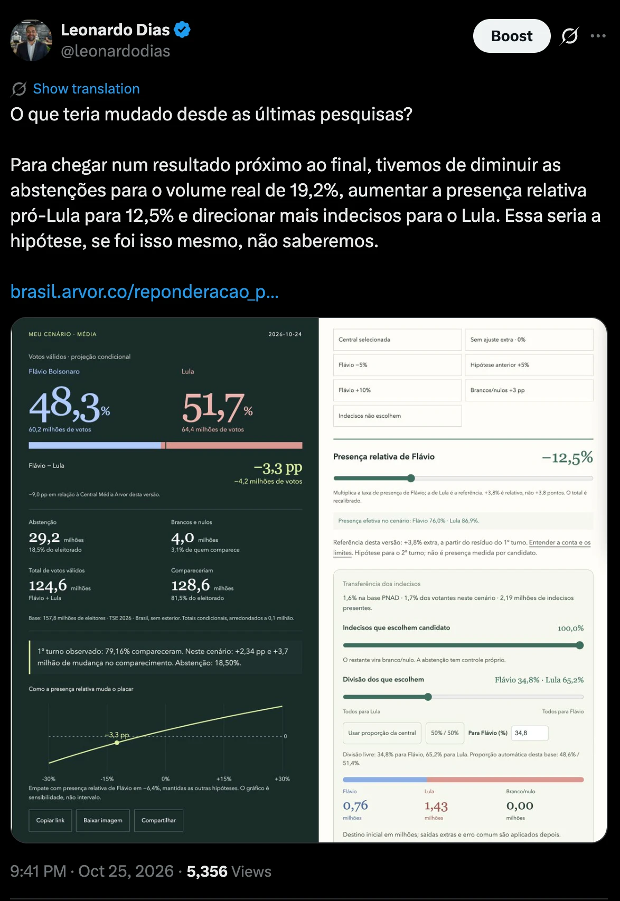
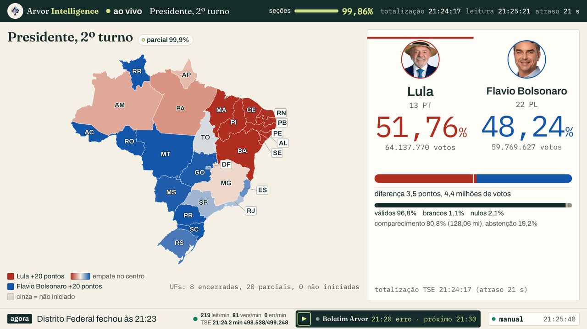
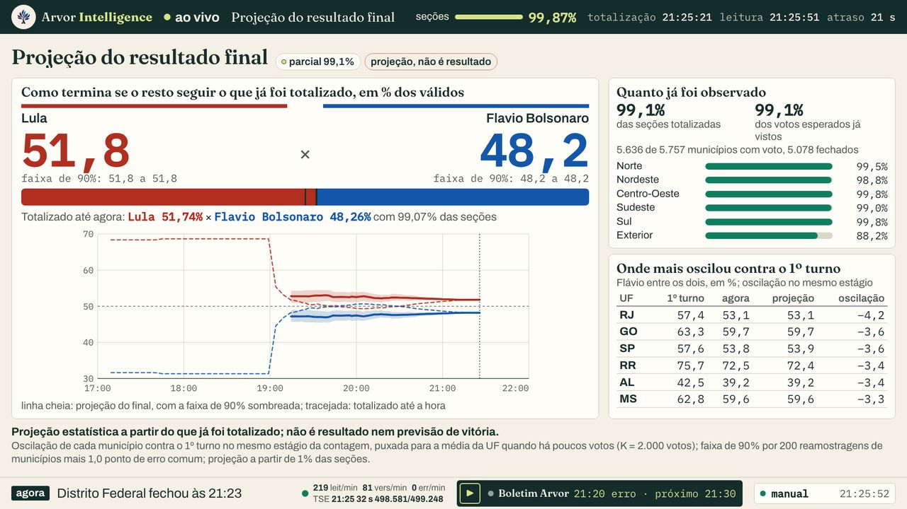
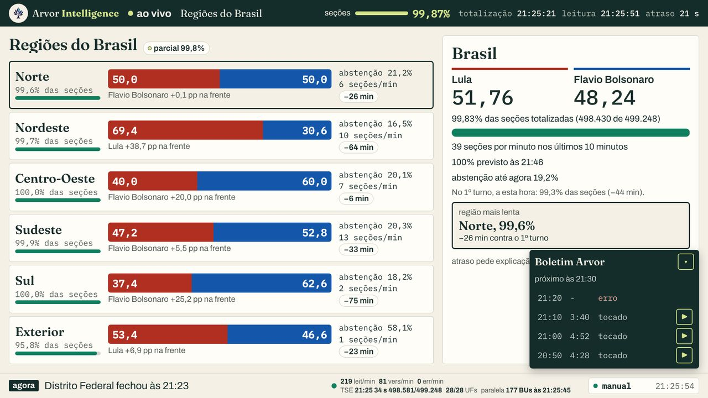
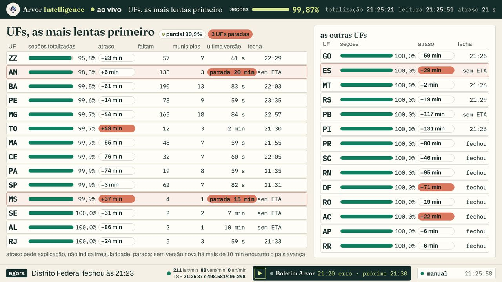
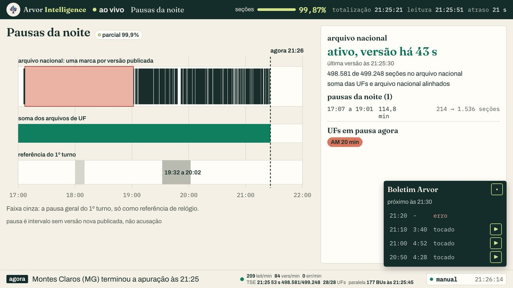
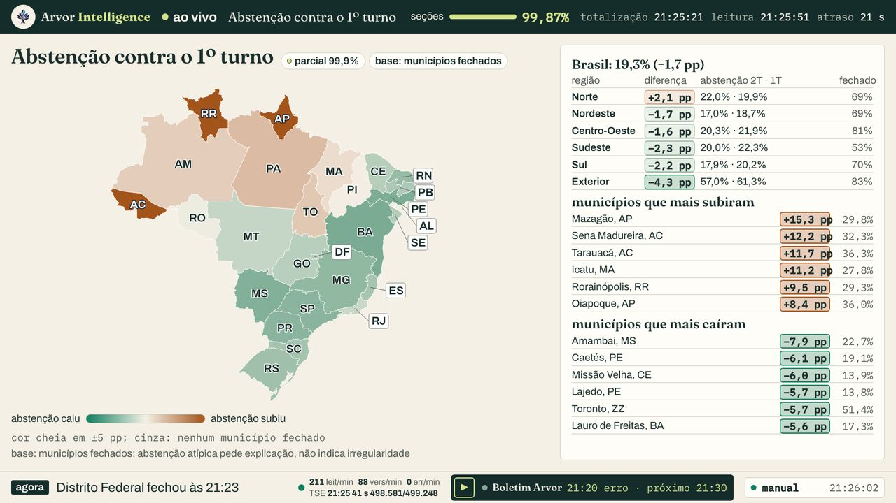
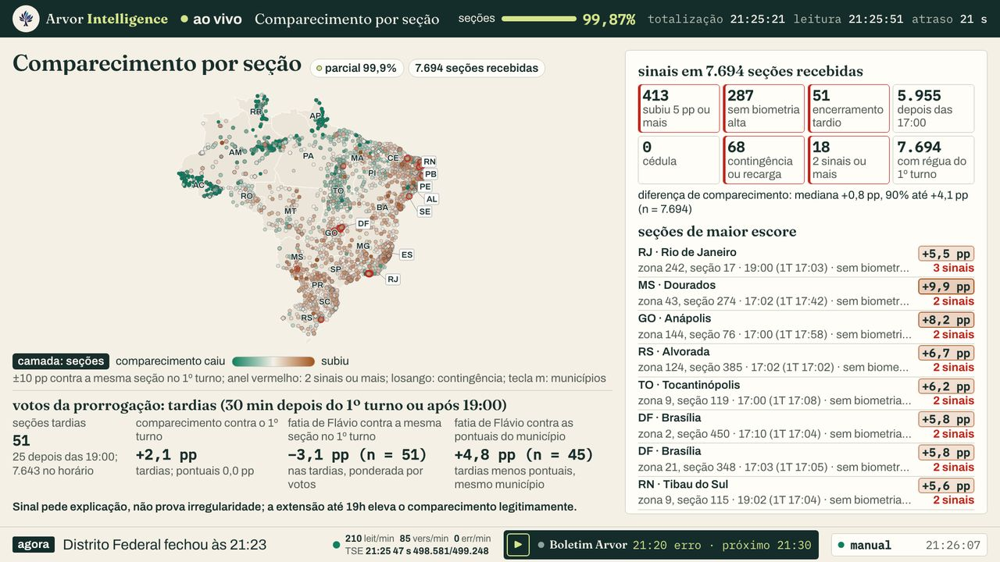
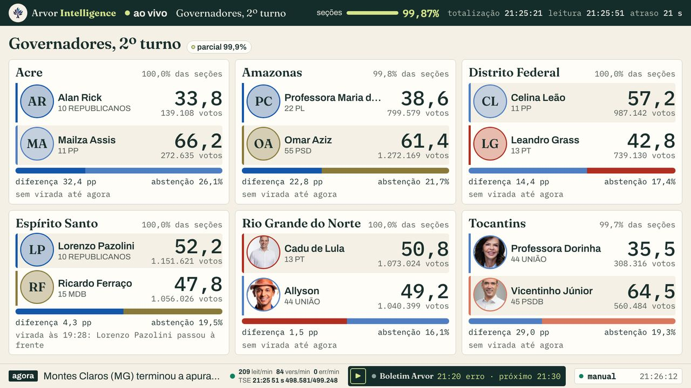
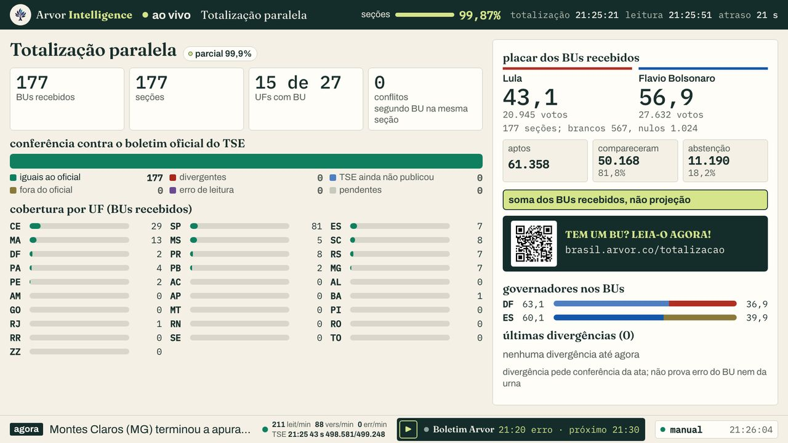

APURAÇÃO / 2º TURNO / PRESIDENTE E SEIS GOVERNADORES
Lula vence por 4,43 milhões de votos.
Com 100,00% das seções totalizadas, Lula tem 51,79% dos válidos e Flávio Bolsonaro 48,21%. Entre 17:07 e 19:01, durante a prorrogação decidida no STF, o TSE ficou 114,6 minutos sem gerar arquivo algum. Este dossiê mostra a noite como o banco a registrou, o que a projeção da casa disse a cada cinco minutos e o que mudou entre a última pesquisa e a urna.
Presidente · válidos51,79 × 48,21
Lula (PT) / Flávio Bolsonaro (PL)
Votos64,26 mi
contra 59,83 mi de Flávio
Abstenção19,22%
499.248 de 499.248 seções
Versão nacional gerada pelo TSE às 23:27:02 de 25/10 (100,00% das seções). Cada número desta página sai de um JSON listado em Fontes e reprodução.
A live da noite, gravada no YouTube: telão, projeção e boletins como foram ao ar.
01 / RESULTADO
Lula, 51,79%. Flávio, 48,21%.
4,43 milhões de votos de diferença (3,58 pontos dos válidos), com 100,00% das seções.
A projeção da casa apontou Lula desde o primeiro ponto, às 19:15, com 1,58% das seções, e manteve Lula à frente nos 40 pontos da noite; o STF prorrogou a votação até as 19h e quase nenhuma urna ficou aberta: nos boletins de 497.897 seções, o encerramento mediano foi às 17:01 e 0,90% fecharam depois das 19h; o TSE ficou 114,6 minutos sem gerar arquivo de nenhum tipo; a totalização paralela conferiu 177 boletins de urna em 15 UFs sem nenhuma divergência; e a urna ficou +5,53 pontos, na diferença Flávio menos Lula, do que as pesquisas mediam dois dias antes, com o mesmo sinal nas 20 de 20 casas e +9,33 da Média Arvor, que mediu certo até o último campo: o que mudou no domingo é o objeto deste dossiê.
100,00%499.248 de 499.248 seções totalizadas
80,78%comparecimento, 128,24 milhões de eleitores
19,22%abstenção, 30,51 milhões de eleitores
3,24%brancos e nulos sobre o comparecimento, 4,15 milhões
Verificado O Nordeste deu a Lula 13,65 milhões de votos de vantagem (69,37% dos válidos). Flávio abriu 4,58 milhões no Sul, 2,81 milhões no Sudeste e 1,87 milhão no Centro-Oeste. A soma das vantagens de Flávio no Centro-Sul não cobriu a do Nordeste.
Lula
Flávio Bolsonaro
Parte de cada candidato nos votos válidos. Fonte: presidente.json (nacional, regiões e exterior). ficha ao passar o ponteiro ou tocar
Verificado O Norte terminou em 50,01% a 49,99%: Lula ficou à frente por 1.079 votos em 10.048.173 válidos, com 100,00% das seções da região. Arredondado a duas casas, é empate; com todas as seções totalizadas, a diferença é a final.
Margem nos válidos
Lula, até 5 pp
Lula, 5 a 15 pp
Lula, 15 a 30 pp
Lula, 30 pp ou mais
Flávio, até 5 pp
Flávio, 5 a 15 pp
Flávio, 15 a 30 pp
Flávio, 30 pp ou mais
Lula venceu em 13 UFs e Flávio Bolsonaro em 14. Tom pela margem nos válidos. Fonte: arquivos de UF do TSE, versão vigente (presidente.json). ficha ao passar o ponteiro ou tocarLimites do capítulo
Placar da versão nacional gerada às 23:27:02 de 25/10, com 100,00% das seções (499.248 de 499.248), todas totalizadas.
Abstenção sobre o eleitorado de todas as seções; brancos e nulos sobre o comparecimento.
A frase da noite junta cinco arquivos com regras próprias; cada capítulo traz a conta e o limite de cada parte.
Atipicidade pede explicação, não prova irregularidade.
02 / A NOITE
114,6 minutos sem um arquivo.
326 versões do arquivo nacional desde as 17:00, uma parada de 17:07 a 19:01 e a decisão do STF no meio.
Verificado Entre 17:07:09 e 19:01:44, nenhum arquivo de nenhum tipo (resultado, andamento ou configuração, dos dois pleitos) tem hora de geração: 0 versões em 114,6 minutos. O coletor não parou: fez 65.792 leituras no intervalo (65.147 nao modificado, 420 nao existe, 222 ok, 3 igual). O arquivo nacional foi de 1.456 para 1.870 seções entre 17:07:01 e 19:01:56.
Inferência A pausa coincide com a janela da prorrogação. O banco mostra o silêncio de publicação, não a causa; segundo a Agência Brasil, o TSE suspendeu a totalização às 17h06 por causa da decisão.
A decisão, pelas fontes
Horário de Brasília. A hora é a de publicação da página, salvo quando a matéria cita a hora do fato; o banco do coletor não registra a decisão, só o silêncio que veio junto.
13:22 · Poder360 (fato documentado pela fonte): 13h22: campanha de Lula protocola no TSE o 1º pedido de extensão (Salvador, Feira de Santana, Lauro de Freitas). 15h42: amplia para todo o país. 15h50: campanha de Flávio pede prorrogação em 19 cidades de SP, PR e SC.
17:01 · Estadão (fato documentado pela fonte): A Procuradoria-Geral Eleitoral opinou por manter o fim da votação às 17h, apesar da gravidade da retenção de ônibus; o parecer chegou ao TSE às 17h01, quando saiu a liminar.
17:03 · STF (Notícias) (fato documentado pela fonte): Zanin, na Reclamação 101673 da Coligação Brasil Pronto Pra Mais (Salvador, Feira de Santana, Lauro de Freitas; ADPF 1013), estendeu a votação até 19h onde as urnas não fecharam às 17h. Notícia do STF publicada às 18h28.
17:03 · O Globo (fato documentado pela fonte): Trecho da decisão: fatos graves que chegaram ao STF às 16:32:49, prorrogação por duas horas até 19h em todas as seções, cabendo ao TSE cumprir. O MPE se manifestara contra no TSE.
17:07 · Agência Brasil (fato documentado pela fonte): Zanin atendeu pedido da campanha de Lula e mandou ampliar a votação até 19h em todo o país; o TSE suspendeu a totalização às 17h06 com 1.225 de 499.248 seções; Lula 57,66% e Flávio 42,34% nessa fração.
17:22 · O Globo (fato documentado pela fonte): O TSE confirmou a O Globo que pausou a totalização e a divulgação dos resultados por causa da decisão de Zanin (0,25% das urnas apuradas).
17:49 · Poder360 (fato documentado pela fonte): TSE avisou as seções às 17h49, 46 minutos após a decisão; urnas já fechadas não foram reabertas. Alguns grupos receberam aviso por WhatsApp às 17h13 (zona 211 do RJ; Ceub, DF).
18:00 · Poder360 (fato documentado pela fonte): Zanin esclareceu que a prorrogação até 19h só vale para urnas que não fecharam; disse ter atendido também a reclamação da campanha de Flávio.
18:08 · Agência Brasil (fato documentado pela fonte): Após o TSE informar ao STF que as urnas fecharam no horário oficial, Zanin reajustou a decisão para valer só às seções ainda abertas.
18:15 · Agência Brasil (fato documentado pela fonte): Nunes Marques orientou os TREs: seções ainda abertas permanecem até 19h, em cumprimento à decisão judicial; convergia com o esclarecimento de Zanin.
19:00 · Agência Brasil (fato documentado pela fonte): TRE-SP: mais de 80% das seções de SP já estavam fechadas quando chegou o aviso oficial do STF, às 18h17; ele soube pela imprensa às 17h.
Relato da imprensa22:00 · Poder360 (declaração): Poder360: Manfré disse que recebeu a decisão de Zanin perto das 17h e que o sistema já estava fechado para cédulas de papel.
Relato da imprensahora não informada · G1 (declaração): G1: Manfré disse que o TRE-SP só recebeu a comunicação oficial da decisão do STF às 18h17 e que não houve prejuízo para os eleitores.
Lula
Flávio Bolsonaro
Parada do arquivo nacional
Marca do noticiário
Votos de cada candidato pelo arquivo nacional, 326 versões geradas pelo TSE desde 17:00. Entre 17:07:01 e 19:01:56 o arquivo nacional não teve versão nova. As marcas tracejadas vêm do noticiário (veículo e link no texto), não do banco. Fonte: linha_do_tempo.json. ficha ao passar o ponteiro ou tocar
Verificado Depois das 19:00, Flávio teve mais da metade dos válidos contados no arquivo nacional de 19:45 a 20:23, com máximo de 50,51%. Nesse mesmo intervalo, a projeção da casa continuava com Lula à frente (capítulo 03).
Inferência A leitura provável é de composição, não de virada: o que entra primeiro depende de onde as seções transmitem antes. O capítulo Cedo e tarde testa isso comparando cada grupo de municípios com ele mesmo no 1º turno.
Parte de Flávio Bolsonaro nos votos válidos em cada versão do arquivo nacional. Faixa azul: versões em que Flávio tinha mais da metade dos válidos (de 19:45 a 20:23; máximo de 50,51% depois das 19:00). A fatia mostra quem já tinha sido contado, não a direção do resultado. Fonte: linha_do_tempo.json. ficha ao passar o ponteiro ou tocar
Lote com mais votos de Lula
Lote com mais votos de Flávio
Seções acrescentadas por versão do arquivo nacional. O maior lote, às 20:48:41, trouxe 9.612 seções. A cor diz quem levou mais votos dentro do lote, o que reflete a geografia de quem chegou naquela hora. Fonte: linha_do_tempo.json. ficha ao passar o ponteiro ou tocar
As pausas de Amazonas e Roraima
Pausas por UF gravadas pelo coletor depois das 19:00 (sem versão nova do arquivo de UF por mais de 7 minutos, com contagem incompleta). Pausa é intervalo sem versão nova publicada, não acusação.
UF
De
Até
Minutos
Seções antes
Seções depois
Amazonas (AM)
19:01:54
19:39:16
37,4
152
3.090
Roraima (RR)
19:01:55
19:32:45
30,8
6
108
Amazonas (AM)
19:39:16
19:47:56
8,7
3.090
4.270
Roraima (RR)
19:40:35
19:51:15
10,7
157
191
Roraima (RR)
20:01:45
20:11:26
9,7
308
450
Roraima (RR)
20:56:55
21:14:55
18,0
1.516
1.519
Amazonas (AM)
21:06:16
21:49:58
43,7
8.022
8.156
Amazonas (AM)
22:05:57
22:45:57
40,0
8.156
8.157
A hora em que cada UF fechou
Hora de Brasília da primeira versão completa
antes de 21:15
21:15 a 21:30
21:30 a 21:45
21:45 a 22:00
depois de 22:00
SC fechou primeiro, às 21:08; BA por último, às 23:22. Fonte: linha_do_tempo.json, conclusao_ufs. ficha ao passar o ponteiro ou tocar
A mesma régua para as duas noites
2º turno
1º turno
Mesma régua para as duas noites: o zero é o fim da votação (17:00 em 04/10, 19:00 em 25/10, depois da prorrogação). Metade das seções chegou 1h27 depois do fim da votação no 2º turno, contra 2h14 depois no 1º. A parte à esquerda do zero no 2º turno são as seções totalizadas antes da parada das 17:07. Fontes: linha_do_tempo.json do 2º turno e analysis/apuracao_2026/dados/linha_do_tempo.json. ficha ao passar o ponteiro ou tocar
O que o coletor viu
Verificado O coletor marcou 61 versões como regressivas (o contador do arquivo caiu). Pela hora de geração, 61 eram cópias antigas servidas de novo pelo CDN (uf 53, mu 5, zona 3), e 0 versões genuínas tiveram menos seções ou menos comparecimento que a anterior. Nenhuma contagem andou para trás.
Segundos entre a geração do arquivo no TSE e a primeira captura pelo coletor. Inclui o intervalo de sondagem: é teto da demora, não medida dela. Os máximos são as versões geradas às 17:07 e lidas depois da parada.
Nível
Versões
Mediana (s)
p95 (s)
Máximo (min)
Nacional
327
43,4
62,5
113,8
UF
7.874
36,4
65,1
803,2
Município
36.610
210,2
1.564,0
125,5
Zona
27.803
458,2
1.690,6
127,5
Limites do capítulo
A hora é a de geração de cada versão pelo TSE, não a de leitura pelo coletor.
As marcas da decisão vêm do noticiário, com veículo e link; o banco não registra decisões.
Fatia de Flávio ao longo da noite mostra quem já tinha sido contado, não a direção do resultado.
A régua do 1º turno desconta os 120 minutos da prorrogação; as duas noites tiveram fluxos de transmissão diferentes.
pausa é intervalo sem versão nova publicada, não acusação
03 / PROJEÇÃO
Lula à frente em 40 de 40 pontos.
Primeiro ponto às 19:15, com 1,58% das seções: Flávio 47,19% entre os dois. Final: 48,21%.
Verificado Às 19:15, com 7.903 seções (1,58%) de 720 municípios, a projeção dava Flávio 47,19% e Lula 52,81%, faixa de 90% de 45,72 a 48,84 para Flávio. A contagem observada naquele instante tinha Flávio com 48,28%. O resultado final ficou em 48,21% × 51,79%: −1,02 ponto de distância, dentro da faixa.
Verificado Entre 19:50 e 20:25, a contagem observada teve Flávio à frente em 8 pontos de 5 minutos, com máximo de 50,70% entre os dois na soma usada pela rota. A projeção seguiu com Lula, porque o que faltava contar era, no 1º turno, mais favorável a ele.
Projeção relida
Faixa de 90%
Contagem observada
Exibida ao vivo
Resultado final
Parte de Flávio entre os dois. Linha azul: projeção da casa relida a cada 5 minutos sobre o banco; faixa: 90%; cinza: o que já estava contado; pontilhado dourado: a série que o telão exibiu ao vivo. A projeção abaixo de 50% em todos os 40 pontos significa Lula à frente. Projeção estatística a partir do que já foi totalizado; não é resultado nem previsão de vitória. Fonte: projecao_noite.json. ficha ao passar o ponteiro ou tocar
Verificado Erro absoluto médio contra o final: 0,39 ponto; máximo de 1,21. Em 40 dos 40 pontos o final ficou dentro da faixa de 90%. No último ponto, às 22:30, a projeção era 48,21% contra 48,21% observado.
Parte de Flávio entre os dois. Final observado: 48,21%. Fonte: projecao_noite.json, pontos.
Hora
Seções
Flávio observado
Flávio projetado
Faixa de 90%
Erro contra o final
19:15
1,58%
48,28
47,19
45,72 a 48,84
−1,02
19:30
4,06%
49,34
47,10
45,52 a 48,76
−1,11
20:00
18,98%
50,60
47,44
46,03 a 48,71
−0,77
20:30
47,52%
49,98
47,62
46,61 a 48,39
−0,59
21:00
82,85%
48,65
48,05
47,79 a 48,33
−0,16
21:30
99,10%
48,26
48,20
48,19 a 48,21
−0,01
22:00
99,94%
48,22
48,21
48,21 a 48,21
0,00
Verificado A série relida não é necessariamente a que a tela mostrou: a rota foi chamada de novo sobre o banco com o relógio de cada instante. A série exibida ao vivo (146 leituras do telão, arquivo apuracao/data/projecao_2t_serie.json) aparece separada no gráfico, em pontilhado.
Como a projeção funciona
Para cada município, a projeção compara o que já foi contado no 2º turno com o 1º turno no mesmo estágio da contagem (a mesma fração das seções do município) e calcula a oscilação, o swing, da parte de Flávio entre os dois. Município com poucas seções empresta força da UF: pesa n/(n+2.000) e o resto vem da UF; a UF pesa N/(N+20.000) e o resto vem do Brasil. A parte não totalizada recebe os votos dos dois que faltavam no 1º turno nesse estágio, multiplicados pela razão de comparecimento observada.
A faixa de 90% sai de 200 reamostragens dos municípios observados dentro de cada UF, mais o resíduo municipal e um erro comum de 1 ponto, aplicados só ao que falta totalizar. Abaixo de 1% das seções do país a rota não projeta: a base é pequena e concentrada demais.
Método registrado no arquivo: oscilação proporcional por município contra o 1º turno no mesmo estágio da contagem (mesma fração de seções), com pooling parcial: município pesa n/(n+K) e o resto vem da UF; UF pesa N/(N+K_uf) e o resto vem do Brasil; parte não totalizada = votos dos dois que faltavam no 1º turno nesse estágio × razão de comparecimento dos dois observada; faixa de 90% por bootstrap dos municípios observados dentro da UF, resíduo municipal e erro comum, só sobre o que falta totalizar.
Limites do capítulo
projeção estatística a partir do que já foi totalizado; não é resultado nem previsão de vitória
A régua é o 1º turno no mesmo estágio da contagem: se a ordem de chegada das seções mudar entre turnos, o swing por estágio carrega viés.
O erro comum de 1 ponto é hipótese declarada, não estimado na noite.
A série relida reconstrói o método sobre o banco; o que foi ao ar está na série ao vivo.
04 / BOLETINS
16 boletins, 72 minutos de voz.
De 17:10 a 21:20, um boletim a cada 10 minutos fora da parada, gerado do banco e lido com a voz do autor.
Verificado O boletim de 21:20 foi gerado e não foi ao ar por falha ao publicar; fica aqui como registro.
Verificado Entre os boletins de 17:20 e 19:10 houve 110 minutos sem boletim: o boletim só sai com versão nova, e o TSE não gerou arquivo durante a parada (capítulo 02).
17:104:36
Lula 56,70%Flávio 43,30%0,29% das seções
Arquivo nacional na versão de 17:07:01.
Motivo do boletim: primeiro boletim com seções totalizadas.
Roteiro lido
Dezessete e dez em Brasília. Boa noite. O Tribunal Superior Eleitoral já totalizou mil duzentas e vinte e cinco seções, de quase quinhentas mil. Isso é zero vírgula vinte e cinco por cento do país. A versão mais recente do arquivo nacional saiu às dezessete e seis.
Flávio Bolsonaro tem quarenta e dois vírgula três por cento dos votos válidos, cerca de cento e quarenta e dois mil votos. Lula tem cinquenta e sete vírgula sete por cento, cerca de cento e noventa e quatro mil. Lula está à frente por quinze vírgula três pontos, pouco mais de cinquenta e um mil votos.
Ninguém foi eleito. A contagem está no começo.
Os brancos somam um vírgula dois por cento do total, e os nulos, um vírgula cinco. No resultado final do primeiro turno, os brancos foram um vírgula oito, e os nulos, dois vírgula nove. A abstenção ainda não tem régua justa. A comparação correta é a dos municípios já fechados contra os mesmos municípios no primeiro turno, e nenhum município fechou até agora. Nas seções apuradas, a abstenção está em vinte e quatro por cento no Norte, vinte no Nordeste e dezenove no Centro-Oeste. No primeiro turno, o país fechou com vinte e um.
Tudo o que existe chegou nos últimos dez minutos, em duas versões do arquivo nacional. Esse bloco deu cinquenta e sete vírgula sete por cento a Lula, com saldo de cinquenta e um mil votos. O ritmo é de vinte e uma seções por minuto, e a totalização está cerca de dez minutos adiantada em relação ao primeiro turno no mesmo horário.
Por região, o mapa ainda tem poucas peças. No Norte, com zero vírgula quatro por cento das seções, Lula lidera por trinta pontos. No Nordeste, com uma fração mínima apurada, Lula abre quarenta e sete pontos. No Centro-Oeste, Flávio está à frente por dez pontos, com os votos de Goiás. Sudeste, Sul e exterior ainda não entregaram nenhuma seção.
A régua de agora mostra onde a contagem começou, não o país.
Todos os estados seguem abertos. Acre, Alagoas, Amazonas, Amapá e Espírito Santo ainda não têm seção totalizada. Com tão pouco dado, não há projeção simples de fechamento. No primeiro turno, o último a fechar foi o Amazonas, perto das três da manhã, depois de Minas Gerais e do Maranhão, perto das duas. Atraso, quando aparecer, pede explicação e não indica irregularidade.
Dos seis governos em segundo turno, só o Distrito Federal tem voto contado. Com meio por cento das seções, Celina Leão tem cinquenta e oito vírgula cinco por cento, contra quarenta e um vírgula cinco de Leandro Grass: dezessete pontos de vantagem. Acre, Amazonas, Espírito Santo, Rio Grande do Norte e Tocantins ainda não apuraram nenhuma seção.
Até aqui, não houve intervalo sem versão nova publicada.
A totalização paralela por QR ainda não recebeu nenhum boletim de urna. Quando os boletins chegarem, o número será a soma dos BUs recebidos, não projeção.
Um alerta técnico: às dezessete e seis, nosso coletor leu uma cópia antiga do arquivo da Bahia. O registro está feito, e o caso pede explicação.
Agora, o que está acontecendo fora da urna. A Folha informa que o ministro Cristiano Zanin, do STF, estendeu até as dezenove horas o horário de eleições no Brasil. Também segundo a Folha, Lula pediu prorrogação da votação no país inteiro, e Flávio Bolsonaro, em cidades de três estados. A Agência Brasil noticia que a campanha de Lula denuncia falta de transporte em nove estados. A Justiça Eleitoral de Pernambuco determinou o restabelecimento da frota no Recife. O ministro Kassio deu meia hora ao TRE da Bahia e à Procuradoria para se manifestarem sobre o transporte público. O G1 publicou que a campanha de Flávio pediu ao TSE mais tempo de votação em Minas Gerais e no Rio Grande do Sul, por causa das chuvas.
A leitura de analista é direta. Os quinze pontos de Lula vêm de um quarto de um por cento das seções, quase todas do Norte e do Nordeste. Sem o Sudeste e o Sul, esse número mostra a ordem de chegada das seções, não o resultado. O placar que importa começa a se formar quando São Paulo, Minas Gerais e o Sul entrarem na conta.
17:204:22
Lula 56,70%Flávio 43,30%0,29% das seções
Arquivo nacional na versão de 17:07:01 · +0 seções desde o boletim anterior.
Motivo do boletim: pausa.
Roteiro lido
Dezessete e vinte em Brasília. O Tribunal Superior Eleitoral segue com as mesmas mil duzentas e vinte e cinco seções totalizadas, de quase quinhentas mil. São zero vírgula vinte e cinco por cento do país. A última versão do arquivo nacional ainda é a das dezessete e seis.
A novidade deste boletim é a ausência de novidade. Desde as dezessete e sete, o arquivo nacional está num intervalo sem versão nova publicada. Já são treze minutos. Isso não é acusação. No primeiro turno houve um intervalo geral sem versão nova das dezenove e trinta e duas às vinte e duas.
O placar não mudou. Flávio Bolsonaro tem quarenta e dois vírgula três por cento dos votos válidos, perto de cento e quarenta e dois mil votos. Lula tem cinquenta e sete vírgula sete por cento, perto de cento e noventa e quatro mil. Lula segue à frente por quinze vírgula três pontos, uma distância de cinquenta e um mil votos.
Ninguém foi eleito.
Nos últimos dez minutos não entrou nenhuma seção e nenhum voto válido. A diferença ficou parada. O ritmo, que era de vinte e uma seções por minuto, caiu a zero. Mesmo assim, a totalização segue praticamente no mesmo relógio do primeiro turno.
Brancos e nulos continuam baixos: um vírgula dois e um vírgula cinco por cento do total, contra um vírgula oito e dois vírgula nove no resultado final do primeiro turno. A abstenção ainda não tem régua justa, porque a comparação correta é a dos municípios já fechados contra os mesmos municípios no primeiro turno, e nenhum fechou. Há também um descompasso a registrar: a conta nacional nas seções apuradas mostra quarenta e nove por cento de abstenção, enquanto as regiões mostram entre dezenove e vinte e quatro. Esse descompasso pede explicação e não indica irregularidade.
O mapa regional é o mesmo de antes. Lula abre trinta pontos no Norte e quarenta e sete no Nordeste. Flávio fica dez pontos à frente no Centro-Oeste, com os votos de Goiás. Sudeste, Sul e exterior seguem sem seções.
Acre, Alagoas, Amazonas, Amapá e Espírito Santo continuam sem seção totalizada, e sem ritmo não há projeção simples de fechamento.
Nos governos estaduais, o único segundo turno com voto contado continua sendo o do Distrito Federal: Celina Leão tem cinquenta e oito vírgula cinco por cento, contra quarenta e um vírgula cinco de Leandro Grass, com meio por cento das seções. Acre, Amazonas, Espírito Santo, Rio Grande do Norte e Tocantins seguem zerados.
A totalização paralela por QR ainda não recebeu nenhum boletim de urna. Quando os boletins chegarem, o número será a soma dos BUs recebidos, não projeção.
Às dezessete e quinze, nosso monitor registrou o único alerta desde o boletim anterior: nenhum arquivo do TSE com versão nova desde as dezessete e sete.
Agora, o que está acontecendo fora da urna. O Poder360 publicou a íntegra da decisão do ministro Zanin que prorroga a votação até as dezenove horas, com a manchete de que o STF atropela o TSE e prorroga a eleição em duas horas. A Folha informa que o Ministério da Justiça identificou falhas no transporte em oito estados, e que a OEA observa problemas com transporte na eleição. Também segundo a Folha, artistas protestam contra a falta de ônibus em Salvador e São Paulo. O G1 mostra ônibus parados e terminais lotados em São Paulo, com moradores organizando caronas. A Agência Brasil noticia que a campanha de Flávio pediu votação até as dezenove horas por causa das chuvas em alguns estados.
A leitura de analista é simples. O placar de agora é uma fotografia congelada de um quarto de um por cento das seções, quase todas do Norte e do Nordeste. Com a votação prorrogada até as dezenove horas e o arquivo nacional parado há treze minutos, o próximo dado relevante é a volta das versões novas, não a margem de Lula. O resultado começa a se formar quando o Sudeste e o Sul entrarem na conta.
19:103:45
Lula 52,14%Flávio 47,86%1,63% das seções
Arquivo nacional na versão de 19:09:36 · +6.659 seções desde o boletim anterior.
Motivo do boletim: primeiro boletim com seções totalizadas.
Roteiro lido
Dezenove e dez em Brasília. O Tribunal Superior Eleitoral totalizou oito mil e cinco seções, de quase quinhentas mil. É um vírgula seis por cento do país.
O arquivo nacional voltou a publicar. O intervalo sem versão nova, aberto às dezessete e sete, terminou às dezenove e um, depois de quase cento e quinze minutos.
Flávio Bolsonaro tem quarenta e sete vírgula nove por cento dos votos válidos, perto de novecentos e cinquenta e cinco mil votos. Lula tem cinquenta e dois vírgula um por cento, perto de um milhão e quarenta mil. Lula está à frente por quatro vírgula três pontos, oitenta e cinco mil votos.
Ninguém foi eleito.
Desde as dezenove horas saíram dez versões, com seis mil e quinhentas seções e um milhão e seiscentos mil votos válidos. O bloco veio quase dividido ao meio: cinquenta e um por cento para Lula, quarenta e nove para Flávio, e a diferença fechou.
Brancos somam um por cento e nulos, um vírgula nove, contra um vírgula oito e dois vírgula nove no primeiro turno. Na abstenção, comparamos os cento e dezoito municípios já fechados, quase todos no exterior, com eles mesmos no primeiro turno. A taxa caiu de cinquenta e nove vírgula um para cinquenta e quatro vírgula nove por cento. Essa queda pede explicação e não indica irregularidade.
Nas regiões, Lula abre quarenta e quatro pontos no Nordeste e onze no Norte. Flávio fica vinte pontos à frente no Sul, dez no Centro-Oeste e um vírgula cinco no Sudeste, onde só entraram zero vírgula dois por cento das seções.
A totalização corre cento e cinco minutos atrás do primeiro turno. Rio de Janeiro e São Paulo ainda estão praticamente zerados. Pela projeção simples, Amapá deve ser o último a fechar, por volta das três e dez da madrugada.
Nos seis segundos turnos estaduais, nenhuma virada. No Distrito Federal, Celina Leão tem cinquenta e oito vírgula um contra quarenta e um vírgula nove de Leandro Grass. No Acre, Mailza Assis tem sessenta e oito vírgula cinco contra trinta e um vírgula cinco de Alan Rick. No Amazonas, Omar Aziz faz cinquenta e seis vírgula quatro contra quarenta e três vírgula seis da Professora Maria do Carmo. No Rio Grande do Norte, Cadu de Lula tem cinquenta e três e Allyson, quarenta e sete. No Tocantins, Vicentinho Júnior tem cinquenta e oito, contra quarenta e dois da Professora Dorinha. No Espírito Santo, Lorenzo Pazolini tem cinquenta e dois e Ricardo Ferraço, quarenta e oito.
A totalização paralela por QR recebeu oitenta e um boletins de urna, sem conflito e ainda sem conferência com o TSE. É a soma dos BUs recebidos, não projeção.
O alerta veio de Mato Grosso do Sul: Flávio passou Lula às dezenove e quatro, e Lula retomou a frente às dezenove e nove.
O que está acontecendo fora da urna. A Agência Brasil noticia que o TSE retomou a contagem às dezenove horas e que, no Distrito Federal, urnas fecharam antes de a prorrogação chegar. Segundo a Folha, uma escola no Distrito Federal manteve quatro de onze seções abertas após a decisão de Zanin, e a Polícia Federal vai investigar denúncias de restrições ao transporte.
A leitura de analista: a margem de Lula já caiu para quatro pontos, e o bloco que chegou veio dividido ao meio. Sudeste e Sul mal começaram. O placar de agora mede o ritmo da totalização, não o resultado.
19:204:47
Lula 51,49%Flávio 48,51%2,33% das seções
Arquivo nacional na versão de 19:19:36 · +3.507 seções desde o boletim anterior.
Motivo do boletim: virada; pausa.
Roteiro lido
Dezenove e vinte em Brasília. O Tribunal Superior Eleitoral já totalizou onze mil e duzentas seções. São dois vírgula dois por cento do país.
Flávio Bolsonaro tem quarenta e oito vírgula três por cento dos votos válidos, um milhão e trezentos e cinquenta mil votos. Lula tem cinquenta e um vírgula sete por cento, um milhão e quatrocentos e quarenta mil. Lula segue à frente por três vírgula três pontos, noventa e dois mil votos.
Ninguém foi eleito.
Em dez minutos, o arquivo nacional publicou dezenove versões. Entraram três mil e duzentas seções e oitocentos mil votos válidos. O bloco veio cinquenta vírgula quatro para Lula e quarenta e nove vírgula seis para Flávio, um saldo de quase sete mil votos para Lula. Em votos, Lula ampliou a frente. Em pontos, a diferença fechou, de quatro vírgula três para três vírgula três, porque o total cresceu mais rápido que a vantagem.
Brancos estão em um por cento e nulos em um vírgula nove, abaixo do resultado final do primeiro turno, que teve um vírgula oito e dois vírgula nove. Para a abstenção, a régua justa são os cento e vinte e dois municípios já fechados, comparados com eles mesmos no primeiro turno. Ali a taxa ficou em cinquenta e quatro vírgula um por cento, contra cinquenta e oito vírgula dois. Em Lisboa, a maior cidade desse grupo, caiu de sessenta e três vírgula seis para cinquenta e oito. Essa queda pede explicação e não indica irregularidade.
No mapa, Lula lidera o Nordeste por quarenta e um pontos e o Norte por quase seis. Flávio lidera o Sul por vinte e o Centro-Oeste por dez vírgula seis. No Sudeste, com só zero vírgula três por cento das seções, Flávio tem vantagem de menos de um ponto. Em Minas Gerais, a distância é de zero vírgula três ponto.
A totalização corre cento e dez minutos atrás do primeiro turno no mesmo relógio. Rio de Janeiro e Sergipe ainda não totalizaram nenhuma seção, e São Paulo tem três centésimos. Amazonas e Roraima entraram em intervalo sem versão nova publicada, há cerca de dezoito minutos. Pela projeção simples, o Pará deve fechar por último, perto das duas e quarenta da madrugada. Atraso pede explicação, não indica irregularidade.
A novidade nos estados vem do Espírito Santo. Ricardo Ferraço passou Lorenzo Pazolini e tem cinquenta vírgula dois contra quarenta e nove vírgula oito, uma diferença de doze votos com dois décimos das seções apuradas. Nos outros cinco, nenhuma virada. No Distrito Federal, Celina Leão tem cinquenta e sete vírgula oito contra quarenta e dois vírgula três de Leandro Grass. No Acre, Mailza Assis mantém sessenta e oito vírgula oito contra trinta e um vírgula dois de Alan Rick. No Amazonas, Omar Aziz faz cinquenta e cinco vírgula um contra quarenta e quatro vírgula nove da Professora Maria do Carmo. No Tocantins, Vicentinho Júnior abre sessenta e quatro vírgula quatro contra trinta e cinco vírgula seis da Professora Dorinha. No Rio Grande do Norte, Cadu de Lula tem cinquenta e dois vírgula sete e Allyson, quarenta e sete vírgula três.
A totalização paralela por QR chegou a oitenta e quatro boletins de urna em catorze estados. Dois já foram conferidos e são iguais aos do TSE, sem nenhuma divergência. Os outros oitenta e dois esperam a publicação oficial. É a soma dos BUs recebidos, não projeção.
Mato Grosso do Sul trocou de mão outra vez. Às dezenove e dezessete, Flávio voltou à frente e agora tem sete vírgula sete pontos de vantagem, com pouco mais de um por cento apurado.
O que está acontecendo fora da urna. Segundo o G1, o coordenador da campanha de Lula diz que houve boicote no transporte em capitais governadas pela oposição ao PT. A Folha informa que Renan Santos afirmou que o resultado das eleições está sendo maculado, ao defender um possível adiamento do segundo turno. O SBT News registra que a votação terminou e a apuração do segundo turno começou.
A leitura de analista. A vantagem de Lula cresce em votos e encolhe em pontos, e isso tem uma explicação simples: os blocos agora chegam divididos quase ao meio. Rio, São Paulo e quase todo o Sudeste ainda não entraram. A frente de agora mostra quais urnas foram contadas primeiro e ainda não diz quem vence.
19:304:33
Lula 51,05%Flávio 48,95%5,40% das seções
Arquivo nacional na versão de 19:29:48 · +15.358 seções desde o boletim anterior.
Motivo do boletim: 3,0 pontos de seções desde o anterior; virada.
Roteiro lido
Dezenove e trinta em Brasília. O TSE totalizou vinte e seis mil e cem seções, cinco vírgula dois por cento do país.
Flávio Bolsonaro tem quarenta e oito vírgula nove por cento dos votos válidos, três milhões e duzentos mil votos. Lula tem cinquenta e um vírgula um por cento, três milhões e trezentos e cinquenta mil. Lula está à frente por dois vírgula três pontos, cento e quarenta e oito mil votos.
Ninguém foi eleito.
Nos últimos dez minutos chegaram quase quinze mil seções e três milhões e oitocentos mil votos válidos. O bloco veio cinquenta vírgula sete para Lula e quarenta e nove vírgula três para Flávio, um saldo de cinquenta e seis mil votos para Lula. Em votos, a frente de Lula subiu de noventa e dois mil para cento e quarenta e oito mil. Em pontos, a diferença fechou de novo, de três vírgula três para dois vírgula três.
Brancos somam um por cento e nulos, um vírgula nove. Os dois estão abaixo do resultado final do primeiro turno, que teve um vírgula oito e dois vírgula nove. Na abstenção, a comparação justa é com os cento e trinta e três municípios já fechados, medidos contra eles mesmos no primeiro turno. Ali ela caiu de cinquenta e cinco vírgula três para cinquenta e um vírgula cinco por cento. Quase todos ficam no exterior. No Porto e em Londres, a queda passa de cinco pontos. Abstenção atípica pede explicação e não indica irregularidade.
Por região, Lula lidera o Nordeste por quase quarenta pontos e o Norte por quatro vírgula sete. Flávio lidera o Sul por vinte e um e o Centro-Oeste por doze vírgula sete. No Sudeste, que tem só um por cento das seções, Flávio está à frente por dois vírgula quatro.
Houve uma virada no Rio de Janeiro: Lula passou à frente lá. Só que o estado tem três centésimos das seções totalizadas, e a margem é de um vírgula dois ponto. É um retrato de pouquíssimas urnas.
A totalização segue cerca de cento e dez minutos atrás do primeiro turno no mesmo horário. Sergipe ainda não totalizou nenhuma seção, e São Paulo está em catorze centésimos. Amazonas e Roraima estão há vinte e oito minutos em intervalo sem versão nova publicada. Pela projeção simples, Minas Gerais deve ser o último estado a fechar, perto das três da madrugada, e o país chega a cem por cento perto de duas da manhã. Atraso pede explicação, não indica irregularidade.
No Espírito Santo, o governo trocou de mão outra vez. Lorenzo Pazolini voltou à frente de Ricardo Ferraço, com cinquenta vírgula seis contra quarenta e nove vírgula quatro e um por cento apurado. É a quarta virada da noite no estado. No Rio Grande do Norte, Cadu de Lula ampliou a vantagem e tem cinquenta e quatro vírgula sete contra quarenta e cinco vírgula três de Allyson. Celina Leão mantém cinquenta e sete vírgula seis no Distrito Federal, e Omar Aziz tem cinquenta e cinco vírgula três no Amazonas. Mailza Assis está com sessenta e sete vírgula sete no Acre, e Vicentinho Júnior com sessenta e dois vírgula oito no Tocantins.
A totalização paralela por QR recebeu noventa e quatro boletins de urna em catorze estados. Sete já foram conferidos e são iguais aos do TSE, sem nenhuma divergência. Os outros oitenta e sete esperam a publicação oficial. É a soma dos BUs recebidos, não projeção.
O que está acontecendo fora da urna. O Poder360 publicou que o Ministério Público Eleitoral foi contra estender a votação, mas o Supremo manteve as urnas abertas até as dezenove horas. O Poder360 também informa que a Justiça negou o pedido do PT para prender gestores do transporte de São Paulo. E, segundo a Folha, centrais sindicais dizem que a falta de ônibus para eleitores fere a democracia.
A leitura de analista. Os últimos blocos chegaram quase divididos ao meio, por isso a vantagem de Lula cresce em votos e encolhe em pontos. Rio, São Paulo, Sergipe e quase todo o Sudeste ainda não foram contados. O placar de agora mostra quais urnas entraram primeiro e não diz quem vai vencer.
19:404:36
Lula 50,41%Flávio 49,59%10,87% das seções
Arquivo nacional na versão de 19:39:39 · +27.283 seções desde o boletim anterior.
Motivo do boletim: 5,2 pontos de seções desde o anterior; virada.
Roteiro lido
Dezenove e quarenta. O TSE já totalizou cinquenta e uma mil e novecentas seções, DEZ vírgula quatro por cento do país.
Flávio Bolsonaro tem quarenta e nove vírgula cinco por cento dos votos válidos, seis milhões e quatrocentos e cinquenta mil votos. Lula tem cinquenta vírgula cinco por cento, seis milhões e quinhentos e setenta mil. Lula continua à frente, agora por nove décimos de ponto, cento e dezenove mil votos.
Ninguém foi eleito.
Este foi o primeiro bloco grande da noite a favor de Flávio. Em dez minutos chegaram vinte e cinco mil e oitocentas seções e seis milhões e meio de votos válidos. Flávio levou cinquenta vírgula dois por cento desse bloco, e Lula, quarenta e nove vírgula oito. Flávio tirou quase trinta mil votos de saldo. A diferença fechou de dois vírgula três para nove décimos de ponto e, em votos, caiu de cento e quarenta e oito mil para cento e dezenove mil.
Os brancos estão em um por cento e os nulos em quase dois. No resultado final do primeiro turno foram um vírgula oito e dois vírgula nove. Para medir a abstenção de forma justa, olhamos os cento e sessenta e três municípios já fechados e comparamos com o primeiro turno deles mesmos. Ali ela caiu de quarenta e nove vírgula dois para quarenta e cinco vírgula oito por cento. Em Lisboa e em Paris a queda chega perto de cinco pontos e meio. É um retrato do exterior, que pede explicação e não indica irregularidade.
No Nordeste, Lula está trinta e sete pontos à frente. No Norte, a vantagem dele caiu para dois vírgula quatro. No Sul, quem lidera é Flávio, por vinte e três pontos, e no Centro-Oeste por catorze e meio. No Sudeste, com menos de três por cento das seções, Flávio abriu cinco vírgula dois.
O Rio de Janeiro virou de novo, e Flávio voltou à frente. Roraima também passou para Flávio. Minas Gerais e Tocantins estão separados por oito décimos de ponto, Minas com Flávio e Tocantins com Lula.
A totalização anda cerca de cento e seis minutos atrás do primeiro turno no mesmo horário. Sergipe e Rio estão em pouco mais de um décimo por cento, e São Paulo em seis décimos. Capital paulista, Rio e Aracaju ainda não contaram nenhuma seção. Roraima saiu do intervalo sem versão nova publicada. Já o Amazonas está há trinta e oito minutos sem versão nova. A projeção simples coloca o país em cem por cento perto das vinte e duas e cinquenta, com Goiás e Pernambuco fechando de madrugada. Atraso pede explicação, não indica irregularidade.
Nos governos, Lorenzo Pazolini aumentou a vantagem no Espírito Santo e tem cinquenta e três vírgula um contra quarenta e seis vírgula nove de Ricardo Ferraço, com quase oito por cento apurado. No Rio Grande do Norte, a vantagem de Cadu de Lula encolheu, e agora são cinquenta e dois vírgula oito contra quarenta e sete vírgula dois de Allyson. Celina Leão segue com cinquenta e sete e meio no Distrito Federal, e Vicentinho Júnior com sessenta e três no Tocantins. Os dois já passaram da metade das seções. Omar Aziz tem cinquenta e cinco no Amazonas, e Mailza Assis tem sessenta e sete e meio no Acre.
A totalização paralela por QR chegou a cento e oito boletins de urna, de quinze estados. Dez foram conferidos e batem com o TSE. Nenhum diverge. É a soma dos BUs recebidos, não projeção.
O que está acontecendo fora da urna. Segundo a Agência Brasil, eleitores contam que encontraram urnas fechadas e ficaram sem transporte em Salvador. A Folha informa que Nikolas Ferreira disse que o PL pode contestar o resultado em caso de derrota, alegando que a prorrogação favorece Lula. A Folha também noticia que apoiadores de Flávio provocaram eleitores de Lula na Avenida Paulista.
A leitura de analista. Os votos começaram a vir do Sul e do Centro-Oeste, e a vantagem de Lula diminuiu nas duas medidas, em pontos e em votos. Por outro lado, Bahia, Ceará e Pernambuco ainda têm menos de cinco por cento apurado. São Paulo, Rio e Sergipe praticamente não começaram. Com nove décimos de diferença e noventa por cento das seções por contar, quem vai vencer continua em aberto.
19:504:45
Lula 49,90%Flávio 50,10%15,38% das seções
Arquivo nacional na versão de 19:47:59 · +22.540 seções desde o boletim anterior.
Motivo do boletim: 5,0 pontos de seções desde o anterior; virada; mudou quem está à frente no país.
Roteiro lido
Dezenove e cinquenta. O TSE totalizou setenta e seis mil e oitocentas seções, quinze vírgula quatro por cento do país.
Flávio Bolsonaro tem cinquenta vírgula um por cento dos votos válidos, nove milhões e seiscentos mil votos. Lula tem quarenta e nove vírgula nove por cento, nove milhões quinhentos e setenta mil. Pela primeira vez na noite, Flávio passou à frente no país. A diferença é de dezenove centésimos de ponto, cerca de trinta e sete mil votos.
Ninguém foi eleito.
Desde as dezenove e quarenta, o arquivo nacional ganhou treze versões novas. Chegaram vinte e quatro mil e novecentas seções e seis milhões e cento e sessenta mil votos válidos. Flávio ficou com cinquenta e um vírgula três por cento desse bloco e Lula com quarenta e oito vírgula sete. O saldo a favor de Flávio foi de cento e cinquenta e cinco mil votos. Dez minutos atrás Lula estava nove décimos à frente, com cento e dezenove mil votos de vantagem. Agora a vantagem é de Flávio.
Brancos seguem perto de um por cento e nulos perto de dois, abaixo do um vírgula oito e do dois vírgula nove do resultado final do primeiro turno. A comparação justa da abstenção é a dos municípios já fechados contra eles mesmos no primeiro turno. São trezentos e treze municípios, menos de um por cento do eleitorado. Neles, a abstenção foi de trinta e cinco vírgula dois para trinta e três por cento, uma queda de dois vírgula dois pontos.
Nas regiões, o Norte virou: Flávio está à frente por seis centésimos de ponto. O Nordeste segue com Lula, por trinta e seis pontos. No Sul, Flávio tem vinte e quatro pontos de vantagem, e no Centro-Oeste, dezesseis e meio. No Sudeste, ainda abaixo de cinco por cento apurado, Flávio está seis pontos à frente. No exterior, Lula lidera por dezessete.
Duas viradas estaduais neste intervalo: Amazonas e Tocantins passaram para Flávio. Em Minas Gerais, a distância é de dois décimos de ponto, com Flávio na frente.
A totalização anda cerca de noventa e nove minutos atrás do primeiro turno no mesmo horário. O Rio de Janeiro tem três décimos por cento apurado e está cento e vinte e nove minutos atrasado. Sergipe ainda não chegou a um por cento, e São Paulo está em um vírgula três. O Amazonas voltou a publicar versões novas. A projeção simples coloca o país em cem por cento perto das vinte e três horas e cinco minutos, com Goiás depois das duas da manhã e Pernambuco perto das quatro. Atraso pede explicação, não indica irregularidade.
Nos governos, a vantagem de Lorenzo Pazolini no Espírito Santo diminuiu um pouco: cinquenta e dois vírgula sete contra quarenta e sete vírgula três de Ricardo Ferraço, com vinte e um por cento apurado. No Rio Grande do Norte, Cadu de Lula tem cinquenta e dois vírgula quatro contra quarenta e sete vírgula seis de Allyson. Omar Aziz passou da metade das seções no Amazonas, com cinquenta e seis por cento. Celina Leão tem cinquenta e sete no Distrito Federal, com setenta e sete por cento apurado. Vicentinho Júnior tem sessenta e três e meio no Tocantins e Mailza Assis, sessenta e sete e meio no Acre. Nenhuma virada.
A totalização paralela por QR recebeu cento e dezesseis boletins de urna, de quinze estados. Dezoito já foram conferidos e são iguais aos do TSE. Nenhum diverge, e noventa e oito aguardam a publicação do TSE. É a soma dos BUs recebidos, não projeção.
O que está acontecendo fora da urna. A Folha informa que a campanha de Lula acusa o ministro Kassio Nunes Marques de demora para estender o horário de votação e diz ver boicote. O Poder360 publicou que o deputado Danilo Forte afirma que a decisão de Zanin abre uma crise eleitoral. O Poder360 também noticia que a Justiça negou o pedido do PT para prender gestores do transporte de São Paulo.
A leitura de analista. Flávio passou à frente com o Sul, o Centro-Oeste e o Norte entregando volume. Só que Bahia, Ceará, Pernambuco e Piauí, onde Lula tem vantagens grandes, ainda estão abaixo de sete por cento. São Paulo e Rio, onde Flávio lidera nas parciais, mal começaram. Com dezenove centésimos de diferença e oitenta e cinco por cento das seções por contar, a eleição segue em aberto.
20:004:50
Lula 49,53%Flávio 50,47%21,84% das seções
Arquivo nacional na versão de 19:59:38 · +32.236 seções desde o boletim anterior.
Motivo do boletim: 6,2 pontos de seções desde o anterior; virada.
Roteiro lido
Vinte horas. O TSE totalizou cento e sete mil e setecentas seções, vinte e um vírgula seis por cento do país.
Flávio Bolsonaro tem cinquenta vírgula quarenta e nove por cento dos votos válidos, treze milhões e quinhentos mil votos. Lula tem quarenta e nove vírgula cinquenta e um por cento, treze milhões e duzentos mil. Flávio está à frente por noventa e sete centésimos de ponto, cerca de duzentos E sessenta MIL votos.
Ninguém foi eleito.
Nos últimos dez minutos, o arquivo nacional publicou doze versões novas. Entraram trinta mil e novecentas seções e sete milhões e quinhentos mil votos válidos. Flávio levou cinquenta e um e meio por cento desse lote, e Lula quarenta e oito e meio. O saldo do lote foi de duzentos e vinte e três mil votos para Flávio. A diferença abriu: era de dezenove centésimos e chegou perto de um ponto.
Brancos estão em um por cento e nulos perto de dois, abaixo do um vírgula oito e do dois vírgula nove do resultado final do primeiro turno. Para a abstenção, a comparação justa é a dos municípios já fechados contra eles mesmos no primeiro turno. Agora são trezentos e setenta e três, um vírgula dois por cento do eleitorado. Neles, a abstenção caiu de trinta e dois para trinta por cento, uma queda de dois pontos. No exterior, Lisboa, Porto e Londres tiveram quedas de mais de cinco pontos. Abstenção atípica pede explicação, não indica irregularidade.
Nas regiões, o Norte voltou para Lula, por um centésimo de ponto. O Nordeste dá trinta e cinco pontos e meio a Lula, com menos de um quinto apurado. Flávio tem vinte e quatro e meio no Sul e dezoito e meio no Centro-Oeste. No Sudeste, ainda abaixo de oito por cento, Flávio está oito pontos à frente. No exterior, Lula lidera por dezessete.
Uma virada estadual neste intervalo: o Amazonas voltou para Lula, por três décimos de ponto. Minas Gerais segue no empate técnico da contagem, com Flávio um décimo à frente e quinze por cento apurado.
A totalização anda cerca de cem minutos atrás do primeiro turno no mesmo horário. O Rio de Janeiro tem meio por cento apurado e um atraso de cento e trinta e três minutos. O Piauí está cento e trinta minutos atrás, e Sergipe, cento e vinte e três. São Paulo está em três por cento. A projeção simples coloca o país em cem por cento perto das vinte e duas e doze, com Minas depois das vinte e três, Goiás perto da meia-noite e Pernambuco por volta de uma e quarenta da manhã. Atraso pede explicação, não indica irregularidade.
Nos governos, nenhuma virada. No Espírito Santo, Lorenzo Pazolini tem cinquenta e dois vírgula três contra quarenta e sete vírgula sete de Ricardo Ferraço, com quarenta e dois por cento apurado. No Rio Grande do Norte, Cadu de Lula tem cinquenta e dois vírgula sete contra quarenta e sete vírgula quatro de Allyson. Omar Aziz tem cinquenta e sete no Amazonas. Celina Leão também tem cinquenta e sete no Distrito Federal, com oitenta e oito por cento apurado. Vicentinho Júnior tem sessenta e quatro no Tocantins e Mailza Assis, sessenta e sete no Acre.
Neste intervalo não houve nenhum intervalo sem versão nova publicada.
A totalização paralela por QR chegou a cento e cinquenta e um boletins de urna, de quinze estados. Vinte e dois foram conferidos e são iguais aos do TSE, nenhum diverge, e cento e vinte e nove aguardam a publicação do TSE. É a soma dos BUs recebidos, não projeção.
O que está acontecendo fora da urna. O Poder360 publicou que a Polícia Federal abriu inquérito para apurar a falta de ônibus em Sergipe, e que a PF diz que nenhum eleitor deixou de votar por problemas em rodovias. Segundo o G1, o presidente do TRE de São Paulo afirma que só recebeu a decisão de prorrogar a votação às dezoito e dezessete e que não houve prejuízo aos eleitores. A Folha informa que o Ministério Público Eleitoral foi contra estender o horário.
A leitura de analista. Flávio abriu quase um ponto com o Sul e o Centro-Oeste já bem adiantados. Só que o Nordeste, onde Lula tem mais de trinta pontos de vantagem, mal passou de dezoito por cento, e São Paulo e Rio, onde Flávio lidera, quase não começaram. Com setenta e oito por cento das seções por contar, a eleição segue em aberto.
20:104:51
Lula 49,56%Flávio 50,44%31,80% das seções
Arquivo nacional na versão de 20:09:58 · +49.718 seções desde o boletim anterior.
Motivo do boletim: 9,2 pontos de seções desde o anterior; virada.
Roteiro lido
Vinte e dez. O TSE totalizou cento e cinquenta e três mil e novecentas seções, trinta vírgula oito por cento do país.
Flávio Bolsonaro tem cinquenta vírgula quarenta e quatro por cento dos votos válidos, dezenove milhões e duzentos mil votos. Lula tem quarenta e nove vírgula cinquenta e seis por cento, dezoito milhões e oitocentos mil. Flávio está à frente por oitenta e oito centésimos de ponto, cerca de trezentos E trinta E três MIL votos.
Ninguém foi eleito.
Desde as vinte horas, o arquivo nacional teve dezesseis versões novas. Chegaram quarenta e seis mil seções e onze milhões e trezentos mil votos válidos. O lote saiu quase dividido ao meio: cinquenta vírgula três por cento para Flávio e quarenta e nove vírgula sete para Lula, um saldo de setenta e três mil votos para Flávio. Em pontos, a diferença fechou, de noventa e sete para oitenta e oito centésimos. Em votos, cresceu de duzentos e sessenta mil para trezentos e trinta e três mil.
Os brancos estão em um por cento e os nulos em dois, abaixo do um vírgula oito e do dois vírgula nove do resultado final do primeiro turno. Na abstenção, a régua justa continua sendo a dos municípios já fechados, comparados com eles mesmos no primeiro turno. Agora são quatrocentos e quarenta e cinco, um vírgula seis por cento do eleitorado. Neles, a abstenção caiu de vinte e nove vírgula três para vinte e sete vírgula três por cento, dois pontos a menos.
Nas regiões, o Nordeste dá trinta e cinco pontos e meio a Lula, com pouco mais de um quarto apurado. O Norte segue com Lula, por quatro décimos. No Sul, com metade contada, Flávio tem quase vinte e cinco pontos. No Centro-Oeste, dezenove. No Sudeste, com menos de catorze por cento, Flávio está oito pontos e meio à frente.
A virada do intervalo foi em Minas Gerais: Lula passou à frente, por dois décimos de ponto, com vinte e quatro por cento apurado. Minas continua empatada na contagem.
O país anda cerca de cem minutos atrás do primeiro turno no mesmo horário. O Rio de Janeiro tem um e meio por cento apurado, mais de duas horas de atraso. Piauí e Sergipe também passam de duas horas. São Paulo está em sete por cento, quase duas horas atrás. Pela projeção simples, o país chega a cem por cento perto das vinte e uma e trinta, a Bahia perto das vinte e três e vinte, e São Paulo e Roraima depois da meia-noite. Atraso pede explicação, não indica irregularidade.
Nos governos, nenhuma virada. No Espírito Santo, Lorenzo Pazolini tem cinquenta e dois e meio contra quarenta e sete e meio de Ricardo Ferraço, com três quartos apurados. No Rio Grande do Norte, Cadu de Lula tem cinquenta e dois vírgula dois contra quarenta e sete vírgula oito de Allyson, com quarenta e dois por cento. Omar Aziz tem quase cinquenta e nove no Amazonas. No Distrito Federal, Celina Leão tem cinquenta e sete contra Leandro Grass, com noventa e quatro por cento. Vicentinho Júnior tem sessenta e quatro no Tocantins, e Mailza Assis, sessenta e seis e meio no Acre.
Não houve, neste intervalo, nenhum intervalo sem versão nova publicada.
A totalização paralela por QR chegou a cento e sessenta boletins de urna, de quinze estados. Cinquenta e três foram conferidos e são iguais aos do TSE, nenhum diverge, e cento e sete aguardam a publicação oficial. É a soma dos BUs recebidos, não projeção.
Dois alertas técnicos: o servidor de distribuição entregou cópia antiga dos arquivos do Rio Grande do Norte e do Espírito Santo. É atraso de leitura do arquivo público.
O que está acontecendo fora da urna. A Agência Brasil noticia que a OEA acompanha denúncias de falta de ônibus no dia da eleição. Segundo o G1, Ricardo Nunes diz que a oferta de ônibus em São Paulo foi muito superior à demanda, enquanto passageiros relatam longas esperas. O Poder360 publicou que Bruno Reis votou e declarou apoio a Flávio depois da crise com ônibus na Bahia.
A leitura de analista. O último lote veio quase empatado, e isso mostra o equilíbrio do que já entrou. Flávio mantém menos de um ponto com o Sul e o Centro-Oeste pela metade. Faltam quase três quartos do Nordeste, onde Lula domina, e quase todo o Rio e São Paulo, onde Flávio lidera. Com sete em cada dez seções por contar, a eleição continua aberta.
20:203:46
Lula 49,83%Flávio 50,17%41,58% das seções
Arquivo nacional na versão de 20:19:09 · +48.831 seções desde o boletim anterior.
Motivo do boletim: 10,8 pontos de seções desde o anterior; virada.
Roteiro lido
Vinte e vinte. O TSE totalizou duzentas e sete mil e seiscentas seções, quarenta e um vírgula seis por cento do país.
Flávio tem cinquenta vírgula dezessete por cento dos válidos, vinte e cinco milhões e setecentos mil votos. Lula tem quarenta e nove vírgula oitenta e três, vinte e cinco milhões e quinhentos mil. A diferença é de trinta E quatro centésimos, cerca de cento e setenta e seis mil votos.
Ninguém foi eleito.
Em dez minutos, entraram cinquenta e três mil e setecentas seções, quase onze pontos do país. O lote deu a Lula cinquenta vírgula seis por cento contra quarenta e nove vírgula quatro, saldo de cento e cinquenta e sete mil votos. A diferença era de oitenta e oito centésimos.
Brancos somam um vírgula um por cento e nulos dois, abaixo do um vírgula oito e do dois vírgula nove do primeiro turno. Nos mil e cinquenta e oito municípios fechados, quatro vírgula sete por cento do eleitorado, a abstenção caiu de vinte e três vírgula seis no primeiro turno para vinte e dois por cento.
No Norte, empate: Lula à frente por cinco centésimos, com setenta e três por cento apurado. O Nordeste dá trinta e seis pontos a Lula. Flávio tem vinte e cinco no Sul, vinte no Centro-Oeste e quase nove no Sudeste, com só vinte e dois por cento apurado.
Minas Gerais virou de novo: Flávio à frente por quatro centésimos, com um terço apurado. É o estado mais equilibrado.
O ritmo segue cerca de cem minutos atrás do primeiro turno. O Piauí atrasa duas horas e vinte; Sergipe e Rio passam de duas horas. Pela projeção simples, o país fecha perto das vinte e uma e vinte, Sergipe depois da meia-noite e o Rio perto das quatro da madrugada. Atraso pede explicação, não indica irregularidade.
Nos governos, sem virada, duas disputas estreitaram. No Rio Grande do Norte, Cadu de Lula tem cinquenta e um e meio contra quarenta e oito e meio de Allyson. No Espírito Santo, Lorenzo Pazolini tem cinquenta e dois vírgula um contra quarenta e sete vírgula nove de Ricardo Ferraço. Seguem Celina Leão, cinquenta e sete no Distrito Federal, Omar Aziz, cinquenta e nove no Amazonas, Vicentinho Júnior, sessenta e quatro no Tocantins, e Mailza Assis, sessenta e seis no Acre.
A totalização paralela por QR tem cento e sessenta boletins de quinze estados. Os sessenta e três conferidos são iguais aos do TSE, e noventa e sete aguardam a publicação oficial. É a soma dos BUs recebidos, não projeção.
Alerta técnico: o servidor de distribuição voltou a entregar cópia antiga do arquivo nacional, atraso de leitura do arquivo público.
O que está acontecendo fora da urna. Segundo a Folha, o presidente do TRE de São Paulo diz que o tribunal não constatou insuficiência no transporte público da capital, e ministros veem erros do TSE e do STF na prorrogação, mas descartam anular a eleição. O Poder360 lembrou que, em dois mil e vinte e dois, Moraes negou prorrogar a votação por operações da PRF, e noticiou inquérito da PF sobre falta de ônibus em Sergipe.
A leitura de analista. A vantagem de Flávio encolheu. Faltam seis em cada dez seções no Nordeste e mais de oito em cada dez no Rio e em São Paulo: reservas grandes que puxam para lados opostos. Com quase sessenta por cento por apurar, a eleição continua aberta.
20:304:42
Lula 50,23%Flávio 49,77%53,13% das seções
Arquivo nacional na versão de 20:29:29 · +57.640 seções desde o boletim anterior.
Motivo do boletim: 10,9 pontos de seções desde o anterior; mudou quem está à frente no país.
Roteiro lido
Vinte e trinta. O TSE totalizou duzentas e sessenta e uma mil e novecentas seções, cinquenta e dois vírgula cinco por cento do país. Mais da metade das urnas já está contada.
A liderança mudou de lado.
Flávio Bolsonaro tem quarenta e nove vírgula oitenta e um por cento dos válidos, trinta e dois milhões e duzentos mil votos. Lula tem cinquenta vírgula dezenove, trinta e dois milhões e quinhentos mil. Lula está à frente por trinta E oito centésimos, cerca de duzentos e quarenta e cinco mil votos.
O TSE ainda não declarou ninguém eleito.
Os brancos seguem em um vírgula um por cento e os nulos em dois, contra um vírgula oito e dois vírgula nove no resultado final do primeiro turno. Na abstenção, a comparação justa é a de cada município fechado com ele mesmo no primeiro turno. Nos mil cento e setenta e três municípios já fechados, cinco vírgula sete por cento do eleitorado, ela caiu de vinte e três vírgula três para vinte e um vírgula sete por cento.
O que virou o placar. Em dez minutos chegaram cinquenta e quatro mil e trezentas seções, quase onze pontos do país, com treze milhões e meio de votos válidos. Esse lote deu cinquenta e um vírgula seis por cento a Lula e um saldo de quatrocentos e vinte e um mil votos. Às vinte e vinte, Flávio tinha trinta e quatro centésimos de vantagem.
Por região. Lula lidera o Nordeste por trinta e sete pontos, com metade apurada, e o exterior por dezessete. Flávio tem vinte e cinco pontos no Sul, vinte no Centro-Oeste e quase nove no Sudeste, onde só um terço está contado. No Norte, com oito em cada dez seções, Flávio está seis décimos à frente. Minas continua no fio: Flávio tem dois décimos de vantagem, com quarenta e cinco por cento apurado.
O ritmo segue cerca de cem minutos atrás do primeiro turno. Sergipe atrasa duas horas e catorze, o Piauí duas horas e nove e o Rio duas horas e seis, com só oito por cento das seções. Pela projeção simples, o ritmo nacional aponta cem por cento perto das vinte e uma e dezoito. Sergipe fecharia perto das vinte e três e cinquenta e cinco, o Rio perto da meia-noite e quinze e o exterior só de madrugada. Atraso pede explicação, não indica irregularidade.
Nos seis governos em segundo turno, nenhuma virada. A disputa mais estreita é a do Rio Grande do Norte: Cadu de Lula tem cinquenta e um vírgula três contra quarenta e oito vírgula sete de Allyson, com setenta e dois por cento apurado. No Espírito Santo, com noventa e quatro por cento, Lorenzo Pazolini tem cinquenta e dois contra quarenta e oito de Ricardo Ferraço. Nos outros quatro, a vantagem é larga: Celina Leão tem cinquenta e sete no Distrito Federal, Omar Aziz sessenta no Amazonas, Vicentinho Júnior sessenta e quatro no Tocantins e Mailza Assis sessenta e seis no Acre.
A totalização paralela por QR tem cento e sessenta boletins de quinze estados. Sessenta e sete já foram conferidos, todos iguais aos do TSE, sem nenhuma divergência. Noventa e três ainda aguardam a publicação oficial. É a soma dos BUs recebidos, não projeção.
Alerta: em Tarauacá, no Acre, a abstenção chegou a trinta e seis vírgula três por cento, contra vinte e quatro vírgula seis no primeiro turno. Abstenção atípica pede explicação, não indica irregularidade.
O que está acontecendo fora da urna. O Poder360 publicou que o TSE trocou mil quinhentas e cinquenta e uma urnas eletrônicas até as vinte horas. A Agência Brasil noticia que a OEA acompanha denúncias de falta de ônibus no dia da eleição. Segundo o Poder360, a PF diz que nenhum eleitor deixou de votar por problemas nas rodovias. O G1 informa que Nunes considera a oferta de ônibus em São Paulo muito superior à demanda, enquanto passageiros relatam longas esperas.
A leitura de analista. A virada veio de um único lote de dez minutos, e há votos por contar dos dois lados. Metade do Nordeste ainda falta, e a região dá trinta e sete pontos a Lula. Sete em cada dez seções do Sudeste estão abertas, com Flávio quase nove pontos à frente, e o Rio mal começou. Com metade do país por contar e uma diferença abaixo de meio ponto, a eleição continua aberta.
20:404:50
Lula 50,75%Flávio 49,25%65,37% das seções
Arquivo nacional na versão de 20:39:59 · +61.138 seções desde o boletim anterior.
Motivo do boletim: 11,7 pontos de seções desde o anterior; virada.
Roteiro lido
Vinte e quarenta. O TSE já totalizou trezentas e vinte mil seções, sessenta e quatro vírgula dois por cento do país.
Lula tem cinquenta vírgula sessenta e nove por cento dos válidos, quarenta milhões e duzentos mil votos. Flávio Bolsonaro tem quarenta e nove vírgula trinta e um, trinta e nove milhões e cem mil. Lula está à frente por UM vírgula trinta e oito ponto, cerca de um milhão e noventa mil votos.
Ninguém foi declarado eleito pelo TSE.
Nas seções apuradas, os brancos estão em um vírgula zero oito por cento e os nulos em dois vírgula zero três. No resultado final do primeiro turno, foram um vírgula oitenta e quatro e dois vírgula noventa e três. Para a abstenção, comparamos cada município fechado com ele mesmo no primeiro turno. Nos mil trezentos e cinquenta e três municípios fechados, que somam sete vírgula um por cento do eleitorado, ela recuou de vinte e dois vírgula oitenta e cinco para vinte e um vírgula vinte e três por cento.
Nos últimos dez minutos, o arquivo nacional ganhou quinze versões novas. Chegaram cinquenta e oito mil e quinhentas seções, quase doze pontos do país, com catorze milhões e meio de votos válidos. Lula ficou com cinquenta e dois vírgula nove por cento desse lote, um saldo de oitocentos e quarenta e seis mil votos. A diferença abriu de trinta e oito centésimos para um vírgula trinta e oito ponto.
Minas Gerais virou. Lula passou à frente, com cinquenta vírgula zero oito contra quarenta e nove vírgula noventa e dois e cinquenta e sete por cento das seções apuradas.
O mapa regional não mudou de cor. No Nordeste, com dois terços apurados, Lula está trinta e sete pontos e meio à frente, e no exterior, dezessete. Flávio leva o Sul por vinte e cinco pontos, o Centro-Oeste por vinte e um e o Sudeste por oito, com menos da metade contada. No Norte, com quase nove em cada dez seções, Flávio tem setenta e seis centésimos de vantagem.
O país segue noventa e três minutos atrás do primeiro turno no mesmo horário. Sergipe atrasa duas horas e dezessete, com dezoito por cento. O Rio atrasa duas horas e cinco, com dezesseis por cento, e a capital fluminense tem só sete por cento apurado. São Paulo está em quarenta e sete. Pela projeção simples, o país chega a cem por cento perto das vinte e uma e doze. Sergipe e Rio fechariam perto das vinte e duas e quarenta, e o exterior perto da uma da manhã. Atraso pede explicação, não indica irregularidade.
Os seis segundos turnos estaduais tiveram nenhuma virada desde o boletim anterior. No Rio Grande do Norte, com oitenta e três por cento, Cadu de Lula tem cinquenta e um vírgula dois contra quarenta e oito vírgula oito de Allyson. No Espírito Santo, com noventa e seis por cento, Pazolini mantém cinquenta e dois contra quarenta e oito de Ferraço. Mailza Assis, Vicentinho Júnior, Omar Aziz e Celina Leão seguem com vantagem larga.
A totalização paralela por QR recebeu cento e sessenta boletins de quinze estados. Setenta e um foram conferidos e todos são iguais ao TSE, sem nenhuma divergência. Oitenta e nove aguardam publicação oficial. É a soma dos BUs recebidos, não projeção.
Em Icatu, no Maranhão, a abstenção foi a vinte e sete vírgula oito por cento, contra dezesseis vírgula seis no primeiro turno. Abstenção atípica pede explicação, não indica irregularidade.
O que está acontecendo fora da urna. Segundo o Poder360, o presidente do TRE de São Paulo disse que oitenta por cento das seções do estado fecharam às dezessete horas. A Folha informa que o tribunal não constatou insuficiência no transporte público da capital. O G1 publicou a cronologia dos pedidos de prorrogação do horário de votação. E, segundo a Folha, a OAB defende que o presidente eleito neste domingo tome posse e cobra apuração de eventuais condutas contrárias à liberdade do voto.
A leitura de analista. Em dez minutos a vantagem de Lula subiu de duzentos e quarenta e cinco mil para mais de um milhão de votos, e Minas mudou de lado. Ainda falta mais de um terço do país: metade do Sudeste e oitenta e quatro por cento do Rio, onde Flávio vai à frente, e um terço do Nordeste, onde Lula domina. O placar favorece Lula, mas com essa quantidade de votos por contar dos dois lados, a conta ainda não está fechada.
20:504:28
Lula 51,11%Flávio 48,89%75,87% das seções
Arquivo nacional na versão de 20:49:10 · +52.389 seções desde o boletim anterior.
Motivo do boletim: 11,7 pontos de seções desde o anterior.
Roteiro lido
Vinte e cinquenta. O TSE totalizou trezentas e setenta e oito mil seções, setenta e cinco vírgula oitenta e sete por cento do país.
Flávio Bolsonaro tem quarenta e oito vírgula oitenta e nove por cento dos válidos, quarenta e cinco milhões e oitocentos mil votos. Lula tem cinquenta e um vírgula onze, quarenta e sete milhões e novecentos mil. Lula está à frente por dois vírgula vinte e três pontos, cerca de dois milhões e noventa mil votos.
O TSE ainda não declarou ninguém eleito.
Os brancos estão em um vírgula um por cento e os nulos em dois vírgula zero seis, nas seções apuradas. No fim do primeiro turno foram um vírgula oitenta e quatro e dois vírgula noventa e três. Para a abstenção, a régua justa é cada município fechado contra ele mesmo no primeiro turno. São agora dois mil oitocentos e catorze municípios, dezoito vírgula nove por cento do eleitorado, e a abstenção caiu de vinte e um vírgula sessenta e três para vinte vírgula zero três por cento.
Desde as vinte e quarenta, catorze versões novas do arquivo nacional trouxeram cinquenta e oito mil seções e catorze milhões e meio de votos válidos. Lula levou cinquenta e três vírgula quatro por cento desse bloco, um saldo de quase um milhão de votos. A diferença abriu de um vírgula trinta e oito para dois vírgula vinte e três pontos.
Nas regiões, Lula lidera o Nordeste por trinta e oito pontos, com setenta e oito por cento apurado, e o exterior por dezesseis e meio. Flávio vence o Sul por vinte e cinco, o Centro-Oeste por vinte e meio e o Sudeste por sete vírgula três, com sessenta e um por cento contado. O Norte está praticamente empatado: Flávio tem oitenta e seis centésimos de vantagem. Minas Gerais segue no fio da navalha, Lula à frente por um décimo de ponto.
O país anda oitenta e quatro minutos atrás do primeiro turno. O Rio tem só vinte e seis por cento apurado, e a capital, dezesseis e meio. Sergipe está em vinte e nove, com duas horas e vinte e dois de atraso. Na capital paulista, metade das seções foi contada. Pela projeção simples, o país chega a cem por cento perto das vinte e uma e treze, Rio e Sergipe perto das vinte e duas, e o exterior só às três da manhã. Atraso pede explicação, não indica irregularidade.
Nenhum dos seis segundos turnos estaduais virou. O mais apertado é o Rio Grande do Norte: com noventa e dois por cento, Cadu de Lula tem cinquenta e um vírgula zero quatro contra quarenta e oito vírgula noventa e seis de Allyson. No Espírito Santo, Pazolini segura quatro pontos sobre Ferraço. Mailza Assis no Acre, Omar Aziz no Amazonas, Celina Leão no Distrito Federal e Vicentinho Júnior no Tocantins mantêm folga larga.
A totalização paralela por QR chegou a cento e sessenta e quatro boletins de quinze estados. Setenta e oito foram conferidos, todos iguais ao TSE, sem divergência. Oitenta e seis esperam a publicação oficial. É a soma dos BUs recebidos, não projeção.
Em Tarauacá, no Acre, a abstenção foi a trinta e seis por cento, contra vinte e quatro e meio no primeiro turno. Abstenção atípica pede explicação, não indica irregularidade.
O que está acontecendo fora da urna. O Poder360 publicou que o TSE trocou mil quinhentas e cinquenta e uma urnas até as vinte horas. A Folha informa que a decisão de Zanin gerou incerteza pelo país e que muitos eleitores não puderam votar depois das dezessete horas. O G1 noticia virada entre Lula e Flávio em vinte e três cidades com apuração concluída. E a OAB Nacional informa que acompanha a apuração dentro do TSE.
A leitura de analista. A vantagem de Lula dobrou em dez minutos e passou de dois milhões de votos, puxada por um bloco em que ele foi melhor que a média. Faltam cento e vinte mil seções. A maior reserva de Flávio é o Rio, com três quartos por contar, e a metade restante da capital paulista. Lula ainda tem um quinto do Nordeste. O placar favorece Lula com mais clareza, mas a conta só fecha quando o Sudeste fechar.
21:004:52
Lula 51,47%Flávio 48,53%86,98% das seções
Arquivo nacional na versão de 20:59:01 · +55.490 seções desde o boletim anterior.
Motivo do boletim: 11,1 pontos de seções desde o anterior.
Roteiro lido
Vinte e uma horas. O TSE totalizou quatrocentas e trinta e quatro mil seções, oitenta e seis vírgula noventa e oito por cento do país.
Flávio Bolsonaro tem quarenta e oito vírgula cinquenta e três por cento dos válidos, cinquenta e dois milhões e duzentos mil votos. Lula tem cinquenta e um vírgula quarenta e sete, cinquenta e cinco milhões e trezentos mil. Lula lidera por dois vírgula noventa e quatro pontos, cerca de três milhões e cento e sessenta mil votos.
Ninguém foi declarado eleito pelo TSE até agora.
Nas seções apuradas, os brancos somam um vírgula onze por cento e os nulos dois vírgula zero nove, abaixo do fim do primeiro turno, que teve um vírgula oitenta e quatro e dois vírgula noventa e três. O comparecimento está em oitenta e um por cento. Para medir a abstenção, comparamos cada município já fechado com ele mesmo no primeiro turno. São três mil cento e quarenta e dois municípios, um quarto do eleitorado, e ali a abstenção recuou de vinte e um vírgula quarenta e oito para dezenove vírgula oito por cento.
Nos últimos dez minutos, doze versões do arquivo nacional somaram cinquenta e cinco mil seções e treze milhões e oitocentos mil votos válidos. Cinquenta e três vírgula nove por cento desse lote foram para Lula, que ganhou pouco mais de um milhão de votos de saldo. Com isso, a vantagem passou de dois vírgula vinte e três para dois vírgula noventa e quatro pontos.
Por região, Lula tem trinta e oito pontos de frente no Nordeste, que está com oitenta e nove por cento apurado, e dezesseis no exterior. Flávio tem vinte e cinco no Sul, vinte no Centro-Oeste e seis e meio no Sudeste, onde falta contar quase um quarto. No Norte, Flávio está meio ponto à frente. Em Minas, com oitenta e sete por cento, Lula tem seis décimos de vantagem.
O atraso nacional em relação ao primeiro turno caiu para quarenta e nove minutos. O Rio continua sendo o caso mais lento: quarenta e cinco por cento apurado, quase duas horas de atraso e apenas trinta por cento da capital contados. Sergipe tem cinquenta e sete por cento e duas horas de atraso. A capital paulista já contou sessenta e nove por cento. Numa projeção simples, o país fecha perto das vinte e uma e doze. O Rio fecha por volta das vinte e uma e meia, e os últimos devem ser Distrito Federal, Acre e exterior, pouco antes das vinte e duas. Atraso pede explicação, não indica irregularidade.
Nenhum dos seis segundos turnos estaduais mudou de líder. No Rio Grande do Norte, com noventa e sete por cento apurado, Cadu de Lula tem cinquenta vírgula oitenta e dois contra quarenta e nove vírgula dezoito de Allyson, uma vantagem de um vírgula sessenta e quatro pontos que encolheu. No Espírito Santo, Pazolini mantém quatro pontos sobre Ferraço. No Acre, no Amazonas, no Distrito Federal e no Tocantins, Mailza Assis, Omar Aziz, Celina Leão e Vicentinho Júnior seguem entre catorze e trinta e dois pontos à frente.
Na totalização paralela por QR, chegaram cento e setenta e sete boletins de quinze estados. Cento e treze já foram conferidos e todos batem com o TSE, sem nenhuma divergência. Os outros sessenta e quatro aguardam a publicação oficial. É a soma dos BUs recebidos, não projeção.
Nos municípios já fechados, a abstenção caiu em São Paulo, de vinte e dois vírgula um para dezenove e meio, e na Bahia, de vinte vírgula dois para dezessete vírgula seis. Em Maracanã, no Pará, subiu de dezessete vírgula quatro para vinte e dois vírgula seis. Abstenção atípica pede explicação, não indica irregularidade.
O que está acontecendo fora da urna. Segundo o Poder360, o presidente do TRE de São Paulo disse que oitenta por cento das seções do estado fecharam às dezessete horas. O G1 publicou a cronologia dos pedidos de prorrogação do horário de votação. A Folha informa que a OAB cobra apuração de eventuais condutas contrárias à liberdade do voto. Também segundo a Folha, um filho de Trump criticou a imprensa americana pelo silêncio sobre o adiamento do horário da eleição no Brasil.
A leitura de analista. A vantagem de Lula passou de três milhões de votos, e o último lote voltou a lhe dar mais do que a média nacional. Faltam sessenta e cinco mil seções, e a maior reserva de Flávio é o Rio, com mais da metade por contar. O quadro favorece Lula, mas só se fecha quando o Sudeste terminar.
21:103:40
Lula 51,75%Flávio 48,25%98,76% das seções
Arquivo nacional na versão de 21:10:01 · +58.810 seções desde o boletim anterior.
Motivo do boletim: 11,3 pontos de seções desde o anterior; UF fechou; pausa.
Roteiro lido
Vinte e uma horas e dez minutos. O TSE totalizou quatrocentas e noventa mil seções, noventa e oito vírgula vinte e sete por cento do país.
Flávio Bolsonaro tem quarenta e oito vírgula vinte e cinco por cento dos válidos, cinquenta e oito milhões e oitocentos mil votos. Lula tem cinquenta e um vírgula setenta e cinco por cento, sessenta e três milhões de votos. Lula está à frente por três vírgula quarenta e nove pontos, uma vantagem de quatro milhões e duzentos e cinquenta mil votos.
O TSE ainda não declarou ninguém eleito.
Brancos estão em um vírgula onze por cento e nulos em dois vírgula doze, contra um vírgula oitenta e quatro e dois vírgula noventa e três no primeiro turno. O comparecimento está em oitenta vírgula oitenta e três por cento. Nos três mil quatrocentos e cinquenta e três municípios que já fecharam, a abstenção caiu de vinte e um vírgula dois para dezenove vírgula quarenta e sete por cento.
Este foi o maior lote da noite. Em dez minutos chegaram cinquenta e seis mil seções e catorze milhões e trezentos mil votos válidos. Lula ficou com cinquenta e três vírgula oito por cento deles e somou um milhão e noventa mil de saldo. A diferença abriu de dois vírgula noventa e quatro para três vírgula quarenta e nove pontos.
Lula tem trinta e oito pontos e meio de frente no Nordeste e quase nove no exterior. Flávio lidera o Sul por vinte e cinco pontos, o Centro-Oeste por vinte e o Sudeste por quase seis. No Norte, Flávio está dois décimos à frente. Em Minas, com noventa e oito por cento apurado, Lula está sete décimos à frente.
O Rio de Janeiro tem oitenta e sete por cento apurado e quatro mil e oitocentas seções por contar. O país deve fechar por volta das vinte e uma e doze, e Tocantins por último, perto das vinte e duas.
Nos governos estaduais, nenhum segundo turno mudou de líder. No Rio Grande do Norte, com noventa e oito por cento apurado, a vantagem de Cadu de Lula sobre Allyson caiu para um vírgula quarenta e dois pontos. No Espírito Santo, Pazolini tem quatro pontos sobre Ferraço. Acre, Amazonas, Distrito Federal e Tocantins mantêm vantagens entre catorze e trinta e dois pontos.
Na totalização paralela por QR, chegaram cento e setenta e sete boletins de quinze estados. Cento e trinta já foram conferidos, todos iguais ao TSE. Os outros quarenta e sete aguardam a publicação oficial. Esse número é a soma dos BUs recebidos, não projeção.
Santa Catarina fechou com Flávio em sessenta e nove vírgula quarenta e dois por cento. No Acre, a abstenção de Tarauacá subiu de vinte e quatro e meio para trinta e seis vírgula vinte e cinco. Abstenção atípica pede explicação, não indica irregularidade.
O que está acontecendo fora da urna. A Agência Brasil noticia que Lorenzo Pazolini venceu no Espírito Santo. O Globo publicou que Omar Aziz foi eleito governador do Amazonas e mostra o resultado entre Lula e Flávio em cada país do exterior. O Poder360 abriu consulta com a votação por cidade.
A leitura de analista. Faltam menos de dois por cento das seções e a vantagem de Lula passou de quatro milhões de votos. A principal reserva de Flávio é o que falta contar no Rio, pequena perto dessa diferença. A declaração formal do resultado cabe ao TSE.
21:204:30
Não foi ao ar: falha ao publicar; o áudio foi gerado e não chegou à transmissão.
Lula 51,76%Flávio 48,24%99,82% das seções
Arquivo nacional na versão de 21:19:41 · +5.287 seções desde o boletim anterior.
Roteiro lido
São vinte e uma horas e vinte minutos. O TSE totalizou noventa e nove vírgula oitenta e dois por cento das seções, e restam novecentas e seis urnas por contar.
Flávio Bolsonaro tem quarenta e oito vírgula vinte e quatro por cento dos votos válidos, cinquenta e nove milhões e setecentos mil votos. Lula tem cinquenta e um vírgula setenta e seis por cento, sessenta e quatro milhões e cem mil votos. Lula segue à frente por três vírgula cinquenta e dois pontos, quatro milhões trezentos e sessenta mil votos de diferença.
Até agora, o TSE não declarou ninguém eleito.
Brancos somam um vírgula doze por cento e nulos, dois vírgula doze. No resultado final do primeiro turno eram um vírgula oitenta e quatro e dois vírgula noventa e três. O comparecimento nas seções apuradas é de oitenta vírgula setenta e nove por cento. Para a abstenção, a comparação justa é a dos municípios já fechados contra os mesmos municípios no primeiro turno. São cinco mil cento e cinco, com sessenta e um por cento do eleitorado, e neles a abstenção recuou de vinte e um para dezenove vírgula três por cento.
Nos últimos dez minutos o TSE publicou dezessete versões novas. Chegaram sete mil setecentas e cinquenta seções e dois milhões de votos válidos. Lula levou cinquenta e dois vírgula sete por cento desse bloco, com saldo de cento e sete mil votos. A diferença ficou praticamente parada e passou de três vírgula quarenta e nove para três vírgula cinquenta e dois pontos.
O mapa regional se manteve. O Nordeste dá a Lula quase trinta e nove pontos, e o exterior, quase sete. Flávio vence o Sul por vinte e cinco, o Centro-Oeste por vinte e o Sudeste por cinco e meio. O Norte é o empate da noite, com Flávio oito centésimos à frente. Em Minas, com noventa e nove vírgula sete por cento apurado, Lula tem oito décimos de vantagem.
O Distrito Federal anda uma hora e dez minutos atrás do ritmo do primeiro turno, e Tocantins, cinquenta minutos. No conjunto, o país está quarenta e oito minutos adiantado. Atraso pede explicação, não indica irregularidade. Pela projeção simples, o exterior fecha por último, perto das vinte e duas e quarenta.
Nenhum dos seis segundos turnos estaduais mudou de líder. O Acre já fechou, com Mailza Assis trinta e dois pontos à frente de Alan Rick. No Rio Grande do Norte, com noventa e nove vírgula nove por cento apurado, Cadu de Lula tem um vírgula cinquenta e cinco ponto sobre Allyson. No Espírito Santo, Pazolini mantém quatro vírgula três sobre Ferraço. Omar Aziz lidera o Amazonas por vinte e três pontos, Celina Leão o Distrito Federal por catorze e Vicentinho Júnior o Tocantins por vinte e nove.
O Amazonas, com cento e trinta e cinco seções por contar, está em intervalo sem versão nova publicada desde as vinte e uma e seis, há quase catorze minutos. Roraima saiu do seu.
Na totalização paralela por QR, os cento e setenta e sete boletins recebidos de quinze estados já foram todos conferidos. Todos são iguais ao TSE, sem divergência. É a soma dos BUs recebidos, não projeção.
Acre, Rondônia, Amapá e Roraima fecharam a apuração. Em Mazagão, no Amapá, a abstenção dobrou, de catorze e meio para quase trinta por cento. Abstenção atípica pede explicação, não indica irregularidade.
O que está acontecendo fora da urna. O Poder360 publicou que o TSE avisou as seções sobre a prorrogação às dezessete e quarenta e nove. Segundo a Folha, o presidente do TRE de São Paulo diz que oitenta por cento das urnas do estado fecharam às dezessete horas. A Agência Brasil noticia a reeleição de Lula, e o Poder360, a eleição de Cadu de Lula no Rio Grande do Norte.
A leitura de analista. O último bloco repetiu a proporção da noite, e a vantagem acima de quatro milhões de votos não se mexeu. O que falta contar está no Amazonas e no exterior, onde Lula lidera, e é pequeno demais para mudar o quadro. A declaração formal do resultado cabe ao TSE.
Limites do capítulo
O placar de cada bloco é o do arquivo nacional na última versão gerada até a hora em que o boletim foi montado; o áudio pode citar número de outra leitura.
No roteiro publicado, as marcações de interpretação da voz (como [slowly]) foram retiradas e a ênfase em maiúsculas voltou à caixa normal.
Duração com 'cerca de' é estimada pelo tamanho do arquivo.
05 / CEDO E TARDE
O que entrou cedo e o que entrou tarde
05 / CEDO E TARDE
Cedo ou tarde, a mesma mudança.
Nos dez grupos de municípios pela hora em que fecharam, Flávio perdeu entre −2,31 pp e −3,08 pp contra o 1º turno. O que muda entre cedo e tarde é quem chega, não como vota.
44,63%Flávio no 1º decil (fechou 17:07–19:59)
47,26%Flávio no 10º decil (fechou 21:09–23:27)
−2,31 pp a −3,08 ppmudança contra o 1º turno, dez decis
0,42correlação de postos entre tamanho e hora de fechamento
Verificado Os 5.571 municípios foram ordenados pelo minuto em que a primeira versão do arquivo de presidente chegou com todas as seções e divididos em dez grupos de mesmo tamanho. A parte de Flávio entre os dois vai de 44,63% no 1º decil a 47,26% no 10º, passando por 52,04% no grupo mais favorável a ele. Quem lê só esse nível conclui que a contagem mudou de direção ao longo da noite.
Verificado A segunda linha da figura desmente a conclusão. Nos mesmos municípios, o 1º turno desenha a mesma serra, e a distância entre as duas linhas mal se mexe: a mudança fica entre −2,31 pp e −3,08 pp. Nas 6.106 zonas eleitorais, também em dez grupos, fica entre −2,49 pp e −2,99 pp. Se o voto tardio fosse diferente, o último decil se afastaria dos outros na mudança, não só no nível.
Unidade
2º turno, Flávio entre os dois
1º turno, mesmos municípios
O nível sobe e desce de um decil a outro (de 44,63% a 52,04%), e o 1º turno nos mesmos lugares desenha a mesma serra; a mudança fica entre −2,31 pp e −3,08 pp em todos os decis. Fonte: cedo_tarde.json (decis_2t e zonas.decis). ficha ao passar o ponteiro ou tocar
Inferência O último decil reúne 65.338.550 eleitores e 20 capitais; o primeiro, 3.353.996 eleitores e nenhuma capital. A mediana de eleitorado vai de 4.649 a 21.046. Município grande tem mais seções, mais urnas para transmitir e mais lotes para totalizar: entra tarde. Município remoto depende de transmissão por satélite ou de deslocamento da mídia: também entra tarde. A hora de chegada classifica o tamanho e a geografia, não o eleitor.
Correlação de postos entre a ordem de fechamento do 1º e do 2º turno: 0,52; entre tamanho do município e minuto de fechamento no 2º turno: 0,42. A fila se repete em parte: quem foi tarde no 1º turno tende a ir tarde de novo. Fonte: cedo_tarde.json. ficha ao passar o ponteiro ou tocar
Verificado A fila de chegada se repete em parte. Dos municípios que fecharam no primeiro décimo no 1º turno, 239 voltaram ao primeiro décimo no 2º. Tamanho e logística pesam nos dois turnos.
1º turno
2º turno menos 120 min
2º turno no relógio
Sem descontar nada, várias UFs fecharam mais tarde que no 1º turno; descontados os 120 minutos da prorrogação, todas as UFs fecharam antes. Fonte: linha_do_tempo.json (conclusao_ufs). ficha ao passar o ponteiro ou tocar
Verificado No relógio, 11 das 27 UFs completas na rodada terminaram a apuração mais tarde que no 1º turno, e isso foi lido como lentidão. A comparação honesta desconta os 120 minutos da prorrogação até 19h: no 1º turno a votação terminou às 17h, no 2º às 19h. Descontados os 120 minutos, 27 das 27 fecharam antes do que no 1º turno, com uma ou duas cédulas no lugar de seis. As urnas fecharam perto das 17h, quando a fila acabou; o que esperou até perto das 19h foi o recebimento dos boletins (capítulo Seção por seção).
Hora de Brasília
até 21:15
21:15 a 21:30
21:30 a 21:45
21:45 a 22:00
depois de 22:00
Hora da primeira versão do arquivo de presidente da UF com todas as seções. Fonte: linha_do_tempo.json. ficha ao passar o ponteiro ou tocar
Verificado Os 50 últimos municípios a fechar somam 13.992.296 eleitores e vêm sobretudo de MG (15), BA (10), PA (5), PE (5). A mudança média deles contra o 1º turno, ponderada pelo eleitorado, é −2,94 pp, perto da média nacional; o mais tardio, Salvador (BA), completou às 23:27.
Os 50 últimos municípios a fechar no 2º turno (do mais tardio ao menos tardio). Fonte: cedo_tarde.json, ultimos_50.
Município
Eleitores
Completo às
Flávio, %
Lula, %
Flávio 1º turno, % entre os dois
Mudança
Salvador (BA)
1.955.471
23:27
26,76
73,24
29,29
−2,53 pp
Colinas (RS)
2.354
23:27
72,00
28,00
73,96
−1,96 pp
Chapada Gaúcha (MG)
9.590
23:09
40,50
59,50
41,80
−1,30 pp
Paço do Lumiar (MA)
90.297
22:46
35,76
64,24
38,20
−2,44 pp
Águas Formosas (MG)
14.491
22:45
45,34
54,66
46,33
−0,99 pp
Santa Helena de Minas (MG)
5.344
22:42
30,24
69,76
30,74
−0,50 pp
Machacalis (MG)
5.799
22:26
38,75
61,25
40,24
−1,49 pp
São Domingos do Capim (PA)
25.155
22:25
25,93
74,07
26,42
−0,49 pp
Nova Iguaçu (RJ)
614.949
22:19
59,01
40,99
63,83
−4,82 pp
Serra Azul de Minas (MG)
3.725
22:16
31,49
68,51
33,96
−2,47 pp
Fronteira dos Vales (MG)
4.374
22:15
25,66
74,34
24,89
+0,77 pp
Pavão (MG)
6.315
22:14
36,17
63,83
36,35
−0,18 pp
Vigia (PA)
39.656
22:11
30,71
69,29
32,38
−1,67 pp
Careiro da Várzea (AM)
18.436
22:09
36,72
63,28
38,95
−2,23 pp
Araioses (MA)
32.651
22:05
16,03
83,97
17,09
−1,06 pp
Crisólita (MG)
4.713
22:03
33,67
66,33
34,79
−1,12 pp
Sapé (PB)
38.038
22:01
30,27
69,73
33,85
−3,58 pp
Icaraí de Minas (MG)
8.824
22:00
31,49
68,51
31,58
−0,09 pp
Santa Cruz do Capibaribe (PE)
66.115
21:58
53,60
46,40
56,79
−3,19 pp
Coronel Fabriciano (MG)
79.959
21:58
56,40
43,60
60,18
−3,78 pp
Primeira Cruz (MA)
11.112
21:56
14,08
85,92
16,48
−2,40 pp
São Caetano de Odivelas (PA)
15.887
21:55
26,27
73,73
26,87
−0,60 pp
Bertópolis (MG)
4.066
21:53
30,11
69,89
31,74
−1,63 pp
Oliveira dos Brejinhos (BA)
16.618
21:52
23,97
76,03
22,71
+1,26 pp
Santana (BA)
21.025
21:51
32,01
67,99
32,76
−0,75 pp
Várzea Grande (MT)
194.982
21:51
57,36
42,64
60,73
−3,37 pp
Autazes (AM)
32.346
21:50
38,41
61,59
40,47
−2,06 pp
Canápolis (BA)
8.772
21:50
23,31
76,69
23,32
−0,01 pp
São Paulo (SP)
9.145.969
21:48
44,50
55,50
47,49
−2,99 pp
Santa Maria da Boa Vista (PE)
30.644
21:47
18,72
81,28
20,05
−1,33 pp
Ereré (CE)
5.605
21:46
18,05
81,95
17,67
+0,38 pp
Portel (PA)
41.754
21:46
34,42
65,58
36,19
−1,77 pp
Olinda (PE)
301.766
21:45
36,70
63,30
39,05
−2,35 pp
Rio Pardo de Minas (MG)
22.283
21:45
39,85
60,15
40,54
−0,69 pp
Taboão da Serra (SP)
212.010
21:45
40,88
59,12
44,09
−3,21 pp
Colares (PA)
12.705
21:45
24,04
75,96
25,68
−1,64 pp
Petrolina (PE)
249.092
21:44
32,22
67,78
35,25
−3,03 pp
Centralina (MG)
7.672
21:44
39,90
60,10
41,74
−1,84 pp
Jaíba (MG)
27.130
21:43
43,08
56,92
46,08
−3,00 pp
Barra do Mendes (BA)
12.112
21:42
12,28
87,72
12,48
−0,20 pp
Santo Estevão (BA)
39.759
21:42
19,78
80,22
20,11
−0,33 pp
Barueri (SP)
298.000
21:42
50,70
49,30
54,37
−3,67 pp
Canindé (CE)
60.224
21:41
22,94
77,06
24,65
−1,71 pp
Ubaíra (BA)
15.896
21:41
31,13
68,87
32,33
−1,20 pp
São Gabriel (BA)
16.441
21:40
16,81
83,19
16,28
+0,53 pp
Conceição do Jacuípe (BA)
29.459
21:40
28,59
71,41
31,38
−2,79 pp
Pesqueira (PE)
52.497
21:39
17,09
82,91
18,54
−1,45 pp
Itiúba (BA)
27.762
21:39
26,29
73,71
27,29
−1,00 pp
Santa Luzia do Paruá (MA)
17.084
21:38
31,06
68,94
34,12
−3,06 pp
Brumadinho (MG)
35.368
21:38
51,10
48,90
55,04
−3,94 pp
Limites do capítulo
O minuto de fechamento é o da primeira versão gerada pelo TSE com todas as seções do município, não o da leitura pelo coletor.
Decis por número de municípios, não por eleitorado: o último decil pesa vinte vezes o primeiro.
Minutos dos dois turnos só se comparam descontando os 120 minutos da prorrogação.
Mudança contra o 1º turno é agregada por município; não identifica troca de voto individual.
Na rodada usada, todas as UFs já tinham todas as seções totalizadas.
06 / 1T × 2T
1º turno × 2º turno
06 / 1T × 2T
Flávio caiu em todas as UFs.
A parte de Flávio entre os dois finalistas foi de 51,02% no 1º turno para 48,22% no 2º (−2,80 pp), nos mesmos 5.571 municípios. Caiu em 27 das 27 UFs.
−2,80 ppparte de Flávio entre os dois, 1º para 2º turno
5.411 × 159municípios em que a mudança favoreceu Lula × Flávio
39,8%votos novos de Flávio sobre o estoque de terceiros
111,3%votos novos de Lula sobre o estoque de terceiros
Contra o 1º turno, a parte de Flávio entre os dois caiu em 27 de 27 UFs. Contra Bolsonaro em 2022, Flávio ficou acima em 11 UFs. Pontos dos válidos. Fontes: comparacao_1t.json e comparacao_2022.json (ufs). ficha ao passar o ponteiro ou tocar
Verificado Um esclarecimento de régua. Sobre todos os válidos do 1º turno, que incluíam os terceiros, a parte de Flávio subiu de 47,04% para 48,22% (+1,18 pp), porque os terceiros saíram da cédula; a de Lula subiu +6,62 pp. A régua que compara o confronto é a parte entre os dois finalistas, e por ela Flávio caiu.
Região
Norte
Nordeste
Centro-Oeste
Sudeste
Sul
capital (círculo)
5.571 municípios (o país inteiro, sem exterior); só 159 ficam acima da reta. A nuvem desce inteira por um degrau quase constante: a geografia do voto se manteve e o nível de Flávio caiu. Fonte: comparacao_1t.json (municipios). ficha ao passar o ponteiro ou tocar
Verificado A dispersão mostra que a queda é um degrau quase uniforme. A mediana municipal da mudança é −2,37 pp, com desvio de 1,25 ponto; metade dos municípios fica entre −3,23 pp e −1,50 pp. Ponderada pelo eleitorado, a média é −2,98 pp: os grandes municípios andaram um pouco mais para Lula.
De onde vieram os votos novos
Verificado Entre os turnos, Flávio somou 3,69 milhões de votos (+3.693.941) e Lula 10,33 milhões (+10.333.927). Os terceiros do 1º turno tinham 9,29 milhões de votos nesses municípios. O ganho de Flávio equivale a 39,8% desse estoque; o de Lula, a 111,3%. Lula ganhou mais votos do que havia em terceiros porque o comparecimento cresceu 2,92 milhões de eleitores e brancos e nulos caíram.
Onde cada um perdeu votos
Verificado Flávio perdeu votos absolutos em 938 municípios e Lula em 79. A maior perda de Flávio foi em Macapá (AP), −3.785 votos; a de Lula, em Mazagão (AP), −1.135. Entre as 30 maiores perdas de cada um, as UFs mais frequentes são RR (8), AC (7), AP (6) (Flávio) e AP (8), AM (7), MA (5) (Lula). Em AC, AM, AP, MA, RR a abstenção subiu contra o 1º turno (capítulo seguinte): menos gente votando tira votos dos dois.
Os 30 municípios em que Flávio mais perdeu votos absolutos (938 perderam).
Município
Eleitores
Flávio 1º turno
Flávio 2º turno
Votos ganhos
Mudança da parte
Macapá (AP)
321.520
124.378
120.593
−3.785
−3,13 pp
Sena Madureira (AC)
30.866
16.640
14.348
−2.292
−1,89 pp
Tarauacá (AC)
29.978
12.435
10.300
−2.135
−3,43 pp
Cruzeiro do Sul (AC)
63.902
34.218
32.149
−2.069
−2,34 pp
Campos dos Goytacazes (RJ)
370.463
160.859
159.470
−1.389
−5,93 pp
Rorainópolis (RR)
23.759
13.503
12.114
−1.389
−3,10 pp
Manacapuru (AM)
81.117
27.295
25.941
−1.354
−1,94 pp
Marechal Thaumaturgo (AC)
11.881
5.369
4.017
−1.352
−1,72 pp
Santana (AP)
85.905
35.791
34.441
−1.350
−3,21 pp
Oriximiná (PA)
50.835
17.678
16.373
−1.305
−3,93 pp
Feijó (AC)
24.198
9.069
7.812
−1.257
−3,52 pp
Caracaraí (RR)
15.258
8.598
7.372
−1.226
−2,32 pp
Cantá (RR)
17.613
10.037
8.828
−1.209
−3,96 pp
Coari (AM)
51.501
14.023
12.833
−1.190
−3,08 pp
Breves (PA)
77.299
20.877
19.741
−1.136
−1,80 pp
Itacoatiara (AM)
76.083
20.163
19.104
−1.059
−2,00 pp
Mangaratiba (RJ)
46.499
20.418
19.388
−1.030
−4,05 pp
Rodrigues Alves (AC)
12.172
7.154
6.157
−997
−1,49 pp
Alto Alegre (RR)
13.408
7.951
6.962
−989
−3,25 pp
Mazagão (AP)
22.214
6.402
5.419
−983
−1,36 pp
Bonfim (RR)
12.328
6.564
5.611
−953
−4,64 pp
Itaubal (AP)
8.881
3.107
2.231
−876
−3,01 pp
Mucajaí (RR)
14.384
9.218
8.342
−876
−2,27 pp
Autazes (AM)
32.346
9.013
8.167
−846
−2,06 pp
Amajari (RR)
7.623
4.635
3.797
−838
−3,99 pp
Laranjal do Jari (AP)
28.170
8.386
7.556
−830
−3,18 pp
Mâncio Lima (AC)
14.654
7.749
6.985
−764
−1,18 pp
Tartarugalzinho (AP)
11.437
3.826
3.066
−760
−3,11 pp
Viana (MA)
39.773
8.910
8.192
−718
−2,92 pp
Iracema (RR)
7.595
4.384
3.706
−678
−3,11 pp
Os 30 municípios em que Lula mais perdeu votos absolutos (79 perderam).
Município
Eleitores
Lula 1º turno
Lula 2º turno
Votos ganhos
Mudança da parte
Mazagão (AP)
22.214
11.092
9.957
−1.135
+1,36 pp
Icatu (MA)
23.108
14.496
13.528
−968
+2,12 pp
Porto Walter (AC)
8.022
3.208
2.421
−787
−0,29 pp
Bagre (PA)
16.610
9.427
8.680
−747
+0,06 pp
Turiaçu (MA)
28.170
16.792
16.075
−717
+1,45 pp
Itaubal (AP)
8.881
3.646
2.957
−689
+3,01 pp
Marechal Thaumaturgo (AC)
11.881
3.365
2.706
−659
+1,72 pp
Primeira Cruz (MA)
11.112
7.136
6.611
−525
+2,40 pp
Santo Amaro do Maranhão (MA)
13.330
8.084
7.562
−522
+1,24 pp
Nhamundá (AM)
15.839
9.762
9.252
−510
+1,24 pp
Boa Vista do Ramos (AM)
13.672
8.778
8.312
−466
+0,16 pp
Manaquiri (AM)
15.307
7.301
6.850
−451
+2,58 pp
Tartarugalzinho (AP)
11.437
4.727
4.301
−426
+3,11 pp
Cutias (AP)
6.301
2.645
2.236
−409
+4,67 pp
Tarauacá (AC)
29.978
8.099
7.729
−370
+3,43 pp
Santo Antônio de Lisboa (PI)
6.369
3.867
3.517
−350
−7,56 pp
São João Batista (MA)
20.104
12.009
11.661
−348
+2,55 pp
Ferreira Gomes (AP)
7.862
2.788
2.443
−345
+3,04 pp
Gurupá (PA)
24.519
13.613
13.295
−318
+0,38 pp
Belo Monte (AL)
6.033
3.116
2.812
−304
−8,75 pp
Sena Madureira (AC)
30.866
5.787
5.494
−293
+1,89 pp
Amapá (AP)
7.527
3.379
3.105
−274
+3,64 pp
Urucurituba (AM)
14.206
7.749
7.486
−263
+1,96 pp
Caapiranga (AM)
9.489
4.291
4.060
−231
+2,38 pp
Melgaço (PA)
19.562
9.241
9.030
−211
+1,72 pp
Vitória do Jari (AP)
10.406
4.824
4.618
−206
+3,22 pp
Chaves (PA)
15.975
7.098
6.899
−199
+1,45 pp
Silves (AM)
9.657
5.612
5.414
−198
+0,64 pp
Calçoene (AP)
8.903
3.476
3.296
−180
+2,86 pp
Urucará (AM)
12.653
6.578
6.404
−174
+2,06 pp
Os 30 maiores ganhos de cada um
Os 30 maiores ganhos de votos de Flávio.
Município
Eleitores
Flávio 1º turno
Flávio 2º turno
Votos ganhos
Mudança da parte
São Paulo (SP)
9.145.969
2.760.747
3.097.923
+337.176
−2,99 pp
Rio de Janeiro (RJ)
4.952.423
1.662.354
1.785.198
+122.844
−3,70 pp
Belo Horizonte (MG)
1.966.758
690.960
765.311
+74.351
−3,06 pp
Curitiba (PR)
1.415.021
628.721
702.244
+73.523
−3,15 pp
Goiânia (GO)
1.019.037
432.608
504.281
+71.673
−3,32 pp
Brasília (DF)
2.258.995
909.616
979.542
+69.926
−3,10 pp
Porto Alegre (RS)
1.063.955
325.139
360.690
+35.551
−2,13 pp
Fortaleza (CE)
1.795.592
586.251
619.634
+33.383
−2,45 pp
Salvador (BA)
1.955.471
391.188
421.752
+30.564
−2,53 pp
Campinas (SP)
873.566
329.733
360.222
+30.489
−3,44 pp
Guarulhos (SP)
948.903
351.178
380.962
+29.784
−3,95 pp
São Bernardo do Campo (SP)
626.614
192.478
216.777
+24.299
−2,58 pp
Santo André (SP)
573.493
195.045
219.136
+24.091
−3,11 pp
Aparecida de Goiânia (GO)
341.247
130.460
153.919
+23.459
−3,83 pp
Campo Grande (MS)
641.177
289.672
312.867
+23.195
−3,33 pp
Sorocaba (SP)
531.295
222.939
246.097
+23.158
−3,86 pp
Recife (PE)
1.230.247
377.268
400.342
+23.074
−2,24 pp
Londrina (PR)
394.976
195.008
217.357
+22.349
−3,75 pp
Belém (PA)
1.048.369
361.377
383.457
+22.080
−2,69 pp
Osasco (SP)
583.999
191.726
213.187
+21.461
−3,55 pp
Joinville (SC)
443.176
246.309
267.371
+21.062
−3,34 pp
São José dos Campos (SP)
540.171
240.721
260.425
+19.704
−4,02 pp
Anápolis (GO)
288.320
135.929
155.363
+19.434
−4,00 pp
Ribeirão Preto (SP)
473.067
188.761
207.485
+18.724
−4,09 pp
Uberlândia (MG)
539.989
206.793
224.129
+17.336
−3,44 pp
Contagem (MG)
463.469
178.639
195.469
+16.830
−3,25 pp
Manaus (AM)
1.477.075
641.864
657.892
+16.028
−3,55 pp
Caxias do Sul (RS)
343.093
166.880
182.748
+15.868
−3,49 pp
Jundiaí (SP)
337.853
145.880
161.594
+15.714
−3,89 pp
Florianópolis (SC)
423.975
158.954
174.153
+15.199
−2,70 pp
Os 30 maiores ganhos de votos de Lula.
Município
Eleitores
Lula 1º turno
Lula 2º turno
Votos ganhos
Mudança da parte
São Paulo (SP)
9.145.969
3.052.349
3.864.354
+812.005
+2,99 pp
Rio de Janeiro (RJ)
4.952.423
1.524.517
1.898.391
+373.874
+3,70 pp
Salvador (BA)
1.955.471
944.358
1.154.072
+209.714
+2,53 pp
Brasília (DF)
2.258.995
675.627
825.224
+149.597
+3,10 pp
Belo Horizonte (MG)
1.966.758
592.037
741.128
+149.091
+3,06 pp
Fortaleza (CE)
1.795.592
797.002
932.282
+135.280
+2,45 pp
Curitiba (PR)
1.415.021
332.099
425.092
+92.993
+3,15 pp
Recife (PE)
1.230.247
543.548
633.369
+89.821
+2,24 pp
Manaus (AM)
1.477.075
439.027
520.418
+81.391
+3,55 pp
Porto Alegre (RS)
1.063.955
377.252
456.019
+78.767
+2,13 pp
Guarulhos (SP)
948.903
286.898
364.761
+77.863
+3,95 pp
Goiânia (GO)
1.019.037
223.219
300.757
+77.538
+3,32 pp
Belém (PA)
1.048.369
396.570
468.891
+72.321
+2,69 pp
Campinas (SP)
873.566
241.972
303.914
+61.942
+3,44 pp
São Bernardo do Campo (SP)
626.614
215.232
268.963
+53.731
+2,58 pp
Osasco (SP)
583.999
182.778
234.320
+51.542
+3,55 pp
São Luís (MA)
761.263
337.598
385.821
+48.223
+2,49 pp
João Pessoa (PB)
591.663
219.023
266.096
+47.073
+3,38 pp
Maceió (AL)
646.414
203.850
250.761
+46.911
+4,02 pp
Santo André (SP)
573.493
170.225
216.589
+46.364
+3,11 pp
São Gonçalo (RJ)
653.176
190.984
236.201
+45.217
+4,47 pp
Duque de Caxias (RJ)
634.691
183.125
227.830
+44.705
+4,76 pp
Natal (RN)
573.154
213.790
258.155
+44.365
+3,41 pp
Teresina (PI)
592.967
296.190
337.154
+40.964
+1,95 pp
Jaboatão dos Guararapes (PE)
498.544
199.975
240.321
+40.346
+3,03 pp
Uberlândia (MG)
539.989
163.879
204.001
+40.122
+3,44 pp
Feira de Santana (BA)
435.652
194.272
234.188
+39.916
+2,67 pp
Campo Grande (MS)
641.177
159.856
199.121
+39.265
+3,33 pp
Nova Iguaçu (RJ)
614.949
151.528
190.623
+39.095
+4,82 pp
Sorocaba (SP)
531.295
129.576
168.314
+38.738
+3,86 pp
Lista completa: os 4.624 municípios em que Flávio ganhou votos (ordenados pelo saldo de votos)
lista carregada ao abrir
Lista completa: os 938 municípios em que Flávio perdeu votos (ordenados pelo saldo de votos)
lista carregada ao abrir
Lista completa: os 5.491 municípios em que Lula ganhou votos (ordenados pelo saldo de votos)
lista carregada ao abrir
Lista completa: os 79 municípios em que Lula perdeu votos (ordenados pelo saldo de votos)
lista carregada ao abrir
Estado
figura carregada ao chegar aqui
Mudança da parte de Flávio entre os dois, pontos
Flávio −6 pp ou mais
−6 a −4 pp
−4 a −2 pp
−2 a 0 pp
0 a +2 pp
Flávio +2 pp ou mais
Cada município pela mudança da parte de Flávio entre Flávio e Lula, do 1º para o 2º turno. Vermelho: andou para Lula; azul: para Flávio. Abas trocam o estado. Fontes: comparacao_1t.json, presidente.json (código IBGE) e malha do IBGE. ficha ao passar o ponteiro ou tocar
Contra o 2º turno de 2022
Verificado Nos mesmos 5.570 municípios, sem o exterior, Lula foi de 50,90% em 2022 para 51,78% em 2026 (+0,88 pp). O agregado esconde o mapa: Lula caiu contra 2022 em 4.358 municípios e subiu em 1.204. A mediana municipal é −2,04 pp e a média ponderada pelo eleitorado é +0,60 pp: mediana negativa com média positiva quer dizer que o avanço de Lula veio dos municípios grandes, e o recuo, dos pequenos.
Contar por
Lula caiu contra 2022 em 4.358 municípios e subiu em 1.204; a mediana é −2,04 pp e a média ponderada pelo eleitorado é +0,60 pp. Em municípios a maior parte das barras é azul; em eleitores, o peso passa para o vermelho. Fonte: comparacao_2022.json. ficha ao passar o ponteiro ou tocar
Os 31 municípios do Brasil que votaram em Bolsonaro em 2022 e em Lula em 2026, do maior ao menor eleitorado (cidades do exterior fora).
Município
Eleitores
Lula 2022, %
Lula 2026, %
Mudança de Lula
Rio de Janeiro (RJ)
4.952.423
47,34
51,54
+4,20 pp
Ananindeua (PA)
358.272
49,72
52,61
+2,89 pp
Macapá (AP)
321.520
45,08
50,99
+5,91 pp
São Vicente (SP)
256.038
45,91
50,37
+4,46 pp
Santa Luzia (MG)
164.661
48,24
50,66
+2,42 pp
Alvorada (RS)
135.998
49,65
51,91
+2,26 pp
Ibirité (MG)
122.351
49,81
51,83
+2,02 pp
Poá (SP)
89.804
48,71
51,72
+3,01 pp
Ribeirão Pires (SP)
85.766
48,68
50,07
+1,39 pp
Guaíba (RS)
74.485
49,89
50,19
+0,30 pp
Corumbá (MS)
67.552
49,47
50,73
+1,26 pp
Planaltina (GO)
66.592
48,42
50,48
+2,06 pp
Esteio (RS)
65.831
49,04
50,11
+1,07 pp
João Monlevade (MG)
61.241
49,56
52,04
+2,48 pp
Mongaguá (SP)
50.503
48,40
50,95
+2,55 pp
Coruripe (AL)
41.889
46,65
52,05
+5,40 pp
Oliveira (MG)
33.499
49,68
50,38
+0,70 pp
Matozinhos (MG)
30.124
49,15
50,66
+1,51 pp
Nanuque (MG)
29.311
50,00
51,33
+1,33 pp
Juatuba (MG)
25.039
49,13
51,89
+2,76 pp
Piraí (RJ)
23.704
48,41
50,61
+2,20 pp
Mendes (RJ)
14.880
48,95
51,06
+2,11 pp
Santa Margarida (MG)
12.910
49,89
50,55
+0,66 pp
Cidreira (RS)
12.726
49,75
51,48
+1,73 pp
Cambuquira (MG)
10.159
48,52
50,80
+2,28 pp
Novo Lino (AL)
10.018
49,98
50,56
+0,58 pp
Flexeiras (AL)
8.538
49,59
52,17
+2,58 pp
Jequiá da Praia (AL)
8.241
49,81
54,14
+4,33 pp
Barra de São Miguel (AL)
8.061
48,46
50,42
+1,96 pp
Apiacá (ES)
6.320
47,97
50,01
+2,04 pp
Jequitibá (MG)
5.902
49,33
50,52
+1,19 pp
Lista completa: os 278 municípios do Brasil que votaram em Lula em 2022 e em Flávio em 2026
lista carregada ao abrir
Limites do capítulo
Base: municípios com o arquivo presidencial completo nos dois turnos; exterior fora.
Parte entre os dois finalistas: no 1º turno, Flávio sobre Flávio mais Lula.
2022 casa por código TSE do município; municípios sem par ficam fora.
Votos ganhos não identificam de quem vieram; mudança agregada não é troca individual.
O Norte empatado depende das últimas seções do Amazonas e do Pará na rodada usada.
07 / TRANSFERÊNCIA
De onde veio o voto: 1º turno → 2º turno.
Entre os dois turnos, Lula ganhou 10,4 milhões de votos e Flávio, 3,7 milhões. Este capítulo mostra de onde eles vieram: da terceira via, que saiu da cédula, de quem votou branco ou nulo e de quem não tinha ido votar no 1º turno. As urnas dão os totais; a divisão entre as origens é estimativa, não medição.
A conta que as duas urnas fecham
+10,38 mivotos novos de Lula entre os turnos
+3,72 mivotos novos de Flávio entre os turnos
14,10 miliberados pela urna: terceira via, queda de branco e nulo e aumento do comparecimento
Verificado Lula foi de 53.879.538 votos no 1º turno a 64.256.232 no 2º, 10.376.694 a mais. Flávio foi de 56.104.503 a 59.826.041, 3.721.538 a mais. O saldo disponível tinha três fontes: os 9.316.747 votos da terceira via, que saiu da cédula; a queda de 1.821.246 brancos e nulos; e o aumento de 2.960.239 no comparecimento. Somam 14.098.232, exatamente o ganho dos dois (resíduo 0). Lula ficou com 73,6% desse saldo e Flávio com 26,4%. Mesmo que todo o ganho de Flávio viesse da terceira via e ele não tivesse perdido um voto da base, seria só 39,9% dela. A parte de Flávio entre os dois foi de 51,01% para 48,21% (−2,80 pontos; −2,80 na régua municipal do capítulo anterior).
As duas urnas, Brasil com exterior. Aptos = válidos + brancos + nulos + abstenção nos dois turnos. O eleitorado nacional é o mesmo nos dois arquivos (158.745.502); o apurado difere porque 423 eleitores do 1º turno ficam fora da soma de comparecimento e abstenção e 0 seções do 2º turno não foram totalizadas (423 eleitores); a matriz reescala as origens. Fonte: presidente.json dos dois turnos, terceira_via.json para Zema.
1º turno (04/10)
2º turno (25/10)
Variação (mi)
Lula
53.879.538
64.256.232
+10,38
Flávio
56.104.503
59.826.041
+3,72
Augusto Cury
3.448.569
Renan Santos
2.675.887
Ronaldo Caiado
2.605.148
Romeu Zema
326.488
Demais candidaturas
260.655
Terceira via somada
9.316.747
0
−9,32
Brancos
2.300.798
1.430.496
−0,87
Nulos
3.674.249
2.723.305
−0,95
Abstenção
33.469.244
30.509.005
−2,96
Eleitorado apurado
158.745.079
158.745.079
+0 eleitores
A resposta em três números
3,6 milhõesnão votaram no 1º turno e votaram no 2º. De cada 100, 60 foram para Lula (de 54 a 66 no intervalo de 95%)
32 de 100eleitores da terceira via foram para Flávio e 58 para Lula no cenário padrão (Flávio fica entre 32,5 e 33,3 nos quatro cenários)
0 a 2 de 100eleitores de um finalista no 1º turno votaram no outro no 2º, conforme a pesquisa: zero na Quaest, de 1,0 a 2,1 na Nexus. O padrão usa zero
Inferência Os três números são estimativa, não medição. A urna diz quanto cada candidato teve em cada turno, não quem votou em quem. O primeiro sai da regressão entre municípios, mais abaixo; o segundo, do ajuste às duas urnas a partir das linhas publicadas pelos institutos; o terceiro é o que as pesquisas mediram e é a peça em que elas mais discordam, por isso o capítulo mostra quatro cenários para ele. Quem voltou a votar explica 0,30 ponto (de 0,11 a 0,48) dos 2,80 pontos que Flávio perdeu na parte entre os dois; o resto se decidiu entre eleitores que já tinham votado no 1º turno.
Quatro cenários para o cruzamento entre as bases
Hipótese A peça que mais divide as leituras é o cruzamento entre as bases: quantos eleitores de Lula no 1º turno votaram em Flávio no 2º, e quantos de Flávio votaram em Lula. A urna não mostra isso, e as pesquisas não concordam. A Quaest publicou zero nas duas direções (21/10, p. 20). A Nexus publicou, de Lula para Flávio, 1,4% (24/10, p. 23); 2,1% (19/10, p. 28); 1,0% (13/10, p. 25); de Flávio para Lula, 1,7%; 1,6%; 2,0%, nas mesmas páginas. O Datafolha não publica a linha das bases. Nenhum dos três publica quantos entrevistados há em cada grupo, então não dá para calcular o intervalo de cada linha. Em vez de escolher uma, o capítulo mostra quatro cenários: sem cruzamento, 1% de cada base, 2% de cada base e a média do que as pesquisas mais recentes mediram (0,70% de Lula para Flávio e 0,85% de Flávio para Lula, indecisos repartidos).
Verificado O padrão é o cenário sem cruzamento. Ele passa nos dois testes: fecha as duas urnas em todas as 27 UFs e no exterior (o maior desvio é de 0,001 voto) e é o que a Quaest publicou; fica abaixo das linhas da Nexus. Em todos os cenários o ajuste bate as mesmas duas urnas; muda só a divisão interna.
O gráfico liga cada escolha do 1º turno, à esquerda, à escolha do 2º turno, à direita. Cada faixa é um caminho, e a largura é o número de eleitores que o fizeram. Os botões trocam o cenário de cruzamento: as duas pontas não mudam, porque são as urnas; muda só como as faixas se repartem no meio.
Cruzamento entre as bases
Sem cruzamento: nenhum eleitor de Lula no 1º turno foi para Flávio, nem o contrário. De cada 100 eleitores da terceira via, 32,5 foram para Flávio e 57,7 para Lula. Fora da própria base, Lula ganhou 10,85 milhões e Flávio 5,36 (razão de 0,49 para 1).
1% de cada base cruza: 0,54 milhão de eleitores de Lula (1,00% da base) foi para Flávio e 0,56 milhão de eleitores de Flávio (1,00%) foi para Lula. De cada 100 eleitores da terceira via, 32,9 foram para Flávio e 57,4 para Lula. Fora da própria base, Lula ganhou 11,38 milhões e Flávio 5,93 (razão de 0,52 para 1).
2% de cada base cruza: 1,08 milhão de eleitores de Lula (2,00% da base) foi para Flávio e 1,12 milhão de eleitores de Flávio (2,00%) foi para Lula. De cada 100 eleitores da terceira via, 33,3 foram para Flávio e 57,0 para Lula. Fora da própria base, Lula ganhou 11,91 milhões e Flávio 6,52 (razão de 0,55 para 1).
O que as pesquisas mediram: 0,38 milhão de eleitores de Lula (0,70% da base) foi para Flávio e 0,48 milhão de eleitores de Flávio (0,85%) foi para Lula. De cada 100 eleitores da terceira via, 33,2 foram para Flávio e 56,9 para Lula. Fora da própria base, Lula ganhou 11,23 milhões e Flávio 5,83 (razão de 0,52 para 1).
figura carregada ao chegar aqui
Textura: de onde veio a partida do elo
Sólida: partida em linha publicada por instituto: 19 fitas, 74,8% dos eleitores
Pontilhada: regressão sobre as urnas: 3 fitas, 2,3% dos eleitores
Hachurada: estimativa da casa: 12 fitas, 23,0% dos eleitores
Zeradas pelo cenário: 2 (Lula → Flávio e Flávio → Lula)
Cor: destino no 2º turno
Para Lula
Para Flávio
Para Brancos e nulos
Para Não votou
De cada 100 eleitores de cada escolha do 1º turno, quantos foram para cada destino no 2º turno (sem cruzamento). Em negrito, a parte da origem; embaixo, os eleitores, arredondados ao milhar. * estimativa da casa; · regressão sobre as urnas; sem marca, partida em linha publicada por instituto. Brancos e nulos somados. Estimativa, não medição. Fonte: transferencia.json (cruzamento.cenarios).
No 1º turno
Eleitores
Lula
Flávio
Brancos e nulos
Não votou
Lula
53.879.000
99,153.407.000
0,00
0,6315.000
0,3 *157.000
Flávio
56.105.000
0,00
97,154.467.000
2,11.202.000
0,8 *436.000
Augusto Cury
3.449.000
65,42.254.000
25,3874.000
8,8305.000
0,4 *15.000
Renan Santos
2.676.000
49,91.335.000
37,3998.000
12,3330.000
0,5 *12.000
Ronaldo Caiado
2.605.000
52,91.378.000
38,41.000.000
8,3216.000
0,4 *11.000
Romeu Zema
326.000
46,4151.000
47,1154.000
6,220.000
0,3 *1.000
Demais
261.000
99,6260.000
0,10
0,10
0,2 *1.000
Brancos e nulos
5.975.000
55,0 *3.288.000
16,6 *994.000
27,9 *1.665.000
0,5 *28.000
Não votou
33.469.000
6,5 ·2.182.000
4,0 ·1.339.000
0,3 ·100.000
89,2 *29.849.000
Todos
158.745.000
40,564.256.000
37,759.826.000
2,64.154.000
19,230.509.000
Textura: de onde veio a partida do elo
Sólida: partida em linha publicada por instituto: 19 fitas, 74,1% dos eleitores
Pontilhada: regressão sobre as urnas: 3 fitas, 2,3% dos eleitores
Hachurada: estimativa da casa: 14 fitas, 23,7% dos eleitores
Cor: destino no 2º turno
Para Lula
Para Flávio
Para Brancos e nulos
Para Não votou
De cada 100 eleitores de cada escolha do 1º turno, quantos foram para cada destino no 2º turno (1% de cada base cruza). Em negrito, a parte da origem; embaixo, os eleitores, arredondados ao milhar. * estimativa da casa; · regressão sobre as urnas; sem marca, partida em linha publicada por instituto. Brancos e nulos somados. Estimativa, não medição. Fonte: transferencia.json (cruzamento.cenarios).
No 1º turno
Eleitores
Lula
Flávio
Brancos e nulos
Não votou
Lula
53.879.000
98,152.877.000
1,0 *539.000
0,6311.000
0,3 *153.000
Flávio
56.105.000
1,0 *561.000
96,153.891.000
2,21.213.000
0,8 *440.000
Augusto Cury
3.449.000
65,12.245.000
25,6883.000
8,8305.000
0,4 *15.000
Renan Santos
2.676.000
49,61.327.000
37,71.008.000
12,3329.000
0,5 *12.000
Ronaldo Caiado
2.605.000
52,31.363.000
39,01.015.000
8,3216.000
0,4 *11.000
Romeu Zema
326.000
45,8149.000
47,7156.000
6,220.000
0,3 *1.000
Demais
261.000
99,6260.000
0,10
0,10
0,2 *1.000
Brancos e nulos
5.975.000
55,1 *3.293.000
16,7 *995.000
27,8 *1.659.000
0,5 *28.000
Não votou
33.469.000
6,5 ·2.182.000
4,0 ·1.339.000
0,3 ·100.000
89,2 *29.849.000
Todos
158.745.000
40,564.256.000
37,759.826.000
2,64.154.000
19,230.509.000
Textura: de onde veio a partida do elo
Sólida: partida em linha publicada por instituto: 19 fitas, 73,4% dos eleitores
Pontilhada: regressão sobre as urnas: 3 fitas, 2,3% dos eleitores
Hachurada: estimativa da casa: 14 fitas, 24,4% dos eleitores
Cor: destino no 2º turno
Para Lula
Para Flávio
Para Brancos e nulos
Para Não votou
De cada 100 eleitores de cada escolha do 1º turno, quantos foram para cada destino no 2º turno (2% de cada base cruza). Em negrito, a parte da origem; embaixo, os eleitores, arredondados ao milhar. * estimativa da casa; · regressão sobre as urnas; sem marca, partida em linha publicada por instituto. Brancos e nulos somados. Estimativa, não medição. Fonte: transferencia.json (cruzamento.cenarios).
No 1º turno
Eleitores
Lula
Flávio
Brancos e nulos
Não votou
Lula
53.879.000
97,252.345.000
2,0 *1.078.000
0,6307.000
0,3 *150.000
Flávio
56.105.000
2,0 *1.122.000
95,053.310.000
2,21.229.000
0,8 *444.000
Augusto Cury
3.449.000
64,82.234.000
26,0895.000
8,8304.000
0,4 *15.000
Renan Santos
2.676.000
49,31.318.000
38,01.017.000
12,3328.000
0,5 *12.000
Ronaldo Caiado
2.605.000
51,71.348.000
39,61.030.000
8,3216.000
0,4 *11.000
Romeu Zema
326.000
45,1147.000
48,4158.000
6,220.000
0,3 *1.000
Demais
261.000
99,6260.000
0,10
0,10
0,2 *1.000
Brancos e nulos
5.975.000
55,2 *3.299.000
16,7 *999.000
27,6 *1.650.000
0,5 *27.000
Não votou
33.469.000
6,5 ·2.182.000
4,0 ·1.339.000
0,3 ·100.000
89,2 *29.849.000
Todos
158.745.000
40,564.256.000
37,759.826.000
2,64.154.000
19,230.509.000
Textura: de onde veio a partida do elo
Sólida: partida em linha publicada por instituto: 21 fitas, 74,8% dos eleitores
Pontilhada: regressão sobre as urnas: 3 fitas, 2,3% dos eleitores
Hachurada: estimativa da casa: 12 fitas, 23,0% dos eleitores
Cor: destino no 2º turno
Para Lula
Para Flávio
Para Brancos e nulos
Para Não votou
De cada 100 eleitores de cada escolha do 1º turno, quantos foram para cada destino no 2º turno (o que as pesquisas mediram). Em negrito, a parte da origem; embaixo, os eleitores, arredondados ao milhar. * estimativa da casa; · regressão sobre as urnas; sem marca, partida em linha publicada por instituto. Brancos e nulos somados. Estimativa, não medição. Fonte: transferencia.json (cruzamento.cenarios).
No 1º turno
Eleitores
Lula
Flávio
Brancos e nulos
Não votou
Lula
53.879.000
98,453.027.000
0,7379.000
0,6317.000
0,3 *157.000
Flávio
56.105.000
0,9479.000
96,253.998.000
2,11.192.000
0,8 *435.000
Augusto Cury
3.449.000
64,72.230.000
26,0896.000
8,9307.000
0,5 *16.000
Renan Santos
2.676.000
49,11.314.000
38,11.019.000
12,3330.000
0,5 *12.000
Ronaldo Caiado
2.605.000
51,91.353.000
39,31.025.000
8,3217.000
0,4 *11.000
Romeu Zema
326.000
45,3148.000
48,1157.000
6,220.000
0,3 *1.000
Demais
261.000
99,6260.000
0,10
0,10
0,2 *1.000
Brancos e nulos
5.975.000
54,6 *3.264.000
16,9 *1.012.000
28,0 *1.670.000
0,5 *28.000
Não votou
33.469.000
6,5 ·2.182.000
4,0 ·1.339.000
0,3 ·100.000
89,2 *29.849.000
Todos
158.745.000
40,564.256.000
37,759.826.000
2,64.154.000
19,230.509.000
Soma das matrizes das 27 UFs e do exterior, cada uma ajustada às duas urnas: aptos = válidos + brancos e nulos + quem não votou, nos dois turnos. Uma escala só (5,67 px por milhão de eleitores) e nenhuma espessura mínima: fita fina é fluxo pequeno. Os quatro cenários batem as mesmas margens; muda só a divisão interna. Estimativa, não medição: nenhuma fita identifica o voto de um eleitor. Fonte: transferencia.json (cruzamento.cenarios). ficha ao passar o ponteiro ou tocar
Os quatro cenários lado a lado
Os quatro cenários batem as mesmas duas urnas, UF a UF. A última linha é diagnóstico: as duas células partem das pesquisas e o ajuste as move livremente (era o número central da versão anterior deste capítulo); o ajuste empurra o cruzamento para muito além do que as pesquisas mediram. Fonte: transferencia.json (cruzamento).
Cenário
De Lula para Flávio (% da base · eleitores)
De Flávio para Lula
Saldo para Lula (eleitores)
Terceira via, de cada 100: Flávio · Lula · branco e nulo
Fidelidade Lula / Flávio (%)
Ganho fora da base, Lula / Flávio (mi)
Razão Flávio : Lula fora da base
Quem voltou, % para Lula
Sem cruzamento (padrão)
0,00% · 0,00 mi
0,00% · 0,00 mi
0
32,5 · 57,7 · 9,4
99,1 / 97,1
10,85 / 5,36
0,49
60,3
1% de cada base cruza
1,00% · 0,54 mi
1,00% · 0,56 mi
22.000
32,9 · 57,4 · 9,4
98,1 / 96,1
11,38 / 5,93
0,52
60,3
2% de cada base cruza
2,00% · 1,08 mi
2,00% · 1,12 mi
45.000
33,3 · 57,0 · 9,3
97,2 / 95,0
11,91 / 6,52
0,55
60,3
O que as pesquisas mediram
0,70% · 0,38 mi
0,85% · 0,48 mi
100.000
33,2 · 56,9 · 9,4
98,4 / 96,2
11,23 / 5,83
0,52
60,3
Diagnóstico: o ajuste escolhe o cruzamento
0,31% · 0,17 mi
1,85% · 1,04 mi
873.000
37,4 · 52,4 · 9,7
98,7 / 95,6
11,10 / 6,18
0,56
60,3
Inferência O que não muda entre os cenários: as duas urnas, que são as pontas do gráfico; os 3,62 milhões que voltaram a votar e a divisão deles (60,3% para Lula), porque vêm da regressão e entram iguais em todos; e a soma do que cada candidato tirou de fora das duas bases. Lula recebeu da terceira via, do branco e nulo do 1º turno e do saldo da troca com a base de Flávio de 8,65 milhões a 8,67 milhões em todos; Flávio, de 4,01 milhões a 4,06 milhões. Cruzamento e terceira via são vasos comunicantes: cada voto que a base de Flávio desse a Lula, em saldo, é um voto de terceira via ou de branco e nulo que iria para Flávio em vez de Lula.
Inferência O que muda pouco: a terceira via. Ela dá a Flávio de 32,5 a 33,3 de cada 100 eleitores nos quatro cenários. Com a mesma porcentagem nas duas direções, o que cruza de Lula para Flávio quase empata com o que cruza de Flávio para Lula, porque as bases têm tamanho parecido (53,9 milhões e 56,1 milhões): o saldo para Lula vai de 0 a 100.000 eleitores.
Inferência O que muda: a fidelidade de cada base (Lula de 97,2% a 99,1%, Flávio de 95,0% a 97,1%), o ganho fora da própria base (Lula de 10,85 milhões a 11,91 milhões, Flávio de 5,36 milhões a 6,52 milhões) e a razão de consolidação, de 0,49 a 0,55 para 1. O cruzamento bruto entra no ganho fora da base dos dois ao mesmo tempo; a razão sobe com ele sem que nenhum dos dois leve vantagem.
Eleitorado da terceira via no 1º turno, voto lembrado na mesma entrevista, intenção de 2º turno. Percentuais publicados; bases dos grupos não publicadas. Fonte: PDFs com SHA-256 em transferencia.json (priors.fontes).
Pesquisa
Página
Registro
Flávio
Lula
Branco e nulo
Indeciso
Flávio entre os dois
Nexus/BTG, 23 a 24/10/2026
22
BR-08234/2026
48,5
32,1
12,9
6,4
60,2
Nexus/BTG, 16 a 18/10/2026
27
BR-04499/2026
50,5
32,4
15,0
2,0
60,9
Nexus/BTG, 10 a 12/10/2026
25
BR-07997/2026
45,0
32,0
19,0
3,0
58,4
Quaest, 17 a 20/10/2026
19
BR-08535/2026
43,0
37,0
19,0
1,0
53,8
Datafolha, 20 a 22/10/2026
5
BR-09709/2026
47,0
26,0
21,0
6,0
64,4
Datafolha, 06 a 07/10/2026
5
BR-02949/2026
46,0
32,0
15,0
7,0
59,0
Inferência A regressão ecológica, que não usa pesquisa nenhuma, fica entre a matriz e as pesquisas: por 100 votos de terceira via, Flávio leva de 37,2 a 46,5 com efeito fixo de UF entre municípios. Com algum efeito fixo, em qualquer escala, Lula leva de 40,4 a 52,2, acima do que as pesquisas mediram para ele (26 a 37); sem efeito fixo, 32,5 para Lula e 57,0 para Flávio, dentro do que elas mediram. É a mais frágil das três medidas: o coeficiente da terceira via mede o tipo de município em que ela era forte, não o eleitor dela, e nenhuma especificação sozinha sustenta o número exato.
Inferência O mapa do voto útil de 26/09 somava 9,6 milhões de eleitores que escolhiam Flávio no 2º turno e ainda não no 1º, na média de três casas. Parte disso já tinha vindo no 1º turno: as pesquisas finais davam a Flávio 43,1% dos válidos, em média, e a urna deu 47,0%. Entre os turnos, o saldo de Flávio foi de 3,72 milhões; fora da própria base, 5,36 milhões pela matriz (5,31 milhões a 6,52 milhões nas trocas de prior).
O método da matriz, as trocas de prior e as linhas publicadas
Cada linha troca uma peça da prior e refaz o ajuste UF a UF, com o cruzamento do cenário padrão. As duas últimas são diagnóstico: uma deixa o IPF mexer também na linha da regressão, a outra deixa o IPF escolher o cruzamento. Fonte: transferencia.json (ipf.sensibilidades).
Cenário
Voltaram (mi)
Deles, a Lula
Terceira via a Flávio
Idem, entre finalistas
Razão Flávio : Lula fora da base
Fidelidade Lula / Flávio
Branco e nulo que continuam
Explica (pp)
Central (sem cruzamento)
3,62
60,3%
32,5%
36,0%
0,49
99,1 / 97,1
27,9%
0,30
Abstenção, mínimo do IC
3,62
54,2%
31,2%
34,5%
0,50
99,2 / 97,0
27,4%
0,11
Abstenção, máximo do IC
3,62
66,4%
33,8%
37,5%
0,49
99,1 / 97,2
28,3%
0,48
Terceira via toda pela Nexus
3,62
60,3%
33,0%
35,8%
0,50
99,1 / 97,0
29,5%
0,30
Terceira via toda pelo Datafolha
3,62
60,3%
33,2%
37,6%
0,50
99,2 / 97,1
25,9%
0,30
Abstenção na escala da seção
3,62
55,1%
31,5%
34,8%
0,50
99,2 / 97,0
27,4%
0,15
Rotatividade dobrada
4,28
58,7%
32,9%
36,6%
0,52
98,7 / 96,4
27,9%
0,30
Branco e nulo pela Quaest
3,62
60,3%
33,1%
38,1%
0,52
98,8 / 96,4
13,9%
0,30
Abstenção também ajustada
3,72
77,8%
36,1%
40,2%
0,48
99,0 / 97,2
29,4%
0,82
Cruzamento escolhido pelo ajuste
3,62
60,3%
37,4%
41,7%
0,56
98,7 / 95,6
29,5%
0,30
Inferência Somando os quatro cenários de cruzamento e as trocas de prior: Lula ganhou fora da própria base de 10,80 milhões a 11,91 milhões, Flávio de 5,31 milhões a 6,52 milhões; para cada voto que Flávio buscou fora da base, Lula buscou de 1,8 a 2,0. A terceira via deu a Flávio de 31,2% a 33,8% do seu estoque, e quem voltou a votar explica de 0,11 a 0,48 ponto da queda dele.
Hipótese O que depende da prior e não deve ser lido como medição: o corte candidato a candidato (a parte de Flávio vai de 24% a 32% no eleitorado de Cury, de 33% a 40% no de Renan Santos, de 35% a 40% no de Caiado e de 34% a 59% no de Zema), a fidelidade de cada base (Flávio de 95,0% a 97,2%) e quanto do branco e nulo do 1º turno continuou branco ou nulo (14% a 29%).
Contribuição de cada origem à mudança da diferença Flávio menos Lula entre os turnos, em milhões de votos (negativo: a favor de Lula), no cenário padrão e nas trocas de prior. Só o total é imposto pelas urnas; a divisão depende da prior. Fonte: transferencia.json.
Origem
Matriz central (mi)
Faixa nas trocas de prior (mi)
Base de Flávio
−1,64
−2,00 a −1,59
Base de Lula
+0,47
+0,42 a +0,68
Terceira via
−2,35
−2,60 a −1,92
Branco e nulo do 1º turno
−2,29
−2,54 a −2,17
Ausentes do 1º turno
−0,84
−1,29 a −0,40
Total (imposto pelas urnas)
−6,66
−6,66
Inferência Prova de que o ajuste não inventa conhecimento: com uma prior sem informação nenhuma, as mesmas margens mandariam 26,8 milhões de ausentes do 1º turno às urnas e devolveriam a Lula só 43,7% dos próprios eleitores. O IPF só fecha a conta da prior; o que a matriz diz além das margens vem das pesquisas e da regressão, com as páginas citadas.
Linhas de base publicadas: voto lembrado no 1º turno cruzado com a intenção de 2º turno, na mesma entrevista, percentuais publicados. O cenário das pesquisas usa a onda mais recente de cada instituto, com os indecisos repartidos na proporção da linha. Fonte: PDFs com SHA-256 em transferencia.json (priors.fontes).
Pesquisa
Página
Registro
Base de Lula: Flávio · Lula · branco e nulo · indeciso
Base de Flávio: Lula · Flávio · branco e nulo · indeciso
Saldo para Lula (% da base de Flávio)
Na média do cenário
Nexus/BTG, 23 a 24/10/2026
23
BR-08234/2026
1,4 · 97,9 · 0,2 · 0,5
1,7 · 97,6 · 0,2 · 0,5
+0,36%
sim
Nexus/BTG, 16 a 18/10/2026
28
BR-04499/2026
2,1 · 97,4 · 0,3 · 0,1
1,6 · 97,8 · 0,3 · 0,3
−0,42%
não
Nexus/BTG, 10 a 12/10/2026
25
BR-07997/2026
1,0 · 98,0 · 0,0 · 1,0
2,0 · 98,0 · 0,0 · 0,0
+1,03%
não
Quaest, 17 a 20/10/2026
20
BR-08535/2026
0,0 · 95,0 · 4,0 · 1,0
0,0 · 94,0 · 5,0 · 1,0
0,00%
sim
Todas as linhas transcritas, conferidas na imagem da página. Na Quaest, branco e nulo inclui quem diz que não vai votar.
Grupo do 1º turno
Pesquisa
Página
Registro
Flávio
Lula
Branco e nulo
Indeciso
Flávio no 1º turno
Nexus/BTG, 23 a 24/10/2026
23
BR-08234/2026
97,6
1,7
0,2
0,5
Romeu Zema
Nexus/BTG, 23 a 24/10/2026
23
BR-08234/2026
65,9
18,5
0,0
15,6
Renan Santos
Nexus/BTG, 23 a 24/10/2026
23
BR-08234/2026
54,6
24,7
20,6
0,0
Ronaldo Caiado
Nexus/BTG, 23 a 24/10/2026
23
BR-08234/2026
47,6
35,3
3,9
13,2
Augusto Cury
Nexus/BTG, 23 a 24/10/2026
23
BR-08234/2026
41,8
40,6
17,4
0,2
Não votou no 1º turno
Nexus/BTG, 23 a 24/10/2026
23
BR-08234/2026
40,1
45,6
11,8
2,5
Lula no 1º turno
Nexus/BTG, 23 a 24/10/2026
23
BR-08234/2026
1,4
97,9
0,2
0,5
Demais candidaturas
Nexus/BTG, 23 a 24/10/2026
23
BR-08234/2026
0,0
49,3
0,0
50,7
Flávio no 1º turno
Nexus/BTG, 16 a 18/10/2026
28
BR-04499/2026
97,8
1,6
0,3
0,3
Ronaldo Caiado
Nexus/BTG, 16 a 18/10/2026
28
BR-04499/2026
68,3
21,6
3,8
6,4
Romeu Zema
Nexus/BTG, 16 a 18/10/2026
28
BR-04499/2026
67,7
13,4
18,9
0,0
Augusto Cury
Nexus/BTG, 16 a 18/10/2026
28
BR-04499/2026
44,2
38,0
16,7
1,1
Não votou no 1º turno
Nexus/BTG, 16 a 18/10/2026
28
BR-04499/2026
44,1
49,3
4,4
2,1
Renan Santos
Nexus/BTG, 16 a 18/10/2026
28
BR-04499/2026
43,7
33,6
22,7
0,0
Lula no 1º turno
Nexus/BTG, 16 a 18/10/2026
28
BR-04499/2026
2,1
97,4
0,3
0,1
Demais candidaturas
Nexus/BTG, 16 a 18/10/2026
28
BR-04499/2026
0,0
100,0
0,0
0,0
Romeu Zema
Nexus/BTG, 10 a 12/10/2026
26
BR-07997/2026
80,0
0,0
12,0
8,0
Ronaldo Caiado
Nexus/BTG, 10 a 12/10/2026
26
BR-07997/2026
55,0
27,0
11,0
7,0
Augusto Cury
Nexus/BTG, 10 a 12/10/2026
26
BR-07997/2026
43,0
41,0
13,0
4,0
Renan Santos
Nexus/BTG, 10 a 12/10/2026
26
BR-07997/2026
37,0
30,0
33,0
0,0
Demais candidaturas
Nexus/BTG, 10 a 12/10/2026
26
BR-07997/2026
0,0
100,0
0,0
0,0
Flávio no 1º turno
Nexus/BTG, 10 a 12/10/2026
25
BR-07997/2026
98,0
2,0
0,0
0,0
Lula no 1º turno
Nexus/BTG, 10 a 12/10/2026
25
BR-07997/2026
1,0
98,0
0,0
1,0
Não votou no 1º turno
Nexus/BTG, 10 a 12/10/2026
25
BR-07997/2026
49,0
41,0
6,0
3,0
Flávio no 1º turno
Quaest, 17 a 20/10/2026
20
BR-08535/2026
94,0
0,0
5,0
1,0
Lula no 1º turno
Quaest, 17 a 20/10/2026
20
BR-08535/2026
0,0
95,0
4,0
1,0
Augusto Cury
Quaest, 17 a 20/10/2026
20
BR-08535/2026
33,0
48,0
16,0
3,0
Ronaldo Caiado
Quaest, 17 a 20/10/2026
20
BR-08535/2026
57,0
21,0
22,0
0,0
Renan Santos
Quaest, 17 a 20/10/2026
20
BR-08535/2026
51,0
25,0
24,0
0,0
Branco, nulo ou não votou
Quaest, 17 a 20/10/2026
20
BR-08535/2026
36,0
40,0
21,0
3,0
Augusto Cury
Quaest, 10 a 13/10/2026
19
BR-08729/2026
30,0
34,0
30,0
6,0
Ronaldo Caiado
Quaest, 10 a 13/10/2026
19
BR-08729/2026
42,0
23,0
33,0
2,0
Renan Santos
Quaest, 10 a 13/10/2026
19
BR-08729/2026
40,0
14,0
43,0
3,0
Candidaturas com menos de 1% (Quaest)
Quaest, 10 a 13/10/2026
19
BR-08729/2026
38,0
33,0
22,0
7,0
Branco, nulo ou não votou
Quaest, 10 a 13/10/2026
19
BR-08729/2026
38,0
43,0
17,0
2,0
Matriz do cenário padrão em votos, brancos e nulos separados (linhas: 1º turno; colunas: 2º turno). · regressão; * estimativa da casa; 0 zerada pelo cenário; sem marca, partida em linha publicada. Fonte: transferencia.json (ipf.central).
1º turno
Lula
Flávio
Brancos
Nulos
Não votou
Total
Lula
53.407.323
0 0
93.170
221.985
156.931 *
53.879.409
Flávio
0 0
54.467.129
357.636
844.215
435.570 *
56.104.550
Augusto Cury
2.254.454
873.580
92.677
212.454
15.406 *
3.448.571
Renan Santos
1.335.411
998.352
101.437
228.463
12.234 *
2.675.897
Ronaldo Caiado
1.377.922
1.000.310
67.895
148.253
10.771 *
2.605.151
Romeu Zema
151.489
153.788
6.418
13.893
901 *
326.489
Demais
259.675
206
48
106
622 *
260.657
Brancos
1.266.409 *
401.266 *
408.429 *
215.146 *
9.548 *
2.300.798
Nulos
2.021.586 *
592.508 *
267.860 *
773.956 *
18.333 *
3.674.243
Não votou
2.181.963 ·
1.338.902 ·
34.926 ·
64.835 ·
29.848.688 *
33.469.314
Total
64.256.232
59.826.041
1.430.496
2.723.306
30.509.004
Quem voltou a votar: a regressão sobre as urnas
63 de 100eleitores a mais na urna foram para Lula (entre municípios; intervalo de 55 a 70)
0,30 ppdos 2,80 pp que Flávio perdeu entre os dois saem de quem voltou a votar
Inferência A urna não diz quem é quem; diz quanto cada município mudou. A variação dos votos de Lula, de Flávio e de branco e nulo entre os turnos, município a município, foi regredida contra a variação do comparecimento, com o estoque de terceira via e de branco e nulo do 1º turno como controles, efeito fixo de UF e peso pelo eleitorado (5.570 municípios completos nos dois turnos). De cada 100 eleitores a mais na urna, 62,5 foram para Lula (intervalo de 95%: 55,1 a 70,0), 34,8 para Flávio e 2,6 para branco ou nulo. Os três somam 100 pela própria conta, sem restrição imposta. Entre os que escolheram um dos dois, 64,2% foram de Lula, contra 51,79% dele nos válidos do país.
Região
Norte
Nordeste
Centro-Oeste
Sudeste
Sul
capital (círculo)
5.571 municípios; 83 ficam fora da janela (0,5% em cada ponta) e não aparecem. Ponto maior, município maior. A reta vermelha passa pela origem com inclinação 0,63, a da regressão principal (Flávio: 0,35); a tracejada marca metade. Fonte: transferencia.json (regressao.dispersao). ficha ao passar o ponteiro ou tocar
Inferência A estimativa resiste a tirar as capitais (64,5), a controlar pelos votos de Lula e Flávio no 1º turno (62,3), a tirar as quatro UFs em que a abstenção subiu (65,5), a ficar só com os municípios de 50 mil eleitores ou mais (63,0) e a dar o mesmo peso a cada município (61,0). Não resiste a trocar o efeito fixo: com região no lugar de UF, 54,0; sem efeito fixo, 49,1. Comparar municípios de UFs diferentes mistura o aumento do comparecimento com tudo o mais que separa uma UF da outra.
Regressão ecológica da variação entre turnos; erro-padrão robusto por agrupamento em UF. As linhas de seções usam todas as seções casadas com o 1º turno e, para comparação, a amostra sorteada antes da votação (peso de desenho); grupos com uma seção só (cidades do exterior) saem dos efeitos fixos de município e zona. Fonte: transferencia.json (regressao).
Especificação
Unidades
Lula por 100 a mais
IC 95%
Flávio
Branco e nulo
Terceira via a Flávio (por 100)
Efeito fixo de UF (principal)
5.570
62,5
55,1 a 70,0
34,8
2,6
40,3
Efeito fixo de região
5.571
54,0
47,2 a 60,9
41,1
4,9
44,5
Sem efeito fixo
5.571
49,1
42,6 a 55,6
47,2
3,8
57,0
Efeito fixo de UF, sem as capitais
5.544
64,5
58,6 a 70,4
31,6
3,9
39,5
Efeito fixo de UF + votos de Lula e Flávio no 1º turno
5.570
62,3
53,6 a 71,1
34,8
2,9
37,2
Efeito fixo de UF, sem AC, AP, AM e RR (abstenção subiu)
5.455
65,5
57,1 a 73,8
31,4
3,1
39,6
Efeito fixo de UF, municípios com 50 mil eleitores ou mais
494
63,0
48,1 a 78,0
37,1
-0,1
44,5
Efeito fixo de UF, cada município com o mesmo peso
5.570
61,0
55,6 a 66,4
34,7
4,2
46,5
Seções (todas), efeito fixo de UF
499.115
58,5
53,5 a 63,5
38,3
3,2
41,9
Seções (todas), efeito fixo de município
499.066
56,2
51,7 a 60,6
40,3
3,6
45,9
Seções (todas), efeito fixo de zona
499.066
55,6
50,9 a 60,3
40,7
3,7
44,2
Seções (amostra), efeito fixo de UF
7.539
52,4
46,7 a 58,1
43,8
3,8
43,8
Seções (amostra), efeito fixo de município
6.134
50,9
45,3 a 56,5
45,0
4,2
46,2
Seções (amostra), efeito fixo de zona
6.134
46,9
37,9 a 56,0
48,8
4,2
44,2
Barra: estimativa; traço: intervalo de 95% (erro robusto). Entre parênteses, número de municípios. DF fica de fora (um município só). UFs pequenas têm intervalo largo, e estimativa fora de 0 a 100 denuncia o limite ecológico, não um eleitor. Fonte: transferencia.json (regressao.por_uf). ficha ao passar o ponteiro ou tocar
Inferência Dentro das UFs, entre os próprios municípios, a estimativa vai de 7,0 em RO a 112,1 em RS. Acima de 100 ou abaixo de 0 não existe como transferência; RS passa desse limite, o que mostra a regressão medindo o tipo de município, não o eleitor. Os intervalos das UFs pequenas são largos.
Quantos voltaram
Inferência A urna mostra o saldo do comparecimento: 2.960.239 eleitores a mais. O fluxo bruto é maior, porque há quem votou no 1º turno e faltou no 2º, e ninguém publica a lista. O piso sai das seções: dentro de uma seção, entrou pelo menos o aumento e saiu pelo menos a queda. Somado em todas as seções, esse piso é de 3,62 milhões de ausentes do 1º turno que votaram no 2º (10,8% dos ausentes) e 0,66 milhão de votantes que faltaram; entre municípios, o piso é mais baixo (3,30 milhões e 0,38 milhão). A matriz usa o menor fluxo compatível com o piso das seções e com o saldo real de cada UF: entrada de 3,62 milhões e saída de 0,66 milhão. Como parte de quem saiu votava, a divisão de quem voltou fica abaixo da do saldo: de cada 100 que voltaram, 60 foram para Lula, contra 63 por 100 eleitores do saldo. Pode ter sido mais gente; com o dobro de rotatividade, 4,28 milhões teriam voltado.
Limites do capítulo
Regressão ecológica: vai de agregado para agregado e não identifica o voto de nenhum eleitor. A resposta muda com a escala (município ou seção) e com o efeito fixo (UF, região ou nenhum).
O cruzamento entre as bases não é observado. A Quaest publicou zero, a Nexus de 1,0% a 2,1%, ninguém publicou a base de cada grupo; por isso os quatro cenários. O padrão, sem cruzamento, é hipótese compatível com as urnas, não medição.
A terceira via fica abaixo do que as pesquisas mediram em todos os cenários. As urnas não separam três caminhos que levariam ao número das pesquisas: mais cruzamento líquido de Flávio para Lula, mais perda da base dele para branco, nulo e abstenção, ou menos branco e nulo do 1º turno para ele.
A rotatividade bruta não é observada. A matriz usa o mínimo compatível com as seções; com mais rotatividade, voltam mais eleitores e a parte de Lula entre eles cai, por construção, para manter o saldo que a regressão mede.
As linhas das pesquisas são voto lembrado do 1º turno cruzado com intenção de 2º turno, na mesma entrevista, sem bases publicadas por grupo. As pesquisas da última semana superestimaram Flávio em média (capítulo das pesquisas); usá-las como prior puxa a matriz para ele, e o ajuste às urnas desfaz parte disso.
A matriz soma 28 ajustes (27 UFs e exterior) com a mesma prior em todas, mudando só a rotatividade. Diferenças regionais de transferência entram pelas margens de cada UF, não por linhas regionais das pesquisas.
Brancos e nulos: metade do branco e nulo do 1º turno continua branco ou nulo na prior, e a separação entre branco e nulo segue a proporção de cada UF no 2º turno. As duas coisas são hipótese.
Nada aqui é prova de irregularidade. Pede explicação, não prova.
Reprodução: python3 scripts/apuracao-2t-2026-transferencia.py; memorando em analysis/apuracao_2t_2026/dados/transferencia.md.
08 / ABSTENÇÃO
A abstenção mais baixa
08 / ABSTENÇÃO
Menos ausentes: a abstenção de 2º turno mais baixa desde 2006.
19,22% do eleitorado não votou, contra 21,08% no 1º turno. Nos mesmos 5.571 municípios, 18,99% contra 20,84% no 1º turno e 20,43% no 2º turno de 2022.
19,22%abstenção no 2º turno, 30,51 milhões de eleitores
−1,85 ppcontra o 1º turno, mesmos municípios
−1,44 ppcontra o 2º turno de 2022, mesmos municípios
9UFs em que a abstenção subiu
Relato da imprensa O TSE anunciou 19,21% na noite, e a CNN Brasil registrou que é a menor abstenção de 2º turno desde 2006. O Globo escreveu "menor desde 2010": as duas leituras cabem, porque a de 2010 conta também o 1º turno daquele ano. A diferença entre os 19,21% oficiais e os 19,22% desta página é a versão do arquivo lida (a nossa é a versão final, com 100,00% das seções, e o anúncio saiu de uma versão anterior).
A abstenção nas matérias da noite
HipóteseG1, 2026-10-25: Cai abstenção no segundo turno das eleições 2026. G1 liga a queda à mobilização do PT para levar ausentes às urnas, com foco em regiões pró-Lula, e ao engajamento para levar idosos; diz que a redução contraria a regra histórica de alta no 2º turno.
Relato da imprensaCNN Brasil, 2026-10-25 21:47: Abstenção no 2º turno cai para 19,21%, menor índice desde 2006. Abstenção de 19,21% no 2º turno (cerca de 30,4 milhões), menor desde 2006 (18,99%); no 1º turno de 2026 foi 21,08% (33,4 milhões), a maior desde 1998.
Relato da imprensaPoder360, 2026-10-25 21:59: Queda inédita da abstenção foi essencial para virada de Lula. Com 99,87% apurado: ausentes de 33,5 mi para 30,5 mi; brancos de 1,84% para 1,12% e nulos de 2,93% para 2,12%. Por região: SE 22,70→20,24; NE 18,39→16,44; CO 21,70→20,03; N 19,43→21,21.
Relato da imprensaPoder360, 2026-10-25 22:04: Abstenção fica em 19,21 no 2º turno, a menor desde 2006. Queda de 1,87 ponto entre turnos e de 1,4 ponto em relação a 2022 (20,6%); Poder360 atribui à mobilização de rua das duas campanhas, citando Exército de Lula e Bloco do 22.
Onde caiu e onde subiu
Verificado As menores abstenções ficaram no Nordeste: Ceará 13,89%, Pernambuco 15,18%, Paraíba 15,54%, Sergipe 15,71%, Rio Grande do Norte 16,06%, Bahia 16,71%. O Nordeste concentra 82,7% do eleitorado dos municípios com abstenção abaixo de 15%.
Verificado Mas a região com a maior parte dos seus municípios abaixo de 15% é o Sul: 33,25% (396 de 1.191), quase todos pequenos. Comparecimento alto não é marca de uma região nem de um lado.
Barras em roxo e seta: as 9 UFs em que a abstenção subiu contra o 1º turno (PI, TO, PA, MA, AM, RO, RR, AP, AC). Abstenção do arquivo de presidente da UF; 2022 nos todos os 5.571 municípios. completos. Fonte: abstencao.json (ufs). ficha ao passar o ponteiro ou tocar
Mudança da abstenção, pontos
caiu 3 pp ou mais
caiu 2 a 3 pp
caiu 0,5 a 2 pp
quase igual
subiu 0,5 a 2 pp
subiu 2 a 5 pp
subiu 5 pp ou mais
Verde: a abstenção caiu; roxo: subiu (AC, AM, AP, MA, PA, PI, RO, RR, TO). Todo o Norte sobe; Maranhão e Piauí, no Nordeste, também. Fonte: abstencao.json (ufs, arquivo da UF). ficha ao passar o ponteiro ou tocar
Estado
figura carregada ao chegar aqui
Abstenção no 2º turno
abaixo de 12%
12 a 15%
15 a 18%
18 a 21%
21 a 25%
25% ou mais
Cada município pela abstenção sobre o eleitorado no 2º turno. Abas trocam o estado. Fontes: comparacao_1t.json (municípios), presidente.json (código IBGE) e malha do IBGE. ficha ao passar o ponteiro ou tocar
Mostrar
A abstenção caiu em 4.437 municípios e subiu em 1.127. Na aba da mudança, as barras roxas são os municípios em que ela subiu; a cauda longa à direita vem do Norte. Fonte: abstencao.json. ficha ao passar o ponteiro ou tocar
Verificado Capitais e interior caíram juntos: 18,61% nas capitais (−2,26 pp contra o 1º turno) e 19,10% no interior (−1,73 pp). Contra 2022, a mudança foi de −1,70 pp no interior e −0,59 pp nas capitais.
Mesmos municípios nos três momentos (todos os 5.571 municípios. completos, sem exterior). Fonte: abstencao.json (capitais_x_interior, regioes). ficha ao passar o ponteiro ou tocarAs 27 capitais com arquivo completo, da menor à maior abstenção
Fonte: abstencao.json (capitais_x_interior.capitais_lista); todas as capitais completas.
Capital
Eleitores
2º turno, %
1º turno, %
Mudança
2022, %
Lula 2º turno, %
Fortaleza (CE)
1.795.592
11,02
13,02
−2,00 pp
15,87
60,1
Recife (PE)
1.230.247
13,60
15,94
−2,34 pp
13,35
61,3
João Pessoa (PB)
591.663
13,82
16,11
−2,29 pp
13,91
53,8
Teresina (PI)
592.967
13,95
14,95
−1,00 pp
15,84
68,0
Aracaju (SE)
422.177
14,47
16,58
−2,11 pp
16,81
62,1
Salvador (BA)
1.955.471
15,77
20,14
−4,37 pp
16,08
73,2
São Luís (MA)
761.263
16,09
15,69
+0,40 pp
17,30
62,0
Belém (PA)
1.048.369
16,60
17,38
−0,78 pp
16,66
55,0
Natal (RN)
573.154
16,62
20,51
−3,89 pp
17,48
56,0
Palmas (TO)
219.771
16,66
16,63
+0,03 pp
18,16
39,6
Maceió (AL)
646.414
16,68
18,70
−2,02 pp
18,49
48,0
Vitória (ES)
267.039
17,01
18,86
−1,85 pp
16,71
48,2
Cuiabá (MT)
456.530
17,24
18,23
−0,99 pp
16,39
40,4
Brasília (DF)
2.258.995
17,30
18,90
−1,60 pp
16,72
45,7
Manaus (AM)
1.477.075
17,48
17,20
+0,28 pp
16,06
44,2
Curitiba (PR)
1.415.021
17,52
19,72
−2,20 pp
17,85
37,7
Campo Grande (MS)
641.177
17,79
20,11
−2,32 pp
17,88
38,9
Florianópolis (SC)
423.975
18,20
20,40
−2,20 pp
17,95
48,3
Goiânia (GO)
1.019.037
18,54
19,89
−1,35 pp
19,54
37,4
São Paulo (SP)
9.145.969
20,36
23,39
−3,03 pp
20,90
55,5
Boa Vista (RR)
241.563
20,42
17,36
+3,06 pp
20,07
24,2
Belo Horizonte (MG)
1.966.758
20,67
23,61
−2,94 pp
20,02
49,2
Porto Alegre (RS)
1.063.955
21,09
23,99
−2,90 pp
22,28
55,8
Porto Velho (RO)
367.894
21,13
19,98
+1,15 pp
22,49
38,3
Macapá (AP)
321.520
21,84
15,88
+5,96 pp
24,64
51,0
Rio Branco (AC)
270.119
22,39
20,21
+2,18 pp
24,22
33,5
Rio de Janeiro (RJ)
4.952.423
22,97
26,12
−3,15 pp
23,31
51,5
Verificado Entre os municípios com 5 mil eleitores ou mais, 44 tiveram abstenção pelo menos 5 pontos menor que no 1º turno e 99 tiveram abstenção pelo menos 5 pontos maior. Há mais municípios com alta forte do que com queda forte: a média nacional cai porque a queda moderada é quase universal, não porque houve saltos.
Os 44 municípios com 5 mil eleitores ou mais em que a abstenção caiu 5 pontos ou mais contra o 1º turno. Fonte: comparacao_1t.json (abstencao_caiu_5pp).
Município
Eleitores
Abstenção 1º turno, %
Abstenção 2º turno, %
Mudança
Lula 2º turno, %
Tacuru (MS)
7.003
33,41
25,26
−8,15 pp
62,2
São João (PE)
18.174
21,96
14,02
−7,94 pp
85,7
Amambai (MS)
27.209
30,60
22,68
−7,92 pp
43,6
Paranhos (MS)
9.430
33,67
27,03
−6,64 pp
61,1
Conceição do Jacuípe (BA)
29.459
21,48
14,87
−6,61 pp
71,4
Porto Firme (MG)
9.024
26,56
20,02
−6,54 pp
63,3
Presidente Bernardes (MG)
5.735
29,67
23,42
−6,25 pp
66,6
Caetés (PE)
20.684
25,23
19,14
−6,09 pp
90,0
Ouro Verde (SP)
6.098
25,39
19,33
−6,06 pp
47,1
Missão Velha (CE)
30.985
19,93
13,92
−6,01 pp
81,1
Valparaíso (SP)
15.952
29,54
23,71
−5,83 pp
37,2
Divino (MG)
16.039
27,37
21,60
−5,77 pp
56,2
Lajedo (PE)
32.468
19,44
13,77
−5,67 pp
69,7
Lauro de Freitas (BA)
163.872
22,91
17,27
−5,64 pp
67,2
Juti (MS)
5.977
27,67
22,03
−5,64 pp
49,2
Senhora de Oliveira (MG)
5.752
24,45
18,81
−5,64 pp
67,2
Itaquiraí (MS)
14.626
30,76
25,13
−5,63 pp
51,1
Laje (BA)
20.752
20,19
14,57
−5,62 pp
71,6
São João do Manhuaçu (MG)
9.809
20,80
15,19
−5,61 pp
45,9
Paulicéia (SP)
5.956
24,58
18,99
−5,59 pp
36,7
Coração de Maria (BA)
22.541
18,39
12,84
−5,55 pp
80,6
Lençóis (BA)
7.898
22,05
16,54
−5,51 pp
82,5
Ivinhema (MS)
21.197
26,26
20,76
−5,50 pp
36,2
Presidente Tancredo Neves (BA)
21.691
17,96
12,48
−5,48 pp
63,1
Capoeiras (PE)
16.542
24,04
18,56
−5,48 pp
86,7
Alto Paraná (PR)
10.415
23,95
18,50
−5,45 pp
42,1
Aratuípe (BA)
8.427
20,98
15,55
−5,43 pp
78,3
Araçás (BA)
10.803
23,46
18,03
−5,43 pp
83,8
Piranga (MG)
14.050
32,56
27,15
−5,41 pp
64,0
Amargosa (BA)
28.375
19,57
14,19
−5,38 pp
65,1
Querência do Norte (PR)
7.996
20,82
15,50
−5,32 pp
51,1
Caarapó (MS)
22.151
26,67
21,39
−5,28 pp
37,9
Taperoá (BA)
14.361
21,32
16,06
−5,26 pp
73,4
São Bento do Una (PE)
38.193
24,06
18,81
−5,25 pp
75,9
Canápolis (MG)
8.776
26,20
20,98
−5,22 pp
58,7
Simões Filho (BA)
90.007
20,63
15,48
−5,15 pp
74,2
Lagoa do Ouro (PE)
12.046
23,79
18,65
−5,14 pp
84,4
Condado (PE)
19.765
17,94
12,82
−5,12 pp
72,2
Gravatá (PE)
67.863
17,78
12,68
−5,10 pp
64,9
Barra Longa (MG)
5.502
24,85
19,77
−5,08 pp
70,8
Guaraçaí (SP)
6.153
24,31
19,23
−5,08 pp
35,5
Cipotânea (MG)
5.817
32,38
27,32
−5,06 pp
62,0
Laranjeiras do Sul (PR)
24.324
23,74
18,71
−5,03 pp
50,3
Mutuípe (BA)
17.913
20,98
15,97
−5,01 pp
67,4
Lista completa: os 99 municípios com 5 mil eleitores ou mais em que a abstenção subiu 5 pontos ou mais
lista carregada ao abrir
O que explica a queda: hipóteses e o que o dado diz de cada uma
A abstenção caiu, e isso é fato. A causa não está nos arquivos da totalização, que contam quem votou e não por que votou. Cada explicação abaixo leva o rótulo do que ela é e o teste que o acervo permite.
Prorrogação até 19h.Verificado Na amostra de 497.897 seções com boletim de urna, o último voto tem mediana 17:01 e p99 19:00; só 0,90% das seções lidas votaram depois das 19h. A urna fechou quando acabou a fila, perto das 17h. A prorrogação não explica a queda: quase ninguém usou as duas horas a mais. O capítulo Seção por seção traz a tabela por UF.
Mobilização das campanhas.Hipótese A imprensa da noite atribuiu a queda à mobilização de rua, com foco em regiões favoráveis a Lula. Achado contrário O dado municipal não mostra a concentração esperada: nos municípios em que Lula teve mais voto no 1º turno (quinto mais forte), a abstenção variou −1,22 pp; no quinto mais fraco, −1,80 pp. A queda foi geral, e menor nos redutos de Lula. Mobilização dos dois lados ao mesmo tempo é compatível com isso; o dado não separa quem mobilizou quem.
A abstenção explica o erro das pesquisas ou a queda de Flávio?Verificado Entre as UFs, a correlação entre a mudança da abstenção e o resíduo de Flávio nas pesquisas é 0,02. Entre os municípios, onde a abstenção mais caiu (primeiro quinto) a parte de Flávio mudou −2,89 pp; onde ela subiu (último quinto), −2,54 pp. Achado contrário A diferença, de 0,35 ponto, vai na direção esperada se os novos votantes pendessem para Lula; é pequena perto da queda de Flávio, que aparece inteira até onde a abstenção subiu. A abstenção baixa é fato; não é a explicação principal do resultado.
Transporte gratuito.Hipótese Transporte no dia da eleição eleva o comparecimento em áreas rurais e periféricas. O acervo não tem a oferta de transporte por município no 1º e no 2º turno; sem ela, a hipótese não se testa e fica como pergunta.
Boca de urna e pressão no dia.Hipótese É crime eleitoral no dia da votação (Lei 9.504/1997, art. 39, § 5º). A totalização não registra abordagem de eleitor; nada neste capítulo mede ou descarta essa conduta. Relato precisa de registro em ata ou de ocorrência.
Clima.Hipótese No 1º turno, a análise da casa com dados ERA5 achou a chuva associada a quedas de energia nas urnas, não à ausência do eleitor (efeito sobre a abstenção dentro do município com intervalo que inclui o zero; relatório). O tempo observado em 25/10 ainda não está no acervo; a previsão da véspera não serve de medida.
Cinco grupos de mesmo número de municípios; médias ponderadas pelo eleitorado. Se a queda da abstenção fosse mobilização concentrada nos redutos de Lula, a barra da esquerda cresceria para a direita; se ela explicasse a queda de Flávio, a barra da direita cresceria para a esquerda. Fonte: comparacao_1t.json (municípios). ficha ao passar o ponteiro ou tocar
Comparecimento e voto em Lula, seção por seção: 1º e 2º turnos
VerificadoCobertura completa. O banco de boletins do 2º turno foi lido inteiro: 497.897 seções em 27 UFs, contra 497.877 do 1º turno (a diferença vem do cadastro de seções de cada turno). O 1º turno é recalculado nas mesmas seções antes de qualquer comparação.
Verificado No 1º turno, em 497.631 seções do país, a correlação entre comparecimento e voto em Lula foi quase nula: r = +0,068 com peso igual e +0,055 ponderada por aptos. Nas 497.651 seções do 2º turno já lidas, r = +0,049 e +0,048; a reta sobe 0,15 ponto de Lula por ponto de comparecimento, e o comparecimento explica 0,2% da variação do voto entre seções.
Verificado A comparação direta engana, porque as seções lidas não são o país. Recalculado nas mesmas 497.629 seções e com a mesma régua (Lula em % de Lula + Flávio), o 1º turno dá r = +0,062 e inclinação +0,20; o 2º turno dá +0,049 e +0,15. Entre os turnos, a relação praticamente não mudou nessas seções.
2º turno, 497.651 seções lidas (todas as seções coletadas): r = +0,049 (peso igual), +0,048 (ponderado).
Comparecimento (% dos aptos) e voto em Lula por seção. Inclinação: pontos de Lula por ponto de comparecimento, mínimos quadrados com peso igual.
Recorte
Seções
Pearson, peso igual
Pearson, por aptos
Inclinação
Lula medido em
1º turno, país
497.631
+0,068
+0,055
+0,22
% dos válidos
1º turno, mesmas seções do 2º
497.629
+0,068
+0,055
+0,22
% dos válidos
1º turno, mesmas seções do 2º
497.629
+0,062
+0,048
+0,20
% de Lula + Flávio
2º turno, seções lidas
497.651
+0,049
+0,048
+0,15
% de Lula + Flávio
Variação 2º − 1º na mesma seção
497.551
+0,051
+0,045
+0,04
pontos de Lula + Flávio
Verificado No 2º turno, nas seções lidas, o Nordeste tem o maior comparecimento médio (83,5%) e o maior voto em Lula (69,5%). Dentro do Nordeste (r = −0,150) e do Centro-Oeste (r = −0,057) e do Sudeste (r = −0,168) e do Sul (r = −0,396) o sinal é o oposto do nacional: ali, seções com mais comparecimento votaram menos em Lula. No Norte a relação dentro da região é quase nula.
Pearson com peso igual dentro de cada região; médias do 2º turno ponderadas por aptos. s/d: região sem seções suficientes na coleta.
Região
r 1º turno, país
r 1º turno, mesmas seções
r 2º turno
Seções 2º turno
Comparecimento 2º turno, %
Lula 2º turno, %
Norte
+0,130
+0,130
+0,025
43.728
78,8
50,0
Nordeste
−0,164
−0,164
−0,150
140.756
83,5
69,5
Centro-Oeste
−0,087
−0,087
−0,057
38.030
80,0
40,0
Sudeste
−0,224
−0,224
−0,168
203.154
79,7
47,4
Sul
−0,396
−0,396
−0,396
71.983
81,8
37,7
VerificadoA mesma seção nos dois turnos. Em 497.551 seções casadas pela chave UF, município, zona e seção, Lula variou em média +2,97 pontos (em % de Lula + Flávio) e o comparecimento +1,85. A correlação entre as duas variações é quase nula (r = +0,051; inclinação +0,041). Lula subiu em 89,8% das seções: em 90,7% das que tiveram mais comparecimento e em 86,5% das que tiveram menos. O ganho de Lula entre os turnos não acompanha a mudança do comparecimento seção a seção.
2º turno, 497.651 seções lidas (todas as seções coletadas): r = −0,049 (peso igual), −0,048 (ponderado).
Limites do capítulo
Abstenção sobre o eleitorado de todas as seções, na versão final; o anúncio oficial da noite saiu de uma versão anterior.
Comparação com o 1º turno e 2022 nos 5.571 municípios do país (todos completos, sem exterior); UFs pelo arquivo da UF.
Quintis por número de municípios, médias ponderadas pelo eleitorado; correlação não é causa.
O acervo não tem oferta de transporte, ocorrência de boca de urna nem tempo observado em 25/10.
Eleitorado pode mudar entre turnos por cancelamento e regularização; a régua usa o de cada turno.
09 / SEÇÕES
Seção por seção. A urna fechou às 17h; o BU esperou.
Último voto na mediana às 17:01, 99º percentil às 19:00. Só 0,30% dos BUs chegaram ao TSE antes das 19:00.
17:01último voto, mediana das seções (99º percentil 19:00)
0,90%das seções com último voto depois das 19:00
0,30%dos BUs recebidos pelo TSE antes das 19:00
204 mindo último voto ao recebimento do BU, mediana
As urnas não ficaram abertas até as 19h
Verificado A premissa de que as urnas ficaram abertas até as 19h não passa no BU. O último voto tem mediana às 17:01, 90º percentil às 17:05 e 99º às 19:00; 98,22% das seções da base encerraram até 17:15. O BU saiu 2 min depois do último voto (mediana) e 98,29% dos BUs estavam emitidos até 17:30. Emitir o BU encerra a votação naquela urna. Votaram depois das 19:00 0,90% das seções do país, 4.468 seções: menos que os 1,63% do universo do 1º turno (1,66% nas mesmas seções da base). O 2º turno tem um ou dois cargos contra seis no 1º, e a fila anda mais depressa.
1º turno
2º turno
Último voto de cada seção, hora de Brasília, nas mesmas seções nos dois turnos (contagem simples). No 1º turno a fila andava com seis cargos; no 2º, com um ou dois. Fonte: secoes.json (enc_min, enc1_min). ficha ao passar o ponteiro ou tocar
O atraso foi na transmissão
Verificado O que atrasou foi a transmissão. Só 0,30% dos BUs foram recebidos pelo TSE antes das 19:00. Na base, os 2.260 BUs que chegaram antes das 19:00 chegaram todos até 17:08, nos primeiros minutos depois do fechamento, em 25 UFs (AC, AL, AM, AP, BA, CE, DF, ES, GO, MA, MG, MS, MT, PA, PB, PE, PI, PR, RN, RO, RR, RS, SC, TO, ZZ); depois disso, nenhum até as 19h. Em 2 UFs o primeiro recebimento da base só aparece entre 19:03 e 19:03 (RJ, SP), e no SE às 19:34. Do último voto ao recebimento passaram 204 min na mediana (90º percentil 238 min); a mediana do recebimento é 20:27.
último voto (mediana)
BU emitido (mediana)
primeiro BU recebido
recebimento: 10º percentil à mediana
Hora de Brasília. O último voto e a emissão do BU colam no 17:00; o recebimento pelo TSE só deslancha depois das 19:00. O primeiro recebimento é o da base lida: na amostra, é o primeiro entre as seções sorteadas da UF, não o primeiro da UF. Fonte: secoes.json (prorrogacao.por_uf) e linha_do_tempo.json (pausa geral do arquivo nacional). ficha ao passar o ponteiro ou tocar
Relato da imprensa O noticiário da noite conta a mesma história pela outra ponta. As horas são as das matérias; a cópia de cada página está guardada com SHA-256 em analysis/apuracao_2t_2026/noticias_fontes/.
17:03 Zanin, na Reclamação 101673 da Coligação Brasil Pronto Pra Mais (Salvador, Feira de Santana, Lauro de Freitas; ADPF 1013), estendeu a votação até 19h onde as urnas não fecharam às 17h. Notícia do STF publicada às 18h28. (STF (Notícias); fato relatado)
17:07 Zanin atendeu pedido da campanha de Lula e mandou ampliar a votação até 19h em todo o país; o TSE suspendeu a totalização às 17h06 com 1.225 de 499.248 seções; Lula 57,66% e Flávio 42,34% nessa fração. (Agência Brasil; fato relatado)
17:49 TSE avisou as seções às 17h49, 46 minutos após a decisão; urnas já fechadas não foram reabertas. Alguns grupos receberam aviso por WhatsApp às 17h13 (zona 211 do RJ; Ceub, DF). (Poder360; fato relatado)
18:08 Após o TSE informar ao STF que as urnas fecharam no horário oficial, Zanin reajustou a decisão para valer só às seções ainda abertas. (Agência Brasil; fato relatado)
18:15 Nunes Marques orientou os TREs: seções ainda abertas permanecem até 19h, em cumprimento à decisão judicial; convergia com o esclarecimento de Zanin. (Agência Brasil; fato relatado)
19:00 TRE-SP: mais de 80% das seções de SP já estavam fechadas quando chegou o aviso oficial do STF, às 18h17; ele soube pela imprensa às 17h. (Agência Brasil; fato relatado)
19:00 TSE retomou a totalização às 19h; suspensa às 17h06 com 1.225 das 499.248 seções apuradas. (Agência Brasil; fato relatado)
21:55 Nunes Marques anunciou que o resultado define matematicamente a reeleição de Lula (mais de 64 milhões de votos) e disse que prorrogar uma eleição 'é possível, mas tem que ser pensada, calculada e estruturada'; relatou bloqueio de recebimento de boletins de urna. (G1; declaração)
Comparecimento: alta geral, pequena
Verificado O comparecimento subiu 1,71 pp por seção contra a própria seção no 1º turno. Subiram 5 pp ou mais 9,26% das seções, 46.241 seções; mas só 1,29% ficaram 5 pp acima da alta mediana do próprio município ou UF. A alta é geral e pequena, não pontual. Caíram 5 pp ou mais 2,31%. E houve queda: na média por seção, o comparecimento caiu contra o 1º turno em AP (−8,32 pp), RR (−6,26 pp), AC (−5,95 pp).
Cor da célula (escala logarítmica)
poucas seções
muitas
concentração máxima
Células de 2 pp; seções contadas, comparecimento abaixo de 50% somado à primeira célula. A nuvem fica colada na diagonal e um pouco acima dela: a alta é geral e pequena. Fonte: secoes.json (taxa1, taxa2). ficha ao passar o ponteiro ou tocar
Como o eleitor foi habilitado
O boletim de urna conta, seção por seção, como cada eleitor foi liberado para votar. São quatro situações: biometria reconhecida; ano de nascimento, eleitor com biometria cadastrada que o leitor não reconheceu, identificado pelo documento e liberado pela data de nascimento; sem biometria cadastrada, eleitor que nunca coletou biometria; e o exterior, onde não há conferência biométrica.
No 2º turno, 111.970.333 votaram com biometria reconhecida (87,58%), 8.632.488 por ano de nascimento (6,75%) e 7.251.810 sem cadastro (5,67%). As três somam exatamente o comparecimento com categoria, 127.854.631. No 1º turno foram 87,77%, 6,68% e 5,56%: o retrato quase não mudou entre os turnos.
O BU do exterior não publica as categorias. Os logs das 1.281 urnas do exterior registram 380.612 habilitações, todas sem biometria, nenhuma biométrica: o TSE não usa identificação biométrica nas seções do exterior, segundo os próprios logs. No gráfico, essa faixa vem do log, não do BU.
Categoria
biometria reconhecida (fonte BU)
ano de nascimento (fonte BU)
sem biometria cadastrada (fonte BU)
exterior, sem conferência biométrica (fonte log)
As três categorias do BU fecham o comparecimento com categoria (127.854.631 no 2º turno). O exterior vem do log das urnas, não do BU, que não publica as categorias. Fonte: biometria.json (BUs de todas as seções dos dois turnos). ficha ao passar o ponteiro ou tocar
Por UF, a parcela por ano de nascimento vai de Roraima 4,10% até Piauí 9,00%. As maiores: Piauí 9,00%, Rio Grande do Sul 8,45%, Rio Grande do Norte 8,10%, Santa Catarina 7,51%, Bahia 7,45%. As menores: Amapá 4,58%, Distrito Federal 4,50%, Roraima 4,10%. A maior mudança entre os turnos é de −0,57 pp (Mato Grosso do Sul): a parcela é característica do lugar, não do dia.
Ordem pelo 2º turno. Fonte: biometria.json (BUs de todas as seções dos dois turnos). ficha ao passar o ponteiro ou tocar
Ano de nascimento, % do comparecimento
abaixo de 5%
5% a 6%
6% a 7%
7% a 8%
8% ou mais
Exterior fora: sem categoria no BU. Fonte: biometria.json (BUs de todas as seções dos dois turnos). ficha ao passar o ponteiro ou tocar
Entre os 1.359 municípios com 20 mil aptos ou mais, a mediana por ano de nascimento é 6,46%. A maior é Rosário do Sul (RS), 18,24% no 2º turno e 18,97% no 1º. Sem cadastro, o extremo é Santa Maria de Jetibá (ES), 57,84%. Os mesmos municípios lideram nos dois turnos.
30 municípios entre os 1.359 com 20 mil aptos ou mais; raio pelo eleitorado; rótulo nos oito primeiros. Fonte: biometria.json (BUs de todas as seções dos dois turnos). ficha ao passar o ponteiro ou tocar
Os 30 municípios com 20 mil aptos ou mais de maior parcela por ano de nascimento no 2º turno. Fonte: biometria.json (BUs de todas as seções dos dois turnos).
Município
Aptos
Ano de nasc. 2T
1T
Diferença
Sem cadastro 2T
Rosário do Sul (RS)
31.272
18,24%
18,97%
−0,73 pp
7,89%
Paratinga (BA)
24.229
17,20%
17,18%
+0,02 pp
3,63%
Campo Maior (PI)
35.867
16,05%
14,92%
+1,13 pp
2,13%
Jaguaribe (CE)
29.398
15,23%
13,82%
+1,41 pp
3,57%
Monte Santo (BA)
41.816
15,15%
14,58%
+0,57 pp
4,22%
Batalha (PI)
22.540
14,82%
14,49%
+0,33 pp
1,79%
União (PI)
38.748
14,45%
13,94%
+0,51 pp
1,36%
Campo Alegre de Lourdes (BA)
23.548
14,28%
14,22%
+0,06 pp
2,80%
São Gabriel (RS)
43.903
14,24%
14,22%
+0,02 pp
8,03%
Igaci (AL)
20.526
13,92%
13,96%
−0,04 pp
3,16%
Remanso (BA)
32.214
13,74%
13,83%
−0,09 pp
6,17%
Goioerê (PR)
21.164
13,73%
14,23%
−0,50 pp
5,70%
São Gonçalo dos Campos (BA)
30.044
13,72%
13,47%
+0,25 pp
4,10%
Sombrio (SC)
22.226
13,72%
14,01%
−0,29 pp
5,19%
Esperantina (PI)
32.697
13,35%
12,36%
+0,99 pp
1,73%
Estrela (RS)
24.677
13,32%
13,07%
+0,25 pp
4,30%
Anajatuba (MA)
20.570
13,27%
12,24%
+1,03 pp
1,40%
Santo Antônio da Platina (PR)
32.138
13,21%
14,88%
−1,67 pp
0,60%
São Domingos do Capim (PA)
25.155
13,21%
13,90%
−0,69 pp
6,34%
Riacho de Santana (BA)
23.736
13,13%
12,68%
+0,45 pp
5,51%
Santa Helena (PR)
21.074
13,09%
13,35%
−0,26 pp
1,65%
São José da Tapera (AL)
23.493
12,98%
11,70%
+1,28 pp
3,88%
Ibotirama (BA)
21.439
12,82%
12,85%
−0,03 pp
4,84%
Camaquã (RS)
49.751
12,74%
13,64%
−0,90 pp
6,68%
Santa Maria da Vitória (BA)
30.273
12,69%
11,86%
+0,83 pp
5,29%
Russas (CE)
58.548
12,67%
12,22%
+0,45 pp
2,96%
Trindade (GO)
95.911
12,66%
13,92%
−1,26 pp
4,15%
Santana do Ipanema (AL)
33.109
12,57%
12,46%
+0,11 pp
2,05%
Barras (PI)
38.201
12,54%
11,48%
+1,06 pp
2,32%
José de Freitas (PI)
35.335
12,48%
11,82%
+0,66 pp
1,54%
Seção por seção, a mediana é 6,13% no 2º turno (6,11% no 1º) e o 90º percentil 11,79%. 85.382 seções passam de 10%, 350 de 30% e 97 de 50% (no 1º turno, 82.915, 398 e 138).
1º turno
2º turno
Mediana 6,13%, 90º percentil 11,79%; 350 seções com 30% ou mais no 2º turno. Fonte: biometria.json (BUs de todas as seções dos dois turnos). ficha ao passar o ponteiro ou tocar
O modelo da urna pesa. No 2º turno, a UE2013 habilitou 10,84% por ano de nascimento e a UE2022, 5,99%. Dentro do mesmo município, a urna antiga (UE2013 e UE2015) fica +3,39 pp acima da nova (erro-padrão 0,17; 271 municípios com os dois tipos). O mesmo aparece no 1º turno. A leitura provável é o leitor biométrico mais antigo reconhecendo menos digitais, hipótese que só o log confirma.
Nas 28 seções que tinham urna antiga no 1º turno e nova no 2º, a parcela mudou −3,38 pp em média.
1º turno
2º turno
Modelo da urna pelo log da seção. Fonte: biometria.json (BUs de todas as seções dos dois turnos). ficha ao passar o ponteiro ou tocar
Voto. Ano de nascimento alto (10% ou mais e o dobro da mediana do município): 18.393 seções; fatia de Flávio +0,17 pp contra as vizinhas do mesmo município e diferença em diferenças contra o 1º turno de +0,34 pp (erro-padrão 0,02, n 18.393). Sem cadastro alto: 12.593 seções; fatia de Flávio −1,63 pp contra as vizinhas do mesmo município e diferença em diferenças contra o 1º turno de −0,47 pp (erro-padrão 0,03, n 12.593). São diferenças de menos de dois pontos, em direções opostas, e quase todas já existiam no 1º turno. Parcela alta pede explicação, não prova irregularidade.
Biometria: cadastro, leitor e a hipótese do “pianista”
Verificado Sem biometria cadastrada: 5,67% dos votantes no 2º turno contra 5,56% nas mesmas seções no 1º. Das 13.228 seções com sinal, 11.883 já tinham o mesmo sinal no 1º turno (variação mediana +0,14 pp): é estrutural, do cadastro, não do dia. Habilitados por ano de nascimento (biometria cadastrada e não reconhecida): 6,75% contra 6,68%; aqui o sinal se move mais, 9.356 de 19.308 já o tinham, variação mediana +2,08 pp. Salto da parcela sem biometria reconhecida contra a própria seção: 1,79% das seções do país.
Inferência Comparecimento +5 pp e salto de biometria na mesma seção: 0,27% do país, 1.324 seções (1.324 na base lida). É o padrão mais próximo da hipótese do mesário que libera eleitor ausente, o “pianista”. A combinação também aparece quando o leitor falha num dia de fila maior; só a ata, o caderno de votação e o log separam as duas coisas.
O voto nas seções com sinal
Verificado As seções com sinal votam diferente das vizinhas do mesmo município porque já votavam assim no 1º turno. A conta que separa as duas coisas é a diferença em diferenças: quanto a fatia de Flávio mudou entre os turnos na seção, menos quanto mudou nas vizinhas. Comparecimento +5 pp: −3,05 pp contra as vizinhas, −0,17 pp na diferença em diferenças (ep 0,02, n 46.200); sem biometria: −1,67 pp contra as vizinhas, −0,46 pp na diferença em diferenças (ep 0,03, n 13.213); salto de biometria: −0,66 pp contra as vizinhas, +0,14 pp na diferença em diferenças (ep 0,02, n 8.941); alta acima da local: −5,50 pp contra as vizinhas, +0,05 pp na diferença em diferenças (ep 0,06, n 6.437); tardias: +1,89 pp contra as vizinhas, +0,03 pp na diferença em diferenças (ep 0,18, n 7.229).
Pontos percentuais da fatia de Flávio entre os dois finalistas. A coluna da direita é a diferença crua contra as vizinhas no 2º turno; a barra é essa diferença descontada da que já existia no 1º. Só sinais com n de 20 ou mais. Fonte: secoes_voto.json. ficha ao passar o ponteiro ou tocar
Verificado Se comparecimento alto e biometria baixa juntos fossem rastro de liberação indevida em benefício de um lado, a fatia desse lado subiria mais nessa célula. Nas 4.078 seções com os dois sinais, a fatia de Flávio subiu em 508 e mudou −2,89 pp; nas 423.490 sem nenhum, mudou −2,96 pp. A célula combinada acompanha o país.
Comparecimento alto × biometria baixa × fatia de Flávio contra o 1º turno (fonte lida, sem peso).
comparecimento +5 pp
biometria baixa
seções
fatia de Flávio subiu
não subiu
parcela que subiu
fatia de Flávio, 2º menos 1º turno
sim
sim
4.078
508
3.570
12,46%
−2,89 pp
sim
não
42.155
4.495
37.660
10,66%
−2,98 pp
não
sim
28.083
3.324
24.759
11,84%
−2,89 pp
não
não
423.490
42.246
381.244
9,98%
−2,96 pp
Verificado Urna de contingência ou com mais de uma carga: 1,15% das seções; BU do sistema de apuração (votação em cédula): 29 na base lida. Escore 2 ou mais, somando os seis sinais: 1,86%.
Verificado Votos absolutos contra o 1º turno, seção a seção (n 497.806): Flávio ganhou votos em 79,73% das seções e Lula em 97,59%; Flávio ganhou e Lula perdeu em 3.485, o inverso em 75.729. Ganho médio por seção: Flávio 7,42, Lula 20,76 votos.
As mais atípicas
Verificado O ranking lista as 100 seções mais atípicas da base por escore e magnitude. Cada uma recebe uma explicação provável por regra declarada, quando alguma cabe; 6 não têm explicação pela regra e pedem conferência da ata e do log da urna. O mapa marca o prédio do local de votação.
As 12 regras da explicação provável
encerrou perto ou depois das 19:00: compatível com a extensão até 19h
encerrou 30 min ou mais depois do 1T, antes das 18:55: fila no fechamento
seção agregada no cadastro (Politize)
aptos mudaram mais de 10% entre os turnos
urna de contingência ou com mais de uma carga
BU do sistema de apuração: votação em cédula
seção pequena (menos de 100 aptos): um eleitor move mais de 1 pp
salto de biometria em outras seções do mesmo local: leitor ou rede
zona com biometria baixa também no 1T (mediana ≥ 10%), sem salto
a própria seção já tinha 10% ou mais sem biometria no 1T
comparecimento do 1T 10 pp ou mais abaixo da mediana municipal
alta acompanha a do município ou da UF (menos de 5 pp acima da mediana)
Sinal principal (raio: escore)
comparecimento +5 pp e salto de biometria
salto de biometria
encerramento tardio
comparecimento +5 pp
sem biometria ou ano de nascimento
99 seções do ranking com coordenada do local de votação, 99 delas com escore 2 ou mais; rótulo nas de escore 3 ou mais. O ponto é o prédio, não o eleitor. Fonte: secoes_ranking.json. ficha ao passar o ponteiro ou tocar
Ver as 100 seções (6 sem explicação provável pela regra, em negrito)
As 100 seções mais atípicas por escore (0 a 6) e magnitude.
nº
UF
município
zona
seção
local de votação
aptos 1º → 2º
comparecimento 1º → 2º
sem biometria 1º → 2º
ano de nascimento 1º → 2º
último voto 1º → 2º
Flávio × Lula, 1º
Flávio × Lula, 2º
escore e sinais
explicação provável
1
BA
Salvador
19
192
367 → 367
70,0% → 77,9%
21,8% → 22,7%
6,6% → 11,5%
17:20 → 19:03
50 × 166
58 × 213
5: comparecimento +5 pp, sem biometria, ano de nascimento, salto de biometria, tardia
encerrou perto ou depois das 19:00: compatível com a extensão até 19h; comparecimento do 1T 10 pp ou mais abaixo da mediana municipal; alta acompanha a do município ou da UF (menos de 5 pp acima da mediana)
2
RJ
Rio de Janeiro
9
262
Colégio Nossa Senhora da Ressurreição
437 → 437
71,6% → 77,6%
10,2% → 9,7%
10,9% → 59,0%
17:22 → 19:04
179 × 111
198 × 132
4: comparecimento +5 pp, ano de nascimento, salto de biometria, tardia
encerrou perto ou depois das 19:00: compatível com a extensão até 19h; urna de contingência ou com mais de uma carga; alta acompanha a do município ou da UF (menos de 5 pp acima da mediana)
3
RJ
Rio de Janeiro
214
325
Colegio Pedro II - Unidade Engenho Novo
413 → 413
67,8% → 74,1%
8,2% → 7,5%
58,2% → 68,6%
18:49 → 19:02
109 × 140
121 × 180
4: comparecimento +5 pp, ano de nascimento, salto de biometria, tardia
encerrou perto ou depois das 19:00: compatível com a extensão até 19h; urna de contingência ou com mais de uma carga; salto de biometria em outras seções do mesmo local: leitor ou rede; alta acompanha a do município ou da UF (menos de 5 pp acima da mediana)
4
BA
Salvador
2
366
398 → 398
59,0% → 72,1%
11,5% → 13,9%
14,5% → 15,7%
17:34 → 19:02
70 × 136
86 × 188
4: comparecimento +5 pp, sem biometria, ano de nascimento, tardia
encerrou perto ou depois das 19:00: compatível com a extensão até 19h; a própria seção já tinha 10% ou mais sem biometria no 1T; comparecimento do 1T 10 pp ou mais abaixo da mediana municipal
5
SP
São Paulo
4
81
Ee. Plínio Barreto
344 → 344
72,7% → 78,8%
6,0% → 7,0%
10,8% → 18,8%
17:06 → 19:01
148 × 70
164 × 102
4: comparecimento +5 pp, ano de nascimento, salto de biometria, tardia
encerrou perto ou depois das 19:00: compatível com a extensão até 19h; alta acompanha a do município ou da UF (menos de 5 pp acima da mediana)
6
BA
Salvador
5
259
349 → 349
65,9% → 73,6%
13,9% → 16,3%
13,0% → 13,2%
17:06 → 19:06
53 × 142
64 × 181
4: comparecimento +5 pp, sem biometria, ano de nascimento, tardia
encerrou perto ou depois das 19:00: compatível com a extensão até 19h; a própria seção já tinha 10% ou mais sem biometria no 1T; comparecimento do 1T 10 pp ou mais abaixo da mediana municipal; alta acompanha a do município ou da UF (menos de 5 pp acima da mediana)
7
RJ
Petrópolis
65
364
271 → 271
65,3% → 70,5%
9,0% → 11,5%
3,4% → 11,0%
17:06 → 19:06
83 × 62
95 × 86
4: comparecimento +5 pp, ano de nascimento, salto de biometria, tardia
encerrou perto ou depois das 19:00: compatível com a extensão até 19h; comparecimento do 1T 10 pp ou mais abaixo da mediana municipal; alta acompanha a do município ou da UF (menos de 5 pp acima da mediana)
8
SP
São Paulo
251
41
274 → 274
67,9% → 75,5%
8,1% → 8,7%
12,9% → 17,4%
17:05 → 19:01
80 × 81
94 × 107
4: comparecimento +5 pp, ano de nascimento, salto de biometria, tardia
encerrou perto ou depois das 19:00: compatível com a extensão até 19h; alta acompanha a do município ou da UF (menos de 5 pp acima da mediana)
9
BA
Salvador
18
426
241 → 241
59,3% → 68,5%
12,6% → 11,5%
12,6% → 10,9%
17:06 → 19:01
38 × 89
42 × 114
4: comparecimento +5 pp, sem biometria, ano de nascimento, tardia
encerrou perto ou depois das 19:00: compatível com a extensão até 19h; a própria seção já tinha 10% ou mais sem biometria no 1T; comparecimento do 1T 10 pp ou mais abaixo da mediana municipal
10
BA
Salvador
16
481
437 → 437
65,0% → 75,1%
23,6% → 21,9%
9,2% → 12,2%
18:03 → 19:07
56 × 177
71 × 242
4: comparecimento +5 pp, sem biometria, ano de nascimento, tardia
encerrou perto ou depois das 19:00: compatível com a extensão até 19h; a própria seção já tinha 10% ou mais sem biometria no 1T; comparecimento do 1T 10 pp ou mais abaixo da mediana municipal
11
BA
Salvador
18
178
427 → 427
54,6% → 67,2%
12,0% → 10,1%
8,6% → 10,8%
17:38 → 19:04
49 × 151
58 × 222
4: comparecimento +5 pp, sem biometria, ano de nascimento, tardia
encerrou perto ou depois das 19:00: compatível com a extensão até 19h; a própria seção já tinha 10% ou mais sem biometria no 1T; comparecimento do 1T 10 pp ou mais abaixo da mediana municipal
12
BA
Jeremoabo
51
78
Escola Municipal Terezinha Simões Paiva
271 → 271
84,1% → 89,3%
3,5% → 5,4%
19,7% → 24,8%
17:26 → 19:00
25 × 200
27 × 215
4: comparecimento +5 pp, ano de nascimento, salto de biometria, tardia
encerrou perto ou depois das 19:00: compatível com a extensão até 19h; alta acompanha a do município ou da UF (menos de 5 pp acima da mediana)
13
BA
Salvador
5
365
425 → 425
60,0% → 72,9%
5,9% → 6,5%
8,2% → 13,9%
18:27 → 19:03
49 × 175
55 × 241
4: comparecimento +5 pp, ano de nascimento, salto de biometria, tardia
encerrou perto ou depois das 19:00: compatível com a extensão até 19h; comparecimento do 1T 10 pp ou mais abaixo da mediana municipal
14
MA
Penalva
45
68
231 → 231
75,8% → 87,5%
10,3% → 10,4%
4,6% → 14,4%
17:08 → 17:06
3 × 167
3 × 198
4: comparecimento +5 pp, sem biometria, ano de nascimento, salto de biometria
sem explicação provável pela regra: pede conferência na ata e no log
15
MA
Santa Luzia
70
431
51 → 51
76,5% → 82,3%
10,3% → 14,3%
7,7% → 16,7%
17:10 → 17:06
13 × 25
13 × 28
4: comparecimento +5 pp, sem biometria, ano de nascimento, salto de biometria
seção pequena (menos de 100 aptos): um eleitor move mais de 1 pp
16
MG
Sabinópolis
242
62
Psf Ribeirão de Areia
116 → 116
69,0% → 76,7%
12,5% → 18,0%
27,5% → 29,2%
17:03 → 17:02
13 × 57
17 × 68
4: comparecimento +5 pp, sem biometria, ano de nascimento, salto de biometria
alta acompanha a do município ou da UF (menos de 5 pp acima da mediana)
17
BA
Vitória da Conquista
40
583
178 → 178
79,2% → 84,8%
14,2% → 16,6%
4,3% → 11,9%
17:16 → 17:01
31 × 98
27 × 115
4: comparecimento +5 pp, sem biometria, ano de nascimento, salto de biometria
alta acompanha a do município ou da UF (menos de 5 pp acima da mediana)
18
SP
Ribeirão Preto
108
332
Ee. Dr. Prof. Aymar Baptista Prado
212 → 212
64,2% → 71,2%
23,5% → 24,5%
11,0% → 17,2%
17:02 → 17:01
91 × 33
96 × 51
4: comparecimento +5 pp, sem biometria, ano de nascimento, salto de biometria
comparecimento do 1T 10 pp ou mais abaixo da mediana municipal; alta acompanha a do município ou da UF (menos de 5 pp acima da mediana)
19
SP
Pirangi
76
94
329 → 329
62,0% → 68,1%
9,3% → 10,3%
17,6% → 26,3%
17:03 → 17:02
139 × 48
158 × 56
4: comparecimento +5 pp, sem biometria, ano de nascimento, salto de biometria
comparecimento do 1T 10 pp ou mais abaixo da mediana municipal; alta acompanha a do município ou da UF (menos de 5 pp acima da mediana)
20
BA
Salvador
13
239
354 → 354
60,5% → 68,1%
15,9% → 14,5%
4,2% → 12,4%
17:10 → 17:09
30 × 154
35 × 194
4: comparecimento +5 pp, sem biometria, ano de nascimento, salto de biometria
comparecimento do 1T 10 pp ou mais abaixo da mediana municipal; alta acompanha a do município ou da UF (menos de 5 pp acima da mediana)
21
MG
Esmeraldas
108
34
Esc. Mun. Olegário Maciel (vale Bom Jesus)
230 → 230
66,1% → 73,0%
34,9% → 35,7%
15,8% → 21,4%
17:04 → 17:01
54 × 79
58 × 106
4: comparecimento +5 pp, sem biometria, ano de nascimento, salto de biometria
comparecimento do 1T 10 pp ou mais abaixo da mediana municipal
22
RJ
Rio de Janeiro
169
67
Escola Municipal Nicolau Antônio Taunay
307 → 307
61,2% → 66,5%
13,8% → 15,7%
17,0% → 23,0%
17:07 → 17:01
85 × 77
94 × 103
4: comparecimento +5 pp, sem biometria, ano de nascimento, salto de biometria
seção agregada no cadastro (Politize); comparecimento do 1T 10 pp ou mais abaixo da mediana municipal; alta acompanha a do município ou da UF (menos de 5 pp acima da mediana)
23
SP
Monte Alto
76
116
374 → 374
53,5% → 59,9%
9,5% → 10,7%
7,0% → 13,8%
17:01 → 17:00
152 × 33
173 × 44
4: comparecimento +5 pp, sem biometria, ano de nascimento, salto de biometria
comparecimento do 1T 10 pp ou mais abaixo da mediana municipal; alta acompanha a do município ou da UF (menos de 5 pp acima da mediana)
24
BA
Salvador
1
84
259 → 260
70,3% → 76,5%
11,0% → 10,6%
4,4% → 11,6%
17:05 → 17:07
61 × 101
71 × 120
4: comparecimento +5 pp, sem biometria, ano de nascimento, salto de biometria
comparecimento do 1T 10 pp ou mais abaixo da mediana municipal; alta acompanha a do município ou da UF (menos de 5 pp acima da mediana)
25
BA
Salvador
4
463
324 → 324
81,8% → 87,3%
10,9% → 10,9%
7,9% → 14,1%
17:57 → 17:07
29 × 214
30 × 246
4: comparecimento +5 pp, sem biometria, ano de nascimento, salto de biometria
alta acompanha a do município ou da UF (menos de 5 pp acima da mediana)
26
PA
Belém
28
16
381 → 381
75,8% → 81,6%
10,0% → 10,3%
8,7% → 13,5%
18:07 → 17:02
107 × 149
119 × 183
4: comparecimento +5 pp, sem biometria, ano de nascimento, salto de biometria
alta acompanha a do município ou da UF (menos de 5 pp acima da mediana)
27
SP
Ribeirão Preto
266
59
Ee. Dom Alberto José Gonçalves
289 → 289
69,2% → 75,4%
18,5% → 18,8%
9,5% → 14,7%
17:05 → 17:01
121 × 58
139 × 74
4: comparecimento +5 pp, sem biometria, ano de nascimento, salto de biometria
alta acompanha a do município ou da UF (menos de 5 pp acima da mediana)
28
BA
Candeias
127
335
Colegio Municipal Professor Dasio Jose de Souza
378 → 378
74,3% → 83,1%
8,2% → 8,3%
13,9% → 89,5%
18:37 → 17:03
49 × 210
51 × 256
3: comparecimento +5 pp, ano de nascimento, salto de biometria
alta acompanha a do município ou da UF (menos de 5 pp acima da mediana)
29
BA
Candeias
127
336
Centro Estadual de Educação Profissional de Candeias
368 → 368
73,4% → 76,4%
10,4% → 12,1%
6,7% → 86,5%
17:22 → 17:01
48 × 200
49 × 217
3: sem biometria, ano de nascimento, salto de biometria
sem explicação provável pela regra: pede conferência na ata e no log
30
RJ
Rio de Janeiro
8
74
Colégio Rosa de Saron
410 → 410
66,6% → 73,2%
8,4% → 9,3%
25,3% → 89,7%
19:16 → 17:01
93 × 138
103 × 191
3: comparecimento +5 pp, ano de nascimento, salto de biometria
urna de contingência ou com mais de uma carga; alta acompanha a do município ou da UF (menos de 5 pp acima da mediana)
31
PR
Centenário do Sul
159
9
Colégio Estadual Padre José Pires
254 → 254
75,2% → 82,3%
0,0% → 0,0%
28,3% → 93,8%
17:23 → 17:00
100 × 80
105 × 102
3: comparecimento +5 pp, ano de nascimento, salto de biometria
alta acompanha a do município ou da UF (menos de 5 pp acima da mediana)
32
PE
Sirinhaém
26
153
Grupo Escolar Maria José Monteiro
199 → 199
75,4% → 81,4%
3,3% → 3,7%
36,0% → 92,0%
17:03 → 17:05
33 × 101
37 × 119
3: comparecimento +5 pp, ano de nascimento, salto de biometria
salto de biometria em outras seções do mesmo local: leitor ou rede; alta acompanha a do município ou da UF (menos de 5 pp acima da mediana)
33
BA
Lauro de Freitas
180
175
Escola Municipal Pedro Paranhos
402 → 402
76,1% → 84,3%
10,5% → 10,9%
16,7% → 76,7%
18:31 → 17:03
70 × 202
85 × 244
3: comparecimento +5 pp, ano de nascimento, salto de biometria
alta acompanha a do município ou da UF (menos de 5 pp acima da mediana)
34
BA
Lauro de Freitas
180
149
Escola Municipal da Vila Praiana
391 → 391
64,7% → 81,6%
6,3% → 7,5%
16,2% → 68,7%
19:51 → 17:05
78 × 147
106 × 198
3: comparecimento +5 pp, ano de nascimento, salto de biometria
urna de contingência ou com mais de uma carga; comparecimento do 1T 10 pp ou mais abaixo da mediana municipal
35
BA
Lauro de Freitas
180
547
Colégio Apoio
414 → 414
79,2% → 85,8%
0,0% → 0,0%
67,4% → 91,3%
20:11 → 17:07
138 × 146
160 × 186
3: comparecimento +5 pp, ano de nascimento, salto de biometria
urna de contingência ou com mais de uma carga; alta acompanha a do município ou da UF (menos de 5 pp acima da mediana)
36
BA
Lauro de Freitas
180
280
Escola Municipal Gregório Pinto de Almeida
401 → 401
70,6% → 80,8%
9,2% → 8,9%
78,1% → 89,8%
18:54 → 17:05
90 × 165
100 × 214
3: comparecimento +5 pp, ano de nascimento, salto de biometria
salto de biometria em outras seções do mesmo local: leitor ou rede; alta acompanha a do município ou da UF (menos de 5 pp acima da mediana)
37
PE
Recife
5
510
384 → 384
80,7% → 85,9%
55,2% → 53,3%
2,6% → 3,0%
17:10 → 19:01
74 × 203
80 × 239
3: comparecimento +5 pp, sem biometria, tardia
encerrou perto ou depois das 19:00: compatível com a extensão até 19h; a própria seção já tinha 10% ou mais sem biometria no 1T; alta acompanha a do município ou da UF (menos de 5 pp acima da mediana)
38
BA
Salvador
5
366
363 → 363
75,8% → 82,1%
42,9% → 44,3%
4,0% → 5,7%
17:06 → 19:00
43 × 188
47 × 246
3: comparecimento +5 pp, sem biometria, tardia
encerrou perto ou depois das 19:00: compatível com a extensão até 19h; a própria seção já tinha 10% ou mais sem biometria no 1T; alta acompanha a do município ou da UF (menos de 5 pp acima da mediana)
39
BA
Simões Filho
33
241
Escola Berlindo Mamede
357 → 357
79,8% → 86,8%
6,3% → 7,1%
87,0% → 88,1%
19:23 → 19:04
65 × 180
72 × 224
3: comparecimento +5 pp, ano de nascimento, tardia
encerrou perto ou depois das 19:00: compatível com a extensão até 19h; zona com biometria baixa também no 1T (mediana ≥ 10%), sem salto; a própria seção já tinha 10% ou mais sem biometria no 1T; alta acompanha a do município ou da UF (menos de 5 pp acima da mediana)
40
BA
Glória
84
340
Colégio Enaide Nancy de Souza Cavalcanti
211 → 211
67,3% → 73,5%
4,9% → 4,5%
64,1% → 74,2%
17:02 → 17:01
9 × 126
11 × 142
3: comparecimento +5 pp, ano de nascimento, salto de biometria
comparecimento do 1T 10 pp ou mais abaixo da mediana municipal; alta acompanha a do município ou da UF (menos de 5 pp acima da mediana)
41
BA
Salvador
5
368
386 → 386
72,8% → 81,3%
34,9% → 33,1%
5,0% → 8,0%
17:15 → 19:04
46 × 200
51 × 251
3: comparecimento +5 pp, sem biometria, tardia
encerrou perto ou depois das 19:00: compatível com a extensão até 19h; a própria seção já tinha 10% ou mais sem biometria no 1T; alta acompanha a do município ou da UF (menos de 5 pp acima da mediana)
42
BA
Salvador
5
340
393 → 393
71,0% → 76,6%
40,9% → 40,5%
4,7% → 4,3%
17:16 → 19:04
66 × 167
68 × 219
3: comparecimento +5 pp, sem biometria, tardia
encerrou perto ou depois das 19:00: compatível com a extensão até 19h; a própria seção já tinha 10% ou mais sem biometria no 1T; alta acompanha a do município ou da UF (menos de 5 pp acima da mediana)
43
BA
Feira de Santana
156
439
Colégio Estadual de Tempo Integral Profª Ana Angélica Vergne de Morais
395 → 395
79,5% → 84,8%
43,3% → 45,1%
5,1% → 5,4%
17:31 → 19:00
99 × 171
101 × 218
3: comparecimento +5 pp, sem biometria, tardia
encerrou perto ou depois das 19:00: compatível com a extensão até 19h; zona com biometria baixa também no 1T (mediana ≥ 10%), sem salto; a própria seção já tinha 10% ou mais sem biometria no 1T; alta acompanha a do município ou da UF (menos de 5 pp acima da mediana)
44
BA
Salvador
4
387
437 → 438
65,9% → 76,5%
40,6% → 40,3%
4,2% → 3,9%
17:49 → 19:01
77 × 163
81 × 239
3: comparecimento +5 pp, sem biometria, tardia
encerrou perto ou depois das 19:00: compatível com a extensão até 19h; a própria seção já tinha 10% ou mais sem biometria no 1T; comparecimento do 1T 10 pp ou mais abaixo da mediana municipal
45
BA
Salvador
10
898
433 → 433
70,9% → 79,0%
25,4% → 26,6%
7,2% → 7,9%
17:08 → 19:01
107 × 169
119 × 213
3: comparecimento +5 pp, sem biometria, tardia
encerrou perto ou depois das 19:00: compatível com a extensão até 19h; a própria seção já tinha 10% ou mais sem biometria no 1T; alta acompanha a do município ou da UF (menos de 5 pp acima da mediana)
46
AM
Atalaia do Norte
42
37
157 → 157
68,2% → 81,5%
8,4% → 9,4%
9,3% → 22,7%
17:05 → 17:01
0 × 105
0 × 122
3: comparecimento +5 pp, ano de nascimento, salto de biometria
sem explicação provável pela regra: pede conferência na ata e no log
47
MA
Santa Helena
83
146
178 → 178
71,3% → 86,5%
3,1% → 5,8%
9,4% → 20,8%
17:04 → 17:01
7 × 116
3 × 149
3: comparecimento +5 pp, ano de nascimento, salto de biometria
sem explicação provável pela regra: pede conferência na ata e no log
48
RJ
Rio de Janeiro
233
161
228 → 228
46,9% → 53,5%
10,3% → 11,5%
5,6% → 13,9%
17:02 → 19:00
48 × 49
62 × 54
3: comparecimento +5 pp, salto de biometria, tardia
encerrou perto ou depois das 19:00: compatível com a extensão até 19h; comparecimento do 1T 10 pp ou mais abaixo da mediana municipal; alta acompanha a do município ou da UF (menos de 5 pp acima da mediana)
49
RJ
São Gonçalo
135
161
313 → 313
69,7% → 76,0%
6,0% → 9,2%
3,2% → 8,8%
17:01 → 19:00
109 × 71
125 × 98
3: comparecimento +5 pp, salto de biometria, tardia
encerrou perto ou depois das 19:00: compatível com a extensão até 19h; alta acompanha a do município ou da UF (menos de 5 pp acima da mediana)
50
BA
Salvador
10
890
439 → 439
76,5% → 82,9%
37,8% → 39,6%
7,4% → 6,3%
17:52 → 19:02
61 × 219
71 × 280
3: comparecimento +5 pp, sem biometria, tardia
encerrou perto ou depois das 19:00: compatível com a extensão até 19h; a própria seção já tinha 10% ou mais sem biometria no 1T; alta acompanha a do município ou da UF (menos de 5 pp acima da mediana)
51
GO
Corumbaíba
5
65
Escola Municipal Ascendino Celestino da Silva - Ue-mun
343 → 343
78,4% → 83,7%
6,0% → 5,2%
17,5% → 41,8%
17:40 → 17:05
129 × 95
158 × 122
3: comparecimento +5 pp, ano de nascimento, salto de biometria
alta acompanha a do município ou da UF (menos de 5 pp acima da mediana)
52
PB
João Pessoa
1
100
Esc. Estadual Prof Antonia Rangel de Farias
312 → 312
85,3% → 88,1%
0,0% → 0,0%
16,2% → 24,0%
17:02 → 19:00
122 × 118
129 × 139
3: ano de nascimento, salto de biometria, tardia
encerrou perto ou depois das 19:00: compatível com a extensão até 19h
53
SP
São Paulo
280
999
Ee. Profa. Vera Athayde Pereira
283 → 283
68,2% → 77,0%
12,4% → 13,3%
7,2% → 11,0%
17:06 → 19:02
44 × 106
58 × 153
3: comparecimento +5 pp, sem biometria, tardia
encerrou perto ou depois das 19:00: compatível com a extensão até 19h; zona com biometria baixa também no 1T (mediana ≥ 10%), sem salto; a própria seção já tinha 10% ou mais sem biometria no 1T
54
MA
Viana
20
172
142 → 142
85,2% → 90,8%
2,5% → 2,3%
11,6% → 30,2%
17:06 → 17:01
14 × 104
11 × 118
3: comparecimento +5 pp, ano de nascimento, salto de biometria
sem explicação provável pela regra: pede conferência na ata e no log
55
SP
São Paulo
381
208
Ee Jorge Saraiva
337 → 337
67,4% → 77,5%
8,4% → 8,4%
9,7% → 12,3%
17:01 → 19:02
70 × 118
92 × 158
3: comparecimento +5 pp, ano de nascimento, tardia
encerrou perto ou depois das 19:00: compatível com a extensão até 19h; zona com biometria baixa também no 1T (mediana ≥ 10%), sem salto; a própria seção já tinha 10% ou mais sem biometria no 1T
56
RJ
Rio de Janeiro
9
273
Santa Mônica Centro Educacional
430 → 430
79,1% → 81,2%
5,0% → 4,9%
10,9% → 24,4%
17:41 → 19:00
198 × 106
220 × 124
3: ano de nascimento, salto de biometria, tardia
encerrou perto ou depois das 19:00: compatível com a extensão até 19h; urna de contingência ou com mais de uma carga
57
MA
Pedro do Rosário
106
163
231 → 231
75,8% → 75,3%
2,9% → 3,5%
8,0% → 17,2%
17:03 → 19:01
6 × 149
6 × 162
3: ano de nascimento, salto de biometria, tardia
encerrou perto ou depois das 19:00: compatível com a extensão até 19h
58
SP
Guarulhos
185
373
Fundação Casa Guayi
41 → 41
34,1% → 31,7%
28,6% → 30,8%
14,3% → 23,1%
17:01 → 17:00
1 × 11
2 × 11
3: sem biometria, ano de nascimento, salto de biometria
seção pequena (menos de 100 aptos): um eleitor move mais de 1 pp; comparecimento do 1T 10 pp ou mais abaixo da mediana municipal
59
BA
Salvador
5
433
395 → 395
71,1% → 78,2%
35,6% → 35,0%
4,6% → 4,5%
18:01 → 19:06
64 × 182
61 × 239
3: comparecimento +5 pp, sem biometria, tardia
encerrou perto ou depois das 19:00: compatível com a extensão até 19h; a própria seção já tinha 10% ou mais sem biometria no 1T; alta acompanha a do município ou da UF (menos de 5 pp acima da mediana)
60
RJ
Rio de Janeiro
16
107
360 → 361
70,3% → 76,5%
5,9% → 6,5%
9,1% → 14,9%
17:07 → 19:03
65 × 160
70 × 196
3: comparecimento +5 pp, salto de biometria, tardia
encerrou perto ou depois das 19:00: compatível com a extensão até 19h; alta acompanha a do município ou da UF (menos de 5 pp acima da mediana)
61
SP
São Paulo
253
298
Ee. Prof. Salvador Rocco
252 → 252
65,5% → 67,1%
12,1% → 12,4%
23,0% → 26,0%
17:05 → 19:01
88 × 57
94 × 62
3: sem biometria, ano de nascimento, tardia
encerrou perto ou depois das 19:00: compatível com a extensão até 19h; zona com biometria baixa também no 1T (mediana ≥ 10%), sem salto; a própria seção já tinha 10% ou mais sem biometria no 1T; comparecimento do 1T 10 pp ou mais abaixo da mediana municipal
62
RJ
Rio de Janeiro
245
270
260 → 261
58,5% → 65,5%
7,9% → 8,8%
8,6% → 13,4%
17:07 → 19:00
70 × 59
87 × 80
3: comparecimento +5 pp, salto de biometria, tardia
encerrou perto ou depois das 19:00: compatível com a extensão até 19h; comparecimento do 1T 10 pp ou mais abaixo da mediana municipal; alta acompanha a do município ou da UF (menos de 5 pp acima da mediana)
63
BA
Salvador
5
265
293 → 292
64,8% → 72,6%
19,5% → 15,6%
6,3% → 9,4%
17:11 → 19:07
56 × 113
62 × 144
3: comparecimento +5 pp, sem biometria, tardia
encerrou perto ou depois das 19:00: compatível com a extensão até 19h; a própria seção já tinha 10% ou mais sem biometria no 1T; comparecimento do 1T 10 pp ou mais abaixo da mediana municipal; alta acompanha a do município ou da UF (menos de 5 pp acima da mediana)
64
BA
Salvador
13
293
421 → 421
69,4% → 77,0%
36,0% → 35,2%
6,8% → 6,2%
18:03 → 19:02
62 × 189
65 × 245
3: comparecimento +5 pp, sem biometria, tardia
encerrou perto ou depois das 19:00: compatível com a extensão até 19h; a própria seção já tinha 10% ou mais sem biometria no 1T; comparecimento do 1T 10 pp ou mais abaixo da mediana municipal; alta acompanha a do município ou da UF (menos de 5 pp acima da mediana)
65
SP
São Paulo
280
110
Ee. Prof. Dr. Laerte Ramos de Carvalho
304 → 304
70,4% → 74,3%
7,9% → 8,8%
6,1% → 12,8%
17:10 → 19:05
90 × 82
105 × 111
3: ano de nascimento, salto de biometria, tardia
encerrou perto ou depois das 19:00: compatível com a extensão até 19h
66
SP
São Paulo
381
113
Ee Jorge Saraiva
342 → 342
66,1% → 74,8%
4,9% → 4,7%
12,8% → 15,2%
17:12 → 19:03
71 × 120
85 × 160
3: comparecimento +5 pp, ano de nascimento, tardia
encerrou perto ou depois das 19:00: compatível com a extensão até 19h; zona com biometria baixa também no 1T (mediana ≥ 10%), sem salto; a própria seção já tinha 10% ou mais sem biometria no 1T; comparecimento do 1T 10 pp ou mais abaixo da mediana municipal
67
RJ
Rio de Janeiro
7
132
Tijuca Tênis Clube
352 → 352
75,0% → 76,1%
4,2% → 3,7%
15,9% → 23,5%
17:06 → 19:00
91 × 135
100 × 157
3: ano de nascimento, salto de biometria, tardia
encerrou perto ou depois das 19:00: compatível com a extensão até 19h
68
BA
Salvador
2
427
328 → 329
55,2% → 65,3%
1,7% → 1,4%
9,9% → 10,7%
17:06 → 19:04
47 × 123
51 × 160
3: comparecimento +5 pp, ano de nascimento, tardia
encerrou perto ou depois das 19:00: compatível com a extensão até 19h; a própria seção já tinha 10% ou mais sem biometria no 1T; comparecimento do 1T 10 pp ou mais abaixo da mediana municipal
69
RJ
Rio de Janeiro
245
35
280 → 280
68,2% → 75,0%
10,5% → 11,4%
4,2% → 8,6%
17:08 → 19:02
116 × 49
129 × 74
3: comparecimento +5 pp, salto de biometria, tardia
encerrou perto ou depois das 19:00: compatível com a extensão até 19h; alta acompanha a do município ou da UF (menos de 5 pp acima da mediana)
70
MA
Presidente Juscelino
110
301
90 → 90
77,8% → 91,1%
1,4% → 1,2%
0,0% → 13,4%
17:01 → 17:02
1 × 67
1 × 79
3: comparecimento +5 pp, ano de nascimento, salto de biometria
seção pequena (menos de 100 aptos): um eleitor move mais de 1 pp
71
RJ
Rio de Janeiro
167
40
Patronato Nossa Senhora de Nazare
411 → 411
67,9% → 73,2%
5,0% → 7,0%
21,5% → 35,2%
17:11 → 17:05
133 × 109
150 × 139
3: comparecimento +5 pp, ano de nascimento, salto de biometria
urna de contingência ou com mais de uma carga; alta acompanha a do município ou da UF (menos de 5 pp acima da mediana)
72
SP
São Paulo
372
741
Flavio La Selva Prof - Ee
381 → 381
69,5% → 74,0%
16,2% → 17,0%
27,6% → 22,3%
17:11 → 19:00
69 × 150
74 × 199
3: sem biometria, ano de nascimento, tardia
encerrou perto ou depois das 19:00: compatível com a extensão até 19h; zona com biometria baixa também no 1T (mediana ≥ 10%), sem salto; a própria seção já tinha 10% ou mais sem biometria no 1T
73
RJ
Itaboraí
104
12
368 → 368
76,1% → 81,5%
7,5% → 8,0%
5,7% → 10,7%
17:03 → 19:01
143 × 107
155 × 133
3: comparecimento +5 pp, salto de biometria, tardia
encerrou perto ou depois das 19:00: compatível com a extensão até 19h; alta acompanha a do município ou da UF (menos de 5 pp acima da mediana)
74
SP
São Paulo
2
570
Colégio Rio Branco
296 → 296
68,9% → 75,3%
5,4% → 6,7%
4,4% → 8,1%
17:09 → 19:03
87 × 92
110 × 107
3: comparecimento +5 pp, salto de biometria, tardia
encerrou perto ou depois das 19:00: compatível com a extensão até 19h; alta acompanha a do município ou da UF (menos de 5 pp acima da mediana)
75
SP
São Paulo
381
176
Ee Prof. Mario Arminante
355 → 355
76,1% → 81,1%
5,6% → 6,6%
5,6% → 10,8%
17:08 → 19:02
97 × 124
110 × 167
3: comparecimento +5 pp, salto de biometria, tardia
encerrou perto ou depois das 19:00: compatível com a extensão até 19h; alta acompanha a do município ou da UF (menos de 5 pp acima da mediana)
76
SP
São Paulo
389
334
349 → 349
69,3% → 75,1%
0,4% → 1,1%
9,1% → 12,6%
17:02 → 19:01
93 × 110
106 × 140
3: comparecimento +5 pp, ano de nascimento, tardia
encerrou perto ou depois das 19:00: compatível com a extensão até 19h; zona com biometria baixa também no 1T (mediana ≥ 10%), sem salto; alta acompanha a do município ou da UF (menos de 5 pp acima da mediana)
77
SP
São Paulo
373
25
Empg. Coronel Mário Rangel
236 → 236
72,0% → 77,1%
6,5% → 9,3%
4,1% → 7,1%
17:07 → 19:02
66 × 81
75 × 100
3: comparecimento +5 pp, salto de biometria, tardia
encerrou perto ou depois das 19:00: compatível com a extensão até 19h; alta acompanha a do município ou da UF (menos de 5 pp acima da mediana)
78
PE
Cabo de Santo Agostinho
121
65
352 → 352
81,0% → 88,6%
3,9% → 3,9%
3,9% → 9,0%
17:20 → 19:00
85 × 176
93 × 212
3: comparecimento +5 pp, salto de biometria, tardia
encerrou perto ou depois das 19:00: compatível com a extensão até 19h; alta acompanha a do município ou da UF (menos de 5 pp acima da mediana)
79
SP
São Paulo
348
297
Ee. Prof. Moacyr Campos
357 → 357
62,2% → 67,8%
4,0% → 5,0%
16,2% → 18,6%
17:14 → 19:00
111 × 74
127 × 94
3: comparecimento +5 pp, ano de nascimento, tardia
encerrou perto ou depois das 19:00: compatível com a extensão até 19h; zona com biometria baixa também no 1T (mediana ≥ 10%), sem salto; a própria seção já tinha 10% ou mais sem biometria no 1T; comparecimento do 1T 10 pp ou mais abaixo da mediana municipal; alta acompanha a do município ou da UF (menos de 5 pp acima da mediana)
80
RJ
Rio de Janeiro
9
172
Escola Municipal Olegário Domingues
423 → 423
71,9% → 76,6%
10,5% → 11,1%
11,8% → 18,8%
17:20 → 18:57
172 × 95
185 × 127
3: ano de nascimento, salto de biometria, tardia
encerrou perto ou depois das 19:00: compatível com a extensão até 19h
81
RJ
Rio de Janeiro
238
226
417 → 417
62,6% → 68,1%
8,4% → 10,2%
4,6% → 10,9%
17:28 → 19:06
125 × 92
140 × 133
3: comparecimento +5 pp, salto de biometria, tardia
encerrou perto ou depois das 19:00: compatível com a extensão até 19h; comparecimento do 1T 10 pp ou mais abaixo da mediana municipal; alta acompanha a do município ou da UF (menos de 5 pp acima da mediana)
82
RJ
Itaboraí
104
447
150 → 150
90,0% → 92,7%
0,0% → 0,0%
8,9% → 15,1%
17:03 → 19:02
65 × 43
75 × 60
3: ano de nascimento, salto de biometria, tardia
encerrou perto ou depois das 19:00: compatível com a extensão até 19h
83
BA
Salvador
2
11
394 → 394
77,4% → 86,0%
1,6% → 1,2%
6,2% → 10,3%
17:23 → 19:04
71 × 192
84 × 238
3: comparecimento +5 pp, ano de nascimento, tardia
encerrou perto ou depois das 19:00: compatível com a extensão até 19h; alta acompanha a do município ou da UF (menos de 5 pp acima da mediana)
84
PB
João Pessoa
76
265
Iso Sul Colegio e Curso
295 → 295
81,7% → 87,1%
0,4% → 0,4%
27,4% → 24,9%
17:01 → 19:00
81 × 125
90 × 159
3: comparecimento +5 pp, ano de nascimento, tardia
encerrou perto ou depois das 19:00: compatível com a extensão até 19h; zona com biometria baixa também no 1T (mediana ≥ 10%), sem salto; a própria seção já tinha 10% ou mais sem biometria no 1T; alta acompanha a do município ou da UF (menos de 5 pp acima da mediana)
85
BA
Salvador
2
536
395 → 395
70,4% → 78,0%
4,0% → 4,2%
10,8% → 13,3%
17:26 → 19:09
50 × 195
53 × 244
3: comparecimento +5 pp, ano de nascimento, tardia
encerrou perto ou depois das 19:00: compatível com a extensão até 19h; a própria seção já tinha 10% ou mais sem biometria no 1T; alta acompanha a do município ou da UF (menos de 5 pp acima da mediana)
86
RJ
Petrópolis
65
10
258 → 258
68,6% → 74,0%
16,4% → 17,3%
8,5% → 11,5%
17:02 → 19:00
86 × 66
98 × 89
3: comparecimento +5 pp, ano de nascimento, tardia
encerrou perto ou depois das 19:00: compatível com a extensão até 19h; zona com biometria baixa também no 1T (mediana ≥ 10%), sem salto; a própria seção já tinha 10% ou mais sem biometria no 1T; alta acompanha a do município ou da UF (menos de 5 pp acima da mediana)
87
SP
São Paulo
381
209
Ee Jorge Saraiva
342 → 342
69,9% → 75,7%
8,0% → 7,7%
10,9% → 14,3%
17:12 → 19:06
76 × 115
92 × 146
3: comparecimento +5 pp, ano de nascimento, tardia
encerrou perto ou depois das 19:00: compatível com a extensão até 19h; zona com biometria baixa também no 1T (mediana ≥ 10%), sem salto; a própria seção já tinha 10% ou mais sem biometria no 1T; alta acompanha a do município ou da UF (menos de 5 pp acima da mediana)
88
BA
Salvador
6
288
386 → 387
64,2% → 72,1%
0,8% → 1,1%
11,3% → 12,2%
17:13 → 19:06
98 × 133
107 × 167
3: comparecimento +5 pp, ano de nascimento, tardia
encerrou perto ou depois das 19:00: compatível com a extensão até 19h; a própria seção já tinha 10% ou mais sem biometria no 1T; comparecimento do 1T 10 pp ou mais abaixo da mediana municipal; alta acompanha a do município ou da UF (menos de 5 pp acima da mediana)
89
RJ
Rio de Janeiro
245
242
432 → 432
71,3% → 78,7%
9,1% → 10,0%
5,8% → 11,5%
17:28 → 19:00
176 × 99
207 × 125
3: comparecimento +5 pp, salto de biometria, tardia
encerrou perto ou depois das 19:00: compatível com a extensão até 19h; alta acompanha a do município ou da UF (menos de 5 pp acima da mediana)
90
BA
Barra do Mendes
176
149
62 → 62
69,3% → 80,7%
4,7% → 4,0%
9,3% → 24,0%
17:03 → 17:01
3 × 37
3 × 44
3: comparecimento +5 pp, ano de nascimento, salto de biometria
seção pequena (menos de 100 aptos): um eleitor move mais de 1 pp; comparecimento do 1T 10 pp ou mais abaixo da mediana municipal
91
BA
Salvador
14
644
409 → 409
76,0% → 85,6%
34,7% → 35,1%
3,9% → 9,1%
17:48 → 17:09
49 × 196
68 × 265
3: comparecimento +5 pp, sem biometria, salto de biometria
sem explicação provável pela regra: pede conferência na ata e no log
92
BA
Nova Soure
79
187
279 → 279
75,3% → 80,3%
12,4% → 12,9%
8,6% → 10,7%
17:06 → 19:01
39 × 155
33 × 182
3: comparecimento +5 pp, sem biometria, tardia
encerrou perto ou depois das 19:00: compatível com a extensão até 19h; zona com biometria baixa também no 1T (mediana ≥ 10%), sem salto; a própria seção já tinha 10% ou mais sem biometria no 1T; alta acompanha a do município ou da UF (menos de 5 pp acima da mediana)
93
BA
Salvador
2
425
427 → 427
63,2% → 74,0%
16,3% → 14,9%
8,5% → 9,2%
17:41 → 19:05
50 × 189
55 × 248
3: comparecimento +5 pp, sem biometria, tardia
encerrou perto ou depois das 19:00: compatível com a extensão até 19h; a própria seção já tinha 10% ou mais sem biometria no 1T; comparecimento do 1T 10 pp ou mais abaixo da mediana municipal
94
SE
Nossa Senhora Aparecida
26
142
146 → 145
69,2% → 82,1%
1,0% → 0,8%
15,8% → 26,9%
17:02 → 17:00
26 × 57
33 × 80
3: comparecimento +5 pp, ano de nascimento, salto de biometria
comparecimento do 1T 10 pp ou mais abaixo da mediana municipal
95
SP
Itapetininga
52
386
Fundação Casa
23 → 23
65,2% → 56,5%
20,0% → 23,1%
13,3% → 23,1%
17:01 → 17:01
s/d
9 × 3
3: sem biometria, ano de nascimento, salto de biometria
seção pequena (menos de 100 aptos): um eleitor move mais de 1 pp; comparecimento do 1T 10 pp ou mais abaixo da mediana municipal
96
SP
São Paulo
252
308
Ee. Dom João Maria Ogno Osb.
378 → 378
66,1% → 73,0%
2,4% → 2,2%
19,6% → 18,5%
17:10 → 18:59
122 × 99
137 × 132
3: comparecimento +5 pp, ano de nascimento, tardia
encerrou perto ou depois das 19:00: compatível com a extensão até 19h; zona com biometria baixa também no 1T (mediana ≥ 10%), sem salto; a própria seção já tinha 10% ou mais sem biometria no 1T; comparecimento do 1T 10 pp ou mais abaixo da mediana municipal; alta acompanha a do município ou da UF (menos de 5 pp acima da mediana)
97
BA
Simões Filho
33
86
Escola Vereador João de Oliveira Campos
312 → 312
80,8% → 87,5%
5,6% → 6,2%
18,6% → 32,6%
18:00 → 17:01
84 × 135
96 × 169
3: comparecimento +5 pp, ano de nascimento, salto de biometria
alta acompanha a do município ou da UF (menos de 5 pp acima da mediana)
98
SP
São Paulo
2
440
Puc - Pontifícia Universidade Católica
496 → 496
67,3% → 76,8%
3,3% → 2,9%
10,2% → 15,2%
17:53 → 19:06
133 × 158
168 × 203
3: comparecimento +5 pp, ano de nascimento, tardia
encerrou perto ou depois das 19:00: compatível com a extensão até 19h; zona com biometria baixa também no 1T (mediana ≥ 10%), sem salto; a própria seção já tinha 10% ou mais sem biometria no 1T
99
RJ
Rio de Janeiro
179
137
Colégio Cruzeiro - Unidade Jacarepaguá
415 → 416
68,0% → 73,6%
7,1% → 7,5%
13,5% → 16,3%
17:11 → 19:04
137 × 110
155 × 147
3: comparecimento +5 pp, ano de nascimento, tardia
encerrou perto ou depois das 19:00: compatível com a extensão até 19h; zona com biometria baixa também no 1T (mediana ≥ 10%), sem salto; a própria seção já tinha 10% ou mais sem biometria no 1T; alta acompanha a do município ou da UF (menos de 5 pp acima da mediana)
100
RJ
Rio de Janeiro
242
64
345 → 345
67,8% → 71,3%
9,0% → 8,9%
10,7% → 16,7%
17:14 → 19:02
120 × 77
133 × 101
3: ano de nascimento, salto de biometria, tardia
encerrou perto ou depois das 19:00: compatível com a extensão até 19h
Horas do BU são locais: convertidas pelo fuso da UF e corrigidas por município pela abertura modal (a votação abriu às 08:00 de Brasília em todo o país).
BU não diz quem votou: só a ata, o caderno de votação e o log separam falha de leitor, eleitor sem biometria e liberação indevida.
Os votos do 1º turno vêm da seção principal no cadastro; seção agregada entre os turnos distorce a comparação (a explicação provável avisa).
O erro-padrão da diferença em diferenças é aproximado, entre municípios.
Sinal pede explicação, não prova irregularidade.
10 / GRUPOS
Os grupos de seções nos dois turnos. 10.850 seções formam o grupo que o modelo menos explica.
Uma mistura gaussiana com oito grupos, ajustada sobre nove frações do eleitorado de 497.796 seções (1º e 2º turno, exterior fora), separa um grupo de 10.850 seções (2,2%) como o mais atípico: brancos e nulos no 1º turno: 6,5% do eleitorado, contra 3,8% no país; brancos e nulos no 2º turno: 4,4% do eleitorado, contra 2,6% no país. Atipicidade estatística não é irregularidade; o grupo pede explicação, não prova nada.
10.850seções no grupo mais atípico (2,2% das analisadas)
8grupos, escolhidos por regra declarada sobre BIC e ICL
200iterações do EM até a convergência final; 13 de 16 partidas no mesmo máximo
0,45V de Cramér entre grupo e região (0 = independente)
Verificado O grupo mais atípico tem 10.850 seções, 245 aptos em média. O que o distingue é o nível, não a mudança: brancos e nulos no 1º turno: 6,5% do eleitorado, contra 3,8% no país; brancos e nulos no 2º turno: 4,4% do eleitorado, contra 2,6% no país. Entre os turnos ele andou perto do país: comparecimento −0,2 pp no grupo contra +1,7 pp no país; Lula +6,3 pp no grupo contra +6,4 pp no país; Flávio +1,2 pp no grupo contra +2,2 pp no país; brancos −0,9 pp no grupo contra −0,5 pp no país; nulos −1,2 pp no grupo contra −0,6 pp no país. Abstenção de 19,1% no 1º turno e 19,4% no 2º; fatia de Flávio entre os dois finalistas de 42,2% para 39,5%.
Verificado Critério do grupo atípico, o mesmo do 1º turno: soma dos postos de menor log-verossimilhança média e de maior dispersão (log-determinante da covariância); empate pela menor log-verossimilhança média, como no 1º turno. O segundo colocado é o Grupo 4, a 2 postos de distância: escolha folgada.
O espaço: nove frações do eleitorado, dois turnos
Verificado Cada seção é um ponto em nove dimensões: Lula, 1º turno; Flávio, 1º turno; outras candidaturas, 1º turno; brancos, 1º turno; nulos, 1º turno; Lula, 2º turno; Flávio, 2º turno; brancos, 2º turno; nulos, 2º turno; todas em porcentagem do eleitorado apto do próprio turno. Comparecimento e abstenção entram implícitos, porque são a soma e o complemento dessas frações; incluí-los como décima coluna deixaria a covariância singular. Antes do ajuste, cada coluna é padronizada (média zero, desvio um entre as seções), como no 1º turno.
Verificado A mistura gaussiana com covariância completa é invariante a transformações afins invertíveis: trocar as quatro colunas do 2º turno pelas diferenças entre turnos (Lula, Flávio, brancos e nulos do 2T menos os do 1T) muda só a parametrização. A partição no ótimo é a mesma e a log-verossimilhança só muda pelo logaritmo do determinante da troca (zero para as diferenças em pontos; constante quando cada enquadramento é padronizado). Por isso o ajuste é feito nos níveis padronizados e os centros são publicados também em diferenças. A inicialização por k-means não é invariante, e partidas diferentes podem parar em ótimos locais diferentes; por isso fica a maior log-verossimilhança entre as 16 partidas.
As nove colunas e a padronização aplicada antes do ajuste.
fração do eleitorado
média (%)
desvio-padrão (pp)
Lula, 1º turno
34,52
13,91
Flávio, 1º turno
35,25
12,85
outras candidaturas, 1º turno
5,78
2,71
brancos, 1º turno
1,44
0,93
nulos, 1º turno
2,32
1,29
Lula, 2º turno
40,91
14,20
Flávio, 2º turno
37,49
13,84
brancos, 2º turno
0,89
0,62
nulos, 2º turno
1,71
0,99
Quantos grupos
Verificado O número de grupos não é achado: é escolha por regra declarada antes de olhar o resultado. A regra: k* é o menor k em que a queda do BIC do passo seguinte fica abaixo de 5% da queda total de k = 2 até k = 10 (o joelho); sem joelho, k* = argmin do ICL; 3 ≤ k* ≤ 10. O resultado: joelho do BIC: k = 8 é o menor k em que a queda do BIC até k + 1 fica abaixo de 5% da queda total de k = 2 a k = 10. De k = 2 a k = 10 o BIC cai 85.034 pontos; a regra marca o k em que a queda seguinte fica abaixo de 5% desse total. Joelho do BIC em k = 8, mínimo do ICL em k = 2; os dois critérios divergem, e o escolhido é k = 8.
Inferência Quando o joelho do BIC e o mínimo do ICL divergem, a regra prefere o joelho: o ICL penaliza grupos sobrepostos e tende a pedir menos grupos. A tabela mostra os dois para o leitor conferir.
Curvas
BIC
ICL (BIC mais a entropia das responsabilidades)
BIC e ICL para k de 2 a 10. Regra: joelho do BIC: k = 8 é o menor k em que a queda do BIC até k + 1 fica abaixo de 5% da queda total de k = 2 a k = 10 Candidatos: joelho do BIC em k = 8, mínimo do ICL em k = 2; escolhido k = 8. Fonte: anomalia_ml.json. ficha ao passar o ponteiro ou tocar
Critérios por número de grupos na amostra estratificada; menor é melhor. A última coluna conta quantas partidas chegaram ao mesmo máximo da melhor.
k
BIC
ICL
log-verossimilhança média
iterações
convergiu
partidas no máximo
2
1.750.758
1.798.953
−7,2895
21
sim
16 de 16
3
1.720.640
1.812.293
−7,1613
76
sim
14 de 16
4
1.703.164
1.812.979
−7,0858
131
sim
5 de 16
5
1.691.749
1.818.490
−7,0356
138
sim
2 de 16
6
1.683.169
1.827.170
−6,9972
404
sim
1 de 16
7
1.676.440
1.833.415
−6,9665
872
sim
10 de 16
8 (escolhido)
1.671.596
1.840.869
−6,9436
139
sim
13 de 16
9
1.668.489
1.854.062
−6,9280
237
sim
3 de 16
10
1.665.724
1.861.442
−6,9138
395
sim
2 de 16
Convergência, e o k-means como contraste
Verificado O EM convergiu em 86 iterações na base ajustada, com tolerância 0,00000001 e teto de 5.000; 13 de 16 partidas (inicializações kmeans e k-means++) chegaram ao mesmo máximo. Log-verossimilhança média de −6,9318 por seção; 414 segundos de ajuste.
Verificado O EM convergiu nas 16 partidas (8 sementes, inicializações kmeans e k-means++, uma partida cada; critério do sklearn: variação da log-verossimilhança média abaixo de 0,000001, de 114 a 628 iterações). Continuado a partir do ajuste escolhido, com tolerância 0,00000001 e até 5.000 iterações a mais, o EM rodou 86 iterações e a log-verossimilhança média subiu 0,000013 por seção, mas a partição mudou (índice de Rand ajustado de 0,98 entre as duas): pelo critério declarado, o ajuste anterior parava cedo, e o publicado é o apertado. 13 de 16 partidas chegaram ao mesmo máximo, a 0,001 por seção (kmeans: 8 de 8; k-means++: 5 de 8). A partição é estável: índice de Rand ajustado médio, contra a escolhida, de 0,96 entre as partidas que chegam ao máximo, de 0,94 a 0,98; de 0,48 entre as demais.
Inferência Contraste: o k-means, que não é invariante à troca de níveis por diferenças, rodou nos dois enquadramentos. Índice de Rand ajustado com a partição da mistura em k = 8: 0,36 nos nove níveis e 0,21 em níveis e diferenças; o k-means corta a nuvem de outro jeito. A mistura continua sendo o modelo publicado, porque é a única das duas que dá a cada seção uma densidade, e é a densidade que define o atípico.
Enquadramento
nove níveis
cinco níveis do 1º turno e quatro diferenças
Silhueta média do k-means por k nos dois enquadramentos; faixa verde em k = 8. Índice de Rand ajustado entre a partição do k-means com k = 8 e a da mistura: 0,36 nos níveis e 0,21 em níveis e diferenças. A mistura é o modelo principal; o k-means é contraste. Fonte: anomalia_ml.json. ficha ao passar o ponteiro ou tocar
Os oito grupos
Verificado Os oito grupos vão de 10.850 seções (Grupo 6) a 116.647 (Grupo 3), ordenados pela fração de Lula no 2º turno. O rótulo de cada um é gerado por regra: diz o que distingue o centro do grupo do centro do país, em diferenças entre os turnos e em terceira via do 1º.
Inferência Grupo é geografia? Em parte. V de Cramér de 0,45 entre grupo e região e de 0,40 entre grupo e UF: associação moderada a forte. A figura da composição regional e o botão da dispersão (cor pela região) deixam o leitor ver isso sem confiar na nossa frase.
Grupo 176.507 seções (15,4%)
Flávio no 2º turno: 54,0% do eleitorado, contra 37,5% no país; Lula no 2º turno: 25,8% do eleitorado, contra 40,9% no país
1º
2º
2º menos 1º: comparecimento +2,0 pp; Lula +5,1 pp; Flávio +3,4 pp; brancos −0,3 pp; nulos −0,1 pp; outras candidaturas no 1º turno 6,1% do eleitorado.
Grupo 250.584 seções (10,2%)
terceira via no 1º turno: 9,7% do eleitorado, contra 5,8% no país; ganho de Flávio entre turnos: +4,3 pontos, contra +2,2 no país
1º
2º
2º menos 1º: comparecimento +1,6 pp; Lula +6,8 pp; Flávio +4,3 pp; brancos −0,1 pp; nulos +0,3 pp; outras candidaturas no 1º turno 9,7% do eleitorado.
Grupo 3116.647 seções (23,4%)
brancos e nulos no 1º turno: 5,0% do eleitorado, contra 3,8% no país; brancos e nulos no 2º turno: 3,4% do eleitorado, contra 2,6% no país
1º
2º
2º menos 1º: comparecimento +2,3 pp; Lula +7,4 pp; Flávio +3,1 pp; brancos −0,9 pp; nulos −0,7 pp; outras candidaturas no 1º turno 6,6% do eleitorado.
Grupo 412.891 seções (2,6%)
variação do comparecimento entre turnos: −4,7 pontos, contra +1,7 no país; ganho de Lula entre turnos: +1,1 pontos, contra +6,4 no país
1º
2º
2º menos 1º: comparecimento −4,7 pp; Lula +1,1 pp; Flávio −2,2 pp; brancos −0,1 pp; nulos −0,0 pp; outras candidaturas no 1º turno 3,5% do eleitorado.
Grupo 5103.357 seções (20,8%)
brancos e nulos no 2º turno: 1,9% do eleitorado, contra 2,6% no país
1º
2º
2º menos 1º: comparecimento +1,8 pp; Lula +6,4 pp; Flávio +1,8 pp; brancos −0,5 pp; nulos −0,6 pp; outras candidaturas no 1º turno 5,3% do eleitorado.
Grupo 6 mais atípico10.850 seções (2,2%)
brancos e nulos no 1º turno: 6,5% do eleitorado, contra 3,8% no país; brancos e nulos no 2º turno: 4,4% do eleitorado, contra 2,6% no país
1º
2º
2º menos 1º: comparecimento −0,2 pp; Lula +6,3 pp; Flávio +1,2 pp; brancos −0,9 pp; nulos −1,2 pp; outras candidaturas no 1º turno 5,6% do eleitorado.
Grupo 773.831 seções (14,8%)
Lula no 2º turno: 56,4% do eleitorado, contra 40,9% no país; Flávio no 2º turno: 25,7% do eleitorado, contra 37,5% no país
1º
2º
2º menos 1º: comparecimento +2,5 pp; Lula +7,7 pp; Flávio +1,3 pp; brancos −0,8 pp; nulos −1,1 pp; outras candidaturas no 1º turno 4,6% do eleitorado.
Grupo 853.129 seções (10,7%)
Flávio no 2º turno: 16,6% do eleitorado, contra 37,5% no país; Lula no 2º turno: 61,9% do eleitorado, contra 40,9% no país
1º
2º
2º menos 1º: comparecimento +0,8 pp; Lula +5,1 pp; Flávio +0,1 pp; brancos −0,4 pp; nulos −1,4 pp; outras candidaturas no 1º turno 2,6% do eleitorado.
Partes da barra (% do eleitorado apto do turno)
Lula
Flávio
outras candidaturas (só no 1º turno)
brancos
nulos
abstenção
Os oito grupos, um a um
Grupo 1: Flávio no 2º turno: 54,0% do eleitorado, contra 37,5% no país; Lula no 2º turno: 25,8% do eleitorado, contra 40,9% no país76.507 seções (15,4%), 322 aptos por seçãoComparecimento: 79,6% no 1º turno, 81,6% no 2ºFatia de Flávio entre os dois: 70,8% no 1º, 67,5% no 2ºUFs: SP 17,1%, PR 15,2%, SC 14,3%Região dominante: Sul (41,0%)
Grupo 2: terceira via no 1º turno: 9,7% do eleitorado, contra 5,8% no país; ganho de Flávio entre turnos: +4,3 pontos, contra +2,2 no país50.584 seções (10,2%), 329 aptos por seçãoComparecimento: 79,8% no 1º turno, 81,4% no 2ºFatia de Flávio entre os dois: 60,0% no 1º, 57,0% no 2ºUFs: SP 28,8%, GO 21,8%, MG 8,6%Região dominante: Sudeste (49,2%)
Grupo 3: brancos e nulos no 1º turno: 5,0% do eleitorado, contra 3,8% no país; brancos e nulos no 2º turno: 3,4% do eleitorado, contra 2,6% no país116.647 seções (23,4%), 328 aptos por seçãoComparecimento: 78,5% no 1º turno, 80,9% no 2ºFatia de Flávio entre os dois: 59,5% no 1º, 55,3% no 2ºUFs: SP 46,0%, MG 14,8%, RJ 11,2%Região dominante: Sudeste (74,5%)
Grupo 4: variação do comparecimento entre turnos: −4,7 pontos, contra +1,7 no país; ganho de Lula entre turnos: +1,1 pontos, contra +6,4 no país12.891 seções (2,6%), 267 aptos por seçãoComparecimento: 77,4% no 1º turno, 72,7% no 2ºFatia de Flávio entre os dois: 47,3% no 1º, 44,8% no 2ºUFs: PA 14,6%, AM 14,0%, TO 11,2%Região dominante: Norte (61,5%)
Grupo 5: brancos e nulos no 2º turno: 1,9% do eleitorado, contra 2,6% no país103.357 seções (20,8%), 323 aptos por seçãoComparecimento: 77,2% no 1º turno, 79,0% no 2ºFatia de Flávio entre os dois: 49,8% no 1º, 46,8% no 2ºUFs: RJ 14,5%, MG 14,2%, SP 13,9%Região dominante: Sudeste (43,8%)
Grupo 6: brancos e nulos no 1º turno: 6,5% do eleitorado, contra 3,8% no país; brancos e nulos no 2º turno: 4,4% do eleitorado, contra 2,6% no paísmais atípico10.850 seções (2,2%), 245 aptos por seçãoComparecimento: 80,9% no 1º turno, 80,7% no 2ºFatia de Flávio entre os dois: 42,2% no 1º, 39,5% no 2ºUFs: SP 15,0%, MG 13,4%, BA 9,6%Região dominante: Sudeste (38,7%)
Grupo 7: Lula no 2º turno: 56,4% do eleitorado, contra 40,9% no país; Flávio no 2º turno: 25,7% do eleitorado, contra 37,5% no país73.831 seções (14,8%), 317 aptos por seçãoComparecimento: 82,7% no 1º turno, 85,2% no 2ºFatia de Flávio entre os dois: 33,7% no 1º, 31,6% no 2ºUFs: BA 23,1%, CE 15,8%, PE 15,5%Região dominante: Nordeste (79,9%)
Grupo 8: Flávio no 2º turno: 16,6% do eleitorado, contra 37,5% no país; Lula no 2º turno: 61,9% do eleitorado, contra 40,9% no país53.129 seções (10,7%), 289 aptos por seçãoComparecimento: 79,4% no 1º turno, 80,2% no 2ºFatia de Flávio entre os dois: 22,9% no 1º, 21,5% no 2ºUFs: BA 18,8%, MA 15,8%, CE 11,3%Região dominante: Nordeste (80,1%)
Centros dos oito grupos da mistura gaussiana, em frações do eleitorado apto de cada turno. Abstenção fecha a barra em 100%. Os números à direita são o mesmo centro em diferenças (2º turno menos 1º), a parametrização equivalente que o leitor entende. Fonte: anomalia_ml.json. ficha ao passar o ponteiro ou tocar
Grupo 176.507 seções
Norte 10%
Nordeste 2%
Centro-Oeste 15%
Sudeste 33%
Sul 41%
Grupo 250.584 seções
Norte 6%
Nordeste 4%
Centro-Oeste 29%
Sudeste 49%
Sul 12%
Grupo 3116.647 seções
Norte 2%
Nordeste 3%
Centro-Oeste 4%
Sudeste 74%
Sul 17%
Grupo 412.891 seções
Norte 61%
Nordeste 20%
Centro-Oeste 3%
Sudeste 14%
Sul 1%
Grupo 5103.357 seções
Norte 12%
Nordeste 26%
Centro-Oeste 7%
Sudeste 44%
Sul 12%
Grupo 610.850 seções
Norte 11%
Nordeste 38%
Centro-Oeste 3%
Sudeste 39%
Sul 10%
Grupo 773.831 seções
Norte 3%
Nordeste 80%
Centro-Oeste 0%
Sudeste 16%
Sul 1%
Grupo 853.129 seções
Norte 12%
Nordeste 80%
Centro-Oeste 1%
Sudeste 7%
Sul 1%
Região (cor da barra)
Norte
Nordeste
Centro-Oeste
Sudeste
Sul
Grupos (a cor do quadrado é a da projeção)
Grupo 1: Flávio no 2º turno: 54,0% do eleitorado, contra 37,5% no país; Lula no 2º turno: 25,8% do eleitorado, contra 40,9% no país
Grupo 2: terceira via no 1º turno: 9,7% do eleitorado, contra 5,8% no país; ganho de Flávio entre turnos: +4,3 pontos, contra +2,2 no país
Grupo 3: brancos e nulos no 1º turno: 5,0% do eleitorado, contra 3,8% no país; brancos e nulos no 2º turno: 3,4% do eleitorado, contra 2,6% no país
Grupo 4: variação do comparecimento entre turnos: −4,7 pontos, contra +1,7 no país; ganho de Lula entre turnos: +1,1 pontos, contra +6,4 no país
Grupo 5: brancos e nulos no 2º turno: 1,9% do eleitorado, contra 2,6% no país
Grupo 6: brancos e nulos no 1º turno: 6,5% do eleitorado, contra 3,8% no país; brancos e nulos no 2º turno: 4,4% do eleitorado, contra 2,6% no país
Grupo 7: Lula no 2º turno: 56,4% do eleitorado, contra 40,9% no país; Flávio no 2º turno: 25,7% do eleitorado, contra 37,5% no país
Grupo 8: Flávio no 2º turno: 16,6% do eleitorado, contra 37,5% no país; Lula no 2º turno: 61,9% do eleitorado, contra 40,9% no país
Cada barra soma 100% das seções do grupo. V de Cramér entre grupo e região: 0,45; entre grupo e UF: 0,40. Exterior fora do modelo. Fonte: anomalia_ml.json. ficha ao passar o ponteiro ou tocar
Cor
figura carregada ao chegar aqui
Grupo da mistura gaussiana
Grupo 1: Flávio no 2º turno: 54,0% do eleitorado, contra 37,5% no país; Lula no 2º turno: 25,8% do eleitorado, contra 40,9% no país
Grupo 2: terceira via no 1º turno: 9,7% do eleitorado, contra 5,8% no país; ganho de Flávio entre turnos: +4,3 pontos, contra +2,2 no país
Grupo 3: brancos e nulos no 1º turno: 5,0% do eleitorado, contra 3,8% no país; brancos e nulos no 2º turno: 3,4% do eleitorado, contra 2,6% no país
Grupo 4: variação do comparecimento entre turnos: −4,7 pontos, contra +1,7 no país; ganho de Lula entre turnos: +1,1 pontos, contra +6,4 no país
Grupo 5: brancos e nulos no 2º turno: 1,9% do eleitorado, contra 2,6% no país
Grupo 6: brancos e nulos no 1º turno: 6,5% do eleitorado, contra 3,8% no país; brancos e nulos no 2º turno: 4,4% do eleitorado, contra 2,6% no país
Grupo 7: Lula no 2º turno: 56,4% do eleitorado, contra 40,9% no país; Flávio no 2º turno: 25,7% do eleitorado, contra 37,5% no país
Grupo 8: Flávio no 2º turno: 16,6% do eleitorado, contra 37,5% no país; Lula no 2º turno: 61,9% do eleitorado, contra 40,9% no país
Região da seção
Norte
Nordeste
Centro-Oeste
Sudeste
Sul
Projeção de 8.512 seções (amostra estratificada por UF mais as 300 menos prováveis, com contorno preto) nos dois primeiros componentes principais das nove frações padronizadas. Mistura gaussiana com k = 8, covariância completa. Elipse cinza tracejada: centro e covariância do grupo mais atípico, a dois desvios. O botão troca a cor do grupo pela região, para ver se grupo é geografia. Fonte: anomalia_ml.json. ficha ao passar o ponteiro ou tocar
O grupo atípico
Verificado Onde está: São Paulo 15,0% do grupo (1,6% das seções da UF), Minas Gerais 13,4% do grupo (2,8% das seções da UF), Bahia 9,6% do grupo (2,9% das seções da UF), Ceará 8,0% do grupo (3,6% das seções da UF), Rio Grande do Sul 6,4% do grupo (2,5% das seções da UF). Região dominante: Sudeste, 38,7% do grupo.
Verificado O voto, publicado seja qual for o sinal: em 10.850 seções do grupo com vizinhas comparáveis, a fatia de Flávio no 2º turno é 3,56 pp menor que nas vizinhas do mesmo município (IC de 95%: −3,83 a −3,27 pp; o intervalo não inclui o zero); em diferença em diferenças contra o 1º turno, a fatia andou 0,05 pp na direção de Lula a mais que nas vizinhas (IC de 95%: −0,19 a +0,07 pp; inclui o zero).
Inferência Diferença contra vizinhas não é efeito: o grupo foi definido pelas próprias frações de voto, então uma diferença de fatia é esperada por construção. O número que informa é a diferença em diferenças, e mesmo ela mistura composição do eleitorado com qualquer outra coisa.
Verificado Cruzamento com os sinais do capítulo anterior, que foram definidos sem olhar o voto: com um sinal ou mais (escore 1+): 20,41% contra 17,05% no país; com dois sinais ou mais (escore 2+): 3,17% contra 1,86% no país; BU do sistema de apuração: 0,00% contra 0,00% no país; urna de contingência: 1,30% contra 1,14% no país; mudança de local entre os turnos: 0,26% contra 0,23% no país. Um grupo definido por voto que concentra sinais operacionais pede leitura conjunta; um que não concentra é só composição.
Verificado As 50 amostras da tabela são as seções de menor log-verossimilhança dentro do grupo, cada uma com link para a ficha no Politize-se, onde o grupo e a densidade aparecem ao lado dos demais sinais. Atipicidade estatística não é irregularidade; o grupo pede explicação, não prova nada.
Grupo atípico: 10.850 seções comparáveis contra 384.980 vizinhas em 2.749 municípios; IC de 95% por bootstrap de 2.000 reamostragens. Publicado seja qual for o sinal. Fonte: anomalia_ml.json. ficha ao passar o ponteiro ou tocar
Cada sinal operacional foi definido sem olhar o voto; razão acima de 1 significa que o grupo atípico concentra o sinal mais que o país. Concentração não é causa.
sinal
seções do grupo com o sinal
% no grupo
% no país
razão
comparecimento ≥ +5 pp contra a própria seção no 1T
905
8,34%
9,29%
0,90×
sem biometria cadastrada acima da regra
419
3,86%
2,65%
1,46×
habilitados por ano de nascimento acima da regra
770
7,10%
3,88%
1,83×
salto da parcela sem biometria reconhecida
403
3,71%
1,80%
2,07×
encerramento tardio (depois das 19:00 ou 30 min após o 1T)
95
0,88%
1,46%
0,60×
BU do sistema de apuração
0
0,00%
0,00%
s/d
Parcela das seções de cada grupo com cada sinal do capítulo anterior (escore 0 a 6), BU do sistema de apuração, urna de contingência e mudança de local entre os turnos.
grupo
seções
com um sinal ou mais (escore 1+)
com dois sinais ou mais (escore 2+)
BU do sistema de apuração
urna de contingência
mudança de local entre os turnos
Grupo 1
76.507
11,40%
1,03%
0,00%
1,31%
0,14%
Grupo 2
50.584
10,97%
0,75%
0,00%
0,98%
0,14%
Grupo 3
116.647
15,29%
1,47%
0,00%
1,02%
0,11%
Grupo 4
12.891
16,45%
2,40%
0,00%
0,89%
0,48%
Grupo 5
103.357
21,04%
2,54%
0,00%
1,24%
0,26%
Grupo 6 (atípico)
10.850
20,41%
3,17%
0,00%
1,30%
0,26%
Grupo 7
73.831
21,19%
2,18%
0,00%
1,10%
0,35%
Grupo 8
53.129
20,82%
2,81%
0,00%
1,18%
0,40%
Modelo da urna por grupo, % das seções do grupo. V de Cramér entre grupo e modelo: 0,04.
grupo
UE2013
UE2015
UE2020
UE2022
sem modelo
Grupo 1
2,7%
18,0%
40,2%
39,0%
0,0%
Grupo 2
2,2%
17,2%
39,5%
41,0%
0,0%
Grupo 3
1,8%
17,8%
40,4%
40,0%
0,0%
Grupo 4
0,7%
7,9%
36,8%
54,5%
0,1%
Grupo 5
2,1%
19,0%
40,7%
38,1%
0,0%
Grupo 6 (atípico)
2,5%
17,6%
36,7%
43,2%
0,0%
Grupo 7
3,2%
17,6%
39,5%
39,6%
s/d
Grupo 8
2,3%
15,7%
42,3%
39,7%
s/d
figura carregada ao chegar aqui
Grupo mais atípico (área: seções)
Grupo 6: brancos e nulos no 1º turno: 6,5% do eleitorado, contra 3,8% no país; brancos e nulos no 2º turno: 4,4% do eleitorado, contra 2,6% no país
10.850 seções do grupo atípico em 2.749 municípios (2.748 com coordenada no cadastro do Politize). O círculo é o município, não o eleitor; o Politize-se mostra a seção. Fonte: anomalia_secoes.json.gz e indice.json do Politize. ficha ao passar o ponteiro ou tocar
As 50 seções de menor log-verossimilhança dentro do Grupo 6: brancos e nulos no 1º turno: 6,5% do eleitorado, contra 3,8% no país; brancos e nulos no 2º turno: 4,4% do eleitorado, contra 2,6% no país. O link abre a seção no Politize-se. Atipicidade estatística não é irregularidade; o grupo pede explicação, não prova nada.
aptos mudaram mais de 10% entre os turnos; seção pequena (menos de 100 aptos): um eleitor move mais de 1 pp; zona com biometria baixa também no 1T (mediana ≥ 10%), sem salto
seção pequena (menos de 100 aptos): um eleitor move mais de 1 pp; a própria seção já tinha 10% ou mais sem biometria no 1T; comparecimento do 1T 10 pp ou mais abaixo da mediana municipal
seção pequena (menos de 100 aptos): um eleitor move mais de 1 pp; zona com biometria baixa também no 1T (mediana ≥ 10%), sem salto; alta acompanha a do município ou da UF (menos de 5 pp acima da mediana)
seção pequena (menos de 100 aptos): um eleitor move mais de 1 pp; zona com biometria baixa também no 1T (mediana ≥ 10%), sem salto; a própria seção já tinha 10% ou mais sem biometria no 1T; alta acompanha a do município ou da UF (menos de 5 pp acima da mediana)
zona com biometria baixa também no 1T (mediana ≥ 10%), sem salto; a própria seção já tinha 10% ou mais sem biometria no 1T; alta acompanha a do município ou da UF (menos de 5 pp acima da mediana)
seção pequena (menos de 100 aptos): um eleitor move mais de 1 pp; a própria seção já tinha 10% ou mais sem biometria no 1T; comparecimento do 1T 10 pp ou mais abaixo da mediana municipal
seção pequena (menos de 100 aptos): um eleitor move mais de 1 pp; zona com biometria baixa também no 1T (mediana ≥ 10%), sem salto; a própria seção já tinha 10% ou mais sem biometria no 1T; comparecimento do 1T 10 pp ou mais abaixo da mediana municipal; alta acompanha a do município ou da UF (menos de 5 pp acima da mediana)
urna de contingência ou com mais de uma carga; zona com biometria baixa também no 1T (mediana ≥ 10%), sem salto; a própria seção já tinha 10% ou mais sem biometria no 1T
seção pequena (menos de 100 aptos): um eleitor move mais de 1 pp; zona com biometria baixa também no 1T (mediana ≥ 10%), sem salto; a própria seção já tinha 10% ou mais sem biometria no 1T
seção pequena (menos de 100 aptos): um eleitor move mais de 1 pp; zona com biometria baixa também no 1T (mediana ≥ 10%), sem salto; a própria seção já tinha 10% ou mais sem biometria no 1T
zona com biometria baixa também no 1T (mediana ≥ 10%), sem salto; a própria seção já tinha 10% ou mais sem biometria no 1T; alta acompanha a do município ou da UF (menos de 5 pp acima da mediana)
seção pequena (menos de 100 aptos): um eleitor move mais de 1 pp; zona com biometria baixa também no 1T (mediana ≥ 10%), sem salto; a própria seção já tinha 10% ou mais sem biometria no 1T
seção agregada no cadastro (Politize); zona com biometria baixa também no 1T (mediana ≥ 10%), sem salto; a própria seção já tinha 10% ou mais sem biometria no 1T; comparecimento do 1T 10 pp ou mais abaixo da mediana municipal
seção pequena (menos de 100 aptos): um eleitor move mais de 1 pp; zona com biometria baixa também no 1T (mediana ≥ 10%), sem salto; a própria seção já tinha 10% ou mais sem biometria no 1T; alta acompanha a do município ou da UF (menos de 5 pp acima da mediana)
seção pequena (menos de 100 aptos): um eleitor move mais de 1 pp; zona com biometria baixa também no 1T (mediana ≥ 10%), sem salto; a própria seção já tinha 10% ou mais sem biometria no 1T
seção pequena (menos de 100 aptos): um eleitor move mais de 1 pp
Limites do capítulo
Atipicidade estatística não é irregularidade; o grupo pede explicação, não prova nada.
k é escolha por regra declarada (joelho do BIC, senão mínimo do ICL), não propriedade dos dados; outra regra dá outro k, e a tabela mostra os candidatos.
O grupo depende da padronização: as nove colunas entram com média zero e desvio um, o que dá a brancos e nulos (frações pequenas) o mesmo peso de Lula e Flávio.
Nenhuma seção individual é acusada: o sinal por seção é pertencer a um grupo, e a densidade é relativa ao modelo, não a uma regra legal.
Exterior fora: a abstenção muito acima da média formaria um grupo só com essas urnas e distorceria os demais.
Diferença contra vizinhas é esperada por construção, porque o grupo foi definido pelo voto; só a diferença em diferenças informa, e com IC.
Seções com menos de 30 aptos em qualquer turno e sem BU nos dois turnos ficaram fora; o universo está na caixa Como ler.
11 / LOGS
O que os logs das 499 mil urnas dizem
Depois das 17h de Brasília, as urnas do 2º turno computaram 34.323 votos de 127,8 milhões: 0,027%. No 1º turno, nas mesmas seções, 2,9% dos votos entraram entre 17h e 19h. Depois das 19h, 11 votos. Lemos 499.176 logs, um por urna, e cruzamos cada um com o BU da mesma seção e com o log do 1º turno.
499.170logs com a mesma contagem do BU, de 499.176 lidos
0,027%dos votos computados entre 17h e 19h de Brasília
12.271seções com o sistema religado durante a votação
822seções com escore do BU e atenção dos logs, ambos 2 ou mais
Cobertura: 499.170 logs fecham com o BU
Verificado499.170 dos 499.176 logs reconstroem exatamente o comparecimento do BU da mesma seção, voto a voto. As 72 seções catalogadas sem log são 41 não instaladas, 29 com BU do sistema de apuração (cédula, sem urna de votação) e 2 sem nome de arquivo no catálogo oficial.
Inferência Nas 6 que não fecham, o log tem menos cômputos que o BU, nunca mais. 3 têm urna de contingência ou mais de uma urna no mesmo pacote: os votos da primeira urna podem estar num log que não veio junto. Nas outras 3, o sistema foi religado durante a votação e a diferença é de até 1 voto(s): o ciclo que estava aberto quando a urna caiu.
Verificado A biometria fecha em 497.889 seções. As 1.287 restantes não são divergência: 1.281 são do exterior, cujo BU não traz as categorias de habilitação, e 6 são as mesmas seis da contagem. Uma só versão de software em todas as urnas lidas (10.23.0.0); a urna e o código de carga do BU aparecem no log da mesma seção em 499.176 de 499.176.
O que não fechou entre 499.248 seções catalogadas e 499.176 logs lidos, em número de seções; zero é zero, não ausência de teste. Fonte: logs.json (cobertura). ficha ao passar o ponteiro ou tocar
As seis seções em que o log não reconstrói o BU
UF zona/seção
cômputos no log
comparecimento no BU
diferença
explicação possível
BA 21/178
233
234
−1
sistema religado 1 vez(es) durante a votação
BA 173/235
204
217
−13
urna de contingência ou mais de uma urna no pacote; relógio inconsistente
MA 47/609
188
224
−36
urna de contingência ou mais de uma urna no pacote
PB 2/254
303
304
−1
sistema religado 3 vez(es) durante a votação
PI 3/216
258
259
−1
sistema religado 5 vez(es) durante a votação
RS 17/191
90
92
−2
urna de contingência ou mais de uma urna no pacote; sistema religado 1 vez(es) durante a votação
A regra 2: a urna religada não é erro técnico
Verificado497.705 seções registraram ERRO no dia do 2º turno; em 478.127 (96,1%) o único erro é a mensagem do GAP “Problema ao desmontar a MR”, antes da zerésima. A mesma carga de setembro serviu aos dois turnos: a urna foi religada para o 2º turno com a memória de resultado do 1º e avisa isso ao ligar. Contada como erro técnico, a mensagem marcaria quase todas as urnas do país e o critério deixaria de distinguir seções.
Verificado Por isso a regra mudou, com versão e data declaradas (versão 2, 26/10/2026): essa mensagem antes da zerésima saiu do erro técnico e ficou em contagem própria, publicada por seção. Pela regra nova sobram 19.578 seções, contra 5.577 no 1º turno. A alta é quase toda da mesma mensagem depois da zerésima: 12.393 seções a repetem depois de um reinício na votação, 6.097 sem reinício reconhecido. Mensagens sem relação com a memória de resultado aparecem em 5.655 seções.
Juízo editorial A regra nova não esconde nada: a contagem do erro da MR antes da zerésima continua em cada seção do CSV público, e a mudança foi testada numa amostra de logs do 1º turno, em que a mensagem não aparece. O que ela evita é chamar de erro o efeito previsível de religar a urna.
Contagem de seções. A mensagem do GAP “Problema ao desmontar a MR” antes da zerésima saiu do critério de erro técnico na versão 2 das regras (26/10/2026) e ficou em contagem própria. O que sobra é dominado pela mesma mensagem depois da zerésima, quase sempre junto de um reinício. Fonte: logs.json (regra2). ficha ao passar o ponteiro ou tocar
O que persiste do 1º para o 2º turno
Verificado334.082 seções não tiveram sinal além da rotina (bateria fora da votação ou inspeção longa) em nenhum dos dois turnos. Das 10.168 com atenção 2 ou mais no 1º turno, 15,6% repetiram no 2º, 8,2 vezes a taxa geral (1,9%). Atenção 3 nos dois turnos: 117 seções.
Inferência O que persiste é do lugar ou do cadastro, não do dia. “Eleitores sem biometria acima da referência” repetiu em 94,9% das seções: é o cadastro da seção que não tem digital, e o cadastro não muda em três semanas. O que é do dia some: “retomadas após inatividade” marcou 5.501 seções no 1º turno, com seis cargos na tela, e 148 no 2º. A inspeção de cinco minutos ou mais foi ao contrário: 30.503 no 1º turno, 78.438 no 2º.
Hipótese Com menos eleitores por hora no 2º turno, a janela entre o início e o término da inspeção pode incluir mais espera pela confirmação no terminal; a regra não cronometra o trabalho físico. A explicação é possível, não está demonstrada, e a ata da seção resolve.
499.174 seções com log lido nos dois turnos. A porcentagem é da linha: das 10.168 seções com atenção 2 ou mais no 1º turno, 15,6% repetem 2 ou mais no 2º, contra 1,9% no geral. Atenção é ordenação para fiscalização (0 rotina, 1 um tipo de sinal, 2 dois tipos, 3 conferência do arquivo ou três tipos), não probabilidade de irregularidade. Fonte: comparacao_turnos.json. ficha ao passar o ponteiro ou tocar
só no 1º turno
nos dois turnos
só no 2º turno
Seções com o diagnóstico em cada turno, nas mesmas seções. O que persiste aponta mais para o equipamento, o prédio ou a rotina da mesa do que para o dia; a regra não separa essas causas. 4 diagnósticos não marcaram seção alguma em nenhum dos turnos (os quatro de rapidez entre eles). Fonte: comparacao_turnos.json. ficha ao passar o ponteiro ou tocar
A cadência do dia: a votação acabou às 17h
Verificado16,8% dos votos do 2º turno entraram na primeira hora, das 8h às 9h, contra 9,5% no 1º turno nas mesmas seções. A última hora regular, das 16h às 17h, teve 5,2% contra 8,9%. Entre 17h e 19h, 0,027% no 2º turno (34.312 cômputos no país) contra 2,9% no 1º. No Nordeste, a parcela das 17h às 19h foi de 6,2% para 0,027%.
Verificado O relógio de cada urna dá o último voto da seção. Depois das 17h30, 2.480 seções (0,50%); no 1º turno, 15,5% da amostra. Depois das 19h, 11 seções, com um voto cada, todas entre 19h00 e 19h06, em BA, RJ, SP. Dos 4.468 BUs encerrados depois das 19h, 2.705 tiveram o último voto até 17h15 (mediana 16:59): a urna ficou aberta, e ninguém votou.
Inferência Duas hipóteses sobre a prorrogação dependiam desta curva: votos inseridos sob a urna aberta até as 19h, e comparecimento trazido na última hora. Nenhuma das duas deixou a marca que deixaria. Não há volume de voto depois das 17h, e a forma do dia não muda nas seções com sinal: a última hora fica entre 4,6% e 5,9% dos votos em todos os grupos da tabela abaixo, inclusive nas seções com reinício, bateria, liberação sem biometria ou escore alto no BU.
1º turno (seis cargos)
2º turno (um ou dois cargos)
Parcela dos cômputos do dia em cada hora, nas 99.327 seções da amostra do 1º turno (uma em cada cinco, sorteio determinístico) e nas mesmas seções no 2º. Hora do relógio da urna convertida para Brasília pelo município. Depois das 17h o 2º turno tem 34.312 cômputos no país inteiro, de 127,8 milhões. Fonte: logs.json (cadencia). ficha ao passar o ponteiro ou tocar
1º turno, amostra
2º turno, todas as seções
Mesma conta da figura anterior, por região; no título de cada painel, a parcela dos votos computada entre 17h e 19h de Brasília no 1º e no 2º turno. Fonte: logs.json (cadencia.regioes). ficha ao passar o ponteiro ou tocar
A forma do dia nas seções com sinal, hora de Brasília
grupo de seções (2º turno)
seções
8h às 9h
16h às 17h
17h às 19h
todas
497.754
16,75%
5,18%
0,027%
sem nenhum diagnóstico no log
301.668
16,46%
5,26%
0,023%
sistema religado durante a votação
12.219
16,28%
5,21%
0,044%
bateria durante a votação
62.210
17,59%
5,00%
0,029%
liberação sem biometria alta (BU)
13.225
16,35%
5,88%
0,039%
habilitação por ano de nascimento alta (BU)
19.303
17,05%
4,63%
0,022%
atenção 2 ou 3 nos logs
9.241
18,28%
4,60%
0,085%
escore do BU 2 ou mais
9.275
16,79%
4,78%
0,074%
As seções com voto depois das 19h pelo relógio da urna
Verificado12.271 seções tiveram o sistema religado durante a votação (18.889 partidas): 9.927 só no 2º turno e 2.344 nos dois. Em 11.085 a urna voltou a funcionar; em 1.186 houve troca de urna ou urna de contingência. O primeiro reinício cai, na mediana, depois de 48% dos votos da seção (quartis 18% e 77%), e é mais comum de manhã, quando a urna trabalha mais. A contagem fecha com o BU em 12.267 delas.
Verificado A fatia de Flávio nessas seções mudou do 1º para o 2º turno o mesmo que nas vizinhas do município: −0,03 ponto (IC95 de −0,06 a +0,01; 12.198 seções), média ponderada pelos votos. Com troca de urna, −0,03 ponto (IC95 de −0,15 a +0,09; 1.185 seções). Nem a comparação crua com as vizinhas no 2º turno, sem descontar o 1º, separa as seções com reinício na mesma urna: −0,02 ponto (IC95 de −0,16 a +0,12; 11.014 seções).
Seções com o sistema religado durante a votação, pela hora de Brasília do primeiro reinício (12.271 seções, exterior fora). A curva acompanha o movimento da manhã; não há concentração no fim da tarde. Fonte: logs.json (reinicios.hora_brt). ficha ao passar o ponteiro ou tocar
Verificado38.395 seções passaram para a bateria durante a votação junto com cinco ou mais urnas do mesmo município (assinatura de queda de energia no prédio ou na rede), contra 41.811 no 1º turno; só nesta urna, 11.852 contra 12.668. A repetição nas mesmas seções é baixa (4.888 nos dois turnos): a rede cai em lugares diferentes a cada dia.
Verificado Voto: diferença em diferenças de −0,074 ponto (IC95 de −0,097 a −0,050; 31.104 seções) nas seções com queda junto com o município, e de −0,002 ponto (IC95 de −0,040 a +0,036; 11.839 seções) na queda isolada. A primeira tem intervalo que não inclui o zero e vale cerca de 0,19 voto por seção, na direção de Lula.
junto com 5 ou mais urnas do município
só nesta urna
de 1 a 4 coincidentes
Seções do país por faixa de chuva prevista (08h–17h) no município. Fonte da chuva: previsão Open-Meteo de 24/10 22h21 UTC para 08h–17h de 25/10, célula de 0,5°, média das células do município pelo eleitorado; não é chuva observada. No 1º turno, com chuva observada (ERA5), a bateria durante a votação foi de 12,90% na seca a 29,54% com chuva forte nas horas de votação. Fonte: logs.json (bateria). ficha ao passar o ponteiro ou tocar
VerificadoChuva medida. 0 pluviômetros do CEMADEN têm o acumulado de 25/10 (00h às 24h de Brasília) e 0 têm a série das horas de votação. Com estação a até 50 km, 0 das 6.539 células de 0,25° (média ponderada pelo inverso do quadrado da distância), 0 seções. As estações automáticas do INMET não tinham dado público de 25/10 na consulta: a rota aberta devolve vazio e a tabela do site exige captcha.
Verificado Até esta versão nenhuma estação entrou: a série horária do CEMADEN respondeu 503 em 26/10 e a tabela de acumulados só isola o dia 25/10 (00h às 24h) a partir das 03h UTC de 27/10. Enquanto isso, todas as células usam o modelo, e o teste com chuva medida fica pendente.
Verificado Com o modelo ECMWF IFS (análise operacional, provisória) em todas as células, nas horas de votação: bateria 14,5% (IC95 12,2 a 17,1) na seca e 9,4% (IC95 6,8 a 13,3) com 20 mm ou mais, razão 0,65 (IC95 0,45 a 0,95), contra 2,29 no 1º turno com a reanálise. Abstenção contra a média da UF −0,90 (IC95 −1,44 a −0,33) ponto com 20 mm ou mais; descontada a abstenção do 1º turno na mesma seção, +0,40 (IC95 +0,26 a +0,54) ponto.
Bateria durante a votação por chuva do modelo nas horas de votação (provisório)
chuva
células
seções
bateria na votação
razão contra a seca
seca (0 mm)
1.392
78.442
14,5% (IC95 12,2 a 17,1)
n/d
fraca (até 5 mm)
4.085
244.045
11,8% (IC95 10,0 a 14,6)
0,82 (IC95 0,64 a 1,06)
moderada (5 a 20 mm)
958
150.205
13,0% (IC95 11,1 a 15,9)
0,90 (IC95 0,70 a 1,18)
forte (20 a 50 mm)
79
22.760
9,5% (IC95 6,9 a 13,3)
0,66 (IC95 0,45 a 0,96)
muito forte (acima de 50 mm)
2
617
5,3%
0,37
20 mm ou mais
81
23.377
9,4% (IC95 6,8 a 13,3)
0,65 (IC95 0,45 a 0,95)
Abstenção do 2º turno por chuva do modelo nas horas de votação, dentro da UF (provisório)
chuva
seções
abstenção
contra a média da UF (pp)
variação 1º→2º contra a UF (pp)
seca (0 mm)
78.442
17,4%
+0,43 (IC95 +0,11 a +0,86)
−0,04 (IC95 −0,25 a +0,19)
fraca (até 5 mm)
244.045
18,9%
+0,07 (IC95 −0,21 a +0,35)
−0,02 (IC95 −0,12 a +0,08)
moderada (5 a 20 mm)
150.206
19,9%
−0,20 (IC95 −0,51 a +0,08)
−0,01 (IC95 −0,17 a +0,14)
forte (20 a 50 mm)
22.761
18,9%
−0,88 (IC95 −1,44 a −0,27)
+0,40 (IC95 +0,25 a +0,55)
muito forte (acima de 50 mm)
617
18,4%
−1,40
+0,64
20 mm ou mais
23.378
18,9%
−0,90 (IC95 −1,44 a −0,33)
+0,40 (IC95 +0,26 a +0,54)
Pontos percentuais da fatia de Flávio entre os dois finalistas (BU). O ponto é a média, ponderada pelos votos dos dois finalistas na seção, de (fatia no 2º turno menos fatia no 1º) menos a mesma variação média das vizinhas do município sem o sinal (cinco ou mais); exterior fora; o traço é o intervalo de 95%. A coluna da direita é a diferença crua contra as vizinhas no 2º turno, que mistura o que já era próprio do lugar. Fonte: logs.json. ficha ao passar o ponteiro ou tocar
Metadados: série da memória de resultado, carga e zerésima
Verificado496.267 séries de memória de resultado aparecem nos logs do dia; 41 se repetem em mais de uma seção, somando 1.591 seções. Os 32 pares soltos, em UFs ou zonas diferentes, batem com o acaso: num número de 32 bits com esse total de valores, esperam-se 28,7 coincidências.
Verificado O resto são 9 grupos fechados numa zona: 1.212 seções do exterior, em 112 cidades com o valor 019D22EB; 169 seções da zona 162 de RJ com o valor C928805E; 114 seções da zona 119 de RJ com o valor 3482056B; 9 seções da zona 12 de AP com o valor EC793229; 6 seções da zona 23 de RJ com o valor BB499B0C; 2 seções da zona 187 de MG com o valor F425C0EE; 2 seções da zona 187 de MG com o valor 2B93C7E3; 2 seções da zona 187 de MG com o valor 8DABC2E6; 2 seções da zona 187 de MG com o valor BA2409ED. Em 1.483 das 1.518 seções desses grupos o mesmo valor é o único do log inteiro, inclusive no trecho do 1º turno: não é coisa do dia 25. Todas têm BU gerado pela urna, e a contagem do log fecha com o BU em todas. No Brasil, sem o exterior, a fatia de Flávio nessas seções variou entre os turnos como nas vizinhas do município: +0,19 ponto (IC95 de −0,07 a +0,44; 306 seções), média ponderada pelos votos; a média simples por seção dá +0,07 ponto (IC95 de −0,19 a +0,33; 306 seções).
Verificado Grupo a grupo, com a mesma regra: zona 162 de RJ, −0,25 ponto (IC95 de −0,58 a +0,09; 169 seções); zona 119 de RJ, +0,86 ponto (IC95 de +0,48 a +1,24; 114 seções); zona 12 de AP, −1,72 ponto (IC95 de −3,20 a −0,25; 9 seções); zona 23 de RJ, −0,37 ponto (IC95 de −0,97 a +0,22; 6 seções); mais 4 pares em MG zona 187 (8 seções), pequenos demais para conta própria, mas dentro do total. Os sinais se opõem entre as zonas do Rio e o grupo do Amapá tem nove seções: nada aponta numa direção comum, e cada grupo vale pelo que a relação de mídias da zona explicar.
Hipótese Um mesmo pendrive não passa por 1.212 seções em 112 cidades do exterior. A leitura mais simples é que, nessas urnas, o campo não identifica uma mídia física: lote de mídias com o mesmo número de série de fábrica ou valor padrão quando a mídia não informa um. Transmissão com a memória de outra urna deixaria outra marca, a contagem diferente do BU, que não aparece. Só a documentação do campo e a relação de mídias por zona decidem; pedimos as duas.
Inferência Carga: 498.344 urnas carregadas antes do 1º turno, 812 entre os turnos (urnas trocadas para o 2º) e 6 com data de carga no dia 25 ou depois. Uma é urna de contingência carregada em 25/10 09:08, na seção BA 173/235, a mesma em que o log tem 13 votos a menos que o BU. As outras 5 têm data de carga posterior ao começo da própria votação (até 30/10), o que é impossível na ordem do log: a explicação mais simples é o relógio da urna errado na cerimônia de carga, a conferir na ata. O BU dessas 5 registra a carga antes da votação em 5 (capítulo de metadados do BU), o que reforça a leitura do relógio. Zerésima entre 7h e 8h em 493.316 seções; depois das 8h em 4.578.
VerificadoCertificado da urna nos dois turnos: 499.176 seções têm o arquivo de assinatura (.vsc) nos dois turnos. Em 494.747 a mesma urna voltou com o mesmo certificado de hardware; em 4.429 a urna trocou e o certificado trocou junto. Mesma urna com certificado diferente: 0. Urnas diferentes com o mesmo certificado: 0. O certificado de uma urna do 1º turno reaparece em outra seção no 2º em 85 casos, 58 no mesmo município e 45 na mesma zona: urna de reserva realocada, com o número interno e o certificado andando juntos. Pelo BU, 359 urnas que serviram a mesma seção receberam carga nova entre os turnos, todas entre 14/10 e 24/10; nenhuma urna trocada manteve o código de carga da anterior. Um certificado por urna, uma urna por seção, nenhum certificado fora da sua autoridade: a repetição alegada em 2022 não aparece em 2026.
Séries da memória de resultado registradas no dia: 496.267 valores; 41 aparecem em mais de uma seção. Os grupos grandes ficam dentro de uma só zona; os pares soltos batem com o acaso de um número de 32 bits. Fonte: logs.json (metadados). ficha ao passar o ponteiro ou tocar
Urnas com carga registrada em 25/10 ou depois
UF zona/seção
carga registrada
urna
contagem fecha com o BU
BA 173/235
25/10 09:08
contingência
não
CE 5/59
28/10 09:26
votação
sim
GO 8/295
25/10 17:39
votação
sim
MA 80/171
30/10 10:25
votação
sim
SC 2/163
26/10 10:34
votação
sim
SP 187/107
26/10 15:35
votação
sim
O registro digital do voto
Verificado499.205 de 499.205 registros digitais do voto repetem, voto a voto, o BU da mesma seção; divergências: 0. 499.176 foram conferidos contra o BU da urna e 29 contra o BU do sistema de apuração; 2 deles, do exterior, não tiveram voto algum e conferem por igualdade em zero. Das 517.179 seções tentadas, 17.931 não têm arquivo de transmissão publicado (as mesmas sem BU) e 43 têm o arquivo sem RDV. Listas fora da ordem que a especificação exige: 0.
Verificado O RDV guarda cada cargo numa lista própria, ordenada por tipo de voto e pelo que foi digitado, sem registro por eleitor. Ele confere o BU por outra via publicada pelo TSE, mas não liga o voto de presidente ao de governador de uma mesma pessoa, nem a ordem dos votos ao horário. O voto cruzado presidente × governador só tem limites: o intervalo que as duas contagens permitem, somadas as seções da UF (tabela abaixo).
Verificado51,0% dos nulos de governador nas seis UFs (231.121 de 452.800) são 13 ou 22, o número de um finalista presidencial, digitado no campo do governo. Na outra direção, 41,6% dos nulos de presidente (119.562 de 287.613) são o número de um candidato a governador da UF. As taxas são piso onde um candidato a governador tem o número de um finalista, AM (22), DF (13), RN (13): ali a troca vira voto válido e não aparece.
13 digitado no governador
22 digitado no governador
número de candidato a governador digitado no presidente
outros nulos
Parcela dos nulos de cada cargo que é o número do outro cargo. Nas seis UFs, 51,0% dos nulos de governador e 41,6% dos de presidente. Fonte: rdv.json (troca_de_campo), via logs.json. ficha ao passar o ponteiro ou tocar
Voto cruzado presidente × governador: só os limites que o RDV permite (soma das seções)
UF
presidente
governador (número e partido)
parcela dos votantes no par: limites
se fossem independentes
AC
Lula (13)
10 (REPUBLICANOS)
0,1% a 26,4%
9,5%
AC
Lula (13)
11 (PP)
1,9% a 31,6%
19,3%
AC
Flávio (22)
10 (REPUBLICANOS)
2,6% a 30,5%
19,7%
AC
Flávio (22)
11 (PP)
24,0% a 56,8%
37,9%
AM
Lula (13)
22 (PL)
0,0% a 32,6%
17,0%
AM
Lula (13)
55 (PSD)
17,2% a 52,2%
32,7%
AM
Flávio (22)
22 (PL)
2,8% a 36,5%
18,4%
AM
Flávio (22)
55 (PSD)
3,3% a 39,3%
23,6%
DF
Lula (13)
11 (PP)
0,1% a 42,3%
23,0%
DF
Lula (13)
13 (PT)
0,7% a 39,6%
17,8%
DF
Flávio (22)
11 (PP)
7,9% a 51,6%
28,1%
DF
Flávio (22)
13 (PT)
0,0% a 38,6%
20,4%
ES
Lula (13)
10 (REPUBLICANOS)
0,1% a 37,3%
19,2%
ES
Lula (13)
15 (MDB)
2,0% a 40,0%
18,9%
ES
Flávio (22)
10 (REPUBLICANOS)
7,9% a 47,3%
26,4%
ES
Flávio (22)
15 (MDB)
1,8% a 40,8%
22,9%
RN
Lula (13)
13 (PT)
14,4% a 48,1%
31,2%
RN
Lula (13)
44 (UNIÃO)
10,1% a 45,0%
28,8%
RN
Flávio (22)
13 (PT)
0,0% a 31,0%
15,1%
RN
Flávio (22)
44 (UNIÃO)
1,0% a 33,0%
16,1%
TO
Lula (13)
44 (UNIÃO)
1,4% a 31,4%
15,2%
TO
Lula (13)
45 (PSDB)
8,5% a 43,7%
27,2%
TO
Flávio (22)
44 (UNIÃO)
0,5% a 30,2%
15,7%
TO
Flávio (22)
45 (PSDB)
11,9% a 47,0%
29,0%
O escore integrado: BU e log juntos
Inferência822 seções têm ao mesmo tempo escore 2 ou mais no BU (comparecimento, biometria, horário, tipo de arquivo) e atenção 2 ou mais nos logs. Se as duas marcas fossem independentes, seriam 175: são 4,7 vezes isso. Parte da sobreposição é construção: os dois leem a liberação sem biometria, um pelo BU, outro pelo log.
Verificado A fatia de Flávio nelas mudou entre os turnos o mesmo que nas vizinhas: −0,02 ponto (IC95 de −0,18 a +0,15; 820 seções). A lista abaixo é a das 50 primeiras pela ordem escore, atenção e magnitude, cada uma com o link para a seção no Politize-se, onde estão o resultado da urna nos dois turnos e o que o log registrou.
figura carregada ao chegar aqui
Cor: escore do BU (todas com atenção dos logs 2 ou 3)
escore do BU 2
escore 3
escore 4 ou mais
817 de 822 seções com as duas marcas e coordenada do local de votação (Politize). O ponto é o prédio, não o eleitor. Fonte: logs.json (integrado). ficha ao passar o ponteiro ou tocar
comparecimento, ano de nascimento, salto da biometria, encerramento tardio
Aplicativo de votação reiniciado, Erro técnico registrado, Habilitação demorada, Inspeção de cinco minutos ou mais, Urna ligou de novo durante a votação
comparecimento, sem biometria, ano de nascimento, encerramento tardio
Bateria durante a votação, junto com outras urnas do município, Funcionou na bateria em algum momento, Inspeção de cinco minutos ou mais, Meia hora sem nenhum voto, Muitos eleitores sem digital cadastrada, Muitos liberados sem reconhecer a digital
comparecimento, sem biometria, ano de nascimento, salto da biometria
Bateria durante a votação, junto com outras urnas do município, Funcionou na bateria em algum momento, Inspeção de cinco minutos ou mais, Meia hora sem nenhum voto, Muitos liberados sem reconhecer a digital
comparecimento, sem biometria, ano de nascimento, salto da biometria
Bateria durante a votação, junto com outras urnas do município, Funcionou na bateria em algum momento, Inspeção de cinco minutos ou mais, Meia hora sem nenhum voto, Muitos liberados sem reconhecer a digital
comparecimento, sem biometria, ano de nascimento, encerramento tardio
Bateria durante a votação, junto com outras urnas do município, Funcionou na bateria em algum momento, Muitos eleitores sem digital cadastrada, Muitos liberados sem reconhecer a digital
comparecimento, sem biometria, encerramento tardio
Bateria durante a votação, junto com outras urnas do município, Funcionou na bateria em algum momento, Meia hora sem nenhum voto, Muitos eleitores sem digital cadastrada
comparecimento, ano de nascimento, encerramento tardio
Aplicativo de votação reiniciado, Erro técnico registrado, Habilitação demorada, Inspeção de cinco minutos ou mais, Meia hora sem nenhum voto, Muitos liberados sem reconhecer a digital, Urna ligou de novo durante a votação
comparecimento, sem biometria, encerramento tardio
Bateria durante a votação, junto com outras urnas do município, Funcionou na bateria em algum momento, Meia hora sem nenhum voto, Muitos eleitores sem digital cadastrada
comparecimento, sem biometria, encerramento tardio
Bateria durante a votação, junto com outras urnas do município, Funcionou na bateria em algum momento, Inspeção de cinco minutos ou mais, Muitos eleitores sem digital cadastrada
ano de nascimento, salto da biometria, encerramento tardio
Bateria durante a votação, só nesta urna, Funcionou na bateria em algum momento, Inspeção de cinco minutos ou mais, Meia hora sem nenhum voto, Muitos liberados sem reconhecer a digital
comparecimento, sem biometria, encerramento tardio
Bateria durante a votação, junto com outras urnas do município, Funcionou na bateria em algum momento, Inspeção de cinco minutos ou mais, Muitos eleitores sem digital cadastrada
sem biometria, ano de nascimento, encerramento tardio
Funcionou na bateria em algum momento, Inspeção de cinco minutos ou mais, Meia hora sem nenhum voto, Muitos eleitores sem digital cadastrada, Muitos liberados sem reconhecer a digital
comparecimento, ano de nascimento, salto da biometria
Bateria durante a votação, junto com outras urnas do município, Funcionou na bateria em algum momento, Meia hora sem nenhum voto, Muitos liberados sem reconhecer a digital
Bateria durante a votação, junto com outras urnas do município, Funcionou na bateria em algum momento, Inspeção de cinco minutos ou mais, Muitos eleitores sem digital cadastrada, Muitos liberados sem reconhecer a digital
comparecimento, ano de nascimento, salto da biometria
Bateria durante a votação, junto com outras urnas do município, Funcionou na bateria em algum momento, Meia hora sem nenhum voto, Muitos liberados sem reconhecer a digital
comparecimento, ano de nascimento, salto da biometria
Aplicativo de votação reiniciado, Erro técnico registrado, Meia hora sem nenhum voto, Muitos liberados sem reconhecer a digital, Urna ligou de novo durante a votação
comparecimento, ano de nascimento, salto da biometria
Bateria durante a votação, junto com outras urnas do município, Funcionou na bateria em algum momento, Inspeção de cinco minutos ou mais, Muitos liberados sem reconhecer a digital
sem biometria, ano de nascimento, salto da biometria
Aplicativo de votação reiniciado, Bateria durante a votação, só nesta urna, Erro técnico registrado, Funcionou na bateria em algum momento, Inspeção de cinco minutos ou mais, Muitos eleitores sem digital cadastrada, Urna ligou de novo durante a votação
comparecimento, ano de nascimento, salto da biometria
Bateria durante a votação, só nesta urna, Funcionou na bateria em algum momento, Inspeção de cinco minutos ou mais, Muitos liberados sem reconhecer a digital
comparecimento, ano de nascimento, salto da biometria
Bateria durante a votação, junto com outras urnas do município, Funcionou na bateria em algum momento, Meia hora sem nenhum voto, Muitos liberados sem reconhecer a digital
sem biometria, ano de nascimento, salto da biometria
Aplicativo de votação reiniciado, Erro técnico registrado, Meia hora sem nenhum voto, Muitos eleitores sem digital cadastrada, Muitos liberados sem reconhecer a digital, Urna ligou de novo durante a votação
comparecimento, ano de nascimento, salto da biometria
Aplicativo de votação reiniciado, Erro técnico registrado, Habilitação demorada, Muitos liberados sem reconhecer a digital, Urna ligou de novo durante a votação
comparecimento, ano de nascimento, salto da biometria
Aplicativo de votação reiniciado, Erro técnico registrado, Habilitação demorada, Muitos liberados sem reconhecer a digital, Urna ligou de novo durante a votação
comparecimento, ano de nascimento, salto da biometria
Aplicativo de votação reiniciado, Bateria durante a votação, só nesta urna, Erro técnico registrado, Funcionou na bateria em algum momento, Habilitação demorada, Muitos liberados sem reconhecer a digital, Urna ligou de novo durante a votação
comparecimento, ano de nascimento, salto da biometria
Aplicativo de votação reiniciado, Bateria durante a votação, junto com outras urnas do município, Erro técnico registrado, Funcionou na bateria em algum momento, Meia hora sem nenhum voto, Urna ligou de novo durante a votação
comparecimento, ano de nascimento, encerramento tardio
Erro técnico registrado, Muitos liberados sem reconhecer a digital
39,3 → 36,1
Limites do capítulo
O log registra eventos da urna, não o voto: nenhuma conta deste capítulo identifica eleitor nem escolha individual.
Hora do log é a do relógio da urna; a conversão para Brasília usa a hora modal do primeiro voto no município.
A cadência do 1º turno é uma amostra de 99.327 seções (uma em cada cinco).
Diferença em diferenças compara seções com sinal às vizinhas do mesmo município; não identifica causa.
A chuva medida do 2º turno vem de pluviômetros do CEMADEN a até 50 km da célula e, onde não há estação, do modelo ECMWF IFS provisório; a reanálise ERA5 de 25/10 sai por volta de 31/10.
Atenção dos logs e escore do BU são ordenação para fiscalização, não probabilidade de irregularidade.
A série da memória de resultado repetida pede a documentação do campo e a relação de mídias por zona.
Pede explicação, não prova irregularidade.
O RDV não liga votos entre cargos nem a horários: a tabela do voto cruzado traz limites, não medição.
12 / EXTERIOR
Exterior. Lula vence; o comparecimento sobe.
Lula 53,86% × Flávio 46,14% dos válidos em 186 cidades; comparecimento de 41,63% contra 37,29% no 1º turno.
53,86%Lula nos válidos do exterior
28.657votos de diferença a favor de Lula
41,63%comparecimento (37,29% no 1º turno)
134países com seção
Verificado No exterior, 381.443 de 916.683 eleitores votaram (41,63%, +4,34 pp contra o 1º turno). Lula teve 200.154 votos e Flávio 171.497: 7,72 pp de diferença. No 1º turno, com todos os candidatos, Lula tinha 47,57% e Flávio 43,49% dos válidos. O exterior pesa pouco no total do país e vota diferente de um continente para outro.
186 de 186 cidades com coordenada. Passe o ponteiro na bolha para ver o placar. Fonte: exterior.json e apuracao/public/geo/exterior_cidades.json. ficha ao passar o ponteiro ou tocar
Verificado Por continente, Flávio lidera América do Norte, Ásia, América do Sul e América Central e Caribe; Lula, Europa, Oceania e África. A Europa decide o exterior: 179.337 válidos, Lula 67,12%. O maior eleitorado, Estados Unidos, deu 62,65% a Flávio, com comparecimento de 32,98%.
Flávio
Lula
tracejado: Flávio entre os dois no 1º turno
No 1º turno havia outros candidatos; o tracejado é a parte de Flávio entre os dois finalistas naquele turno. Fonte: exterior.json (continentes). ficha ao passar o ponteiro ou tocar
As 12 cidades com mais votos válidos no exterior.
cidade
país
válidos
Flávio
Lula
comparecimento 1º → 2º
Lisboa
Portugal
32.314
39,9%
60,1%
36,4% → 42,0%
Porto
Portugal
22.345
39,9%
60,1%
42,7% → 48,1%
Boston
Estados Unidos
19.007
71,6%
28,4%
30,7% → 36,2%
Londres
Reino Unido
16.483
37,5%
62,5%
39,5% → 44,8%
Nagóia
Japão
16.161
82,2%
17,8%
36,6% → 38,1%
Miami
Estados Unidos
13.705
76,6%
23,4%
30,6% → 34,9%
Tóquio
Japão
12.765
76,5%
23,5%
44,6% → 45,1%
Nova York
Estados Unidos
12.037
47,6%
52,4%
26,0% → 31,4%
Paris
França
11.674
16,5%
83,5%
39,1% → 44,0%
Toronto
Canadá
9.934
40,0%
60,0%
43,0% → 48,6%
Orlando
Estados Unidos
9.927
81,0%
19,0%
34,1% → 38,2%
Dublin
Irlanda
8.970
19,8%
80,2%
50,3% → 54,3%
Verificado A última cidade a fechar foi Los Angeles (Estados Unidos), com arquivo gerado às 21:56 de Brasília. A totalização impressa no boletim do exterior está no relógio local da cidade; o arquivo do TSE, no de Brasília. Uma diferença de horas entre as duas colunas é fuso, não atraso.
As últimas cidades a fechar: hora de geração do arquivo pelo TSE e relógio local do boletim.
cidade
país
fechou (Brasília)
totalização impressa (hora local)
Flávio × Lula
Los Angeles
Estados Unidos
21:56
17:55
45,0% × 55,0%
São Francisco
Estados Unidos
21:56
17:55
34,8% × 65,2%
Vancouver
Canadá
21:34
17:33
34,8% × 65,2%
Nassau
Bahamas
21:26
20:26
70,0% × 30,0%
Puerto Iguazú
Argentina
21:26
21:25
65,0% × 35,0%
Trípoli
Líbia
21:25
02:25
sem voto válido
Rio Branco
Uruguai
21:25
21:24
60,0% × 40,0%
Port Of Spain
Trinidad e Tobago
21:24
20:24
57,1% × 42,9%
Porto Príncipe
Haiti
21:24
20:24
25,0% × 75,0%
Paso Los Libres
Argentina
21:24
21:23
42,9% × 57,1%
Limites do capítulo
O 1º turno tinha outros candidatos: a comparação de percentuais é entre turnos diferentes.
Hora de fechamento é a da geração do arquivo pelo TSE, em Brasília; a impressa no boletim é local.
Comparecimento no exterior é baixo também porque o cadastro guarda eleitores que mudaram de cidade ou de país.
13 / GOVERNADORES
Seis governadores. Duas viradas sobre o 1º turno, uma disputa de 1,5 ponto.
AC, AM, DF, ES, RN e TO. A mais apertada, RN, terminou com 32.625 votos de diferença para Cadu de Lula.
64,52%Vicentinho Júnior (TO), que estava atrás no 1º turno
1,54 ppRN: 32.625 votos de diferença
4trocas de liderança na noite em ES
2 de 6UFs em que o líder do 1º turno perdeu (RN, TO)
Verificado No TO, Vicentinho Júnior (PSDB) virou sobre Professora Dorinha (UNIÃO), que liderava o 1º turno por 45,52% a 43,94%, e venceu por 64,52% a 35,48%. No RN, Cadu de Lula (PT) virou sobre Allyson (UNIÃO), que liderava o 1º turno por 36,94% a 36,16%, e venceu por 50,77% a 49,23%: 1,54 pp, 32.625 votos em 2.113.423 válidos, a disputa mais apertada das seis. Nas demais, quem liderou o 1º turno confirmou: AC, Mailza Assis 66,21%; AM, Omar Aziz 61,42%; DF, Celina Leão 57,18%; ES, Lorenzo Pazolini 52,17%.
Campo político (classificação editorial da casa)
Esquerda
Centro-direita
Direita
Centro
Centro-esquerda
Percentuais dos válidos de governador. O tracejado marca a parte do vencedor entre os dois finalistas no 1º turno. Fonte: governadores.json. ficha ao passar o ponteiro ou tocar
A noite: viradas na contagem
Verificado No ES, 4 trocas de liderança, todas com no máximo 1,01% das seções totalizadas; a última, às 19:28, deixou Lorenzo Pazolini à frente por 251 votos, e a liderança não mudou mais. Em AC, AM, DF, RN, TO, quem abriu à frente terminou à frente.
Inferência Troca de liderança com menos de 1% das seções é ordem de chegada dos boletins, não mudança de voto: a primeira seção de uma cidade pesa mais do que pesará no fim.
Eixo vertical: vantagem da candidatura que venceu sobre a outra, em pp dos válidos; acima de zero, ela liderava. Círculos: trocas de liderança entre versões genuínas consecutivas; pontilhado cinza: mais de 30 min sem versão nova (a pausa da totalização). Fonte: governadores.json (serie, viradas). ficha ao passar o ponteiro ou tocar
O vão contra o presidencial
Verificado Na mesma urna, o eleito ao governo rendeu acima do presidenciável do mesmo lado em AM (Omar Aziz 61,42% contra Lula 54,02%); DF (Celina Leão 57,18% contra Flávio 54,28%); TO (Vicentinho Júnior 64,52% contra Lula 48,63%); abaixo em AC (Mailza Assis 66,21% contra Flávio 66,57%); ES (Lorenzo Pazolini 52,17% contra Flávio 56,37%); RN (Cadu de Lula 50,77% contra Lula 65,72%).
Teto endereçável, nunca transferência certa. O lado de cada candidatura segue a coligação registrada ou a exceção de campo declarada pela casa (ficha ao tocar). Fonte: governadores.json. ficha ao passar o ponteiro ou tocar
Contra o 1º turno
Verificado Em todas as UFs, brancos e nulos foram mais altos para governador que para presidente na mesma urna; a maior distância foi no AC, 4,45 pp.
Comparação com o 1º turno (percentuais dos válidos de cada turno).
UF
vencedor, 1º → 2º turno
derrotado, 1º → 2º turno
terceiro colocado no 1º turno
brancos e nulos: governo menos presidente
AC
Mailza Assis 49,76% → 66,21%
Alan Rick 32,27% → 33,79%
Tião Bocalom (PSDB, centro-esquerda) 10,22%
+4,45 pp
AM
Omar Aziz 40,63% → 61,42%
Professora Maria do Carmo 24,49% → 38,58%
Roberto Cidade (UNIÃO, centro-direita) 21,91%
+2,04 pp
DF
Celina Leão 49,93% → 57,18%
Leandro Grass 34,47% → 42,82%
Paula Belmonte (PSDB, centro-esquerda) 8,51%
+3,51 pp
ES
Lorenzo Pazolini 49,65% → 52,17%
Ricardo Ferraço 34,06% → 47,83%
Helder Salomão (PT, esquerda) 15,32%
+3,54 pp
RN
Cadu de Lula 36,16% → 50,77%
Allyson 36,94% → 49,23%
Álvaro Dias (PL, direita) 26,71%
+1,55 pp
TO
Vicentinho Júnior 43,94% → 64,52%
Professora Dorinha 45,52% → 35,48%
Laurez Moreira (PSD, centro) 8,24%
+4,02 pp
Limites do capítulo
Campo político é classificação editorial da casa (tucano é centro-esquerda), declarada na ficha.
Trocas de liderança contam versões genuínas consecutivas do arquivo de UF, na ordem de geração do TSE.
O vão compara cargos diferentes na mesma urna: não identifica eleitor que votou cruzado.
Terceiros colocados do 1º turno, cujo eleitorado se redistribuiu: AC centro-esquerda 10,2%, AM centro-direita 21,9%, DF centro-esquerda 8,5%, ES esquerda 15,3%, RN direita 26,7%, TO centro 8,2%.
atipicidade pede explicação, não prova irregularidade
14 / PESQUISAS
O que mudou entre sábado e domingo. Pesquisas, urna e a hipótese do autor.
+5,53 pontos na diferença Flávio menos Lula entre o último campo das 20 casas e a urna, no mesmo sentido em todas: a medida do que mudou.
+5,53afastamento comum entre o último campo das 20 casas e a urna, na diferença F−L (mediana +5,05)
20 de 20casas com o afastamento no mesmo sentido
18 de 20punham Flávio à frente no último campo; Colectta e Vox Brasil já mediam Lula à frente
−13,7%presença relativa de Flávio que reproduz a urna no simulador da casa de 24/10
O que mudou entre sábado e domingo
Verificado No sábado, as 20 casas com campo encerrado na última semana mediam, em média, Flávio +1,96 pontos à frente nos válidos. No domingo, a urna deu Lula 51,79% e Flávio 48,21%, uma diferença F−L de −3,57. O afastamento médio foi de +5,53 pontos, de +2,34 a +8,94 conforme a casa, no mesmo sentido em todas. Pelos válidos que as próprias casas divulgaram (19 delas), +5,67.
Inferência As casas concordaram entre si mais do que o acaso permite: a dispersão entre elas foi de 1,69 pontos, abaixo dos 2,06 que só a amostragem simples produziria. Métodos diferentes (presencial, telefone, painel digital), institutos diferentes e o mesmo número. Isso indica que mediram o mesmo eleitorado do mesmo jeito.
Juízo editorial Se a medição estava certa até sábado, o afastamento comum é o tamanho do que mudou entre o último campo e o voto: cerca de cinco pontos e meio na diferença, em direção a Lula.
A hipótese do autor: mudou quem compareceu
O que teria mudado desde as últimas pesquisas?
Para chegar num resultado próximo ao final, tivemos de diminuir as abstenções para o volume real de 19,2%, aumentar a presença relativa pró-Lula para 12,5% e direcionar mais indecisos para o Lula. Essa seria a hipótese, se foi isso mesmo, não saberemos.
Leonardo Dias (@leonardodias), no X, 25/10/2026, 21:41 (horário de Brasília). Fonte do registro: analysis/apuracao_2t_2026/hipotese_autor.md.

Post do autor com o cenário do simulador da casa (versão de 24/10). Original em analysis/apuracao_2t_2026/noticias_fontes/.
Verificado O cenário da imagem foi refeito no motor da casa (scripts/reponderacao-simulador.py (evaluate), snapshot 9399acb33c51065d, o último de 24/10): presença relativa de Flávio −12,5%, comparecimento de 81,5%, indecisos divididos 34,8% para Flávio. O motor devolve Flávio 48,33%, o número da imagem. Depois a conta foi refeita com a abstenção real de 19,22% e os brancos e nulos reais (4.153.801, 3,24% de quem compareceu).
(a) Com indecisos na proporção automática da central, bater a urna exige presença relativa de Flávio de −13,7%, contra +3,8% da central.
(b) Mantida a presença de +3,8%, nenhuma divisão dos indecisos chega à urna: mesmo com todos para Lula, Flávio fica em 51,98% (+7,53 pontos em F−L).
(c) A combinação do autor com brancos e nulos reais dá Flávio 48,33%, 0,22 ponto acima da urna em F−L (138.771 votos de Flávio a mais que a urna).
Hipótese do autor refeita no motor da casa, com comparecimento e brancos e nulos da urna (hipotese_autor.json). Presença por candidato não é medida; os valores resolvidos são o ajuste que a aritmética exige.
Cenário
Presença relativa de Flávio
Indecisos para Flávio
Flávio
Lula
Afastamento F−L da urna
presença relativa resolvida para bater Flávio da urna; indecisos na proporção automática da central
−13,7%
48,2%
48,21
51,79
0,00
sem solução entre 0 e 100%: mesmo com 100% dos indecisos para Lula e presença +3,8% da central, Flávio fica acima da urna
+3,8%
0,0%
51,98
48,02
+7,53
presença −12,5% e indecisos 34,8/65,2, com comparecimento e brancos e nulos da urna
−12,5%
34,8%
48,33
51,67
+0,22
central (+3,8%, divisão automática) só com comparecimento e BN da urna
+3,8%
52,8%
52,84
47,16
+9,24
Peça 1: abstenção
Verificado A urna mediu abstenção de 19,22%, contra 21,08% no 1º turno: 2,96 milhões a mais votaram. É o número que o post cita.
Peça 2: presença diferencial, o centro da hipótese
Verificado Presença por candidato não é medida: a urna diz quantos votaram, nunca em quem votaria quem ficou em casa. Por fora do motor, a razão F/L da Média Arvor precisava cair 17,0% (13,9% sem o extra já embutido); a da média simples das 20 casas, 10,5%.
Inferência Essa conta é a mesma que um erro comum de medição exigiria; a urna sozinha não separa as duas leituras. A presença diferencial é a explicação que o autor propõe para a mudança.
Peça 3: destino dos indecisos
Verificado Com a divisão do autor, 34,8% para Flávio, os indecisos completam a conta; o tamanho do que carregam está no candidato 4, abaixo.
Candidatos a explicar a mudança
1. Comparecimento recorde e diferenciado
Verificado A abstenção foi de 19,22%, contra 21,08% no 1º turno: 2,96 milhões a mais votaram. CNN Brasil, 21h47: Abstenção de 19,21% no 2º turno (cerca de 30,4 milhões), menor desde 2006 (18,99%); no 1º turno de 2026 foi 21,08% (33,4 milhões), a maior desde 1998. (fonte).
Achado contrário Mesmo dando a Lula todo o aumento líquido de comparecimento, ele explica no máximo 2,36 dos 5,53 pontos. O comparecimento só explica o resto se também mudou a composição de quem já votava no 1º turno.
2. A prorrogação de duas horas
Verificado STF (Notícias), 17h03, hora do fato: Zanin, na Reclamação 101673 da Coligação Brasil Pronto Pra Mais (Salvador, Feira de Santana, Lauro de Freitas; ADPF 1013), estendeu a votação até 19h onde as urnas não fecharam às 17h. Notícia do STF publicada às 18h28. (fonte).
Verificado O que ela produziu e o que não produziu, pelas fontes: Poder360, 17h49, hora do fato: TSE avisou as seções às 17h49, 46 minutos após a decisão; urnas já fechadas não foram reabertas. Alguns grupos receberam aviso por WhatsApp às 17h13 (zona 211 do RJ; Ceub, DF). (fonte); Agência Brasil, 19h00, hora do fato: TRE-SP: mais de 80% das seções de SP já estavam fechadas quando chegou o aviso oficial do STF, às 18h17; ele soube pela imprensa às 17h. (fonte).
Achado contrário A divulgação do TSE ficou parada de 17h06 a 19h00. Quanto da votação aconteceu depois das 17h, e em que seções, só os logs das urnas vão dizer.
3. Transporte
Verificado Agência Brasil, 17h09: Procon-BA atualizou para 544 o total de ônibus parados em cinco garagens de Salvador; o governador Jerônimo Rodrigues ofereceu policiais para dirigir ônibus. (fonte).
Verificado O Globo, 12h47: TRE-BA mandou prender Pablo Souza, secretário de Mobilidade de Salvador, que estaria em Paris, e restabelecer o transporte; multa de R$ 1 milhão por hora. G1 cita cerca de 75 ônibus impedidos de sair. (fonte).
Achado contrário Na Bahia, a diferença entre a urna e a repetição do 1º turno na parcela de Flávio foi de −1,56 pontos, contra −2,82 na média das UFs. Flávio perdeu menos terreno ali que no resto do país: a retenção, se pesou, pesou contra o movimento em direção a Lula, não a favor.
4. Destino dos indecisos
Verificado Os indecisos eram em média 2,0% nas últimas ondas. Com a divisão do autor (34,8% para Flávio), o afastamento médio cai de +5,53 para +4,87.
Achado contrário Mesmo com todos os indecisos para Lula, sobram +3,45 e Flávio continua à frente em 8 das 20 casas: os indecisos completam a mudança, não a explicam.
5. Voto útil da terceira via acima do medido
Verificado Entre os turnos ficaram disponíveis 14,10 milhões de votos (terceira via, queda de brancos e nulos e aumento de comparecimento). Flávio levou 26,4% do ganho líquido; mesmo que todo o ganho dele viesse da terceira via, seria no máximo 39,9% dela. Entre as UFs, Flávio ficou mais abaixo da repetição do 1º turno onde a terceira via pesou mais (correlação −0,57).
Achado contrário É correlação entre 27 UFs, não migração individual medida: diz onde o voto se moveu, não quem o moveu.
6. O que os logs e os boletins de todas as seções mostram
Juízo editorial Comparecimento e horário de votação por seção, votos registrados depois das 17h, biometria e substituição de urnas estão nos logs de 499.176 urnas e nos boletins de cada seção, lidos por inteiro: os capítulos Seções e Logs fazem essa conta.
A medição, casa a casa
Verificado 16 dos 20 afastamentos ficam fora da margem de 95% da diferença sob amostragem simples. A figura põe o último campo de cada casa contra a linha da urna; a seguinte mostra o tamanho do afastamento de cada uma.
publicado (válidos pela regra da casa)
válidos oficiais da casa (anel)
reponderado por renda
margem de 95% da diferença
centrais (losango)
urna
Última onda de cada casa, campo encerrado a partir de 19/10. 18 de 20 punham Flávio à frente; a urna deu Lula +3,57. A seta vai do publicado ao reponderado pela PNAD. Fonte: pesquisas_vs_urna.json. ficha ao passar o ponteiro ou tocar
afastamento fora da margem de 95%
afastamento dentro da margem
margem da diferença (traço)
afastamento comum das casas
16 de 20 afastamentos passam da margem de 95% da diferença sob amostragem simples, que é piso e não intervalo da casa. Fonte: pesquisas_vs_urna.json. ficha ao passar o ponteiro ou tocarAs 20 casas, uma a uma
Da mais próxima à mais distante da urna. Válidos pela regra da casa (candidaturas renormalizadas); oficial = válidos divulgados pela casa; PNAD = placar reponderado que entrou nas centrais; margem da diferença sob amostragem simples, piso e não intervalo da casa.
Casa
Campo
Modo
Publicado F × L
Válidos F
Afastamento F−L
Afastamento oficial
Afastamento PNAD
Margem 95%
Vox Brasil
20/10 a 22/10
presencial
44,3 × 45,4
49,39
+2,34 (dentro)
+2,37
sem PNAD
4,52
Colectta
23/10 a 23/10
presencial
46,0 × 46,5
49,73
+3,03 (dentro)
+2,97
sem PNAD
3,72
Futura
23/10 a 24/10
telefone
48,2 × 47,9
50,16
+3,88 (dentro)
+3,77
sem PNAD
4,47
Palver
22/10 a 24/10
online
50,0 × 49,0
50,51
+4,58
n/d
+4,38
2,79
Datafolha
23/10 a 24/10
presencial
48,0 × 47,0
50,53
+4,62
+5,57
+8,53
3,16
Ipespe
20/10 a 22/10
telefone
48,0 × 47,0
50,53
+4,62 (dentro)
+4,57
+6,25
5,19
Nexus
23/10 a 24/10
telefone
47,0 × 46,0
50,54
+4,65
+4,57
+6,90
4,54
Quaest
23/10 a 24/10
presencial
46,0 × 45,0
50,55
+4,67
+5,57
sem PNAD
3,38
Indexa/Broadcast
20/10 a 21/10
telefone
45,2 × 44,1
50,62
+4,80
+4,77
sem PNAD
4,64
MDA
21/10 a 23/10
presencial
46,3 × 45,0
50,71
+4,99
+4,97
+7,77
4,55
AtlasIntel
18/10 a 23/10
online
49,9 × 48,4
50,76
+5,10
+5,17
+5,21
2,80
PoderData
23/10 a 24/10
telefone
49,0 × 47,0
51,04
+5,65
+5,57
+8,43
3,16
Meio/Ideia
15/10 a 19/10
telefone
48,0 × 46,0
51,06
+5,70
+5,77
sem PNAD
5,22
Instituto França
21/10 a 23/10
nao informado
45,6 × 43,1
51,41
+6,39
+6,37
sem PNAD
5,31
Veritá
19/10 a 23/10
telefone
49,4 × 46,5
51,55
+6,68
+6,69
+7,68
1,60
Gerp
22/10 a 24/10
telefone
49,0 × 46,0
51,58
+6,73
+7,57
+6,71
4,10
Alfa Inteligência/TMC
18/10 a 22/10
presencial
49,9 × 46,0
52,03
+7,64
+7,57
+8,68
3,85
DataTrends
19/10 a 21/10
telefone
50,0 × 46,0
52,08
+7,74
+7,37
sem PNAD
4,47
Real Time Big Data
19/10 a 22/10
telefone
49,0 × 45,0
52,13
+7,83
+7,57
+11,60
4,52
Vetor/Arrow
22/10 a 23/10
telefone
50,0 × 44,9
52,69
+8,94
+8,97
sem PNAD
2,42
As centrais da casa
Verificado A Média Arvor ficou +9,33 pontos longe da urna; a Projeção Arvor, +7,70. Na Projeção, a média das pesquisas com recência e tendência respondia por +4,98; a régua de renda da PNAD somou +1,01; a presença relativa de +3,8% a favor de Flávio, resíduo medido no 1º turno, somou +1,71.
Juízo editorial As duas camadas descreviam o eleitorado que compareceu no 1º turno. Se a mudança de domingo veio de quem compareceu, e não de quem foi entrevistado, as centrais se afastam mais que as pesquisas exatamente na medida dessas camadas.
As centrais da casa no snapshot 03347beae3867392, referência 25/10.
Central
Flávio
Lula
F−L
Afastamento F−L
Âncora da Projeção (published): recência e tendência encolhida, antes da presença relativa
50,71
49,29
+1,41
+4,98
Âncora da Projeção (pnad): recência e tendência encolhida, antes da presença relativa
51,21
48,79
+2,42
+5,99
Projeção Arvor
52,07
47,93
+4,13
+7,70
Média Arvor
52,88
47,12
+5,76
+9,33
A régua de renda nesta rodada
Verificado A reponderação por renda deslocou as casas em média +1,73 pontos em direção a Flávio: afastou da urna 9 de 11, aproximou 1 e deixou 1 no mesmo lugar. Nas mesmas casas, o afastamento foi de +5,74 publicado para +7,47 reponderado. No 1º turno a mesma régua aproximou 7 de 10 casas e levou o agregador de +4,25 para +2,43 (em Lula menos Flávio).
Juízo editorial A régua corrige quem foi entrevistado para parecer com o eleitorado da PNAD. Quando a mudança de última hora vem de quem comparece, a régua aplica com mais força a composição de sábado, e o deslocamento em direção a Flávio é o que se espera. Ela funcionou no 1º turno, quando não houve mudança desse tamanho entre o último campo e a urna.
A régua de renda, casa a casa
Efeito da reponderação por renda (PNAD, pessoas de 16 anos ou mais) no afastamento F−L. Variação positiva afastou da urna. Datafolha usou perfil da onda anterior e Veritá perfil condicional, hipóteses declaradas na época.
Casa
Perfil de renda
Afastamento publicado
Afastamento PNAD
Variação do afastamento
Direção
Palver
perfil ponderado
+4,58
+4,38
−0,20
aproximou
Gerp
perfil ponderado
+6,73
+6,71
−0,02
neutro
AtlasIntel
perfil publicado
+5,10
+5,21
+0,12
afastou
Veritá
hipotese perfil condicional
+6,68
+7,68
+1,01
afastou
Alfa Inteligência/TMC
perfil publicado
+7,64
+8,68
+1,04
afastou
Ipespe
perfil publicado
+4,62
+6,25
+1,63
afastou
Nexus
perfil publicado
+4,65
+6,90
+2,25
afastou
MDA
perfil publicado
+4,99
+7,77
+2,77
afastou
PoderData
perfil ponderado
+5,65
+8,43
+2,77
afastou
Real Time Big Data
perfil publicado
+7,83
+11,60
+3,77
afastou
Datafolha
hipotese onda anterior
+4,62
+8,53
+3,90
afastou
Três eleições, o mesmo tamanho, sinais opostos
Verificado No 1º turno de 2022 o afastamento comum foi de +3,92 pontos em Lula menos Bolsonaro; no 1º turno de 2026, +3,55 em Lula menos Flávio (13 casas). Nos dois, as pesquisas puseram Lula mais à frente que a urna. No 2º turno de 2026, na mesma orientação, foi −5,53: dos três pontos, é o único a favor do candidato da direita. Das 13 casas que publicaram nos dois turnos, 10 inverteram o sinal, e a correlação entre os afastamentos de cada uma nos dois turnos é −0,22.
Juízo editorial Quem mais pôs Lula à frente no 1º turno não é quem mais pôs Flávio à frente no 2º: não há viés fixo de cada instituto. Um movimento que atinge todas as casas igual, depois do último campo, produz exatamente esse desenho.
superestimou Lula
superestimou o candidato da direita
casa que inverteu o sinal
Afastamento = pesquisa menos urna, em pontos dos válidos, na orientação esquerda menos direita. Fonte: pesquisas_vs_urna.json (blocos referencia_2022, primeiro_turno e painel_1t_2t). ficha ao passar o ponteiro ou tocar
A mudança teve o mesmo tamanho em todo o país
Verificado Flávio ficou abaixo da repetição do 1º turno seção a seção em 27 das 27 UFs. O desvio comum na parcela dele foi de +3,02 pontos e, descontado esse desvio, o que sobra por UF é 0,75. A Projeção Arvor por UF acertou a ordem dos estados (correlação 0,999 entre previsto e urna) e o vencedor em 25 das 27; errou em AP e MG, com desvio comum de +3,81.
Juízo editorial A geografia ficou onde estava; o nível mudou em todas as UFs juntas. É o desenho de um deslocamento nacional, não de um erro localizado.
Método
figura carregada ao chegar aqui
Afastamento na parcela de Flávio entre os dois, previsto pela casa menos urna, por UF; na diferença F−L é o dobro. Projeção Arvor: vencedor certo em 25 de 27, desvio comum +3,81, resto sem o desvio 0,79; Repetição do 1º turno: vencedor certo em 25 de 27, desvio comum +3,02, resto sem o desvio 0,75. Fonte: projecao_pre_urna.json. ficha ao passar o ponteiro ou tocarEstaduais do 2º turno
Estaduais presidenciais do 2º turno contra a urna da UF.
Pesquisa
Campo
Válidos F
Urna F
Afastamento F−L
Vencedor
Afastamento do transporte
Quaest AC
09/10 a 12/10
68,18
66,57
+3,23
certo
+5,34
Quaest AM
09/10 a 12/10
47,78
45,98
+3,60
certo
+5,21
Quaest DF
08/10 a 11/10
55,56
54,28
+2,56
certo
+6,19
Quaest ES
10/10 a 13/10
57,30
56,37
+1,87
certo
+5,68
Quaest RN
09/10 a 12/10
35,87
34,28
+3,17
certo
+5,27
Quaest TO
10/10 a 13/10
53,33
51,37
+3,93
certo
+5,01
Datafolha DF
06/10 a 07/10
53,26
54,28
−2,03
certo
+6,19
O que ainda falta explicar
Regra da casa: o que contraria a tese sai com o mesmo destaque. Estes fatos não se encaixam, ou ainda não se encaixam, numa mudança entre sábado e domingo.
A variação da abstenção por UF não acompanha o quanto Flávio ficou abaixo da repetição do 1º turno (correlação +0,02). Uma mudança vinda do comparecimento deveria deixar rastro onde o comparecimento mais mudou.
Dar a Lula todo o aumento líquido de comparecimento explica no máximo 2,36 pontos dos 5,53.
A tendência publicada já era de Flávio perdendo terreno: −0,150 ponto por dia dentro de cada casa, de +4,20 (campo até 12/10) para +2,17 (campo desde 19/10). Levada até a urna pelo mesmo ritmo, a média iria a +1,48: parte do caminho estava em curso antes de sábado, e o ritmo não chega à urna.
A presença declarada aos institutos apontou para Flávio, não para Lula (Ipespe desloca F−L +2,17; PoderData desloca F−L +1,05). Se houve presença diferencial pró-Lula, ela contrariou o que os eleitores disseram na véspera.
Repetir o 1º turno seção a seção, sem pesquisa nenhuma, afastava +6,11; as pesquisas, +5,53. Elas não se separaram muito da geografia do turno anterior.
As estaduais de duas semanas antes acertaram o vencedor em 7 de 7 UFs, com afastamento médio de +2,33, menor que o das nacionais da véspera (seis delas da mesma casa e da mesma semana).
Uma explicação rival: as casas teriam corrigido as ponderações depois de 04/10 na direção de Flávio e passado do ponto. Só as matrizes de ponderação de antes e depois do 1º turno decidem entre ela e a tese.
O que este capítulo não prova: o dado não identifica comparecimento por candidato nem migração individual, e não autoriza afirmar intenção de nenhum instituto ou campanha. Mostra que o afastamento foi comum, grande e no mesmo sentido, e quanto cada candidato a explicação pode carregar.
Limites do capítulo
Válidos de cada pesquisa são a renormalização dos inteiros publicados; o arredondamento sozinho move a diferença em até cerca de 1 ponto em casas sem decimal.
A margem de 95% sob amostragem simples ignora ponderação e desenho: é piso, não o intervalo da casa.
A urna é a versão nacional mais recente do arquivo do TSE lida pelo coletor; o memorando registra o percentual de seções totalizadas.
Correlações entre 27 UFs são ecológicas. Nada aqui identifica migração individual, comparecimento por candidato ou irregularidade.
Estaduais têm campo de duas semanas antes da urna; o mapa de 24/10 vem do histórico git.
Memorando completo, com as hipóteses candidatas e as consultas: analysis/apuracao_2t_2026/dados/pesquisas.md.
15 / HIPÓTESES
O que poderia ter acontecido, e o que os dados dizem de cada hipótese.
Seis mecanismos, o mesmo esqueleto para cada um e oito testes. 3 ficam sem a marca que deixariam nos dados, 2 dependem de documento que ninguém publicou e 1 é compatível com tudo o que se mediu sem que nada a identifique.
0,027%dos votos do dia computados entre 17h e 19h de Brasília
499.207BUs publicados iguais ao que a urna assinou
114,6 minsem o TSE gerar arquivo algum, das 17:07 às 19:01
20 de 20casas com o erro no mesmo sentido
O que está documentado
Verificado Em matéria publicada às 12:47, O Globo informou que o TRE-BA mandou prender o secretário de Mobilidade de Salvador e restabelecer a frota. Às 16:16 o Procon-BA contava 370 ônibus parados; às 17:09, 544, em cinco garagens (Agência Brasil). O pedido da coligação de Lula ao STF, na Reclamação 101673, chegou com carimbo citado como 16:23:49 (Agência Brasil) ou 16:32:49 (O Globo, que transcreve a decisão). No TSE, onde as duas campanhas também haviam pedido prorrogação, a Procuradoria-Geral Eleitoral opinou contra; o parecer chegou às 17:01. O ministro Cristiano Zanin prorrogou a votação até 19h por volta das 17:03. O TSE avisou as seções às 17:49, 46 minutos depois. O TRE-SP disse ter recebido o aviso oficial às 18:17, com mais de 80% das seções de São Paulo já fechadas. Às 18:08 Zanin restringiu a decisão às seções ainda abertas.
Verificado Entre 17:07:09 e 19:01:44 o TSE não gerou nenhum arquivo, de nenhum tipo, nos dois pleitos: 114,6 minutos, com 65.792 leituras do nosso coletor no intervalo e 0 versões novas. Antes da pausa havia 1.225 seções totalizadas, com Lula a 57,66% nessa fração. Nas urnas, o último voto teve mediana às 17:01 e a emissão do BU às 17:03; 98,22% das seções encerraram até 17:15 e só 0,90% depois das 19h. O recebimento dos BUs pelo TSE teve mediana às 20:27: 0,30% chegaram antes das 19h.
Verificado O vídeo com a marca 342 Artes, em que Caetano Veloso e Camila Pitanga denunciam a redução das frotas em Salvador e São Paulo e pedem extensão do horário de votação na Bahia e em São Paulo, foi publicado no Instagram às 15:34:58 de Brasília pelo perfil caetanoveloso, com coautores, pelo carimbo da plataforma (1.728.544 curtidas e 90.059 comentários na captura de 26/10, às 04:08): de 48 a 57 minutos antes dos carimbos citados para o pedido ao STF e 1h28 antes da decisão. A primeira republicação que localizamos é de bnews.com.br, às 16:18, pelo carimbo da própria página; arquivamos 9 republicações com hora. A cópia que recebemos foi reexportada às 04:04 de 26/10 e não guarda a data de gravação.
Justiça e campanhas
Transporte
TSE e TREs
Urnas (BU)
Vídeo
TSE sem gerar arquivo
Cada linha é um marco com fonte. Os horários do pedido ao STF vêm de duas fontes que divergem (16:23:49 e 16:32:49); a figura usa o primeiro. Antes da pausa o TSE tinha totalizado 1.225 seções, com Lula a 57,66% nessa fração. Fonte: hipoteses.json (cronologia), que lê noticias_noite.json, secoes.json, linha_do_tempo.json e as páginas do vídeo arquivadas em data/originals/prorrogacao_video/. ficha ao passar o ponteiro ou tocarOs marcos da tarde, com fonte
Marcos da tarde com a fonte de cada um
Hora
Marco
Fonte
Natureza
12:47
TRE-BA manda prender o secretário de Mobilidade de Salvador
Verificado São fatos com fonte: a decisão, os horários do pedido, do parecer e do aviso, a contagem de ônibus parados, a ordem de prisão, a publicação do vídeo antes da decisão e o silêncio de 114 minutos do TSE, que o nosso banco registrou arquivo a arquivo.
Hipótese São hipóteses: que a prorrogação tenha sido parte de um plano; que o silêncio tenha servido a outra coisa além da decisão judicial; que o vídeo tenha sido preparado antes do fato que denuncia; que algo tenha sido feito nas urnas ou na soma. Nenhuma delas está provada, e algumas estão descartadas pelos dados abaixo.
H1. Votos tardios com a urna aberta depois das 17h
descartada pelos dados como explicação do deslocamento: o que entrou depois das 17h é uma fração mínima da margem
Como seria. Seções escolhidas ficam abertas até 19h sob a cobertura da prorrogação, e alguém vota por eleitores ausentes, habilitados por ano de nascimento.
A marca que deixaria nos dados. Votos computados depois das 17h em quantidade que pese na margem; seções tardias com o voto deslocado contra as vizinhas e contra o próprio 1º turno; rajadas de habilitação sem biometria no fim do dia.
O que os dados mostram.Verificado
Entre 17h e 19h de Brasília as urnas computaram 34.312 votos, 0,027% dos 127,8 milhões do dia; depois das 19h, 11. No 1º turno, com seis cargos, a parcela entre 17h e 19h foi 2,89%. A margem de Lula é de 4.430.191 votos.
4.468 BUs foram encerrados depois das 19h; em 2.705 deles o último voto foi até 17:15. A urna ficou ligada sem receber voto depois do horário normal.
As 4.468 seções encerradas depois das 19h já eram 1,65 pp mais favoráveis a Flávio que as vizinhas; contra o próprio 1º turno, a diferença em diferenças é −0,02 pp (IC95 de −0,45 a +0,41). Com a regra mais larga de tardia (7.257 seções), +0,03 pp (IC95 de −0,32 a +0,38).
O que ainda falta. A ata de cada seção tardia, que registra quem chegou depois das 17h e por quê. Os logs dizem quando o voto entrou, não quem estava na fila.
1º turno, amostra de seções
2º turno, todas as seções
Depois das 17h o 2º turno computou 34.312 votos, 0,027% do dia, contra 2,89% no 1º turno, que tinha seis cargos e fila mais lenta. A mesma figura, maior e por região, está no capítulo dos logs. Fonte: logs.json (cadencia). ficha ao passar o ponteiro ou tocar
H2. Intervenção na totalização durante o silêncio de 114 minutos
descartada pelos dados como lugar do deslocamento: a soma fecha e cada BU é o que a urna assinou
Como seria. O alvo não é a urna, é a soma. Durante as duas horas sem publicação, BUs seriam substituídos ou somados fora de ordem entre o recebimento e a divulgação, sem que o público visse versões intermediárias.
A marca que deixaria nos dados. BU publicado diferente do que a urna assinou; RDV ou log que não batem com o BU; soma das seções diferente do arquivo de zona, UF ou Brasil; BUs do sistema de apuração em número anormal ou fora do exterior.
O que os dados mostram.Verificado
Os 499.207 arquivos de assinatura (.vsc) lidos têm cadeia válida até a autoridade certificadora em 499.207, assinatura da urna sobre o BU válida em 499.207 e o BU publicado igual ao resumo assinado em 499.207; 0 falhas.
O registro digital do voto bate com o BU em 499.205 de 499.205 seções; o log da urna, em 499.170 de 499.176 (nas 6 restantes o log tem menos registros que o BU, todas com urna religada ou de contingência).
A soma dos BUs de presidente fecha com o arquivo de zona do TSE em 6.252 de 6.252 zonas (499.207 seções); nenhuma diverge. A soma das UFs fecha com o arquivo nacional sem diferença em nenhum campo.
Os 29 BUs do sistema de apuração estão todos em ZZ (exterior), e os registros de voto deles conferem com o BU.
A totalização paralela conferiu 177 BUs impressos, lidos por QR nas seções, e todos são iguais aos publicados.
O que ainda falta. Por que o recebimento dos BUs pelo TSE só ganhou ritmo depois das 19h (mediana às 20:27) e por que a divulgação parou por inteiro. Os arquivos mostram o efeito, não a causa; a justificativa do TSE pode ser pedida pela Lei de Acesso à Informação.
H3. Transporte e comparecimento diferencial
descartada pelos dados como explicação do deslocamento inteiro; uma parte pequena (estimada em décimos de ponto) continua compatível
Como seria. Mobilização de última hora onde Lula é forte, com ônibus e com a prorrogação garantindo que quem chegasse tarde votasse.
A marca que deixaria nos dados. Comparecimento subindo mais no Nordeste e nas periferias, concentrado na última hora; abstenção caindo mais onde Lula é forte; variação da abstenção acompanhando o resíduo de Flávio entre as UFs.
O que os dados mostram.Verificado
Em três grupos de municípios com o mesmo eleitorado, ordenados pela força de Flávio no 1º turno, a abstenção variou −1,65 pp onde Flávio era mais fraco, −2,11 no meio e −1,79 onde era mais forte: a queda foi praticamente a mesma nos três.
O comparecimento subiu mais no Sudeste (+2,43 pp) e no Sul (+2,27) que no Nordeste (+1,90); no Norte caiu (−1,82).
Na Bahia, onde os ônibus pararam, Flávio perdeu 1,44 pp entre os dois finalistas, menos que a média do país (2,80).
Entre as UFs, a correlação da variação da abstenção com o resíduo de Flávio é 0,02. Mesmo dando a Lula todo o aumento líquido de comparecimento, ele explica no máximo 2,36 pp; a matriz de transferência estima 0,30 pp (IC de 0,11 a 0,48).
A última hora do dia (16h) teve 5,18% dos votos, contra 8,95% no 1º turno: o fim do dia não inchou.
O que ainda falta. O inquérito da Polícia Federal sobre retenção de ônibus e as listas de frota das empresas. Mobilização antes das 17h não deixa marca própria no BU; o que os dados dizem é que ela, se houve, não tem o tamanho do deslocamento.
Abstenção × força de Flávio, em três grupos de mesmo eleitorado
Variação contra o 1º turno, ponderada pelo eleitorado; sem exterior.
Grupo
Municípios
Flávio no 1º turno
Abstenção (pp)
Deslocamento de Flávio (pp)
Flávio mais fraco
2.463
8,8 a 47,4%
−1,65
−1,98
meio
1.146
47,4 a 59,9%
−2,11
−3,31
Flávio mais forte
1.962
59,9 a 92,2%
−1,79
−3,66
Inferência A abstenção caiu o mesmo nos três grupos, e Flávio perdeu mais onde era mais forte. Em pontos percentuais, parte disso é aritmética: o mesmo deslocamento em proporção pesa mais perto de 50%.
H4. Prorrogação e silêncio como construção de narrativa
pendente de documento o propósito não se lê nos arquivos de urna
Como seria. Não há intervenção na urna nem na soma. O que se planeja é a explicação pública: petição e vídeo prontos, extensão nacional para um problema local, silêncio de duas horas e a ordem dos lotes produzindo a história de que o comparecimento virou a eleição.
A marca que deixaria nos dados. Peças de comunicação publicadas antes do fato que as justificaria; pedido protocolado logo depois da peça; retenção da divulgação sem justificativa técnica publicada.
O que os dados mostram.Verificado
O vídeo foi publicado no Instagram às 15:34:58, de 48 a 57 minutos antes dos carimbos citados para o pedido ao STF (16:23:49 e 16:32:49) e 1h28 antes da decisão. A hora de produção não está estabelecida. Os ônibus parados em Salvador eram notícia desde o início da tarde, e a ordem de prisão do secretário é anterior às duas peças.
O aviso às seções veio 46 minutos depois da decisão, quando a maioria já tinha fechado. A divulgação ficou 114,6 minutos parada.
A campanha de Flávio também pediu prorrogação ao TSE, por chuva, alagamentos e falta de energia, e pediu que a divulgação só começasse depois do fim da votação nesses locais (Poder360, 16:54).
O que ainda falta. A íntegra da Reclamação 101673 e dos anexos, a justificativa do TSE para suspender a divulgação, e o arquivo original do vídeo com a data de gravação.
H5. Software e metadados da urna
pendente de documento descartada nos sinais com marca; a alteração uniforme sem marca depende da assinatura de software
Como seria. Intervenção no software ou na carga da urna, antes ou durante a votação, mudando a contagem.
A marca que deixaria nos dados. Versão de software fora do padrão; carga depois da abertura; ID, código de carga ou certificado repetidos onde não deveriam; reinício no meio da votação com mudança de voto; deslocamento diferente por modelo.
O que os dados mostram.Verificado
Uma única versão de software em todas as 499.207 seções: 10.23.0.0 - Praia da Barra do Cahy.
O ID da urna do BU está no log em 499.176 seções, e o código de carga em 499.176. Nenhuma carga depois da abertura (0). IDs repetidos: 29 seções, todas do sistema de apuração; sem explicação, 0.
O deslocamento da fatia de Flávio do 1º para o 2º turno, na mesma seção, vai de −2,98 a −2,74 pp entre os quatro modelos; descontado o município, a maior diferença entre modelos é 0,05 pp.
Memória de resultado com a mesma série em várias urnas da zona (306 seções no Brasil): diferença em diferenças +0,19 pp (IC95 de −0,07 a +0,44).
Sistema religado durante a votação em 12.271 seções: −0,03 pp (IC95 de −0,06 a +0,01). Urna trocada entre os turnos: +0,02 pp (IC95 de −0,04 a +0,08).
A mensagem de erro ao desmontar a memória de resultado antes da zerésima aparece em 478.127 seções: é a rotina da urna religada com a carga de setembro, não erro do dia.
O que ainda falta. A assinatura de software das urnas (bloco do TSE no .vsc) não foi verificada aqui; só o resumo. Conferir essa assinatura e os resumos do sistema contra os publicados pelo TSE na cerimônia de lacração é o que exclui uma alteração igual em todas as urnas, que não deixaria marca por modelo nem por versão.
O deslocamento por modelo de urna
Fatia de Flávio entre os dois, 2º turno menos 1º, na mesma seção; 499.097 seções com 20 votos ou mais nos dois turnos, sem exterior. Erro-padrão agrupado por município.
Modelo
Seções
Deslocamento (pp)
Contra o município (pp)
IC95
UE2013
12.449
−2,74
−0,038
−0,077 a +0,001
UE2015
87.451
−2,94
+0,015
−0,008 a +0,039
UE2020
200.452
−2,98
+0,008
−0,012 a +0,028
UE2022
198.703
−2,95
−0,013
−0,025 a −0,001
sem modelo
42
−2,61
−0,066
−0,687 a +0,555
Inferência Diferenças de centésimos de ponto. Uma delas tem intervalo que não toca o zero, e o tamanho dela, de um centésimo, não move nenhuma seção.
H6. Mudança real de opinião e de comparecimento entre sábado e domingo
compatível, mas não identificada tese do autor; nenhum dado público a confirma ou exclui
Juízo editorial As pesquisas e a régua de renda mediram certo até o último campo, em 23 e 24 de outubro, e entre sábado e domingo o eleitorado mudou: parte de opinião, parte de quem foi votar. É a tese do autor do dossiê.
A marca que deixaria nos dados. Erro de mesmo sinal em todas as casas, dispersão pequena entre elas, geografia preservada com o nível deslocado, voto novo pendendo para um lado.
O que sustenta.
20 de 20 casas erraram no mesmo sentido, em média +5,53 pp em Flávio menos Lula, com dispersão de 1,69 pp, menor que os 2,06 pp que a amostragem sozinha daria: as casas mediram a mesma coisa, e o eleitorado se afastou dela por igual.
A geografia veio certa: transportado o 1º turno, Flávio ficou abaixo do previsto em 27 de 27 UFs, com desvio comum de 3,02 pp e erro de só 0,75 pp depois de descontá-lo.
Cerca de 3,62 milhões que faltaram no 1º turno votaram no 2º, 60,3% deles em Lula pela matriz da casa (IC de 54,2 a 66,4); pela regressão, de cada 100 votantes a mais, 56 (seções) a 63 (municípios) foram para Lula.
A terceira via rendeu a Flávio 32,5% do seu estoque (faixa de 31,2 a 33,8), contra 43,0 a 50,5% medidos pelas pesquisas.
O que contraria.
A tendência publicada já era de Flávio perdendo terreno (−0,150 pp por dia dentro de cada casa): parte da mudança pode ter começado antes do sábado. Mesmo assim, levada até a urna, daria Flávio +1,48 pp, longe dos −3,57 da urna.
O comparecimento sozinho explica no máximo 2,36 pp do erro.
Os filtros de presença declarada publicados apontaram para Flávio (Ipespe +2,17 pp; PoderData +1,05 pp), na direção oposta à urna: a presença declarada não antecipou quem compareceu.
Para reproduzir a urna, a razão entre os votos de Flávio e de Lula na Média Arvor teria de cair 13,9%, sem contar o ajuste de presença que a casa já aplicava; o cenário do autor usou −12,5%. Nenhuma pesquisa mediu presença diferencial desse tamanho.
O que ainda falta. Nada que exista: não houve medição entre o último campo e a urna. A tese não tem como ser identificada pelos dados públicos, só tornada mais ou menos compatível.
Precedentes: quando a votação foi estendida no dia
Verificado Na Venezuela, em 6 de dezembro de 2015, o Conselho Nacional Eleitoral estendeu a votação até 19h “ou enquanto houver fila”, em anúncio da reitora Sandra Oblitas; pouco antes, Diosdado Cabello, presidente da Assembleia, havia defendido a ampliação. O reitor Luis Emilio Rondón e a oposição (MUD) chamaram a medida de ilegal. A CIDH registrou a “highly-questioned extension” do horário. A MUD venceu com maioria de dois terços.
Relato da imprensa Líderes da oposição venezuelana suspeitavam de uma “operación remate”: manter centros abertos sem fila para buscar votantes de última hora. É relato de imprensa sem fonte nominal, e nenhuma fonte localizada mede quantos votos entraram depois das 18h, nem para quem.
Verificado Em 2013 o Centro Carter registrou encerramento anunciado bem depois das 18h, “puntos rojos” perto dos centros e voto assistido fora da norma em parte das mesas; em 2018 e em 2024 não houve extensão formal, e OEA, Centro Carter e União Europeia questionaram o processo por outras razões, principalmente a falta de resultados verificáveis por mesa em 2024. No Peru, em 12 de abril de 2026, a autoridade eleitoral estendeu a votação em todo o país às 11h da manhã. No condado de Harris, no Texas, em 2022, um juiz estendeu a votação em uma hora; a Suprema Corte do Texas mandou separar os votos tardios e verificar o efeito, e nenhuma disputa mudou. Na Bolívia, em 2019, não houve extensão, e sim interrupção da divulgação: a auditoria da OEA concluiu por manipulação, e Idrobo, Kronick e Rodríguez concluíram que a virada se explica pela ordem de contagem. Na Argentina, só vota depois do horário quem já está no local.
Verificado No Brasil, o Código Eleitoral (arts. 144 e 153) e a Res. TSE 23.751/2026 (art. 160) mandam encerrar às 17h e distribuir senhas a quem está na fila; nenhum dos dois prevê prorrogação geral. Em 2020 o então presidente do TSE, Luís Roberto Barroso, recusou estender além das 17h; em 2022 Alexandre de Moraes negou à campanha de Lula o adiamento pedido por causa das operações da PRF. A extensão de 25/10/2026 é o primeiro caso nacional que localizamos.
Os 10 casos, com fonte
10 casos; páginas arquivadas com SHA-256 em analysis/apuracao_2t_2026/precedentes_fontes/fontes.json
Caso
Data
Extensão e alcance
O que se registrou
Resultado
Fontes
Venezuela, legislativas de 2015
06/12/2015
Nacional: de 18h para 19h, hora local, "ou até que haja eleitores na fila". Hora exata do anúncio não localizada; matérias de 6/12 o situam no fim da tarde, perto do fechamento.
CIDH, Informe Anual 2015, cap. IV.B, §111: eleições em condições "relativamente normais", com incidentes, entre eles "the highly-questioned extension of the closing time for the polling places".
A MUD venceu: 109 cadeiras gerais mais as 3 indígenas, 112 de 167 (maioria de dois terços); GPP 55. Comparecimento 74,25% segundo o primeiro boletim (CIDH). Primeiro boletim às 0h30 de 7/12, mais de seis horas depois do fechamento; Maduro reconheceu a derrota.
Sem extensão geral formal localizada; encerramento anunciado depois das 18h.
Centro Carter, relatório final: confiança alta nas máquinas; auditoria de comprovantes funcionou; sem consenso sobre a qualidade das condições de votação; vantagem do incumbente.
Primeiro boletim 23h15: Maduro 50,66% × Capriles 49,07% (Carter); final 50,61% × 49,12% (Wikipédia).
Sem extensão formal; segundo Falcón e Bertucci, centros ficaram abertos até duas horas depois do fechamento formal para "acarreo de votos" (Pulzo/EFE, alegação).
OEA, AG/RES. 2929 (5/6/2018): o processo "carece de legitimidad" por não cumprir padrões internacionais.
Fechamentos a partir das 18h; alguns depois, por fila (El Diario). A EFE constatou centros de Caracas já sem fila à tarde e chamou de "improbable" o cenário de fila que justificaria mantê-los abertos.
Centro Carter (30/07/2024): eleição não cumpriu padrões internacionais e não pode ser considerada democrática; não pode verificar os resultados; falta de resultados por mesa é violação grave.
Primeiro boletim do CNE: Maduro 51,20% × González 44,20%; sem resultados por mesa (Wikipédia, Carter).
Decisão por volta das 11h: votação nacional até 18h (uma hora a mais) e instalação de mesas até 14h; boca de urna adiada para 18h. Segundo acordo antes das 18h: mesas que não abriram (211 mesas, 63.300 eleitores segundo a ONPE; 187 mesas em 13 locais segundo o JNE) votam na segunda, 13/04, das 7h às 18h, também em Orlando e Paterson (EUA).
JNE: 3.605 mesas com atraso (12,32% das previstas nos distritos afetados), todas instaladas até 13/04.
A Suprema Corte do Texas mandou separar os votos depositados depois das 19h (provisórios), depois permitiu contar os mais de 2.000 e exigiu verificar se mudariam algum resultado. Nenhuma disputa foi afetada (Texas Tribune).
Precedentes: (a) 2020, TSE mudou o horário com antecedência (7h às 17h, 7h-10h preferencial para 60+), anunciado em 28/08/2020; Barroso descartou estender além das 17h "porque em muitas partes do Brasil, após essa hora, há dificuldades de transporte e problemas de violência". (b) 30/10/2022, Moraes, presidente do TSE, negou adiar o fim da votação pedido pela campanha de Lula por operações da PRF. (c) 02/10/2022, filas e votação depois das 19h30 em cinco cidades do CE, pela regra das senhas, sem prorrogação.
Decisão por volta das 17h03 (16h57 a 17h03 conforme a fonte): até 19h em todo o país; às 18h, esclarecida para valer só nas seções que não fecharam às 17h. TSE avisou as seções às 17h49; TRE-SP diz ter recebido às 18h17 com mais de 80% das seções de SP fechadas.
Acervo Arvor (HIPOTESES_PRORROGACAO.md): último voto mediano 17h01, p99 17h15; 99,18% dos BUs emitidos até 17h30; 0,027% dos votos depois das 17h; TSE sem publicar de 17h07:09 a 19h01:44.
Lula 51,77% × Flávio 48,23% com 99,93% apurados (CNN).
Inferência O expediente denunciado na Venezuela precisa de urnas abertas, sem fila, depois do horário. No Brasil, 0,027% dos votos do dia entraram entre 17h e 19h (34.312 votos, contra uma diferença de 4.430.191) e 11 depois das 19h. Mesmo todos de um só lado, não mudariam o resultado. Isso exclui a extensão como canal de votos; não testa a totalização nem as urnas, que têm testes próprios (H2 e H5).
O que os precedentes mandam testar
Teste sugerido pelos precedentes
Situação
Resultado
Separar os votos tardios, como em Harris
feito
34.312 votos entre 17h e 19h, 11 depois
Comparar as seções tardias com o próprio 1º turno
feito
seções encerradas depois das 19h: −0,02 pp na fatia de Flávio (IC95 de −0,45 a +0,41)
Biometria na janela final
em parte
nas seções com liberação sem biometria acima da regra, 0,039% dos votos entre 17h e 19h, contra 0,027% em todas; a contagem do método de habilitação por hora ainda não foi feita
BU, RDV e QR contra a totalização do silêncio
feito
499.207 BUs iguais ao que a urna assinou; RDV igual em 499.205; 6.252 de 6.252 zonas fecham; 177 BUs impressos iguais
O discriminador: o mesmo deslocamento serve a duas leituras
Inferência O deslocamento foi uniforme: Flávio abaixo do previsto em 27 de 27 UFs, 3,02 pp em comum e 0,75 pp de resto. Isso é compatível com uma mudança real e nacional entre quem compareceu, e também com um deslocamento aplicado por igual. Os testes abaixo separam as duas leituras onde podem.
Os oito testes
Teste
Pergunta
Resultado
O que o resultado alcança
Somas assinadas
Os BUs assinados pela urna somam o que o TSE publicou?
exclui
a totalização como lugar do deslocamento
Heterogeneidade por modelo de urna
O deslocamento é o mesmo nos quatro modelos, dentro do mesmo município?
exclui
alteração restrita a um modelo; não exclui alteração igual em todos
Heterogeneidade por versão do software
Há mais de uma versão de software para comparar?
não exclui
nada: com uma versão só, o teste não tem contraste
Cadência por hora
O 2º turno tem rajada de votos depois das 17h ou uma última hora inchada?
exclui
inserção de votos depois das 17h e mobilização concentrada no fim do dia
Seções tardias contra vizinhas e contra o 1º turno
As seções que encerraram depois das 19h mudaram de voto mais que as vizinhas?
exclui
deslocamento produzido nas seções que ficaram abertas
Abstenção × força de Flávio
A abstenção caiu mais onde Lula é forte?
exclui
comparecimento extra concentrado onde Lula é forte como motor do resultado
Metadados e eventos da urna
Seções com ID, carga, MR repetida, reinício ou urna trocada votaram diferente?
exclui
intervenção por urna que deixe marca no log ou no BU
Documentos que não temos
Ata das seções, íntegra da Reclamação, original do vídeo, justificativa do TSE, assinatura de software
pendente
o propósito da prorrogação e do silêncio, e a alteração uniforme sem marca
exclui
não exclui
pendente
fora do teste
Leitura da casa sobre o que cada teste alcança. Exclui: o teste encontraria a marca do mecanismo, e ela não está nos dados. Não exclui: o mecanismo passaria pelo teste sem deixar marca. Pendente: só um documento responde. Fonte: hipoteses.json (discriminador). ficha ao passar o ponteiro ou tocar
Quadro-resumo
As seis hipóteses e o estado de cada uma
Hipótese
Estado
O que decidiria
H1. Votos tardios com a urna aberta depois das 17h
descartada pelos dados como explicação do deslocamento: o que entrou depois das 17h é uma fração mínima da margem
ata das seções tardias
H2. Intervenção na totalização durante o silêncio de 114 minutos
descartada pelos dados como lugar do deslocamento: a soma fecha e cada BU é o que a urna assinou
justificativa do TSE para o silêncio (a soma já fecha)
H3. Transporte e comparecimento diferencial
descartada pelos dados como explicação do deslocamento inteiro; uma parte pequena (estimada em décimos de ponto) continua compatível
inquérito da PF e frota das empresas
H4. Prorrogação e silêncio como construção de narrativa
pendente de documento o propósito não se lê nos arquivos de urna
íntegra da Reclamação 101673, original do vídeo, justificativa do TSE
H5. Software e metadados da urna
pendente de documento descartada nos sinais com marca; a alteração uniforme sem marca depende da assinatura de software
assinatura de software e resumos do sistema conferidos contra o TSE
H6. Mudança real de opinião e de comparecimento entre sábado e domingo
compatível, mas não identificada tese do autor; nenhum dado público a confirma ou exclui
nada que exista: não houve medição entre o último campo e a urna
Inferência Descartada quer dizer que a marca que o mecanismo deixaria não está nos arquivos públicos. Compatível quer dizer que os dados admitem o mecanismo e nenhum teste o isola. Regra da casa: atipicidade pede explicação, não prova irregularidade.
Limites do capítulo
Os horários da tarde vêm do noticiário, com a fonte de cada um; o banco do coletor só registra o silêncio do TSE, não a causa.
Os carimbos de republicação do vídeo são os das páginas arquivadas; a página sem fuso no carimbo foi lida como hora de Brasília.
Diferença em diferenças compara seções com sinal contra vizinhas e contra o próprio 1º turno; não identifica efeito causal.
Conferência por zona e deslocamento por modelo: banco local, somente leitura.
Hipótese descartada pelos dados públicos pode reaparecer com documento novo; o capítulo será refeito se a ata, a íntegra da Reclamação ou o original do vídeo vierem a público.
177 boletins de urna lidos pelo QR em 15 UFs, conferidos voto a voto contra o arquivo publicado pelo TSE para a mesma seção.
177BUs recebidos e verificados
177iguais ao oficial, voto a voto
0divergentes
81,76%comparecimento nas seções recebidas
Verificado A paralela recebeu 177 BUs de 177 seções. Cada um teve a assinatura da urna e a cadeia de certificados verificadas antes de contar, e foi comparado com o BU que o TSE publicou para a seção: 177 iguais. Nas seções recebidas, 61.358 aptos, 50.168 votantes (81,76%, abstenção de 18,24%), 567 brancos e 1.024 nulos.
Cobertura da paralela por UF. A amostra é de quem enviou. Fonte: paralela.json (cobertura_uf). ficha ao passar o ponteiro ou tocar
Verificado O relógio confirma o capítulo das seções por outra porta: 157 dos 177 BUs chegaram à paralela antes de o TSE registrar o recebimento da mesma seção, com vantagem mediana de 78 min; 77 chegaram antes das 19:00. O BU estava impresso e na mão do cidadão enquanto o arquivo oficial esperava a transmissão.
paralela recebeu antes do TSE
TSE recebeu antes
157 de 177 BUs chegaram à paralela antes de o TSE registrar o recebimento. Hora de Brasília. Fonte: paralela.json (recebido_brt, tse_recebido_brt). ficha ao passar o ponteiro ou tocarAponte a câmera para abrir o aplicativo, ou acesse brasil.arvor.co/totalizacao. O aplicativo lê os QR do BU impresso, confere a assinatura da urna e envia; nada sai do aparelho além do próprio BU.Limites do capítulo
a amostra é de quem enviou; a conferência prova transmissão e totalização da seção, nunca o interior da urna
Placar da paralela: soma dos BUs recebidos, não projeção.
Hora de recebimento do TSE é a registrada no arquivo oficial da seção; a da paralela é a de chegada ao servidor.
17 / NOTÍCIAS
O dia nas fontes
17 / NOTÍCIAS
O dia nas fontes. Hora, veículo e tipo de evidência.
A decisão saiu às 17h03 (hora mais citada; há registros de 16h57 e 17h01); o TSE avisou as seções às 17h49. 104 registros com link, hora e tipo de evidência.
Verificado O levantamento reúne 104 registros da imprensa e de órgãos públicos, fechado às 22h45 de 25/10: 57 fatos documentados, 29 declarações, 15 relatos e 3 análises. Cada um tem link, hora, tipo de evidência e o texto bruto guardado com SHA-256.
Verificado A sequência que decidiu a noite, pelas fontes: Zanin decide na Reclamação 101673 (17h03, segundo STF (Notícias)); TSE avisa as seções (17h49, segundo Poder360); TRE-SP recebe o aviso oficial (18h17, segundo Agência Brasil). O TSE ficou sem divulgar entre 17h06 e 19h00, parado com 1.225 das 499.248 seções apuradas.
Tipo de evidência
Fato documentado
Declaração
Relato
Análise
votação regular
prorrogação
97 registros de 25/10 com hora; 7 sem hora ou de outro dia ficam só na tabela. A hora é a do fato quando a fonte a informa, e a de publicação quando não. O retângulo tracejado é a parada da totalização segundo as fontes, não a medida do coletor da casa. Fonte: noticias_noite.json. ficha ao passar o ponteiro ou tocar
A cronologia da prorrogação
A hora de cada marco é a do fato quando a fonte a informa, e a de publicação quando não informa; o registro diz qual das duas.
13h22Campanha de Lula pede extensão ao TSE. Poder360 Fato documentado 13h22: campanha de Lula protocola no TSE o 1º pedido de extensão (Salvador, Feira de Santana, Lauro de Freitas). 15h42: amplia para todo o país. 15h50: campanha de Flávio pede prorrogação em 19 cidades de SP, PR e SC. fonte. Nota da coleta: Carta Capital fala em 17 municípios no pedido da campanha de Flávio; Poder360 fala em 19 cidades.
16h54As duas campanhas pedem prorrogação ao TSE. Poder360 Fato documentado As campanhas de Lula (ônibus) e de Flávio (chuvas, alagamentos, interdições e falta de energia) pediram ao TSE a prorrogação; Flávio também pediu que a divulgação só começasse após o fim da votação nesses locais. fonte.
17h01PGE opina contra a prorrogação. Estadão Fato documentado A Procuradoria-Geral Eleitoral opinou por manter o fim da votação às 17h, apesar da gravidade da retenção de ônibus; o parecer chegou ao TSE às 17h01, quando saiu a liminar. fonte.
17h03Zanin decide na Reclamação 101673. STF (Notícias) Fato documentado Zanin, na Reclamação 101673 da Coligação Brasil Pronto Pra Mais (Salvador, Feira de Santana, Lauro de Freitas; ADPF 1013), estendeu a votação até 19h onde as urnas não fecharam às 17h. Notícia do STF publicada às 18h28. fonte. Nota da coleta: Hora do evento segundo Poder360 e O Globo (17h03); Lupa fala em 16h57 e Estadão em 17h01. Nº do processo: RCL 101673 (STF).
17h06TSE suspende a totalização. Carta Capital Fato documentado Com 0,25% das urnas, TSE suspendeu a totalização às 17h06 (cerca de 345 mil votos do exterior e de BA, GO, CE, MA, PA): Lula 57%, Flávio 42%. Relatos em redes mostravam urnas já fechadas. fonte. Nota da coleta: Carimbo de hora da página interpretado como horário de Brasília.
17h49TSE avisa as seções. Poder360 Fato documentado TSE avisou as seções às 17h49, 46 minutos após a decisão; urnas já fechadas não foram reabertas. Alguns grupos receberam aviso por WhatsApp às 17h13 (zona 211 do RJ; Ceub, DF). fonte.
18h00Zanin limita a urnas ainda abertas. Poder360 Fato documentado Zanin esclareceu que a prorrogação até 19h só vale para urnas que não fecharam; disse ter atendido também a reclamação da campanha de Flávio. fonte. Nota da coleta: Horário aproximado: Estadão dá 18h para o esclarecimento; Agência Brasil publicou às 18h08.
18h17TRE-SP recebe o aviso oficial. Agência Brasil Fato documentado TRE-SP: mais de 80% das seções de SP já estavam fechadas quando chegou o aviso oficial do STF, às 18h17; ele soube pela imprensa às 17h. fonte. Nota da coleta: Poder360 (22h00) registra que ele disse ter recebido a decisão perto das 17h; Agência Brasil e G1 registram 18h17 para o aviso oficial.
19h00TSE retoma a totalização. Agência Brasil Fato documentado TSE retomou a totalização às 19h; suspensa às 17h06 com 1.225 das 499.248 seções apuradas. fonte. Nota da coleta: Agência Brasil publicou às 19h21 e diz 19h; a hora exata de 19h01 não foi confirmada em nenhuma fonte lida. CNN indica que o primeiro boletim pós-retomada já mostrava Lula à frente.
19h46Flávio passa à frente na apuração. CNN Brasil Fato documentado Lula abriu a apuração à frente, foi ultrapassado por Flávio às 19h46 e retomou a liderança em definitivo às 20h26; com 99,93% apurados: Lula 51,77% (64.200.422) e Flávio 48,23% (59.801.243). fonte.
21h05Vitória de Lula vira certeza matemática. Poder360 Fato documentado Às 21h05, com 91,94% apurado, Lula tinha 58.717.861 votos e Flávio 55.458.362; Poder360 já dava Lula matematicamente reeleito. fonte.
21h55Nunes Marques anuncia o resultado. G1 Declaração Nunes Marques anunciou que o resultado define matematicamente a reeleição de Lula (mais de 64 milhões de votos) e disse que prorrogar uma eleição 'é possível, mas tem que ser pensada, calculada e estruturada'; relatou bloqueio de recebimento de boletins de urna. fonte. Nota da coleta: G1 cita posse em 5 de janeiro de 2027; Carta Capital cita 6 de janeiro.
A frota reduzida de ônibus públicos foi o tema dominante do dia e a base dos pedidos de prorrogação. Os números de Salvador mudaram ao longo da tarde.
12h47 · O Globo Fato documentado TRE-BA mandou prender Pablo Souza, secretário de Mobilidade de Salvador, que estaria em Paris, e restabelecer o transporte; multa de R$ 1 milhão por hora. G1 cita cerca de 75 ônibus impedidos de sair. fonte. Nota da coleta: G1 cita cerca de 75 ônibus retidos; Procon-BA contou 370 e depois 544.
13h39 · Poder360 Fato documentado Justiça Eleitoral da Bahia determinou a prisão do secretário Pablo Souza por redução da frota em Salvador, a pedido do PT. fonte.
13h52, hora do fato · Poder360 Fato documentado Às 13h52 o TRE-SE mandou recompor a frota intermunicipal em Sergipe em 1 hora, com gratuidade até 20h; a cooperativa Coopertalse disse operar com frota máxima. fonte.
14h34 · Agência Brasil Fato documentado TRE-BA determinou restabelecimento imediato da frota integral de Salvador, com frequência de dia útil e gratuidade. fonte.
16h16 · Agência Brasil Fato documentado Procon-BA identificou 370 ônibus parados em quatro garagens de Salvador. fonte.
17h09 · Agência Brasil Fato documentado Procon-BA atualizou para 544 o total de ônibus parados em cinco garagens de Salvador; o governador Jerônimo Rodrigues ofereceu policiais para dirigir ônibus. fonte.
17h41 · Poder360 Fato documentado Poder360: campanha do PT e artistas (Caetano Veloso e outros) pressionaram por extensão do horário na Bahia e em SP; federação pediu prisão em flagrante do secretário de SP e do presidente da SPTrans. fonte.
19h21 · Poder360 Fato documentado Justiça Eleitoral de SP negou prisão do secretário de Mobilidade e do presidente da SPTrans por considerar insuficientes as provas de descumprimento da ordem de 100% da frota. fonte.
Balanço oficial só até 19h; não localizamos o balanço final do dia.
12h14 · O Globo Declaração PF: R$ 51,9 milhões apreendidos em 2026 em operações do período eleitoral (R$ 31,7 milhões em espécie); 97 operações, 6.610 inquéritos (mais de 2.400 eleitorais), 12 operações contra facções, 104 inquéritos de violência política de gênero. fonte.
15h07 · Agência Brasil Fato documentado PM-SP deteve cinco pessoas por crimes eleitorais; a maioria por fotografar a urna ou usar celular na cabine (capital, São Caetano do Sul, Osasco); houve um desacato em Marília. fonte.
16h50 · Poder360 Fato documentado PM do Maranhão identificou três homens com camisetas de símbolos nazistas; caso encaminhado ao TRE-MA e à PF. fonte.
17h28 · Agência Brasil Fato documentado TRE-RJ relatou um idoso que passou mal na fila e morreu em Maricá (infarto) e uma fiscal do PL presa por boca de urna no Largo do Machado, levada à PF. fonte.
17h28 · Agência Brasil Relato Em Três Rios (RJ), subtenente da PM foi detido ao tentar fotografar o voto, com R$ 114; segundo o TRE-RJ teria vendido o voto. Nota corrigida às 20h58: o PM prendeu o acusado. TRE-RJ registrou ao menos cinco crimes eleitorais. fonte. Nota da coleta: Matéria foi corrigida às 20h58 quanto a quem foi preso.
19h37 · Agência Brasil Fato documentado MJSP até 19h: 618 ocorrências, 57 presos em flagrante, 152 conduzidos; R$ 1.897 em dinheiro, 9 veículos e 1 arma apreendidos. Mais frequentes: boca de urna 13,3%, propaganda irregular 11,3%. PF diz que a ocorrência mais grave foi o ataque em Montes Claros. fonte.
19h39 (hora incerta) · Carta Capital Fato documentado Carta Capital: confirmado inquérito em Sergipe; ocorrências em SP, AL, PI e BA em apuração; Ministério da Justiça aponta indícios de retenção de ônibus onde havia ordem judicial. fonte. Nota da coleta: Carimbo de hora da página interpretado como horário de Brasília.
19h58 · Poder360 Fato documentado PF disse ter inquérito instaurado em Sergipe por embaraço ao voto e acompanhar casos em SP, AL, PI e BA sobre mobilidade urbana. fonte.
O TSE divulgou contagens de troca de urna ao longo do dia, sem informar os motivos.
10h06 · Agência Brasil Fato documentado TRE-SP informou 52 urnas substituídas no estado (19 na capital) até cerca de 9h30, cerca de 0,045% do total em uso; TRE-SP preparou 114.605 urnas. fonte.
11h10 · Agência Brasil Fato documentado TSE: 467 urnas substituídas entre 8h e 10h (0,09% das 499.248); 48.815 reservas; motivos não informados; no 1º turno foram 1.904 trocas. Sem cédula de papel até então. fonte.
12h44 · Agência Brasil Fato documentado TSE: 900 urnas trocadas até o meio-dia (0,18%); SP 163, PR 103, RJ 95, MG 75. Motivos não informados pelo TSE. fonte.
20h27 · Poder360 Fato documentado TSE registrou 1.551 urnas substituídas até as 20h (0,28% de 499.248), no Brasil e no exterior; nenhuma seção precisou de votação manual por cédula. fonte.
Abstenção
A queda da abstenção apareceu com comparações históricas diferentes conforme o veículo.
sem hora · O Globo Fato documentado O Globo compara com séries anteriores: 19,21% é o menor índice desde o 1º turno de 2010 (18,12%); desde o 2º turno de 2014 não havia abstenção abaixo de 20%. fonte.
sem hora · G1 Análise G1 liga a queda à mobilização do PT para levar ausentes às urnas, com foco em regiões pró-Lula, e ao engajamento para levar idosos; diz que a redução contraria a regra histórica de alta no 2º turno. fonte.
21h47 · CNN Brasil Fato documentado Abstenção de 19,21% no 2º turno (cerca de 30,4 milhões), menor desde 2006 (18,99%); no 1º turno de 2026 foi 21,08% (33,4 milhões), a maior desde 1998. fonte.
21h55, hora do fato · O Globo Fato documentado Nunes Marques anunciou abstenção de 19,21% no 2º turno, abaixo dos 21,08% do 1º turno. O título do G1 diz 'menor desde 2010', divergente de CNN e Poder360. fonte. Nota da coleta: Título do G1 diz 'menor desde 2010'; CNN e Poder360 dizem 'menor desde 2006', coerente com 18,99% em 2006 e 21,5% em 2010.
21h55 (hora incerta) · Carta Capital Fato documentado Com 99,90% apurado: 30.459.886 abstenções contra 33.469.244 no 1º turno. fonte. Nota da coleta: Carimbo de hora da página interpretado como horário de Brasília.
21h59 · Poder360 Fato documentado Com 99,87% apurado: ausentes de 33,5 mi para 30,5 mi; brancos de 1,84% para 1,12% e nulos de 2,93% para 2,12%. Por região: SE 22,70→20,24; NE 18,39→16,44; CO 21,70→20,03; N 19,43→21,21. fonte.
22h04 · Poder360 Fato documentado Queda de 1,87 ponto entre turnos e de 1,4 ponto em relação a 2022 (20,6%); Poder360 atribui à mobilização de rua das duas campanhas, citando Exército de Lula e Bloco do 22. fonte.
Campanhas e instituições
Falas atribuídas: entram como declaração, não como fato, e o que dizem não foi verificado aqui.
09h15 · Agência Brasil Declaração Flávio votou às 8h20 em Vila Isabel (RJ) e disse que representa a mudança, citando violência e endividamento; falou em expectativa de vitória. fonte.
11h02 · Agência Brasil Declaração Lula votou às 10h em São Bernardo do Campo e disse nunca ter visto mobilização igual à do segundo turno, citando o ato da Avenida Paulista na véspera. fonte.
11h48 · Poder360 Declaração Fachin votou em Brasília e pediu que a soberania popular e os resultados sejam respeitados; defendeu paz após a eleição. fonte.
12h34 · STF (Notícias) Declaração Fachin afirmou que a Justiça Eleitoral cumpriu seu dever de forma adequada, segura e transparente, e agradeceu mesários e juízes. fonte.
19h29 (hora incerta) · Agência Lupa Fato documentado Lupa monitorou grupos de Telegram e perfis bolsonaristas acusando 'golpe' do STF sem provas e omitindo que a campanha de Flávio também pediu extensão; diz Zanin ter decidido às 16h57. fonte. Nota da coleta: Carimbo +00:00 da página; hora de Brasília provável 19h29, mas não confirmada.
19h58 · Agência Brasil Fato documentado OEA disse acompanhar denúncias de redução de frota; relatos incluem SP, BA, SE, Teresina, PB, AL, RJ e barcos para Marajó (PA); em Sergipe o DER reforçou a frota com 20 veículos. fonte.
21h50 (hora incerta) · Carta Capital Declaração Figueiredo pediu que apoiadores não repitam o 8 de Janeiro, enquanto parte da plateia gritava palavras de ordem que acusavam irregularidade na eleição. fonte. Nota da coleta: Carimbo de hora da página interpretado como horário de Brasília.
21h59 · Estadão Fato documentado Presidentes de Paraguai, Bolívia e Panamá cumprimentaram Lula antes do anúncio oficial do TSE e de qualquer mensagem de Flávio reconhecendo a derrota. fonte.
Divergência entre fontes fica registrada, não resolvida por escolha nossa. Quando um documento primário existir, ele decide.
Hora da decisão de Zanin. Hora do evento segundo Poder360 e O Globo (17h03); Lupa fala em 16h57 e Estadão em 17h01. Nº do processo: RCL 101673 (STF). (STF (Notícias))
Carimbo de chegada ao STF. Agência Brasil cita 16:23:49 para o mesmo carimbo; O Globo cita 16:32:49. Poder360 diz que o STF foi acionado às 16h22 e Zanin sorteado às 16h33. (O Globo)
Ônibus parados em Salvador. G1 cita cerca de 75 ônibus retidos; Procon-BA contou 370 e depois 544. (O Globo)
Abstenção: menor desde quando. Título do G1 diz 'menor desde 2010'; CNN e Poder360 dizem 'menor desde 2006', coerente com 18,99% em 2006 e 21,5% em 2010. (O Globo)
Todas as 19 notas da coleta
Hora
Veículo
Registro
Nota da coleta
12h47
O Globo
TRE-BA mandou prender Pablo Souza, secretário de Mobilidade de Salvador, que estaria em Paris, e restabelecer o transporte; multa de R$ 1 milhão por hora. G1 cita cerca de 75 ônibus impedidos de sair.
G1 cita cerca de 75 ônibus retidos; Procon-BA contou 370 e depois 544.
13h22, hora do fato
Poder360
13h22: campanha de Lula protocola no TSE o 1º pedido de extensão (Salvador, Feira de Santana, Lauro de Freitas). 15h42: amplia para todo o país. 15h50: campanha de Flávio pede prorrogação em 19 cidades de SP, PR e SC.
Carta Capital fala em 17 municípios no pedido da campanha de Flávio; Poder360 fala em 19 cidades.
17h03, hora do fato
STF (Notícias)
Zanin, na Reclamação 101673 da Coligação Brasil Pronto Pra Mais (Salvador, Feira de Santana, Lauro de Freitas; ADPF 1013), estendeu a votação até 19h onde as urnas não fecharam às 17h. Notícia do STF publicada às 18h28.
Hora do evento segundo Poder360 e O Globo (17h03); Lupa fala em 16h57 e Estadão em 17h01. Nº do processo: RCL 101673 (STF).
17h03, hora do fato
O Globo
Trecho da decisão: fatos graves que chegaram ao STF às 16:32:49, prorrogação por duas horas até 19h em todas as seções, cabendo ao TSE cumprir. O MPE se manifestara contra no TSE.
Agência Brasil cita 16:23:49 para o mesmo carimbo; O Globo cita 16:32:49. Poder360 diz que o STF foi acionado às 16h22 e Zanin sorteado às 16h33.
17h28
Agência Brasil
Em Três Rios (RJ), subtenente da PM foi detido ao tentar fotografar o voto, com R$ 114; segundo o TRE-RJ teria vendido o voto. Nota corrigida às 20h58: o PM prendeu o acusado. TRE-RJ registrou ao menos cinco crimes eleitorais.
Matéria foi corrigida às 20h58 quanto a quem foi preso.
17h43 (hora incerta)
Carta Capital
Com 0,25% das urnas, TSE suspendeu a totalização às 17h06 (cerca de 345 mil votos do exterior e de BA, GO, CE, MA, PA): Lula 57%, Flávio 42%. Relatos em redes mostravam urnas já fechadas.
Carimbo de hora da página interpretado como horário de Brasília.
18h00 (hora incerta), hora do fato
Poder360
Zanin esclareceu que a prorrogação até 19h só vale para urnas que não fecharam; disse ter atendido também a reclamação da campanha de Flávio.
Horário aproximado: Estadão dá 18h para o esclarecimento; Agência Brasil publicou às 18h08.
19h00, hora do fato
Agência Brasil
TRE-SP: mais de 80% das seções de SP já estavam fechadas quando chegou o aviso oficial do STF, às 18h17; ele soube pela imprensa às 17h.
Poder360 (22h00) registra que ele disse ter recebido a decisão perto das 17h; Agência Brasil e G1 registram 18h17 para o aviso oficial.
19h00, hora do fato
Agência Brasil
TSE retomou a totalização às 19h; suspensa às 17h06 com 1.225 das 499.248 seções apuradas.
Agência Brasil publicou às 19h21 e diz 19h; a hora exata de 19h01 não foi confirmada em nenhuma fonte lida. CNN indica que o primeiro boletim pós-retomada já mostrava Lula à frente.
19h29 (hora incerta)
Agência Lupa
Lupa monitorou grupos de Telegram e perfis bolsonaristas acusando 'golpe' do STF sem provas e omitindo que a campanha de Flávio também pediu extensão; diz Zanin ter decidido às 16h57.
Carimbo +00:00 da página; hora de Brasília provável 19h29, mas não confirmada.
19h39 (hora incerta)
Carta Capital
Carta Capital: confirmado inquérito em Sergipe; ocorrências em SP, AL, PI e BA em apuração; Ministério da Justiça aponta indícios de retenção de ônibus onde havia ordem judicial.
Carimbo de hora da página interpretado como horário de Brasília.
19h55 (hora incerta)
Carta Capital
Carta Capital: Marinho falou em risco de 'golpe judiciário' e 'chicana administrativa'; aliados de Flávio levantaram suspeita de irregularidade sem provas; aliados de Lula defenderam a decisão.
Carimbo de hora da página interpretado como horário de Brasília.
21h50 (hora incerta)
Carta Capital
Figueiredo pediu que apoiadores não repitam o 8 de Janeiro, enquanto parte da plateia gritava palavras de ordem que acusavam irregularidade na eleição.
Carimbo de hora da página interpretado como horário de Brasília.
21h55, hora do fato
G1
Nunes Marques anunciou que o resultado define matematicamente a reeleição de Lula (mais de 64 milhões de votos) e disse que prorrogar uma eleição 'é possível, mas tem que ser pensada, calculada e estruturada'; relatou bloqueio de recebimento de boletins de urna.
G1 cita posse em 5 de janeiro de 2027; Carta Capital cita 6 de janeiro.
21h55, hora do fato
O Globo
Nunes Marques anunciou abstenção de 19,21% no 2º turno, abaixo dos 21,08% do 1º turno. O título do G1 diz 'menor desde 2010', divergente de CNN e Poder360.
Título do G1 diz 'menor desde 2010'; CNN e Poder360 dizem 'menor desde 2006', coerente com 18,99% em 2006 e 21,5% em 2010.
21h55 (hora incerta)
Carta Capital
Com 99,90% apurado: 30.459.886 abstenções contra 33.469.244 no 1º turno.
Carimbo de hora da página interpretado como horário de Brasília.
22h00
Poder360
Poder360: Manfré disse que recebeu a decisão de Zanin perto das 17h e que o sistema já estava fechado para cédulas de papel.
Divergente da versão de 18h17 registrada por Agência Brasil e G1.
sem hora
G1
G1: Manfré disse que o TRE-SP só recebeu a comunicação oficial da decisão do STF às 18h17 e que não houve prejuízo para os eleitores.
Hora de publicação não extraída; entrevista às 19h.
sem hora
Terra
Terra relata silêncio no QG de Flávio em Brasília após o resultado e que o deputado Danilo Forte disse que o resultado será contestado.
Relato de cobertura ao vivo; não localizamos pronunciamento oficial de Flávio às 22h30.
O que não foi encontrado
Pronunciamento ou reconhecimento da derrota por Flávio Bolsonaro: nada localizado até ~22h40 (Estadão registra que não houve mensagem dele antes dos cumprimentos de líderes estrangeiros; Terra relata silêncio no QG; CNN e G1 dizem apenas que Nunes Marques ligou para ele). Consultas: WebSearch 'Flávio Bolsonaro discurso derrota reconhece vitória de Lula 25 outubro' e 'Flávio Bolsonaro pronunciamento após resultado segundo turno Zanin prorrogação contestar PL auditoria TSE'; varredura de textos salvos por 'reconhec|parabeniz|concede'.
Pedido formal de auditoria ou de anulação feito por PL ou campanha de Flávio: não localizado. Há só falas de aliados (Marinho, Danilo Forte, Nikolas) e relato da Terra de que o resultado 'será contestado'.
Proclamação formal do resultado e diplomação pelo TSE: não localizadas; só o pronunciamento de Nunes Marques (por volta de 21h55) dizendo que o resultado define matematicamente a reeleição. Data de posse divergente entre G1 (5/1/2027) e Carta Capital (6/1/2027).
Decisão do TSE sobre os pedidos de prorrogação (PT e PL): não localizada; o Estadão afirma que Nunes Marques não decidiu até as 17h. Numero de processo no TSE não publicado nas fontes lidas. No STF: RCL 101673 (Zanin).
Texto integral da decisão de Zanin e do TSE em PDF: Poder360 e Carta Capital linkam PDFs (340 kB e 102 kB), não baixados nesta rodada.
Balanço final da PF, PRF e Ministério da Justiça do dia 25/10: só o balanço preliminar até 19h (618 ocorrências, 57 presos em flagrante, 152 conduzidos) e o balanço da PF das 12h14. Nada da PRF sobre o 2º turno. Consultas: WebSearch 'balanço Ministério da Justiça ocorrências eleições segundo turno 2026 presos PRF PF final domingo'; gov.br/mj, gov.br/prf e gov.br/pf (listagens sem matéria do dia).
Pianista, mesário afastado e votação de pessoas sem título: nenhuma matéria localizada sobre esses temas no 2º turno de 2026 nas coberturas lidas (Agência Brasil, Poder360, G1/O Globo, CNN, Estadão, Carta Capital). Ausência de resultado não prova ausência de ocorrências.
Compra de votos: um caso (Três Rios, RJ). Transporte irregular de eleitores por candidatos (Lei 6.091): não localizado; o tema dominante foi a redução da frota de ônibus públicos, não transporte privado de eleitores.
Hora exata de retomada da divulgação (19h01): fontes dizem 'às 19h'; 19h01 não confirmado. Hora do início da divulgação: Agência Brasil e Poder360 falam em acompanhamento a partir de 17h; o TSE suspendeu às 17h06.
Folha e UOL: não consultados (busca restrita por domínio devolve zero e o fetch é bloqueado, conforme o CLAUDE.md). Falta cobertura desses dois veículos; resultado nulo não é prova de ausência.
TSE (tse.jus.br) devolve 403 ao curl e ao WebFetch; boletins do TSE entram aqui só de segunda mão (Agência Brasil, Poder360, G1, O Globo).
Todos os 104 registros
104 registros
Registros da noite em ordem de hora, com o tipo de evidência e os 12 primeiros caracteres do SHA-256 do texto bruto (completo ao passar o ponteiro).
Hora
Veículo
Tipo
Tema
Registro
Quem disse
SHA-256
23/10, 20h12
STF (Notícias)
Fato documentado
Transporte
Supremo Tribunal Federal. Cármen Lúcia rejeitou pedido da Coligação Brasil Pronto Para Mais para estender a gratuidade da ADPF 1013 ao transporte interestadual no 2º turno.
Gol nega cancelamento de voos em massa para o Nordeste. Denúncias em redes acusavam a Gol de cancelar voos em massa de Porto Alegre ao Nordeste; a companhia negou, citando só o voo G3 1979 (Salvador) com problema técnico; a Anac descartou anormalidade.
Supremo Tribunal Federal. Fachin afirmou que a Justiça Eleitoral cumpriu seu dever de forma adequada, segura e transparente, e agradeceu mesários e juízes.
TSE avisou seções sobre prorrogação às 17h49. 13h22: campanha de Lula protocola no TSE o 1º pedido de extensão (Salvador, Feira de Santana, Lauro de Freitas). 15h42: amplia para todo o país. 15h50: campanha de Flávio pede prorrogação em 19 cidades de SP, PR e SC.
Poder360 (cronologia)
2500f64ae68b
13h32
Agência Brasil
Relato
Ocorrências
Vereadora do PT é atacada durante carreata em Montes Claros. Vereadora Iara Pimentel (PT), de Montes Claros (MG), foi atingida no rosto por objeto arremessado contra carro de som em ato pró-Lula na noite de sábado (24); testemunhas citam garrafas e tijolos.
Marco Aurélio de Carvalho (coordenador jurídico da campanha de Lula)
728b3d799d4a
15h07
Agência Brasil
Fato documentado
Ocorrências
PM detém cinco pessoas por crimes eleitorais em São Paulo. PM-SP deteve cinco pessoas por crimes eleitorais; a maioria por fotografar a urna ou usar celular na cabine (capital, São Caetano do Sul, Osasco); houve um desacato em Marília.
Polícia Militar de SP
6b756885d5a4
15h18
Poder360
Relato
Transporte
Campanha de Lula pede prisão de secretário e chefe da SPTrans. Às 13h20, segundo o Infobus citado na petição do PT, 9.892 de 13.790 ônibus de SP circulavam e 3.898 estavam nas garagens; o PT pediu a prisão do secretário e do presidente da SPTrans.
Federação Brasil da Esperança (PT, PCdoB, PV), citando Infobus/Metrópoles
Campanhas de Lula e Flávio pedem mais tempo de votação. As campanhas de Lula (ônibus) e de Flávio (chuvas, alagamentos, interdições e falta de energia) pediram ao TSE a prorrogação; Flávio também pediu que a divulgação só começasse após o fim da votação nesses locais.
Coligação Brasil Pronto Pra Mais; Guilherme Boulos
a733c9d0a707
17h03, hora do fato
STF (Notícias)
Fato documentado
Prorrogação
Supremo Tribunal Federal. Zanin, na Reclamação 101673 da Coligação Brasil Pronto Pra Mais (Salvador, Feira de Santana, Lauro de Freitas; ADPF 1013), estendeu a votação até 19h onde as urnas não fecharam às 17h. Notícia do STF publicada às 18h28.
Supremo Tribunal Federal (ministro Cristiano Zanin)
Zanin manda ampliar horário de votação ate às 19h. Zanin atendeu pedido da campanha de Lula e mandou ampliar a votação até 19h em todo o país; o TSE suspendeu a totalização às 17h06 com 1.225 de 499.248 seções; Lula 57,66% e Flávio 42,34% nessa fração.
Policial militar prende acusado de venda de voto no estado do Rio. Em Três Rios (RJ), subtenente da PM foi detido ao tentar fotografar o voto, com R$ 114; segundo o TRE-RJ teria vendido o voto. Nota corrigida às 20h58: o PM prendeu o acusado. TRE-RJ registrou ao menos cinco crimes eleitorais.
Falta de ônibus mobiliza PT e artistas no 2º turno; entenda. Poder360: campanha do PT e artistas (Caetano Veloso e outros) pressionaram por extensão do horário na Bahia e em SP; federação pediu prisão em flagrante do secretário de SP e do presidente da SPTrans.
TSE avisou seções sobre prorrogação às 17h49. TSE avisou as seções às 17h49, 46 minutos após a decisão; urnas já fechadas não foram reabertas. Alguns grupos receberam aviso por WhatsApp às 17h13 (zona 211 do RJ; Ceub, DF).
Poder360
2500f64ae68b
17h59
O Globo
Análise
Prorrogação
Fachin busca resolver impasse entre TSE e Zanin. Colunista relatou, com fonte não nomeada, que Fachin tentava resolver o impasse entre o TSE e Zanin e atribuiu o caos à omissão do TSE e à demora do STF.
TRE-RJ (Claudio de Mello Tavares; Fernando Cerqueira Chagas)
09edd165374c
18h48
Agência Brasil
Fato documentado
Totalização
TSE diz que contagem dos votos será retomada às 19h. TSE informou que a totalização seria retomada às 19h; a votação seguia só nas seções que estavam abertas; contagem suspensa às 17h06 com 1.225 de 499.248 seções.
PF vai apurar ataque a vereadora de Montes Claros, diz diretor-geral. MJSP até 19h: 618 ocorrências, 57 presos em flagrante, 152 conduzidos; R$ 1.897 em dinheiro, 9 veículos e 1 arma apreendidos. Mais frequentes: boca de urna 13,3%, propaganda irregular 11,3%. PF diz que a ocorrência mais grave foi o ataque em Montes Claros.
Ministério da Justiça (balanço preliminar até 19h) e PF
Eleições 2026: virada de Lula sobre Flávio ocorreu às 20h26. Lula abriu a apuração à frente, foi ultrapassado por Flávio às 19h46 e retomou a liderança em definitivo às 20h26; com 99,93% apurados: Lula 51,77% (64.200.422) e Flávio 48,23% (59.801.243).
Rogério Marinho (coordenador da campanha de Flávio); aliados de Lula
e3781598f25e
19h58
Agência Brasil
Fato documentado
Instituições
OEA acompanha denúncias de falta de ônibus no dia da eleição. OEA disse acompanhar denúncias de redução de frota; relatos incluem SP, BA, SE, Teresina, PB, AL, RJ e barcos para Marajó (PA); em Sergipe o DER reforçou a frota com 20 veículos.
José Antonio Encinas Manfré (presidente do TRE-SP)
e6ca4cb99328
21h44
Poder360
Fato documentado
Resultado
Flávio perde para Lula e futuro do bolsonarismo é incerto. Flávio, líder do 1º turno (47,03% × 45,16%), perdeu por cerca de 4,35 milhões de votos, contra 2,139 milhões de diferença em 2022; Poder360 vê incerteza sobre o futuro do bolsonarismo.
Queda inédita da abstenção foi essencial para virada de Lula. Com 99,87% apurado: ausentes de 33,5 mi para 30,5 mi; brancos de 1,84% para 1,12% e nulos de 2,93% para 2,12%. Por região: SE 22,70→20,24; NE 18,39→16,44; CO 21,70→20,03; N 19,43→21,21.
Abstenção fica em 19,21 no 2º turno, a menor desde 2006. Queda de 1,87 ponto entre turnos e de 1,4 ponto em relação a 2022 (20,6%); Poder360 atribui à mobilização de rua das duas campanhas, citando Exército de Lula e Bloco do 22.
Supremo Tribunal Federal. Nota do STF após a eleição: pede respeito à soberania popular, serenidade e fidelidade das instituições às suas competências.
Cai abstenção no segundo turno das eleições 2026. G1 liga a queda à mobilização do PT para levar ausentes às urnas, com foco em regiões pró-Lula, e ao engajamento para levar idosos; diz que a redução contraria a regra histórica de alta no 2º turno.
Horários em Brasília. A hora é a do fato quando a fonte a informa e a de publicação quando não; hora incerta e hora desconhecida ficam marcadas.
Fato documentado quer dizer boletim oficial ou decisão citada pela fonte, não verificação independente nossa. O TSE recusou acesso automatizado; os boletins dele entram de segunda mão.
Folha e UOL não foram consultados nesta rodada: a falta deles é lacuna, não ausência de cobertura.
Os resumos são da coleta, não citação literal; o link leva ao texto original e o SHA-256 identifica a cópia guardada.
Em 3 registros, a palavra usada pela fonte ou por quem ela cita para acusar a eleição foi trocada por “irregularidade”, regra de escrita da casa; o link leva ao texto original.
Levantamento completo: analysis/apuracao_2t_2026/noticias_noite.md e o JSON ao lado, com a pasta noticias_fontes/.
18 / AUDITORIA
86.098 versões lidas, nenhuma contagem para trás.
O coletor, o telão, os boletins e a vigília automática da noite, com o que cada um provou e o que não alcança.
Verificado O coletor leu os arquivos públicos de resultado do TSE e guardou 86.098 versões do presidente nos quatro níveis (nacional, UF, município e zona), cada uma com hora de geração, hora de leitura e SHA-256. Durante a parada de 114,6 minutos fez 65.792 leituras: é por isso que a página afirma que nada foi gerado no intervalo, e não apenas que nada foi lido.
Versões do presidente lidas pelo coletor por nível de arquivo. Fonte: linha_do_tempo.json (regressoes e latencia).
Nível
Versões capturadas
Marcadas regressivas
Cópias antigas
Latência mediana (s)
Nacional
330
0
0
43,4
UF
7.943
53
53
36,4
Município
43.046
5
5
210,2
Zona
34.779
3
3
458,2
Verificado No arquivo nacional, a mediana entre a geração no TSE e a leitura foi de 43,4 segundos, com p95 de 62,5. O máximo, 113,8 minutos, é a última versão de antes da parada, lida quando o fluxo voltou. Latência inclui o intervalo de sondagem e é teto, não medida.
Os alertas que o coletor gravou na noite
Contagem por tipo na tabela de anomalias do banco do 2º turno. Alerta é sinal para olhar, não conclusão.
Tipo
Severidade
Ocorrências
municipio finalizado
informação
6.226
idg regressivo
aviso
236
sweep inicio
informação
193
sweep fim
informação
192
uf atrasada 1t
aviso
149
paralela conferida
informação
62
secao tardia
informação
48
abstencao atipica mun
aviso
46
eleito mudou
informação
35
skew relogio
aviso
31
virada
aviso
30
uf fechou
informação
28
abstencao atipica uf
aviso
12
pausa uf fim
informação
8
pausa uf inicio
aviso
8
shutdown
informação
4
startup
informação
4
erros seguidos
aviso
2
schema drift
aviso
2
sweep relatorio
informação
2
pausa geral fim
informação
1
pausa geral inicio
aviso
1
pausa geral longa
erro
1
Os boletins de todas as seções
Verificado Ao lado dos arquivos agregados, a casa leu o boletim de urna de cada seção: 499.207 seções com horário de encerramento, emissão e recebimento, último recebimento às 23:21. Na noite, o coletor lia uma amostra equiprovável por município; esta página usa o banco completo. É dele que sai o encerramento mediano às 17:01.
O telão
Verificado A live foi um telão em navegador, com telas trocadas pela playlist do 2º turno e por teclado, alimentado pela API local sobre o mesmo banco. As capturas abaixo são do fim da noite.

Placar presidencial com o duelo e a régua do 1º turno. Captura do telão às 21:25 de 25/10.

Projeção da casa com a faixa de 90%. Captura do telão às 21:25 de 25/10.

Duelo por região, seções e abstenção. Captura do telão às 21:25 de 25/10.

Ranking das UFs, mais lentas primeiro, com o chip de parada. Captura do telão às 21:26 de 25/10.

Linha do tempo da noite com as pausas e a faixa do 1º turno. Captura do telão às 21:26 de 25/10.

Abstenção dos municípios fechados contra o 1º turno. Captura do telão às 21:26 de 25/10.

Vigilância de comparecimento nas seções recebidas. Captura do telão às 21:26 de 25/10.

Os seis duelos de governador. Captura do telão às 21:26 de 25/10.

Totalização paralela: cobertura e conferência. Captura do telão às 21:26 de 25/10.
Vinhetas e vigília
Verificado A vinheta de abertura (Remotion, voz do autor pelo ElevenLabs v4) foi programada para as 17:00 e para cada retomada da divulgação. O vídeo de encerramento, de 3:59, só toca por comando manual. A partida foi programada: um agendador ligado dias antes disparava às 16:40 a conferência prévia (régua do 1º turno, configuração do pleito, Supabase da totalização paralela, relógio, disco), o coletor, o servidor e a publicação da página ao vivo a cada 5 minutos.
Como reproduzir: apuracao/README.md, seção "2º turno (25/10)". O banco do coletor não cabe no GitHub e é enviado a pedido.
Limites do capítulo
Boletins de urna de 499.207 seções, banco completo lido depois da noite.
O coletor lê o que o TSE publica; não vê o que acontece entre a urna e o arquivo público.
Latência inclui o intervalo de sondagem: é teto da demora de publicação.
As telas são capturas para registro, não a gravação da live (que está no topo da página).
19 / VÍDEO
Dez minutos de uma noite inteira.
O vídeo final resume a apuração em cerca de 10 minutos, com os números deste dossiê.
A apuração completa, ao vivo
Verificado A transmissão inteira da noite, do telão às 17h ao fechamento, está gravada no YouTube: projeção, boletins falados, pausas do TSE e a totalização paralela, como foram ao ar.
O vídeo de encerramento da live
Verificado A live terminou com um vídeo de encerramento de 3:59, feito em Remotion com a narração do autor pelo ElevenLabs v4 e capturas das telas da noite. Ele não é hospedado nesta página.
20 / FONTES
Fontes e reprodução.
28 arquivos de dados, 20 memorandos e os scripts que os geram, com tamanho e SHA-256.
Arquivos públicos de resultado do TSE, guardados pelo coletor em apuracao/data/apuracao-2t.sqlite com hora de geração, hora de leitura e SHA-256 (apuracao/README.md).
Régua do 1º turno: apuracao/data/referencia_1t.json e analysis/apuracao_2026/dados/.
Matérias da noite: analysis/apuracao_2t_2026/noticias_noite.json, com veículo, hora, URL e SHA-256 da cópia salva.
Boletins falados: docs/assets/apuracao_2t/boletins/ (áudio, roteiro e metadados).
Malhas do IBGE: data/originals/ibge_malhas/ e apuracao/public/geo/.